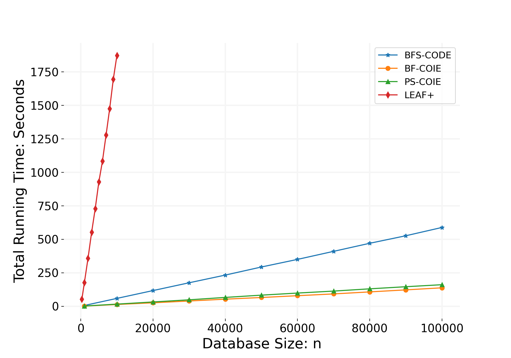
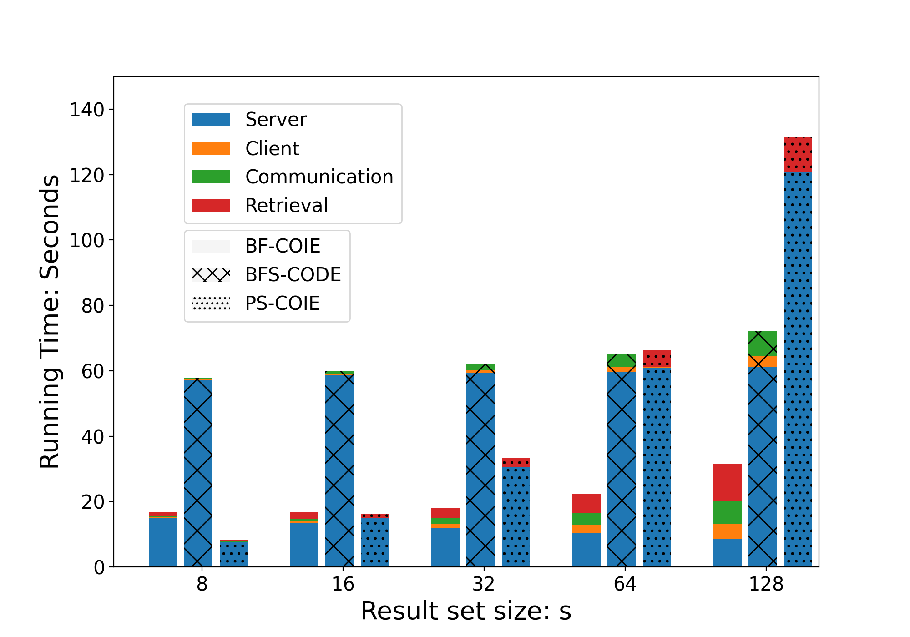
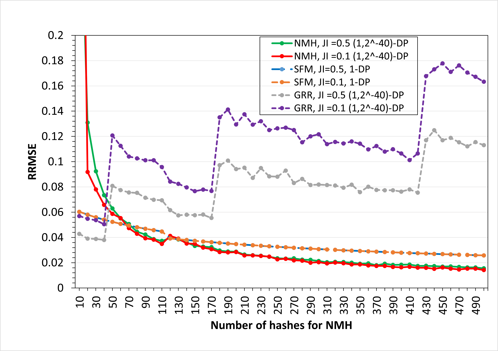
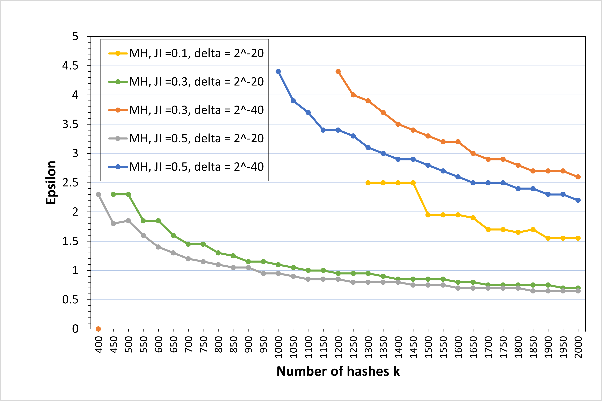
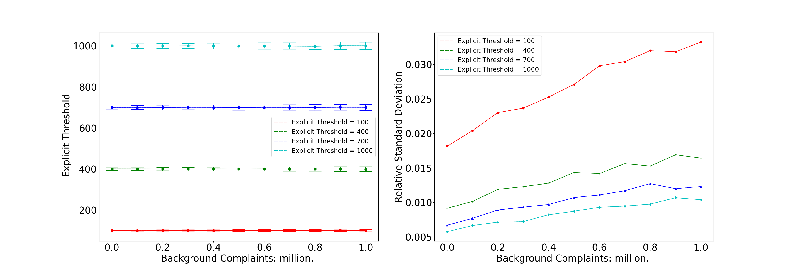
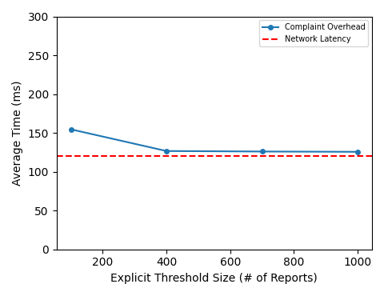

<!DOCTYPE html>
<html xmlns="http://www.w3.org/1999/xhtml" lang="" xml:lang="">
<head>
  <meta charset="utf-8" />
  <meta name="generator" content="pandoc" />
  <meta name="viewport" content="width=device-width, initial-scale=1.0, user-scalable=yes" />
  <meta name="author" content="Linsheng Liu" />
  <meta name="dcterms.date" content="2025-12-01" />
  <title>Thesis Proposal</title>
  <style>
    html {
      color: #1a1a1a;
      background-color: #fdfdfd;
    }
    body {
      margin: 0 auto;
      max-width: 36em;
      padding-left: 50px;
      padding-right: 50px;
      padding-top: 50px;
      padding-bottom: 50px;
      hyphens: auto;
      overflow-wrap: break-word;
      text-rendering: optimizeLegibility;
      font-kerning: normal;
    }
    @media (max-width: 600px) {
      body {
        font-size: 0.9em;
        padding: 12px;
      }
      h1 {
        font-size: 1.8em;
      }
    }
    @media print {
      html {
        background-color: white;
      }
      body {
        background-color: transparent;
        color: black;
        font-size: 12pt;
      }
      p, h2, h3 {
        orphans: 3;
        widows: 3;
      }
      h2, h3, h4 {
        page-break-after: avoid;
      }
    }
    p {
      margin: 1em 0;
    }
    a {
      color: #1a1a1a;
    }
    a:visited {
      color: #1a1a1a;
    }
    img {
      max-width: 100%;
    }
    h1, h2, h3, h4, h5, h6 {
      margin-top: 1.4em;
    }
    h5, h6 {
      font-size: 1em;
      font-style: italic;
    }
    h6 {
      font-weight: normal;
    }
    ol, ul {
      padding-left: 1.7em;
      margin-top: 1em;
    }
    li > ol, li > ul {
      margin-top: 0;
    }
    blockquote {
      margin: 1em 0 1em 1.7em;
      padding-left: 1em;
      border-left: 2px solid #e6e6e6;
      color: #606060;
    }
    code {
      font-family: Menlo, Monaco, Consolas, 'Lucida Console', monospace;
      font-size: 85%;
      margin: 0;
      hyphens: manual;
    }
    pre {
      margin: 1em 0;
      overflow: auto;
    }
    pre code {
      padding: 0;
      overflow: visible;
      overflow-wrap: normal;
    }
    .sourceCode {
     background-color: transparent;
     overflow: visible;
    }
    hr {
      background-color: #1a1a1a;
      border: none;
      height: 1px;
      margin: 1em 0;
    }
    table {
      margin: 1em 0;
      border-collapse: collapse;
      width: 100%;
      overflow-x: auto;
      display: block;
      font-variant-numeric: lining-nums tabular-nums;
    }
    table caption {
      margin-bottom: 0.75em;
    }
    tbody {
      margin-top: 0.5em;
      border-top: 1px solid #1a1a1a;
      border-bottom: 1px solid #1a1a1a;
    }
    th {
      border-top: 1px solid #1a1a1a;
      padding: 0.25em 0.5em 0.25em 0.5em;
    }
    td {
      padding: 0.125em 0.5em 0.25em 0.5em;
    }
    header {
      margin-bottom: 4em;
      text-align: center;
    }
    #TOC li {
      list-style: none;
    }
    #TOC ul {
      padding-left: 1.3em;
    }
    #TOC > ul {
      padding-left: 0;
    }
    #TOC a:not(:hover) {
      text-decoration: none;
    }
    code{white-space: pre-wrap;}
    span.smallcaps{font-variant: small-caps;}
    div.columns{display: flex; gap: min(4vw, 1.5em);}
    div.column{flex: auto; overflow-x: auto;}
    div.hanging-indent{margin-left: 1.5em; text-indent: -1.5em;}
    /* The extra [class] is a hack that increases specificity enough to
       override a similar rule in reveal.js */
    ul.task-list[class]{list-style: none;}
    ul.task-list li input[type="checkbox"] {
      font-size: inherit;
      width: 0.8em;
      margin: 0 0.8em 0.2em -1.6em;
      vertical-align: middle;
    }
    /* CSS for citations */
    div.csl-bib-body { }
    div.csl-entry {
      clear: both;
    }
    .hanging-indent div.csl-entry {
      margin-left:2em;
      text-indent:-2em;
    }
    div.csl-left-margin {
      min-width:2em;
      float:left;
    }
    div.csl-right-inline {
      margin-left:2em;
      padding-left:1em;
    }
    div.csl-indent {
      margin-left: 2em;
    }  </style>
  <script src="https://polyfill.io/v3/polyfill.min.js?features=es6"></script>
  <script
  src="https://cdn.jsdelivr.net/npm/mathjax@3/es5/tex-mml-chtml.js"
  type="text/javascript"></script>
</head>
<body>
<header id="title-block-header">
<h1 class="title">Thesis Proposal</h1>
<p class="author">Linsheng Liu</p>
<p class="date">December 1, 2025</p>
</header>
<nav id="TOC" role="doc-toc">
<ul>
<li><a href="#abstract" id="toc-abstract">Abstract</a></li>
<li><a href="#introduction" id="toc-introduction"><span
class="toc-section-number">1</span> Introduction</a>
<ul>
<li><a href="#the-linear-bottleneck-in-secure-computation"
id="toc-the-linear-bottleneck-in-secure-computation"><span
class="toc-section-number">1.1</span> The Linear Bottleneck in Secure
Computation</a></li>
<li><a
href="#sublinear-secure-protocols-primitives-for-sublinear-privacy"
id="toc-sublinear-secure-protocols-primitives-for-sublinear-privacy"><span
class="toc-section-number">1.2</span> Sublinear Secure Protocols:
Primitives for Sublinear Privacy</a></li>
<li><a href="#facts-accountability-via-probabilistic-structures"
id="toc-facts-accountability-via-probabilistic-structures"><span
class="toc-section-number">1.3</span> FACTS: Accountability via
Probabilistic Structures</a></li>
</ul></li>
<li><a href="#literature-review" id="toc-literature-review"><span
class="toc-section-number">2</span> Literature Review</a>
<ul>
<li><a href="#line-1-secure-search-sampling-and-similarity"
id="toc-line-1-secure-search-sampling-and-similarity"><span
class="toc-section-number">2.1</span> Line 1: Secure Search, Sampling,
and Similarity</a>
<ul>
<li><a href="#secure-search" id="toc-secure-search"><span
class="toc-section-number">2.1.1</span> Secure Search</a></li>
<li><a href="#secure-sampling" id="toc-secure-sampling"><span
class="toc-section-number">2.1.2</span> Secure Sampling</a></li>
<li><a href="#private-sketching-and-secure-sketching"
id="toc-private-sketching-and-secure-sketching"><span
class="toc-section-number">2.1.3</span> Private Sketching and Secure
Sketching</a></li>
<li><a href="#set-similarity-via-min-hash"
id="toc-set-similarity-via-min-hash"><span
class="toc-section-number">2.1.4</span> Set Similarity via
Min-Hash</a></li>
</ul></li>
<li><a
href="#line-2-facts-forwarding-accountability-in-end-to-end-encrypted-messaging-platforms"
id="toc-line-2-facts-forwarding-accountability-in-end-to-end-encrypted-messaging-platforms"><span
class="toc-section-number">2.2</span> Line 2: FACTS (Forwarding
Accountability in End-to-End Encrypted Messaging Platforms)</a></li>
</ul></li>
<li><a href="#secure-search-1" id="toc-secure-search-1"><span
class="toc-section-number">3</span> Secure Search</a>
<ul>
<li><a href="#introduction-1" id="toc-introduction-1"><span
class="toc-section-number">3.1</span> Introduction</a>
<ul>
<li><a href="#motivation" id="toc-motivation"><span
class="toc-section-number">3.1.1</span> Motivation</a></li>
<li><a href="#our-work" id="toc-our-work"><span
class="toc-section-number">3.1.2</span> Our Work</a></li>
</ul></li>
<li><a href="#preliminaries" id="toc-preliminaries"><span
class="toc-section-number">3.2</span> Preliminaries</a>
<ul>
<li><a href="#bloom-filter" id="toc-bloom-filter"><span
class="toc-section-number">3.2.1</span> Bloom Filter</a></li>
<li><a href="#sec:ABF" id="toc-sec:ABF"><span
class="toc-section-number">3.2.2</span> Algebraic Bloom Filter</a></li>
</ul></li>
<li><a href="#compressed-oblivious-encoding"
id="toc-compressed-oblivious-encoding"><span
class="toc-section-number">3.3</span> Compressed Oblivious Encoding</a>
<ul>
<li><a href="#compressed-oblivious-index-encoding"
id="toc-compressed-oblivious-index-encoding"><span
class="toc-section-number">3.3.1</span> Compressed Oblivious Index
Encoding</a></li>
<li><a href="#compressed-oblivious-data-encoding"
id="toc-compressed-oblivious-data-encoding"><span
class="toc-section-number">3.3.2</span> Compressed Oblivious Data
Encoding</a></li>
</ul></li>
<li><a href="#coie-schemes" id="toc-coie-schemes"><span
class="toc-section-number">3.4</span> COIE Schemes </a>
<ul>
<li><a href="#a-warm-up-construction"
id="toc-a-warm-up-construction"><span
class="toc-section-number">3.4.1</span> A Warm-up construction</a></li>
<li><a href="#sec:BF-COIE" id="toc-sec:BF-COIE"><span
class="toc-section-number">3.4.2</span> BF-COIE</a></li>
<li><a href="#coie-scheme-based-on-power-sums"
id="toc-coie-scheme-based-on-power-sums"><span
class="toc-section-number">3.4.3</span> COIE Scheme Based on Power
Sums</a></li>
</ul></li>
<li><a href="#code-scheme" id="toc-code-scheme"><span
class="toc-section-number">3.5</span> CODE Scheme</a>
<ul>
<li><a href="#ssec:countingBloom" id="toc-ssec:countingBloom"><span
class="toc-section-number">3.5.1</span> BF Set</a></li>
<li><a href="#code-scheme-based-on-bf-set"
id="toc-code-scheme-based-on-bf-set"><span
class="toc-section-number">3.5.2</span> CODE Scheme Based on BF
Set</a></li>
</ul></li>
<li><a href="#sec:ssp" id="toc-sec:ssp"><span
class="toc-section-number">3.6</span> Secure Search Protocols</a>
<ul>
<li><a href="#ell-f_p-relaxed-secure-search"
id="toc-ell-f_p-relaxed-secure-search"><span
class="toc-section-number">3.6.1</span> <span
class="math inline">\((\ell, f_p)\)</span>-Relaxed Secure
Search</a></li>
<li><a href="#security-of-setup-free-secure-search"
id="toc-security-of-setup-free-secure-search"><span
class="toc-section-number">3.6.2</span> Security of Setup-free Secure
Search</a></li>
<li><a href="#from-coie-to-secure-search"
id="toc-from-coie-to-secure-search"><span
class="toc-section-number">3.6.3</span> From COIE to Secure
Search</a></li>
<li><a href="#from-code-to-secure-search"
id="toc-from-code-to-secure-search"><span
class="toc-section-number">3.6.4</span> From CODE to Secure
Search</a></li>
</ul></li>
<li><a href="#evaluation" id="toc-evaluation"><span
class="toc-section-number">3.7</span> Evaluation</a>
<ul>
<li><a href="#fetch-time" id="toc-fetch-time"><span
class="toc-section-number">3.7.1</span> Fetch time</a></li>
<li><a href="#overall-running-time" id="toc-overall-running-time"><span
class="toc-section-number">3.7.2</span> Overall Running Time</a></li>
<li><a href="#sec:comm" id="toc-sec:comm"><span
class="toc-section-number">3.7.3</span> Communication</a></li>
</ul></li>
<li><a href="#related-work" id="toc-related-work"><span
class="toc-section-number">3.8</span> Related Work</a>
<ul>
<li><a href="#techniques-for-secure-search"
id="toc-techniques-for-secure-search"><span
class="toc-section-number">3.8.1</span> Techniques for Secure
Search</a></li>
<li><a href="#general-techniques" id="toc-general-techniques"><span
class="toc-section-number">3.8.2</span> General Techniques</a></li>
</ul></li>
<li><a href="#conclusion" id="toc-conclusion"><span
class="toc-section-number">3.9</span> Conclusion</a></li>
</ul></li>
<li><a href="#secure-sampling-1" id="toc-secure-sampling-1"><span
class="toc-section-number">4</span> Secure Sampling</a>
<ul>
<li><a href="#introduction-2" id="toc-introduction-2"><span
class="toc-section-number">4.1</span> Introduction</a>
<ul>
<li><a href="#our-work-1" id="toc-our-work-1"><span
class="toc-section-number">4.1.1</span> Our Work</a></li>
<li><a href="#technical-overview" id="toc-technical-overview"><span
class="toc-section-number">4.1.2</span> Technical Overview</a></li>
<li><a href="#related-work-1" id="toc-related-work-1"><span
class="toc-section-number">4.1.3</span> Related Work</a></li>
</ul></li>
<li><a href="#sec:l1" id="toc-sec:l1"><span
class="toc-section-number">4.2</span> Two-party <span
class="math inline">\(L_1\)</span> Sampling</a>
<ul>
<li><a href="#a-toy-protocol-towards-securely-realizing-f_l_1"
id="toc-a-toy-protocol-towards-securely-realizing-f_l_1"><span
class="toc-section-number">4.2.1</span> A toy protocol towards securely
realizing <span class="math inline">\(\F_{L_1}\)</span></a></li>
<li><a href="#sec:L1prot" id="toc-sec:L1prot"><span
class="toc-section-number">4.2.2</span> Secure <span
class="math inline">\(L_1\)</span> sampling protocol</a></li>
</ul></li>
<li><a href="#sec:l2" id="toc-sec:l2"><span
class="toc-section-number">4.3</span> Two Party <span
class="math inline">\(L_2\)</span> Sampling</a>
<ul>
<li><a href="#sec:insecure" id="toc-sec:insecure"><span
class="toc-section-number">4.3.1</span> A non-private <span
class="math inline">\(L_2\)</span> sampling protocol with <span
class="math inline">\(\tilde{O}(1)\)</span> communication</a></li>
<li><a href="#sec:secure" id="toc-sec:secure"><span
class="toc-section-number">4.3.2</span> Secure <span
class="math inline">\(L_2\)</span> Sampling From FHE</a></li>
<li><a href="#sec:insecureLp" id="toc-sec:insecureLp"><span
class="toc-section-number">4.3.3</span> A non-private <span
class="math inline">\(L_p\)</span> sampling protocol with <span
class="math inline">\(\tilde{O}(1)\)</span> communication</a></li>
</ul></li>
<li><a href="#sec:prod" id="toc-sec:prod"><span
class="toc-section-number">4.4</span> Two-party Product Sampling</a>
<ul>
<li><a href="#sec:prodLB" id="toc-sec:prodLB"><span
class="toc-section-number">4.4.1</span> Impossibility of sublinear
product sampling</a></li>
<li><a href="#sec:prodip" id="toc-sec:prodip"><span
class="toc-section-number">4.4.2</span> Product sampling while leaking
at most the inner product</a></li>
</ul></li>
<li><a href="#sec:rounds" id="toc-sec:rounds"><span
class="toc-section-number">4.5</span> Product Sampling in Constant
Rounds</a>
<ul>
<li><a href="#sec:jlt" id="toc-sec:jlt"><span
class="toc-section-number">4.5.1</span> Secure approximation of the
inner product</a></li>
<li><a href="#sec:const" id="toc-sec:const"><span
class="toc-section-number">4.5.2</span> Constant-round protocol for
product sampling</a></li>
</ul></li>
<li><a href="#sec:dp" id="toc-sec:dp"><span
class="toc-section-number">4.6</span> Two-party Exponential
Mechanism</a>
<ul>
<li><a href="#sec:example" id="toc-sec:example"><span
class="toc-section-number">4.6.1</span> A concrete example</a></li>
<li><a
href="#differentially-private-inner-product-for-the-exponential-mechanism"
id="toc-differentially-private-inner-product-for-the-exponential-mechanism"><span
class="toc-section-number">4.6.2</span> Differentially-Private Inner
Product for the Exponential Mechanism</a></li>
<li><a href="#instantiating-the-exponential-mechanism"
id="toc-instantiating-the-exponential-mechanism"><span
class="toc-section-number">4.6.3</span> Instantiating the Exponential
Mechanism</a></li>
</ul></li>
</ul></li>
<li><a href="#minhash" id="toc-minhash"><span
class="toc-section-number">5</span> MinHash</a>
<ul>
<li><a href="#introduction-3" id="toc-introduction-3"><span
class="toc-section-number">5.1</span> Introduction</a></li>
<li><a href="#related-works" id="toc-related-works"><span
class="toc-section-number">5.2</span> Related Works</a></li>
<li><a href="#preliminaries-1" id="toc-preliminaries-1"><span
class="toc-section-number">5.3</span> Preliminaries</a></li>
<li><a href="#sec:basic" id="toc-sec:basic"><span
class="toc-section-number">5.4</span> Min-Hash with DP</a>
<ul>
<li><a href="#sec:sensitivity" id="toc-sec:sensitivity"><span
class="toc-section-number">5.4.1</span> Sensitivity</a></li>
<li><a href="#noisy-min-hash" id="toc-noisy-min-hash"><span
class="toc-section-number">5.4.2</span> Noisy Min-Hash</a></li>
</ul></li>
<li><a href="#sec:curator" id="toc-sec:curator"><span
class="toc-section-number">5.5</span> Noiseless Protocol in the Private
Hash Setting</a></li>
<li><a href="#sec:ddp1" id="toc-sec:ddp1"><span
class="toc-section-number">5.6</span> DDP of <span
class="math inline">\({\mathcal{F}_\mathsf{minH}}\)</span></a></li>
<li><a href="#proof-of-theorem-thmcddp"
id="toc-proof-of-theorem-thmcddp"><span
class="toc-section-number">5.7</span> Proof of Theorem [thm:CDDP]</a>
<ul>
<li><a href="#apx:pubHashHighEntropy"
id="toc-apx:pubHashHighEntropy"><span
class="toc-section-number">5.7.1</span> Proof</a></li>
</ul></li>
<li><a href="#sec:ddp-polysize" id="toc-sec:ddp-polysize"><span
class="toc-section-number">5.8</span> Highlights of Proof of
Theorem [thm:CDDP2]</a>
<ul>
<li><a href="#min-hash-graph" id="toc-min-hash-graph"><span
class="toc-section-number">5.8.1</span> Min-hash Graph</a></li>
<li><a href="#fixed-subsets-rt-of-secret-items-and-good-iterations"
id="toc-fixed-subsets-rt-of-secret-items-and-good-iterations"><span
class="toc-section-number">5.8.2</span> Fixed Subsets <span
class="math inline">\((R&#39;,T)\)</span> of Secret Items and Good
Iterations</a></li>
<li><a href="#noise-over-the-choice-of-r-with-public-hash-functions"
id="toc-noise-over-the-choice-of-r-with-public-hash-functions"><span
class="toc-section-number">5.8.3</span> Noise Over the Choice of <span
class="math inline">\(R&#39;\)</span> with Public Hash
Functions</a></li>
<li><a href="#geometric-collision-property-in-the-face-of-leakage"
id="toc-geometric-collision-property-in-the-face-of-leakage"><span
class="toc-section-number">5.8.4</span> Geometric Collision Property In
the Face of Leakage</a></li>
<li><a href="#sec:strong-chain-rule"
id="toc-sec:strong-chain-rule"><span
class="toc-section-number">5.8.5</span> Strong Chain Rule</a></li>
</ul></li>
<li><a href="#sec:eval" id="toc-sec:eval"><span
class="toc-section-number">5.9</span> Empirical Evaluation</a>
<ul>
<li><a href="#sec:eval_comp" id="toc-sec:eval_comp"><span
class="toc-section-number">5.9.1</span> Comparison With Prior
Work</a></li>
<li><a href="#ddp-of-noiseless-protocol"
id="toc-ddp-of-noiseless-protocol"><span
class="toc-section-number">5.9.2</span> DDP of Noiseless
Protocol</a></li>
</ul></li>
</ul></li>
<li><a href="#facts" id="toc-facts"><span
class="toc-section-number">6</span> FACTs</a>
<ul>
<li><a href="#introduction-4" id="toc-introduction-4"><span
class="toc-section-number">6.1</span> Introduction</a>
<ul>
<li><a href="#setting-and-goals" id="toc-setting-and-goals"><span
class="toc-section-number">6.1.1</span> Setting and Goals</a></li>
<li><a href="#building-facts" id="toc-building-facts"><span
class="toc-section-number">6.1.2</span> Building FACTS</a></li>
<li><a href="#limitations-of-facts" id="toc-limitations-of-facts"><span
class="toc-section-number">6.1.3</span> Limitations of FACTS</a></li>
<li><a href="#paper-layout" id="toc-paper-layout"><span
class="toc-section-number">6.1.4</span> Paper Layout</a></li>
</ul></li>
<li><a href="#sec:prelim" id="toc-sec:prelim"><span
class="toc-section-number">6.2</span> Preliminaries</a></li>
<li><a href="#sec:facts" id="toc-sec:facts"><span
class="toc-section-number">6.3</span> Fuzzy Anonymous Complaint Tally
System (FACTS)</a></li>
<li><a href="#sec:ccbf" id="toc-sec:ccbf"><span
class="toc-section-number">6.4</span> Collaborative counting Bloom
filter</a>
<ul>
<li><a href="#ccbf-construction" id="toc-ccbf-construction"><span
class="toc-section-number">6.4.1</span> CCBF Construction</a></li>
<li><a href="#calculating-the-tipping-point"
id="toc-calculating-the-tipping-point"><span
class="toc-section-number">6.4.2</span> Calculating the tipping
point</a></li>
<li><a href="#sec:tailbounds" id="toc-sec:tailbounds"><span
class="toc-section-number">6.4.3</span> Tail Bounds</a></li>
</ul></li>
<li><a href="#sec:construction" id="toc-sec:construction"><span
class="toc-section-number">6.5</span> Instantiating FACTS</a></li>
<li><a href="#sec:experiments" id="toc-sec:experiments"><span
class="toc-section-number">6.6</span> Experimental Evaluations</a>
<ul>
<li><a href="#experimental-parameters"
id="toc-experimental-parameters"><span
class="toc-section-number">6.6.1</span> Experimental parameters</a></li>
<li><a href="#accuracy-and-stability"
id="toc-accuracy-and-stability"><span
class="toc-section-number">6.6.2</span> Accuracy and stability</a></li>
<li><a href="#performance-overhead" id="toc-performance-overhead"><span
class="toc-section-number">6.6.3</span> Performance overhead</a></li>
</ul></li>
<li><a href="#sec:proofs" id="toc-sec:proofs"><span
class="toc-section-number">6.7</span> Security of FACTS</a>
<ul>
<li><a href="#adversary-model" id="toc-adversary-model"><span
class="toc-section-number">6.7.1</span> Adversary Model</a></li>
<li><a href="#privacy" id="toc-privacy"><span
class="toc-section-number">6.7.2</span> Privacy</a></li>
<li><a href="#integrity" id="toc-integrity"><span
class="toc-section-number">6.7.3</span> Integrity</a></li>
</ul></li>
<li><a href="#sec:altFACTS" id="toc-sec:altFACTS"><span
class="toc-section-number">6.8</span> Alternative FACTS</a></li>
<li><a href="#sec:related" id="toc-sec:related"><span
class="toc-section-number">6.9</span> Related Work</a></li>
</ul></li>
<li><a href="#timeline" id="toc-timeline"><span
class="toc-section-number">7</span> Timeline</a></li>
<li><a href="#preliminary-results" id="toc-preliminary-results"><span
class="toc-section-number">8</span> Preliminary Results</a>
<ul>
<li><a href="#microbenchmarks" id="toc-microbenchmarks"><span
class="toc-section-number">8.1</span> Microbenchmarks</a></li>
<li><a href="#bandwidth-overhead-analysis"
id="toc-bandwidth-overhead-analysis"><span
class="toc-section-number">8.2</span> Bandwidth Overhead
Analysis</a></li>
<li><a href="#conclusion-of-preliminary-data"
id="toc-conclusion-of-preliminary-data"><span
class="toc-section-number">8.3</span> Conclusion of Preliminary
Data</a></li>
</ul></li>
<li><a href="#conclusion-1" id="toc-conclusion-1"><span
class="toc-section-number">9</span> Conclusion</a></li>
</ul>
</nav>
<h1 class="unnumbered" id="abstract">Abstract</h1>
<p>This dissertation investigates how to reduce communication overhead
in privacy-preserving applications. It develops two complementary
directions toward this goal. The first studies how sublinear
communication protocols can be achieved for tasks such as secure search
over encrypted datasets, secure collaborative sampling protocols, and
sublinear approximation algorithms such as Min-Hash for set similarity.
These techniques serve as common building blocks across a wide range of
privacy-preserving applications. Together, these results reveal a
unified perspective on how limited communication and provable privacy
reinforce each other across modern cryptographic and data-analytic
settings. The second direction extends these to practical systems such
as the FACTS framework for privacy-preserving accountability on
end-to-end encrypted messaging systems (EEMS). This work enables
threshold tracebacks to identify the originator of reported messages
while the cost depends only on the number of reports, and includes
preliminary designs and analysis for extending these mechanisms to
identify the super-spreader of reported messages.</p>
<h1 data-number="1" id="introduction"><span
class="header-section-number">1</span> Introduction</h1>
<p>The modern digital landscape is defined by a fundamental tension
between the exponential growth of data and the imperative to protect the
privacy of the individuals generating it. As datasets scale into the
terabytes and petabytes, and as digital communication becomes the
primary medium for societal discourse, the computational paradigms that
served the early internet are reaching their limits. Traditional
cryptographic protocols for privacy-preserving applications, such as
Secure Multi-Party Computation (MPC) and Fully Homomorphic Encryption
(FHE), offer mathematically robust guarantees of confidentiality.
However, these protocols typically exhibit linear or super-linear
complexity with respect to the input size (<span
class="math inline">\(O(n)\)</span>). In a world of massive datasets,
linear complexity is often synonymous with infeasibility. A query that
requires touching every record in a billion-row database, even if
cryptographically secure, remains practically useless if it takes days
to execute.</p>
<p>Consequently, one important frontier of cryptographic research has
shifted toward the development of <strong>sublinear
algorithms</strong>—protocols whose complexity is logarithmic, constant
with respect to the input size, or dependent only on the output size.
This thesis proposal report synthesizes four seminal contributions that
pioneer this shift across two distinct but interrelated domains.</p>
<p>The first domain, <strong>Sublinear Secure Protocols</strong>,
comprises three studies that attack the fundamental algorithmic
bottlenecks of secure computation. These works introduce a new data
structure for compressing large sparse data vectors for homomorphically
encrypted search to allow for parallel, sublinear retrieval, develop
protocols for secure sampling from distributed distributions without
linear communication, and investigate the inherent privacy properties of
sketching algorithms (Min-Hash).</p>
<p>The second domain, designated as <strong>FACTS</strong>, addresses
the societal crisis of misinformation within end-to-end encrypted
messaging systems (EEMS). Here, the challenge is not merely
computational efficiency but the architectural reconciliation of user
privacy with platform accountability. The proposed solution, the Fuzzy
Anonymous Complaint Tally System (FACTS), leverages a novel
probabilistic data structure to achieve sublinear scalability in
complaint auditing, proving that privacy and moderation need not be
mutually exclusive.</p>
<p>A unifying theme across both groups is the strategic utilization of
<strong>approximation</strong> and <strong>probabilistic
correctness</strong>. Whether it is the fuzzy counting of complaints in
FACTS, the rejection sampling in secure estimation, or the
false-positive rates of compressed encodings in search, these works
demonstrate that controlled relaxation of exactness is the key to
unlocking sublinear performance. This introduction delineates the
theoretical underpinnings and practical implications of these
advancements, setting the stage for a detailed technical analysis.</p>
<h2 data-number="1.1"
id="the-linear-bottleneck-in-secure-computation"><span
class="header-section-number">1.1</span> The Linear Bottleneck in Secure
Computation</h2>
<p>To understand the necessity of the contributions discussed herein,
one must first appreciate the “Linearity Wall.” In standard secure
multi-party computation, if Party A holds a vector <span
class="math inline">\(x\)</span> and Party B holds a vector <span
class="math inline">\(y\)</span>, computing a function <span
class="math inline">\(f(x, y)\)</span> usually requires processing every
bit of the inputs to avoid leaking information about which bits were
“useful”. For example, in Private Information Retrieval (PIR), the
server must process the entire database to answer a single query;
otherwise, the server learns which items were <em>not</em> touched,
narrowing down the user’s interest.</p>
<p>While techniques like Oblivious RAM (ORAM) can hide access patterns,
they impose logarithmic overheads that, while asymptotically better than
linear scanning for multiple accesses, still require significant
bandwidth and state management. The research in Sublinear Secure
Protocols specifically targets scenarios where even these overheads are
unacceptable, aiming for protocols where communication depends on the
<em>output size</em> or the <em>security parameter</em>, rather than the
input database size.</p>
<h2 data-number="1.2"
id="sublinear-secure-protocols-primitives-for-sublinear-privacy"><span
class="header-section-number">1.2</span> Sublinear Secure Protocols:
Primitives for Sublinear Privacy</h2>
<p>This line of research explores the building blocks of sublinear
privacy.</p>
<ul>
<li><p><strong>Encrypted Search:</strong> The first paper tackles the
sequential bottleneck in FHE search. Prior systems required a round of
interaction for every matching record found. The authors propose
<strong>Compressed Oblivious Encoding (COE)</strong>, allowing a server
to compress all search results into a single package. This reduces the
fetching time by orders of magnitude (1800x in experiments), effectively
making FHE search viable for real-time applications.</p></li>
<li><p><strong>Secure Sampling:</strong> The second paper addresses the
problem of sampling from joint distributions (e.g., <span
class="math inline">\(L_1, L_2\)</span>, Product) partitioned across
users. It proves that while general product sampling is impossible with
sublinear communication, specific correlated inputs allow for efficient
protocols. The introduction of <strong>Corrective Sampling</strong>—a
technique that corrects a proxy distribution into a target distribution
without computing normalization factors—allows for constant-round
sampling protocols.</p></li>
<li><p><strong>Min-Hash Privacy:</strong> The third paper in this group
interrogates the “folklore” that sketching algorithms like Min-Hash are
inherently private. It rigorously proves that while sketches compress
data (sublinear representation), they do not automatically guarantee
Differential Privacy (DP) in the public hash setting. The authors
introduce <strong>Distributional Differential Privacy (DDP)</strong> and
<strong>Noisy Min-Hash</strong> to bridge this gap, allowing for
constant-size comparisons of massive sets with formal privacy
guarantees.</p></li>
</ul>
<p>Collectively, these works argue that the future of privacy-preserving
technologies lies in the domain of sublinear algorithms, where
mathematical approximation provides the necessary slack to achieve
scalability.</p>
<h2 data-number="1.3"
id="facts-accountability-via-probabilistic-structures"><span
class="header-section-number">1.3</span> FACTS: Accountability via
Probabilistic Structures</h2>
<p>This line of research focuses on the application of “fighting fake
news”. end-to-end encrypted messaging systems (EEMS) platforms like
WhatsApp and Signal utilize encryption that hides message content from
the service provider. This prevents any content moderation methods that
rely on analyzing the content in the clear, such as tools used by
platforms like Facebook or Twitter. The FACTS system introduces a
paradigm where moderation is triggered only by a consensus of user
complaints.</p>
<p>The core innovation here is the <strong>Collaborative Counting Bloom
Filter (CCBF)</strong>. This data structure allows the system to tally
complaints against millions of messages without the server knowing which
complaints correspond to which message until a threshold is crossed.
This is achieved by “mixing” counters in a shared bit array. The
efficiency is sublinear in the number of messages in the system per
epoch: identifying a message for audit requires no linear scan of the
database, and registering a complaint requires flipping a single bit.
This work exemplifies how probabilistic data structures—traditionally
used for efficiency in networking–can be repurposed as privacy
primitives.</p>
<h1 data-number="2" id="literature-review"><span
class="header-section-number">2</span> Literature Review</h1>
<p>This section surveys existing literature relevant to the two primary
lines of work. First, we discuss the foundational cryptographic
primitives and protocols for <strong>Secure Search, Secure Sampling, and
Privacy-Preserving Set Similarity</strong>. Second, we review the
literature relevant to our specific application in accountability
systems of end-to-end encrypted messaging systems,
<strong>FACTS</strong>.</p>
<h2 data-number="2.1"
id="line-1-secure-search-sampling-and-similarity"><span
class="header-section-number">2.1</span> Line 1: Secure Search,
Sampling, and Similarity</h2>
<p>This line of work focuses on optimizing privacy-preserving protocols
for retrieving and analyzing data. We divide the literature into three
interconnected domains: secure search, secure sampling, and set
similarity.</p>
<h4 data-number="2.1.0.1" id="differential-privacy-dp."><span
class="header-section-number">2.1.0.1</span> Differential privacy
(DP).</h4>
<p>Differential privacy limits what an adversary can learn about any
individual input from the output of a computation <span class="citation"
data-cites="dwork2006differential dwork2006calibrating">[1], [2]</span>.
For an overview of DP and standard mechanisms in both the curator
setting and distributed settings, we refer the reader to the book by
Dwork and Roth <span class="citation"
data-cites="dwork2014algorithmic">[3]</span>. DP will appear repeatedly
in our discussion, both as an explicit privacy goal and as a tool for
trading accuracy for improved efficiency.</p>
<h3 data-number="2.1.1" id="secure-search"><span
class="header-section-number">2.1.1</span> Secure Search</h3>
<p>Secure search is a widely-studied problem with solutions spanning
various cryptographic settings. In the discussion below, let <span
class="math inline">\(n\)</span> denote the number of data items.</p>
<h4 data-number="2.1.1.1"
id="secure-pattern-matching-spm-on-fhe-encrypted-data."><span
class="header-section-number">2.1.1.1</span> Secure pattern matching
(SPM) on FHE-encrypted data.</h4>
<p>In SPM, given an encrypted query <span class="math inline">\(\lbra q
\lket\)</span> and <span class="math inline">\(n\)</span> FHE-encrypted
data items <span class="math inline">\((\lbra x_1 \lket, \ldots, \lbra
x_n \lket)\)</span>, the protocol returns a vector of <span
class="math inline">\(n\)</span> ciphertexts <span
class="math inline">\(\lbra b_1 \lket, \ldots, \lbra b_n \lket\)</span>,
where <span class="math inline">\(b_i\)</span> indicates whether the
<span class="math inline">\(i\)</span>-th data element matches the
query <span class="citation"
data-cites="CCSW:YSKYK13 FCW:CheKimLau15 TIFS:CKK16 TDSC:KLLTW19">[4],
[5], [6], [7]</span>. These works primarily focus on optimizing the
search circuits used to determine matches. Consequently, the
communication complexity and the client’s running time remain
proportional to the number of data items. In contrast, our work focuses
on the orthogonal problem of optimizing the <em>retrieval</em> of
matched data items, aiming for sublinear communication and client
computation.</p>
<h4 data-number="2.1.1.2" id="searchable-encryption-se."><span
class="header-section-number">2.1.1.2</span> Searchable encryption
(SE).</h4>
<p>Searchable encryption <span class="citation"
data-cites="SP:SonWagPer00 EC:BDOP04">[8], [9]</span> enables highly
efficient search (typically <span class="math inline">\(o(n)\)</span>
time) over encrypted data. Efficient SE schemes have been proposed for a
wide variety of queries, including equality queries <span
class="citation" data-cites="CCS:CGKO06 AC:ChaKam10">[10], [11]</span>,
range queries <span class="citation"
data-cites="RSA:IKLO16 CCS:RACY16">[12], [13]</span>, and conjunctive
queries <span class="citation" data-cites="SP:PKVKMC14 C:CJJKRS13">[14],
[15]</span>. However, to achieve sublinear query performance, SE schemes
generally require significant preprocessing and must relax security
guarantees, allowing partial information (such as access patterns) to
leak to the server <span class="citation"
data-cites="SP:FVYSHG17">[16]</span>. Unlike standard SE, our work
focuses on achieving preprocessing-free constructions that leak nothing
about the queries or results beyond their sizes.</p>
<h4 data-number="2.1.1.3" id="property-preserving-encryption-ppe."><span
class="header-section-number">2.1.1.3</span> Property Preserving
Encryption (PPE).</h4>
<p>PPE <span class="citation" data-cites="EC:PanRou12">[17]</span>
produces ciphertexts that maintain certain relationships (e.g., equality
or order) of the underlying plaintexts. Examples include deterministic
encryption <span class="citation" data-cites="C:BelBolONe07">[18]</span>
and order-preserving encryption <span class="citation"
data-cites="EC:BCLO09 C:BolCheONe11">[19], [20]</span>. However, it has
been demonstrated <span class="citation"
data-cites="NDSS:IslKuzKan12 CCS:GMNRS16 SP:GSBNR17">[21], [22],
[23]</span> that such ciphertexts leak significant information,
rendering them undesirable for many security-critical applications.</p>
<h4 data-number="2.1.1.4"
id="general-techniques-pir-mpc-oram-ods."><span
class="header-section-number">2.1.1.4</span> General Techniques (PIR,
MPC, ORAM, ODS).</h4>
<p>Private Information Retrieval (PIR) <span class="citation"
data-cites="JACM:CKGS98">[24]</span> allows retrieval while hiding the
index, but requires the client to know the index beforehand. General
MPC <span class="citation" data-cites="FOCS:Yao86">[25]</span> and
ORAM <span class="citation" data-cites="GO96">[26]</span> can
theoretically solve secure search, but generic constructions typically
incur high communication (<span class="math inline">\(\Omega(n)\)</span>
for MPC) or significant overhead to hide access patterns. Oblivious data
structures (ODS) can support richer data structures (e.g., search
trees), but typical ODS constructions incur <span
class="math inline">\(\Omega(\log^2 n)\)</span> rounds per operation,
which motivates constant-round designs for practical secure search.</p>
<h3 data-number="2.1.2" id="secure-sampling"><span
class="header-section-number">2.1.2</span> Secure Sampling</h3>
<h4 data-number="2.1.2.1" id="sampling-from-streaming-data."><span
class="header-section-number">2.1.2.1</span> Sampling from streaming
data.</h4>
<p>Non-private sampling from data streams has been studied
extensively <span class="citation"
data-cites="cormode2019p ganguly2007counting jowhari2011tight MW10 woodruff2016distributed">[27],
[28], [29], [30], [31]</span>, typically achieving <span
class="math inline">\(\ell_p\)</span> sampling with sublinear
computation. These works generally operate in a single-party setting and
do not consider privacy.</p>
<h4 data-number="2.1.2.2" id="secure-multiparty-sampling."><span
class="header-section-number">2.1.2.2</span> Secure multiparty
sampling.</h4>
<p>In the privacy domain, works like <span class="citation"
data-cites="prabhakaran2012secure prabhakaran2014assisted">[32],
[33]</span> investigate sampling in the information-theoretic setting,
while Champion et al. <span class="citation"
data-cites="CCS:ChasheUll19">[34]</span> consider the computational
setting for publicly-known distributions. Our work is distinct in
focusing on sampling from a <em>private</em> distribution in the
computational setting, with a specific emphasis on reducing
communication.</p>
<h4 data-number="2.1.2.3"
id="secure-mpc-of-differentially-private-functionalities."><span
class="header-section-number">2.1.2.3</span> Secure MPC of
differentially private functionalities.</h4>
<p>Since Dwork et al. <span class="citation"
data-cites="dwork2006our">[35]</span>, significant work has focused on
using MPC to realize DP functionalities <span class="citation"
data-cites="acar2017achieving clifton2013challenges eriguchi2021efficient">[36],
[37], [38]</span>. While these works address machine learning and
aggregation, we focus specifically on optimizing the communication
complexity for sampling functionalities.</p>
<h3 data-number="2.1.3"
id="private-sketching-and-secure-sketching"><span
class="header-section-number">2.1.3</span> Private Sketching and Secure
Sketching</h3>
<h4 data-number="2.1.3.1" id="secure-sketching."><span
class="header-section-number">2.1.3.1</span> Secure sketching.</h4>
<p>A long line of work studies secure sketches for estimating statistics
(e.g., Tor usage, web traffic, unique count, median) with sublinear
communication and computation <span class="citation"
data-cites="CCS:ElaDanGol14 CCS:JanJoh16 NDSS:MelDanDec16 CCS:WJSYG19 PoPETS:CDKY20">[39],
[40], [41], [42], [43]</span>. These works are closely related in
spirit, but generally focus on building secure protocols for specific
streaming-style statistics, whereas our focus is on sublinear primitives
(search, sampling, and similarity) that can serve as broadly reusable
building blocks.</p>
<h4 data-number="2.1.3.2" id="private-sketching."><span
class="header-section-number">2.1.3.2</span> Private sketching.</h4>
<p>Sketching algorithms are sublinear-space methods that produce compact
summaries enabling efficient storage, merging, and processing. A growing
body of work observes that sketches can also aid privacy, since
information loss in the sketch can make the sketch itself differentially
private or reduce the additional noise required <span class="citation"
data-cites="FOCS:BBDS12 choi2020differentially smith2020flajolet wang2022differentially ICML:HehTinCor23 dickens2022order li2019privacy pagh2022improved mir2011pan melis2015efficient bassily2015local bassily2017practical huang2021frequency zhao2022differentially">[44],
[45], [46], [47], [48], [49], [50], [51], [52], [53], [54], [55], [56],
[57]</span>. Related work also constructs private sketches for set
cardinality and set operations, including mergeable sketches for
estimating intersection and union <span class="citation"
data-cites="stanojevic2017distributed sparka2018p2kmv nunez2020rrtxfm kreuter2020privacy pagh_et_al:LIPIcs.ICDT.2021.18 ICML:HehTinCor23">[48],
[58], [59], [60], [61], [62]</span>. This perspective directly motivates
our study of privacy properties of Min-hash and related similarity
sketches.</p>
<h3 data-number="2.1.4" id="set-similarity-via-min-hash"><span
class="header-section-number">2.1.4</span> Set Similarity via
Min-Hash</h3>
<h4 data-number="2.1.4.1" id="jaccard-index-and-min-hash."><span
class="header-section-number">2.1.4.1</span> Jaccard Index and
Min-Hash.</h4>
<p>Many works have constructed 2-party Jaccard index estimation
protocols using Min-hash with sublinear communication to avoid the high
cost of exact computation <span class="citation"
data-cites="wpes:CFGT12 eprint:RCSWK19 Faber:thesis">[63],
<strong>eprint:RCSWK19?</strong>,
<strong>Faber:thesis?</strong></span>.</p>
<h4 data-number="2.1.4.2" id="differentially-private-dp-min-hash."><span
class="header-section-number">2.1.4.2</span> Differentially Private (DP)
Min-Hash.</h4>
<p>Recent research aims to output Jaccard similarity estimates while
preserving differential privacy. Aum<span>ü</span>ller et al. <span
class="citation" data-cites="sisap:AumBouSch20">[64]</span> achieve
local DP min-hash by perturbing vectors with noise. Other attempts have
faced challenges; for example, <span class="citation"
data-cites="conc:YWRLLQ19">[65]</span> was shown to have flaws in its
privacy claim, while <span class="citation"
data-cites="arxiv:YLLHQ17">[66]</span> incurs high noise overhead.</p>
<h4 data-number="2.1.4.3"
id="optimizing-secure-computation-using-dp."><span
class="header-section-number">2.1.4.3</span> Optimizing Secure
Computation using DP.</h4>
<p>Our work sits at the intersection of DP and MPC. A specific line of
research relevant to our goals is <em>optimizing secure computation
using DP</em>, initiated by Beimel et al. <span class="citation"
data-cites="BNO08">[67]</span>. Subsequent works have applied this to
set intersection <span class="citation"
data-cites="CCS:HMFS17 PETS:GroRinRos19">[68], [69]</span>,
graph-parallel computations <span class="citation"
data-cites="CCS:MazGor18">[70]</span>, and shuffling <span
class="citation" data-cites="ACNS:GKLX22">[71]</span>. We similarly
leverage DP-style relaxations to improve the efficiency of similarity
protocols.</p>
<h4 data-number="2.1.4.4" id="secure-approximation."><span
class="header-section-number">2.1.4.4</span> Secure approximation.</h4>
<p>Secure approximation studies what functions can be securely
approximated without revealing anything beyond the true output <span
class="citation" data-cites="ICALP:FIMNSW01 STOC:HKKN01">[72],
[73]</span>. This notion is distinct from DP-style approximation, but it
is conceptually adjacent: both investigate how controlled relaxation can
enable more efficient privacy-preserving computation.</p>
<h4 data-number="2.1.4.5"
id="robust-sketching-and-property-preserving-hashing."><span
class="header-section-number">2.1.4.5</span> Robust sketching and
property-preserving hashing.</h4>
<p>Property-preserving hash (PPH) compresses large inputs into short
digests enabling computation of a property from the digests alone, and
adversarially robust PPH further requires correctness even when inputs
are adaptively chosen after the hash is fixed <span class="citation"
data-cites="itcs:BoyLavVai19 EC:FleSim21 EC:FleLarSim22 C:HLTW22">[74],
[75], [76], <strong>itcs:BoyLavVai19?</strong></span>. Related work on
robust sketching similarly studies sketches that remain accurate under
adaptive inputs <span class="citation"
data-cites="ITCS:ACSS23 JACM:BJWY22">[77], [78]</span>. These works
focus on robustness to adversarial inputs, whereas our focus is on
privacy when the adversary additionally sees the hash functions or
sketch randomness.</p>
<h2 data-number="2.2"
id="line-2-facts-forwarding-accountability-in-end-to-end-encrypted-messaging-platforms"><span
class="header-section-number">2.2</span> Line 2: FACTS (Forwarding
Accountability in End-to-End Encrypted Messaging Platforms)</h2>
<p>Our second line of work shifts focus to a specific application:
enabling accountability in end-to-end encrypted messaging systems.</p>
<h4 data-number="2.2.0.1" id="message-franking."><span
class="header-section-number">2.2.0.1</span> Message Franking.</h4>
<p>The prevailing approach for reporting malicious messages is
<em>message franking</em> <span class="citation"
data-cites="C:DGRW18 C:TGLMR19 C:GruLuRis17">[79], [80], [81]</span>.
This technique allows a recipient to cryptographically prove the
identity of the sender. However, message franking is limited to
identifying the <em>immediate</em> sender and cannot trace the original
source in a forwarding chain. Furthermore, it does not provide threshold
guarantees to prevent unmasking users based on a single complaint.</p>
<h4 data-number="2.2.0.2" id="scalable-oblivious-data-structures."><span
class="header-section-number">2.2.0.2</span> Scalable Oblivious Data
Structures.</h4>
<p>FACTS requires scalable oblivious storage to track complaints. While
multi-client ORAM protocols exist <span class="citation"
data-cites="maffei-msmcoram concuroram MOSE">[82], [83], [84]</span>,
they do not yet scale to the millions of users required for messaging
applications. Similarly, oblivious counters <span class="citation"
data-cites="EC:KatMyeOst01 FC:GohGol05">[85], [86]</span> generally
focus on exact counting or complex operations, lacking the specific
compression traits of the Compact Count-Min Bloom Filter (CCBF) we
utilize. More generally, oblivious data structures <span
class="citation" data-cites="CCS:WNLCSS14 AC:KelSch14 SP:Shi20">[87],
[88], [89]</span> enable higher-level oblivious operations over
encrypted data, but do not directly provide the compression needed to
store and update complaint tallies at large scale.</p>
<h4 data-number="2.2.0.3"
id="private-sketching-for-user-server-settings."><span
class="header-section-number">2.2.0.3</span> Private Sketching for
User-Server Settings.</h4>
<p>CCBF can be viewed as a compact <em>sketch</em> for storing complaint
counts over a large set of messages. There has been significant interest
in privacy-preserving sketching algorithms for cardinality estimation,
frequency measurement, and related approximations <span class="citation"
data-cites="PoPETS:CDKY20 CCS:WJSYG19">[42], [43]</span>. However, much
of this literature targets multi-party settings (often with multiple
servers) where parties run secure computation to evaluate the statistic.
In contrast, FACTS restricts communication to the user–server model,
which limits the direct applicability of these approaches.</p>
<h1 data-number="3" id="secure-search-1"><span
class="header-section-number">3</span> Secure Search</h1>
<h2 data-number="3.1" id="introduction-1"><span
class="header-section-number">3.1</span> Introduction</h2>
<p>As computing paradigms are shifting to cloud-centric technologies,
users of these technologies are increasingly concerned with the privacy
and confidentiality of the data they upload to the cloud. Specifically,
a <em>client</em> uploads data to the <em>server</em> and expects the
following guarantees:</p>
<p>The uploaded data should remain private, even from the server
itself;</p>
<p>The server should be able to perform computations on the uploaded
data in response to client queries;</p>
<p>The client should be able to efficiently recover the results of the
server’s computation with minimal post-processing.</p>
<p>In this work, we will focus on the computational task of secure
search. In this application, the client uploads a set of records to the
server, and later posts queries to the server. Computation proceeds in
two steps called <em>matching</em> and <em>fetching</em>. In the
matching step, the server compares the encrypted search query from the
client with all encrypted records in the database, and computes an
encrypted 0/1 vector, with 1 indicating that the corresponding record
satisfies the query. The fetching step returns all the 1-valued indexes
and the corresponding records, to the client for decryption.</p>
<p>While seemingly conflicting goals, the guarantees of (1), (2), (3)
can be simultaneously achieved for the secure search setting via
techniques such as secure multiparty computation and searchable
encryption. Recently, a line of works has focused on Fully Homomorphic
Encryption (FHE)-based secure search, which we describe next.</p>
<h4 data-number="3.1.0.1" id="fhe-based-secure-search."><span
class="header-section-number">3.1.0.1</span> FHE-based secure
search.</h4>
<p>The simplicity of the framework of <span><em>secure search on FHE
encrypted data</em></span> is attractive. Compared to other secure
search systems, no costly setup procedure is necessary; it is sufficient
for the client merely to upload the encrypted database to the server.
Confidentiality is provided because the server works only on the
encrypted query and records. The server can still perform the search
correctly due to the powerful property of the full homomorphism of the
underlying encryption scheme.</p>
<p>For this reason, researchers have been paying increasing attention to
this problem. In particular, Akavia et al. <span class="citation"
data-cites="CCS:AkaFelSha18">[90]</span> introduce a framework of
performing secure search on FHE-encrypted data (see Figure <a
href="#fig:secure-search" data-reference-type="ref"
data-reference="fig:secure-search">1</a>).</p>
<figure id="fig:secure-search">
<embed src="src/securesearch/pic.pdf" style="width:3.5in" />
<figcaption>The secure search framework in <span class="citation"
data-cites="CCS:AkaFelSha18">[90]</span></figcaption>
</figure>
<p>Informally, a secure, homomorphic encrypted search scheme has the
following Setup:</p>
<p>(Setup) The client encrypts and uploads <span
class="math inline">\(n\)</span> items <span class="math inline">\(x =
(x_1, \ldots, x_n)\)</span> to the server. Let <span
class="math inline">\(\lbra x \lket = (\lbra x_1
\lket, \ldots, \lbra x_n \lket).\)</span> denote the encrypted data
stored in the server.</p>
<p>Throughout the paper, we let <span class="math inline">\(\lbra \cdot
\lket\)</span> denote an FHE-encrypted ciphertext. After the encrypted
records have been uploaded, the client can perform a secure search using
three algorithms, (Query, Match, Fetch).</p>
<p>(Query) The client sends an encrypted query <span
class="math inline">\(\lbra q \lket\)</span> to the server.</p>
<p>(Match) The server homomorphically evaluates the query <span
class="math inline">\(\lbra q \lket\)</span> on each record <span
class="math inline">\(\lbra x_i \lket\)</span> to obtain the encrypted
matching results <span class="math inline">\(\lbra b \lket = (\lbra b_1
\lket, \ldots, \lbra b_n \lket).\)</span> That is, <span
class="math inline">\(b_i\)</span> is 1 if item <span
class="math inline">\(x_i\)</span> satisfies the given query <span
class="math inline">\(q\)</span>; otherwise, <span
class="math inline">\(b_i\)</span> is <span
class="math inline">\(0\)</span>.</p>
<p>(Fetch) Given <span class="math inline">\(\lbra b \lket\)</span>, the
server homomorphically computes <span class="math inline">\(\lbra i^*
\lket\)</span>, where <span class="math inline">\(i^* = \min \{ i \in
[n] : b_i = 1 \}\)</span> which corresponds to the first matching record
index. It fetches <span class="math inline">\(\lbra
x_{i^*} \lket\)</span> (obliviously) and sends <span
class="math inline">\((\lbra i^* \lket, \lbra x_{i^*}
\lket)\)</span> to the client for decryption.</p>
<h4 data-number="3.1.0.2"
id="multiplications-in-the-fetching-step."><span
class="header-section-number">3.1.0.2</span> Multiplications in the
fetching step.</h4>
<p>Akavia et al. also provide a construction that performs the fetching
step in <span class="math inline">\(O(n \log^2 n)\)</span> homomorphic
multiplications. Subsequently, more efficient algorithms have been
presented with <span class="math inline">\(O(n \log n)\)</span>
multiplications <span class="citation"
data-cites="PETS:AGHL19">[91]</span> and <span
class="math inline">\(O(n)\)</span> multiplications <span
class="citation" data-cites="CCS:WYXZ20">[92]</span>.</p>
<h3 data-number="3.1.1" id="motivation"><span
class="header-section-number">3.1.1</span> Motivation</h3>
<h4 data-number="3.1.1.1"
id="bottleneck-fetching-records-sequentially."><span
class="header-section-number">3.1.1.1</span> Bottleneck: fetching
records sequentially.</h4>
<p>Suppose a client wants to fetch all matching items. Under the above
framework, the client would first obtain the first matching index <span
class="math inline">\(i^*\)</span> and its corresponding item <span
class="math inline">\(x_{i^*}\)</span>. To fetch the second matching
item, the framework suggests that the client should slightly change the
original query <span class="math inline">\(q\)</span> to a new query
<span class="math inline">\(q&#39;_{i^*}\)</span> as follows:</p>
<p><span class="math inline">\(q&#39;_{i^*}(i, x_i)\)</span> return true
if <span class="math inline">\(q(i, x_i)\)</span> is true and <span
class="math inline">\(i &gt; i^*\)</span>.</p>
<p>Then, by executing a new instance of the protocol with the encrypted
query <span class="math inline">\(\lbra q&#39;_{i^*} \lket\)</span>, the
client will obtain the second matching item. By repeating this
procedure, the client will ultimately obtain all the matching
records.</p>
<p>Note that the query <span class="math inline">\(q&#39;_{i^*}\)</span>
embeds <span class="math inline">\(i^*\)</span> in itself as a constant,
which implies that there is no way for the client to construct this
query <span class="math inline">\(q&#39;_{i^*}\)</span> without
obtaining <span class="math inline">\(i^*\)</span> first. In other
words, the client can construct the query for the second matching item,
<span><em>only after fetching the first matching item</em></span>. In
this sense, the framework inherently limits the client to fetch only a
single matching record at a time in a sequential manner.</p>
<p>If there are <span class="math inline">\(\ell\)</span> matching
records, the client and server have to execute <span
class="math inline">\(\ell\)</span> instances of the Query, Match, and
Fetch algorithms. Since each Match and Search step requires costly
homomorphic multiplications, the limitation of sequential protocol
execution creates a serious bottleneck with respect to the running time.
This leads us to ask the following natural question:</p>
<p><em>Is there a different secure search framework that allows the
client to fetch all the matching records by executing a smaller number
of protocol executions, possibly avoiding sequential record
fetching?</em></p>
<h4 data-number="3.1.1.2"
id="reducing-homomorphic-multiplications."><span
class="header-section-number">3.1.1.2</span> Reducing homomorphic
multiplications.</h4>
<p>All previous schemes have to perform <span
class="math inline">\(\Omega(n)\)</span> homomorphic multiplications in
the fetching step. Since homomorphic multiplications are costly
operations, it is desirable to reduce such computations, which begs the
natural following question:</p>
<p><em>Can you reduce the number of homomorphic multiplications in the
fetching step? In this paper, we answer both of the above questions
affirmatively.</em></p>
<div class="figure*">
<table>
<thead>
<tr class="header">
<th style="text-align: left;"></th>
<th style="text-align: center;">rounds</th>
<th style="text-align: center;">#Match</th>
<th style="text-align: center;"><span class="math inline">\({\sf
hmult}\)</span></th>
<th style="text-align: center;"><span class="math inline">\({\sf
hadd}\)</span></th>
<th style="text-align: center;"><span class="math inline">\({\sf
smult}\)</span></th>
<th style="text-align: center;">communication</th>
<th style="text-align: center;">plaintext modulus</th>
</tr>
</thead>
<tbody>
<tr class="odd">
<td style="text-align: left;">LEAF <span class="citation"
data-cites="CCS:WYXZ20">[92]</span></td>
<td style="text-align: center;"><span
class="math inline">\(s\)</span></td>
<td style="text-align: center;"><span
class="math inline">\(s\)</span></td>
<td style="text-align: center;"><span
class="math inline">\(O(ns)\)</span></td>
<td style="text-align: center;"><span class="math inline">\(O(ns\log
n)\)</span></td>
<td style="text-align: center;">0</td>
<td style="text-align: center;"><span class="math inline">\(O(s \cdot
\log n \cdot |C|)\)</span></td>
<td style="text-align: center;">2</td>
</tr>
<tr class="even">
<td style="text-align: left;">Protocol w/ BF-COIE</td>
<td style="text-align: center;"><span
class="math inline">\(3\)</span></td>
<td style="text-align: center;">1</td>
<td style="text-align: center;">0</td>
<td style="text-align: center;"><span class="math inline">\(O(n \log
\frac n s)\)</span></td>
<td style="text-align: center;">0</td>
<td style="text-align: center;"><span class="math inline">\(O(s^{1+\e}
\log \frac n s \cdot |C| + pir(s))\)</span></td>
<td style="text-align: center;">prime</td>
</tr>
<tr class="odd">
<td style="text-align: left;">Protocol w/ PS-COIE</td>
<td style="text-align: center;"><span
class="math inline">\(3\)</span></td>
<td style="text-align: center;">1</td>
<td style="text-align: center;">0</td>
<td style="text-align: center;"><span class="math inline">\(n \cdot
s\)</span></td>
<td style="text-align: center;"><span class="math inline">\(n \cdot
s\)</span></td>
<td style="text-align: center;"><span class="math inline">\(O(s \cdot
|C| + pir(s) )\)</span></td>
<td style="text-align: center;">prime</td>
</tr>
<tr class="even">
<td style="text-align: left;">Protocol w/ BFS-CODE</td>
<td style="text-align: center;"><span
class="math inline">\(2\)</span></td>
<td style="text-align: center;">1</td>
<td style="text-align: center;"><span
class="math inline">\(n\)</span></td>
<td style="text-align: center;"><span class="math inline">\(O(\secparam
n)\)</span></td>
<td style="text-align: center;">0</td>
<td style="text-align: center;"><span class="math inline">\(O(s
\secparam \cdot |C|)\)</span></td>
<td style="text-align: center;">prime</td>
</tr>
</tbody>
</table>
<p><span class="math inline">\(\secparam\)</span>: statistical security
parameter.</p>
<p><span class="math inline">\(n\)</span>: number of uploaded encrypted
records.</p>
<p><span class="math inline">\(s\)</span>: number of matching
records.</p>
<p><span class="math inline">\(\e\)</span>: protocol parameter such that
<span class="math inline">\(0 &lt; \e &lt; 1\)</span>.</p>
<p>#Match: number of times the matching algorithm is executed.</p>
<p><span class="math inline">\({\sf hmult}\)</span>: number of
homomorphic multiplication operations used in the overall fetching
step.</p>
<p><span class="math inline">\({\sf hadd}\)</span>: number of
homomorphic addition operations used in the overall fetching step.</p>
<p><span class="math inline">\({\sf smult}\)</span>: number of scalar
(plain) multiplication operations used in the overall fetching step.</p>
<p><span class="math inline">\(|C|\)</span>: length of an FHE
ciphertext.</p>
<p><span class="math inline">\(pir(s)\)</span>: communication complexity
required to retrieve <span class="math inline">\(s\)</span> records via
a PIR protocol.</p>
</div>
<h3 data-number="3.1.2" id="our-work"><span
class="header-section-number">3.1.2</span> Our Work</h3>
<h4 data-number="3.1.2.1" id="parallelizing-the-fetch-procedure."><span
class="header-section-number">3.1.2.1</span> Parallelizing the Fetch
procedure.</h4>
<p>To address the issues, we introduce a new secure search framework
where the matching items are retrieved <span><em>in parallel</em></span>
in a constant number of rounds. Our Setup, Query and Match algorithms
are the same as in prior work. However, we modify the Fetch procedure,
dividing into two steps: Encode and Decode. In the Encode step, the
server homomorphically inserts the matching items into a data structure
- the particular structure depends on the construction, as we provide 3
different constructions, each using a different encoding. After
receiving the encrypted encoding, the client decrypts the encoding and
runs the Decode step to recover the items.</p>
<h4 data-number="3.1.2.2" id="compressed-oblivious-encoding."><span
class="header-section-number">3.1.2.2</span> Compressed oblivious
encoding.</h4>
<p>The encoding is computed homomorphically, and, most importantly,
allows to encode <span><em>the full result set</em></span>, rather than
just a single item. In particular, we introduce a notion of Compressed
Oblivious Encoding (COE). A compressed oblivious encoding takes as input
a large, but sparse, vector and compresses it to a much smaller encoding
from which the non-zero entries of the original vector can be recovered.
What makes this encoding <em>oblivious</em> is that the encoding
procedure is performed on encrypted data. In certain constructions, the
encoding includes the data values (CODE, compressed oblivious data
encoding), and in others it only includes the indices (COIE, compressed
oblivious index encoding). In the latter case, the Decode procedure is
interactive, and allows the client to recover the values from the
decoded set of indices.</p>
<p>For simplicity, when describing the generic syntax of secure search
scheme, we denote the Encode procedure as taking both the indices and
the values as input, and we suppress the fact that when the values are
not used during Encoding, the Decoding step must be interactive. Recall,
we use <span class="math inline">\(\lbra b \lket = (\lbra b_1\lket,
\ldots, \lbra b_n \lket)\)</span> to denote the encrypted bit vector
that results from the Match step.</p>
<p>(Encode) Let <span class="math inline">\(S = \{ i \in [n] : b_i = 1
\}\)</span>. Let <span class="math inline">\(V = \{v_i : i \in
S\}\)</span>. The server homomorphically evaluates an <span
class="math inline">\(\lbra \mathsf{encoding}(S,V) \lket\)</span> and
send it to the client.</p>
<p>(Decode) The client decrypts <span class="math inline">\(\lbra
\mathsf{encoding}(S) \lket\)</span> and runs the decoding procedure to
recover <span class="math inline">\((S, V)\)</span>.</p>
<p>We assume that the results set <span
class="math inline">\(|S|\)</span> is small (i.e., sublinear in <span
class="math inline">\(n\)</span>). We would like the size of the
compressed encoding to be sublinear in <span
class="math inline">\(n\)</span> to maintain meaningful communication
cost.</p>
<h4 data-number="3.1.2.3"
id="no-multiplications-in-the-encode-step."><span
class="header-section-number">3.1.2.3</span> No multiplications in the
Encode step.</h4>
<p>To ensure minimal computational cost for encoding the results, we
also wish to minimize the number of homomorphic multiplications. Recall,
the best prior work requires <span class="math inline">\(O(n)\)</span>
multiplications by the server. Somewhat surprisingly, we demonstrate
three encoding algorithms that can be evaluated
<span><em>without</em></span> any homomorphic multiplications!</p>
<h4 data-number="3.1.2.4"
id="using-pir-private-information-retrieval."><span
class="header-section-number">3.1.2.4</span> Using PIR (Private
Information Retrieval).</h4>
<p>The asymptotic complexities and trade-offs of the search protocols
are presented in Figure <a href="#fig:comparison"
data-reference-type="ref"
data-reference="fig:comparison">[fig:comparison]</a>.</p>
<p>In some of our protocols (i.e., the search protocols with BF-COIE and
PS-COIE; see Sections 4 and 6.3 for more detail), the indices and actual
records are fetched in separate steps. This allows us to focus on
optimizing the retrieval of the indices after which the values can be
fetched using an efficient (setup-free) PIR protocol resulting in
overall savings.</p>
<p>However, if reliance on PIR is undesirable, we also offer a variant
that fetches the values directly (i.e., the protocol w/ BFS-CODE in
Figure <a href="#fig:comparison" data-reference-type="ref"
data-reference="fig:comparison">[fig:comparison]</a>; see Sections 5 and
6.4 for more detail), as in prior work.</p>
<h4 data-number="3.1.2.5" id="implementation."><span
class="header-section-number">3.1.2.5</span> Implementation.</h4>
<p>We implement all of our proposed schemes and compare their
performance with that of prior work. Our experiments show that our
schemes outperform the fetching procedure of prior work by a factor of
1800X when fetching 16 records, which results in a 26X speedup for the
full search functionality.</p>
<h2 data-number="3.2" id="preliminaries"><span
class="header-section-number">3.2</span> Preliminaries</h2>
<p>Let <span class="math inline">\(\secparam\)</span> be the security
parameter. For a vector <span class="math inline">\(a\)</span>, let
<span class="math inline">\(\idx(a)\)</span> denote the set of all the
positions <span class="math inline">\(i\)</span> such that <span
class="math inline">\(a_i\)</span> is non-zero, i.e., <span
class="math display">\[\idx(a) := \{ i: a_i \ne 0\}.\]</span></p>
<h4 data-number="3.2.0.1" id="chernoff-bound."><span
class="header-section-number">3.2.0.1</span> Chernoff bound.</h4>
<p>We will use the following version of Chernoff bound.</p>
<div class="theorem">
<p>Let <span class="math inline">\(X_1, \ldots, X_n\)</span> be
independent random variables taking values in <span
class="math inline">\(\zo\)</span> such that <span
class="math inline">\(\Pr[X_i = 1] = p\)</span>. Let <span
class="math inline">\(\mu := \Exp[\sum X_i] = np\)</span>. Then for any
<span class="math inline">\(\delta &gt; 0\)</span>, it holds <span
class="math display">\[\Pr\left[ \sum_{i=1}^n X_i \ge (1 + \delta) \mu
\right] \le
\left (\frac {e^\delta} {(1+\delta)^{(1+\delta)}}
\right)^\mu.\]</span></p>
</div>
<h4 data-number="3.2.0.2" id="fhe."><span
class="header-section-number">3.2.0.2</span> FHE.</h4>
<p>We use a standard CPA-secure (leveled) fully homomorphic encryption
scheme <span class="math inline">\((\Gen, \Enc, \Dec)\)</span>. We refer
readers to <span class="citation"
data-cites="PETS:AGHL19 CCS:WYXZ20">[91], [92]</span> for a formal
definition. We use <span class="math inline">\(\lbra
x \lket\)</span> to denote an encryption of <span
class="math inline">\(x\)</span>.</p>
<p>We also use <span class="math inline">\(+\)</span> (resp. <span
class="math inline">\(\cdot\)</span>) to denote homomorphic addition
(resp., multiplication). For example, <span class="math inline">\(\lbra
c \lket := \lbra a \lket + \lbra b
\lket\)</span> means that homomorphic addition of two FHE-ciphertexts
<span class="math inline">\(\lbra a
\lket\)</span> and <span class="math inline">\(\lbra b \lket\)</span>
has been applied, which results in <span class="math inline">\(\lbra c
\lket\)</span>.</p>
<h4 data-number="3.2.0.3" id="pir."><span
class="header-section-number">3.2.0.3</span> PIR.</h4>
<p>A PIR protocol allows the client to choose the index <span
class="math inline">\(i\)</span> and retrieve the <span
class="math inline">\(i\)</span>th record from one (or more) untrusted
server(s) while hiding the index value <span
class="math inline">\(i\)</span> <span class="citation"
data-cites="JACM:CKGS98">[24]</span>.</p>
<p>Assume that each of the <span class="math inline">\(k\)</span> server
has <span class="math inline">\(n\)</span> records <span
class="math inline">\(D = (d_1, \ldots, d_n)\)</span> where all items
<span class="math inline">\(d_i\)</span> have equal length. A
single-round <span class="math inline">\(k\)</span>-server PIR protocol
consists of the following algorithms:</p>
<p>The query algorithms <span class="math inline">\(Q_j(i, r) \to
q_j\)</span> for each server <span class="math inline">\(j \in
[k]\)</span>, which are executed by the client with input index <span
class="math inline">\(i\)</span> and randomness <span
class="math inline">\(r\)</span>.</p>
<p>The answer algorithms <span class="math inline">\(A_j(D, q_j) \to
a_j\)</span> for each server <span class="math inline">\(j \in
[k]\)</span>, which is executed by the <span
class="math inline">\(j\)</span>th server.</p>
<p>The reconstruction algorithm <span class="math inline">\(R(i, r,
(a_1, \ldots, a_k)) \to d_i\)</span>. The communication complexity of a
PIR protocol is defined by the sum of the all query lengths and answer
lengths, i.e., <span class="math display">\[\sum_{j \in [k]} |q_j| +
|a_j|.\]</span></p>
<p>A PIR protocol is correct if for any <span class="math inline">\(D =
(d_1, \ldots, d_n)\)</span> with <span class="math inline">\(|d_1| =
\cdots = |d_n|\)</span>, and for any <span class="math inline">\(i \in
[n]\)</span>, it holds that <span class="math display">\[\Pr_r \bigg [ R
\Big(i, r, \big \{ A_j(D, Q_j(i,r)) \big \}_{j=1}^k \Big ) = d_i \bigg ]
= 1.\]</span> A PIR protocol is private if for any <span
class="math inline">\(j \in [k]\)</span>, for any <span
class="math inline">\(i_0, i_1 \in
[n]\)</span> with <span class="math inline">\(i_0 \ne i_1\)</span>, the
following distributions are computationally (or statistically)
indistinguishable: <span class="math display">\[\{Q_j(i_0, r)\}_r
\approx \{Q_j(i_1, r)\}_r.\]</span></p>
<h3 data-number="3.2.1" id="bloom-filter"><span
class="header-section-number">3.2.1</span> Bloom Filter</h3>
<p>A Bloom filter <span class="citation"
data-cites="bloom70spacetime">[93]</span> is a well-known
space-efficient data structure that allows a user to insert arbitrary
keywords and later to check whether a certain keyword in the filter.</p>
<h4 data-number="3.2.1.1" id="sf-bf.init."><span
class="header-section-number">3.2.1.1</span> <span
class="math inline">\(\sf BF.Init()\)</span>.</h4>
<p>The filter <span class="math inline">\(B\)</span> is essentially an
<span class="math inline">\(\ell\)</span>-bit vector, where <span
class="math inline">\(\ell\)</span> is a parameter, which is initialized
with all zeros. The filter is also associated with a set of <span
class="math inline">\(\eta\)</span> different hash functions <span
class="math display">\[\HHH = \{ h_q: \zo^* \to [\ell]
\}_{q=1}^\eta.\]</span></p>
<h4 data-number="3.2.1.2" id="sf-bf.insertb-alpha."><span
class="header-section-number">3.2.1.2</span> <span
class="math inline">\(\sf BF.Insert(B, \alpha)\)</span>.</h4>
<p>To insert a keyword <span class="math inline">\(\alpha\)</span>, the
hash results are added to the filter. In particular,</p>
<p>For <span class="math inline">\(q \in [\eta]\)</span> do the
following:</p>
<p>Compute <span class="math inline">\(j = h_q(\alpha)\)</span> and set
<span class="math inline">\(B_j := 1\)</span>. Here <span
class="math inline">\(B_j\)</span> is the <span
class="math inline">\(j\)</span>th bit of <span
class="math inline">\(B\)</span>.</p>
<h4 data-number="3.2.1.3" id="sf-bf.checkb-beta."><span
class="header-section-number">3.2.1.3</span> <span
class="math inline">\(\sf BF.Check(B, \beta)\)</span>.</h4>
<p>To check whether a keyword <span class="math inline">\(\beta\)</span>
has been inserted to a BF filter <span class="math inline">\(B\)</span>,
one can just check the filter with all hash results. In particular,</p>
<p>For <span class="math inline">\(q \in [\eta]\)</span> do the
following:</p>
<p>Compute <span class="math inline">\(j = h_q(\beta)\)</span> and check
if <span class="math inline">\(B_j\)</span> is set.</p>
<p>If all checks pass output "yes". Otherwise, output "no".</p>
<p>The main advantage of the filter is that it guarantees there will be
no false negatives and allows a tunable rate of false positives: <span
class="math display">\[\bigg(1 - \Big (1 - \frac{1}{ \ell} \Big )^{\eta
s} \bigg)^\eta
\approx
\Big(1 - e^{-\frac{\eta s}{ \ell}} \Big)^\eta,\]</span> where <span
class="math inline">\(s\)</span> is the number of keywords in a Bloom
filter.</p>
<h4 data-number="3.2.1.4"
id="random-oracle-model-for-hash-functions."><span
class="header-section-number">3.2.1.4</span> Random oracle model for
hash functions.</h4>
<p>We show our analysis in the random oracle model. That is, the hash
functions are modelled as random functions.</p>
<h3 data-number="3.2.2" id="sec:ABF"><span
class="header-section-number">3.2.2</span> Algebraic Bloom Filter</h3>
<p>In this work, we leverage a variant of the Bloom filter where, when
inserting an item, the bit-wise OR operation is replaced by addition.
There have been works using a similar idea of having each cell hold an
integer instead of holding a bit <span class="citation"
data-cites="TON:FCAB00 PODC:Mitzenmacher01">[94], [95]</span>.</p>
<p>Moreover, we consider a limited scenario <span><em>where the
upperbound on the number of keywords to be inserted is known
beforehand</em></span>. In particular, let <span
class="math inline">\(s\)</span> denote such an upperbound.</p>
<p>As before, the filter is also associated with a set of <span
class="math inline">\(\eta\)</span> different hash functions <span
class="math inline">\(\HHH = \{ h_q: \zo^* \to [\ell]
\}_{q=1}^\eta\)</span>. However, now the filter <span
class="math inline">\(B\)</span> is not an <span
class="math inline">\(\ell\)</span>-bit vector but a vector where each
element is in <span class="math inline">\([s \eta]\)</span> (i.e., <span
class="math inline">\(B \in
[s\eta]^\ell\)</span>) <a href="#fn1" class="footnote-ref" id="fnref1"
role="doc-noteref"><sup>1</sup></a>. Therefore, the number of bits to
encode <span class="math inline">\(B\)</span> is now blown up by a
multiplicative factor <span class="math inline">\(\lceil \lg s\eta
\rceil\)</span>.</p>
<p>The BF operations are described below where differences are marked by
framed boxes.</p>
<h4 data-number="3.2.2.1" id="sf-bf.insertb-alpha.-1"><span
class="header-section-number">3.2.2.1</span> <span
class="math inline">\(\sf BF.Insert(B, \alpha)\)</span>.</h4>
<p>To insert a keyword <span class="math inline">\(\alpha\)</span>, the
hash results are added to the filter. In particular,</p>
<p>For <span class="math inline">\(q \in [\eta]\)</span> do the
following:</p>
<p>Compute <span class="math inline">\(j = h_q(\alpha)\)</span> and set
.</p>
<h4 data-number="3.2.2.2" id="sf-bf.checkb-beta.-1"><span
class="header-section-number">3.2.2.2</span> <span
class="math inline">\(\sf BF.Check(B, \beta)\)</span>.</h4>
<p>To check whether a keyword <span class="math inline">\(\beta\)</span>
has been inserted to a BF filter <span class="math inline">\(B\)</span>,
one can just check the filter with all hash results. In particular,</p>
<p>For <span class="math inline">\(q \in [\eta]\)</span> do the
following:</p>
<p>Compute <span class="math inline">\(j = h_q(\beta)\)</span> and check
if <span class="math inline">\(B_j\)</span> is .</p>
<p>If all checks pass output "yes". Otherwise, output "no".</p>
<p>It is easy to see that this variant construction enjoys the same
properties as the original BF construction.</p>
<h2 data-number="3.3" id="compressed-oblivious-encoding"><span
class="header-section-number">3.3</span> Compressed Oblivious
Encoding</h2>
<p>As our main building block, we introduce a new tool we call
Compressed Oblivious Encoding. A compressed oblivious encoding takes as
input a large, but sparse, vector and compresses it to a much smaller
encoding from which the non-zero entries of the original vector can be
recovered. What makes this encoding <em>oblivious</em> is that the
encoding procedure is oblivious to the original data; in fact, in our
constructions the original data will all be encrypted. An efficient
encoding must satisfy the following two performance requirements: 1) The
size of the encoding must be sublinear in the size of the original
array, and 2) constructing the encoding should be computationally cheap.
Our constructions only use (homomorphic) addition and multiplication by
constant (i.e. plaintext values).</p>
<p>A related notion is that of compaction over encrypted data <span
class="citation" data-cites="eprint:BlaAgu11 EC:AKLNPS20">[96],
<strong>eprint:BlaAgu11?</strong></span> which aims to put all non-zero
entries of a vector to the front of the encoding. Our encoding can be
viewed as a form of noisy compaction where, in addition to keeping all
the non-zero entries, it allows a small number zero entries to be mixed
in with the result. Thus, a compressed encoding trades some inaccuracy
in the output for much cheaper construction costs.</p>
<p>We define two variants of compressed oblivious encodings, one that
encodes the indices of non-zero entries and one that encodes the actual
entries themselves.</p>
<h3 data-number="3.3.1" id="compressed-oblivious-index-encoding"><span
class="header-section-number">3.3.1</span> Compressed Oblivious Index
Encoding</h3>
<p>A compressed oblivious index encoding (COIE) encodes the indices or
locations of all the non-zero entries in the input array. We begin by
defining the parameters and syntax for a COIE scheme.</p>
<h4 data-number="3.3.1.1" id="parameters."><span
class="header-section-number">3.3.1.1</span> Parameters.</h4>
<p>A COIE scheme is parametrized as follows.</p>
<p><span class="math inline">\(n\)</span>: Input size – The dimension of
the input vector <span class="math inline">\(v\)</span>.</p>
<p><span class="math inline">\(s\)</span>: Sparsity – Bound on the
number on non-zero entries in <span
class="math inline">\(v\)</span>.</p>
<p><span class="math inline">\(c\)</span>: Compactness – The dimension
of the output encoding.</p>
<p><span class="math inline">\(f_p\)</span>: False positives – The
upperbound on the number of false positives returned by the decoding
algorithm.</p>
<h4 data-number="3.3.1.2" id="syntax."><span
class="header-section-number">3.3.1.2</span> Syntax.</h4>
<p>A <span class="math inline">\((n, s, c, f_p)\)</span>-COIE scheme has
the following syntax:</p>
<p><span class="math inline">\(\lbra \gamma_1 \lket, \ldots, \lbra
\gamma_c \lket \from
\Encode(\lbra v_1 \lket, \ldots, \lbra v_n \lket)\)</span>. The <span
class="math inline">\(\Encode\)</span> algorithm takes as input a vector
of ciphertexts with <span class="math inline">\(v_i \in \zo\)</span> for
all <span class="math inline">\(i \in [n]\)</span>. It outputs an
encrypted encoding <span class="math inline">\(\lbra \gamma_1 \lket,
\ldots, \lbra \gamma_c \lket\)</span>.</p>
<p><span class="math inline">\(I \from \Decode(\gamma_1, \ldots,
\gamma_c)\)</span>. The <span class="math inline">\(\Decode\)</span>
algorithm takes the encoding <span class="math inline">\((\gamma_1,
\ldots,
\gamma_c)\)</span>, in decrypted form, and outputs a set <span
class="math inline">\(I \subseteq [n]\)</span></p>
<h4 data-number="3.3.1.3" id="correctness."><span
class="header-section-number">3.3.1.3</span> Correctness.</h4>
<p>Let <span class="math inline">\((\gamma_1, \ldots, \gamma_c) \from
\Dec(\lbra \gamma_1 \lket,
\ldots, \lbra \gamma_c \lket)\)</span> denote a correct decryption of
the encoding.</p>
<p>A <span class="math inline">\((n, s, c, f_p)\)</span>-COIE scheme is
<em>correct</em>, if the following conditions are satisfied:</p>
<p>(No false negatives) For all <span class="math inline">\(v \in
\zo^n\)</span> with at most <span class="math inline">\(s\)</span>
non-zero positions, and for all <span class="math inline">\(i \in
\idx(v)\)</span>, it should hold <span class="math display">\[i \in
\Decode( \Dec(\Encode(\lbra v_1 \lket, \ldots, \lbra v_n
\lket)))\]</span> with probability at least <span
class="math inline">\(1-\negl(\secparam)\)</span> where the random coins
are taken from <span class="math inline">\(\Encode\)</span>.</p>
<p>(Few false positives) For all <span class="math inline">\(v \in
D^n\)</span> with at most <span class="math inline">\(s\)</span>
non-zero positions, consider the set of false positives <span
class="math display">\[E = \{i \in [n]: v_i = 0\mbox{, but } i \in I
\},\]</span> where <span class="math inline">\(I =
\Decode(\Dec(\Encode(\lbra v_1 \lket, \ldots, \lbra v_n
\lket))).\)</span></p>
<p>We require that <span class="math inline">\(|E| \le f_p\)</span> with
the overwhelming probability over the randomness of <span
class="math inline">\(\Encode\)</span>.</p>
<h4 data-number="3.3.1.4" id="efficiency."><span
class="header-section-number">3.3.1.4</span> Efficiency.</h4>
<p>For efficiency, we look at the following three parameters of a
COIE:</p>
<p>The type and number of operations used by the <span
class="math inline">\(\Encode\)</span> algorithm.</p>
<p>The size of the encoding.</p>
<p>The computation cost of the <span
class="math inline">\(\Decode\)</span> algorithm.</p>
<p>For an efficient construction, we require that the latter two of
these are sublinear in the size of the input vector.</p>
<h3 data-number="3.3.2" id="compressed-oblivious-data-encoding"><span
class="header-section-number">3.3.2</span> Compressed Oblivious Data
Encoding</h3>
<p>A Compressed Oblivious Data Encoding (CODE) scheme is very similar to
COIE except, rather than encoding the locations of non-zero entries, it
encodes the values of these entries. We give a definition of CODE below
where differences are marked by framed boxes.</p>
<h4 data-number="3.3.2.1" id="parameters.-1"><span
class="header-section-number">3.3.2.1</span> Parameters.</h4>
<p>A CODE scheme is parametrized by the same four parameters <span
class="math inline">\((n,s,c,f_p)\)</span> as a COIE.</p>
<h4 data-number="3.3.2.2" id="syntax.-1"><span
class="header-section-number">3.3.2.2</span> Syntax.</h4>
<p>A <span class="math inline">\((n, s, c, f_p)\)</span>-CODE scheme
over has the following syntax:</p>
<p><span class="math inline">\(\lbra \gamma_1 \lket, \ldots, \lbra
\gamma_c \lket \from
\Encode(\lbra v_1 \lket, \ldots, \lbra v_n \lket)\)</span>. The <span
class="math inline">\(\Encode\)</span> algorithm takes as input a vector
of ciphertexts with <span class="math inline">\(v_i \in
\boxed{D}\)</span> for all <span class="math inline">\(i \in
[n]\)</span>. It outputs an encrypted encoding <span
class="math inline">\(\lbra \gamma_1 \lket, \ldots, \lbra \gamma_c
\lket\)</span>.</p>
<p><span class="math inline">\(\boxed{V} \from \Decode(\gamma_1, \ldots,
\gamma_c)\)</span>. The <span class="math inline">\(\Decode\)</span>
algorithm takes the encoding <span class="math inline">\((\gamma_1,
\ldots,
\gamma_c)\)</span>, in decrypted form, and outputs a set of values</p>
<h4 data-number="3.3.2.3" id="correctness.-1"><span
class="header-section-number">3.3.2.3</span> Correctness.</h4>
<p>A <span class="math inline">\((n, s, c, f_p)\)</span>-CODE scheme
over domain <span class="math inline">\(D\)</span> is correct, if the
following conditions are satisfied:</p>
<p>(No false negatives) For all <span class="math inline">\(v \in
\zo^n\)</span> with at most <span class="math inline">\(s\)</span>
non-zero positions, and for all <span class="math inline">\(i \in
\idx(v)\)</span>, it should hold <span class="math display">\[\boxed{v_i
\in \Decode( \Dec(\Encode(\lbra v_1 \lket, \ldots, \lbra v_n
\lket)))}\]</span></p>
<p>with probability <span
class="math inline">\(1-\negl(\secparam)\)</span> where the random coins
are taken from <span class="math inline">\(\Encode\)</span>.</p>
<p>(Few false positives) For all <span class="math inline">\(v \in
D^n\)</span> with at most <span class="math inline">\(s\)</span>
non-zero positions, consider the set of false-positive values <span
class="math display">\[\boxed{E = \{ z \in V: z \ne v_i \mbox{~for any~}
i \in \idx(v)\}},\]</span> where <span class="math inline">\(V =
\Decode(\Dec(\Encode(\lbra v_1 \lket, \ldots, \lbra v_n
\lket))).\)</span></p>
<p>We require <span class="math inline">\(|E| \le f_p\)</span> with the
overwhelming probability over the randomness of <span
class="math inline">\(\Encode\)</span>.</p>
<h2 data-number="3.4" id="coie-schemes"><span
class="header-section-number">3.4</span> COIE Schemes </h2>
<p>We assume the input index vector <span class="math inline">\(v \in
\zo^n\)</span> is sparse. In particular, throughout the paper, we assume
<span class="math inline">\(s = o(n)\)</span>.</p>
<h3 data-number="3.4.1" id="a-warm-up-construction"><span
class="header-section-number">3.4.1</span> A Warm-up construction</h3>
<p>Using an algebraic BF, we can create an <span
class="math inline">\((n, s, c, f_p)\)</span>-COIE scheme (the
parameters <span class="math inline">\(c\)</span> and <span
class="math inline">\(f_p\)</span> will be worked out after the
description of the scheme).</p>
<h4 data-number="3.4.1.1"
id="encodelbra-v_1-lket-ldots-lbra-v_n-lket."><span
class="header-section-number">3.4.1.1</span> <span
class="math inline">\(\Encode(\lbra v_1 \lket, \ldots, \lbra v_n
\lket)\)</span>.</h4>
<p>The encoding algorithm works as follows:</p>
<p>Initialize a BF <span class="math inline">\(\lbra B \lket := (\lbra
B_1 \lket, \ldots, \lbra
B_c \lket)\)</span> with <span class="math inline">\(B_j = 0\)</span>
for all <span class="math inline">\(j\)</span>. Let <span
class="math inline">\(\HHH = \{ h_q: \zo^* \to
[c] \}_{q=1}^\eta\)</span> be the associated hash functions.</p>
<p>For <span class="math inline">\(i = 1, \ldots, n\)</span>:</p>
<p>For <span class="math inline">\(q = 1, \ldots, \eta\)</span>, do the
following: Compute <span class="math inline">\(j = h_q(i)\)</span> and
set <span class="math inline">\(\lbra B_j \lket := \lbra B_j \lket +
      \lbra v_i \lket\)</span>.</p>
<p>Note that at step 2.a in the above, if <span
class="math inline">\(v_i = 0\)</span>, then <span
class="math inline">\(B_j\)</span> stays the same. On the other hand, if
<span class="math inline">\(v_i = 1\)</span>, then <span
class="math inline">\(B_j\)</span> will be increased by 1. This implies
that <span class="math inline">\(B\)</span> will exactly store the
results of the operations <span class="math inline">\(\{ {\sf
BF.Insert}(B, i) : i \in \idx(v)\}.\)</span></p>
<h4 data-number="3.4.1.2" id="decodeb_1-ldots-b_c."><span
class="header-section-number">3.4.1.2</span> <span
class="math inline">\(\Decode(B_1, \ldots, B_c)\)</span>.</h4>
<p>Given the algebraic BF <span class="math inline">\(B\)</span>, we can
recover the indices for the nonzero elements as follows:</p>
<p>Initialize <span class="math inline">\(I\)</span> to be the empty
set.</p>
<p>For <span class="math inline">\(i \in [n]\)</span>: if <span
class="math inline">\({\sf BF.Check}(B, i)\)</span> = “yes", add <span
class="math inline">\(i\)</span> to <span
class="math inline">\(I\)</span>.</p>
<p>return <span class="math inline">\(I\)</span>.</p>
<h4 data-number="3.4.1.3" id="parameters-c-and-f_p."><span
class="header-section-number">3.4.1.3</span> Parameters <span
class="math inline">\(c\)</span> and <span
class="math inline">\(f_p\)</span>.</h4>
<p>Since this is a warm-up construction, we perform only a rough
estimation on the false positive parameter and the compactness
parameter.</p>
<p>For reasons that will become clear later, we wish to keep the upper
bound on the number of false positives (<span
class="math inline">\(f_p\)</span>) small. In particular, we use a BF
with false-positive rate <span class="math inline">\(1/n\)</span>. Since
there are <span class="math inline">\(n\)</span> operations of <span
class="math inline">\(\sf BF.Check\)</span>, the expected number of
false positives is 1, and from the Chernoff bound, the number of false
positives is bounded by <span class="math inline">\(\Omega(\log
\secparam)\)</span> with overwhelming probability in <span
class="math inline">\(\secparam\)</span>. This implies that we have
<span class="math inline">\(f_p = \Omega(\log
\secparam).\)</span></p>
<p>The dimension <span class="math inline">\(c\)</span> of the Bloom
filter <span class="math inline">\(B\)</span> can be computed using the
following equation of BF false positive ratio:</p>
<p><span class="math display">\[\Big(1 - e^{-\frac{\eta s}{c}}
\Big)^\eta \le \frac 1 n,\]</span></p>
<p>Setting <span class="math inline">\(c = \eta s \cdot n^{\frac 1
\eta}\)</span> will satisfy the equation. This can be verified by using
an equality <span class="math inline">\(1 - e^{-x} \le x\)</span> for
<span class="math inline">\(x \in [0,1]\)</span>; that is, <span
class="math inline">\(1 - e^{-\frac{\eta s}{c}} \le \frac{\eta
s}{c} = 1/n^{1/\eta}.\)</span></p>
<h4 data-number="3.4.1.4" id="efficiency.-1"><span
class="header-section-number">3.4.1.4</span> Efficiency.</h4>
<p>The encoding algorithm uses <span
class="math inline">\(n\eta\)</span> homomorphic addition operations,
and <span class="math inline">\(n\eta\)</span> hash functions.</p>
<p>The dimension <span class="math inline">\(c\)</span> of the encoding
is <span class="math inline">\(\eta s \cdot n^{\frac 1
\eta}\)</span>. Usually, <span class="math inline">\(\eta\)</span> is
set to between 2 and 32.</p>
<p>The decoding algorithm uses <span class="math inline">\(n\)</span>
operations of <span class="math inline">\(\sf BF.Check\)</span>.</p>
<p>In summary, we have reduced the encoding size <span
class="math inline">\(c\)</span> to be sub-linear in <span
class="math inline">\(n\)</span> as desired. However, we still need to
reduce the number <span class="math inline">\(\sf
BF.Check\)</span> operations in Decode to be sub-linear in <span
class="math inline">\(n\)</span>. We show how to achieve that in our
next construction.</p>
<h3 data-number="3.4.2" id="sec:BF-COIE"><span
class="header-section-number">3.4.2</span> BF-COIE</h3>
<p>We now show how to improve the above construction to achieve decoding
in time <span class="math inline">\(o(n)\)</span>. The main idea of this
improvement is to use Bloom filters to represent a binary search tree,
one BF per level of the tree. We can then guide the decoding algorithm
to avoid decoding branches that do not contain non-zero entries. As most
branches can be truncated well before reaching the leaf-level Bloom
filter, this results in sublinear total cost.</p>
<h4 data-number="3.4.2.1" id="example."><span
class="header-section-number">3.4.2.1</span> Example.</h4>
<p>Before presenting the formal protocol for this construction we convey
our idea through an example. Let <span class="math inline">\(n =
32\)</span>, and suppose we wish to encode the indices <span
class="math inline">\(I =  \{1, 15, 16\}\)</span>. Denote <span
class="math display">\[I^k = \left \{ \Big \lceil \frac i {2^k} \Big
\rceil : i \in
I \right \}.\]</span></p>
<p>Intuitively, an element <span class="math inline">\(i\)</span> in
<span class="math inline">\(I^k\)</span> can be thought of a range of
length <span class="math inline">\(2^k\)</span> covering <span
class="math inline">\([(i-1)\cdot 2^{k}+1, i\cdot2^k]\)</span>. We
have:</p>
<p><span class="math inline">\(I^4 = \{1\}.\)</span></p>
<p><span class="math inline">\(I^3 = \{1, 2\}.\)</span></p>
<p><span class="math inline">\(I^2 = \{1, 4\}.\)</span></p>
<p><span class="math inline">\(I^1 = \{1, 8\}.\)</span></p>
<p><span class="math inline">\(I^0 = \{1, 15, 16\}.\)</span></p>
<p>Now, assume we insert each set <span
class="math inline">\(I^k\)</span> into its own BF. We can traverse
these BF’s to decode the set <span class="math inline">\(I\)</span> as
follows:</p>
<p>Check <span class="math inline">\(I^4\)</span> for all possible
indices. The only possible indices at this level are <span
class="math inline">\(1\)</span> and <span
class="math inline">\(2\)</span>, since <span
class="math inline">\(n=32\)</span> and <span
class="math inline">\(I^4\)</span> divides the original indices by <span
class="math inline">\(2^4 = 16\)</span>.</p>
<p>In the above example, When we query the BF for <span
class="math inline">\(I^4\)</span>, it only contains the index <span
class="math inline">\(1\)</span>, which means that no values greater
than 16 are contained in <span class="math inline">\(I\)</span>. We can
thus avoid checking any such indices at the lower levels.</p>
<p>Now consider the BF at the next level (i.e., the BF for <span
class="math inline">\(I^3\)</span>). The only possible values at this
level are 1,2,3,4, but since we already know that there are no values
greater than 16 in <span class="math inline">\(I\)</span>, we only need
to check for values <span class="math inline">\(1, 2\)</span> (since
<span class="math inline">\(3 \cdot 8 &gt; 16\)</span>).</p>
<p>Check <span class="math inline">\(I^3\)</span> for indices <span
class="math inline">\(1, 2\)</span>. The BF will show that indices <span
class="math inline">\(1\)</span> and <span
class="math inline">\(2\)</span> are both present, which means that we
need to check indices <span class="math inline">\(1,2\)</span> and <span
class="math inline">\(3,4\)</span> in <span
class="math inline">\(I^2\)</span>.</p>
<p>Check <span class="math inline">\(I^2\)</span> for indices <span
class="math inline">\(1, 2, 3, 4\)</span>. The BF will show that indices
<span class="math inline">\(1\)</span> and <span
class="math inline">\(4\)</span> are present, which means that we only
need to check indices <span class="math inline">\(1, 2\)</span> and
<span class="math inline">\(7, 8\)</span> in <span
class="math inline">\(I^1\)</span>, all other indices can be
skipped.</p>
<p>Check <span class="math inline">\(I^1\)</span> for indices <span
class="math inline">\(1, 2, 7, 8\)</span>. The BF will show that indices
<span class="math inline">\(1\)</span> and <span
class="math inline">\(8\)</span> are present, which means that we need
to check indices <span class="math inline">\(1, 2\)</span> and <span
class="math inline">\(15, 16\)</span>.</p>
<p>Check <span class="math inline">\(I^0\)</span> for indices <span
class="math inline">\(1, 2, 15, 16\)</span>, and output the final
present indices <span class="math inline">\(1, 15, 16\)</span>.</p>
<p>Assuming, for now, that there are no false positives, observe that
this approach checks at most <span class="math inline">\(2 \cdot
|I|\)</span> values at each level, and there are <span
class="math inline">\(\lg n\)</span> levels. Therefore, the decoding
algorithm will check <span class="math inline">\(O( |I| \cdot \lg
n)\)</span> indices, which is sub-linear in <span
class="math inline">\(n\)</span>.</p>
<h4 data-number="3.4.2.2" id="bf-coie."><span
class="header-section-number">3.4.2.2</span> BF-COIE.</h4>
<p>We now describe our BF-COIE construction. As before, we will work out
the parameters after describing our construction. The encoding algorithm
is described in Algorithm <a href="#alg:BFCOIEE"
data-reference-type="ref"
data-reference="alg:BFCOIEE">[alg:BFCOIEE]</a>.</p>
<div class="algorithm">
<p>For simplicity, <span class="math inline">\(n\)</span> and <span
class="math inline">\(s\)</span> are assumed to be powers of 2.</p>
<p><span class="math inline">\(t := \lg {\frac n {2s}}\)</span></p>
<p>For <span class="math inline">\(k = 0, \ldots, t\)</span>:</p>
<p>Initialize <span class="math inline">\(\lbra B^k \lket = (\lbra B^k_1
\lket, \ldots, \lbra
B^k_\ell \lket) := (\nil, \ldots, \nil)\)</span>.</p>
<p>Choose <span class="math inline">\(\HHH^k = \{ h^k_q: \zo^* \to
[\ell] \}_{q=1}^\eta\)</span> at random.</p>
<p>For <span class="math inline">\(i \in [n]\)</span> and for <span
class="math inline">\(q \in [\eta]\)</span>:<br />
</p>
<p><span class="math inline">\(i&#39; := \lceil i/2^k \rceil\)</span>,
<span class="math inline">\(j := h^k_q(i&#39;)\)</span>,<br />
If <span class="math inline">\(\lbra B^k_j \lket\)</span> is <span
class="math inline">\(\nil\)</span>, then <span
class="math inline">\(\lbra B^k_j \lket := \lbra v_{i&#39;}
\lket\)</span><br />
Otherwise, <span class="math inline">\(\lbra B^k_j \lket := \lbra B^k_j
\lket + \lbra v_{i&#39;} \lket\)</span></p>
<p>Output <span class="math inline">\(\lbra B^0 \lket, \ldots, \lbra B^t
\lket\)</span>.</p>
</div>
<p>Note that in steps (a) to (c) above, the warm-up construction is used
to construct BF <span class="math inline">\(B^k\)</span> for indices
<span class="math inline">\(I^k\)</span>.</p>
<p>In order to reduce the size of the output encoding, we set <span
class="math inline">\(t\)</span> to be <span class="math inline">\(\lg
{\frac n {2s}}\)</span> instead of <span class="math inline">\(\lg
n\)</span> as described previously. Note that when <span
class="math inline">\(t\)</span> is set in this way, <span
class="math inline">\(I^t\)</span> contains at most <span
class="math inline">\(n/2^t = 2s\)</span> possible values thus
maintaining our invariant.</p>
<p>The decoding algorithm is described in Algorithm <a
href="#alg:BFCOIED" data-reference-type="ref"
data-reference="alg:BFCOIED">[alg:BFCOIED]</a>.</p>
<div class="algorithm">
<p>Initialize <span class="math inline">\(I, I^0, \ldots, I^{t-1} :=
\emptyset\)</span></p>
<p>Initialize <span class="math inline">\(I^t := \{1, \ldots, n/2^t\} =
[2s]\)</span></p>
<p>For <span class="math inline">\(k = t, t-1, \ldots, 1\)</span>, and
for <span class="math inline">\(i&#39; \in I^k\)</span>:<br />
<span class="math inline">\(~~~\)</span> If <span
class="math inline">\({\sf BF.Check}(B^k, i&#39;)\)</span> is “yes", add
<span class="math inline">\(2i&#39;-1\)</span>, <span
class="math inline">\(2i&#39;\)</span> in <span
class="math inline">\(I^{k-1}\)</span></p>
<p>For <span class="math inline">\(i \in I^0\)</span>:<br />
<span class="math inline">\(~~~\)</span> If <span
class="math inline">\({\sf BF.Check}(B^0, i)\)</span> is “yes", add
<span class="math inline">\(i\)</span> to <span
class="math inline">\(I\)</span></p>
<p>Output <span class="math inline">\(I\)</span></p>
</div>
<h4 data-number="3.4.2.3" id="useful-lemma."><span
class="header-section-number">3.4.2.3</span> Useful lemma.</h4>
<p>The following lemma will be useful to analyze the parameters <span
class="math inline">\(c\)</span> and <span
class="math inline">\(f_p\)</span>.</p>
<div class="lemma">
<p><span id="lem:4_1" label="lem:4_1"></span> Consider a Bloom filter
with false positive rate <span
class="math inline">\(\frac{1}{m}\)</span>, where <span
class="math inline">\(m\)</span> is an arbitrary positive integer.
Suppose at most <span class="math inline">\(m\)</span> <span
class="math inline">\(\sf BF.Check\)</span> operations are performed in
the BF. Then, for any <span class="math inline">\(\delta &gt;
0\)</span>, we have: <span class="math display">\[\Pr [ \mbox{\rm \#
false positives} \ge 1+\delta]
  \le {\frac {e^\delta} {(1+\delta)^{(1+\delta)}}}.\]</span></p>
</div>
<p>The proof, by an application of the Chernoff bound, can be found in
Appendix <a href="#app:proof41" data-reference-type="ref"
data-reference="app:proof41">[app:proof41]</a>.</p>
<p>Regarding the above Lemma, we remark that setting <span
class="math inline">\(\delta =
\Omega(\log \secparam)\)</span>, we have <span
class="math display">\[\Pr\left[\sum_{i=1}^m X_i \ge 1 +
\delta \right]  = \negl(\secparam).\]</span></p>
<h4 data-number="3.4.2.4" id="parameters-c-and-f_p.-1"><span
class="header-section-number">3.4.2.4</span> Parameters <span
class="math inline">\(c\)</span> and <span
class="math inline">\(f_p\)</span>.</h4>
<p>We set the false positive upperbound <span class="math inline">\(f_p
:= \Omega(\log \secparam)\)</span> for the BF-COIE scheme. In our
experiments, we set <span class="math inline">\(f_p = 16\)</span>.</p>
<p>Now, let <span class="math inline">\(m = \max(2s, s+2f_p)\)</span>,
we set the BF false positive rate to <span
class="math inline">\(1/m\)</span>. Recall that in the BF-COIE
construction, the topmost BF <span class="math inline">\(B^t\)</span>
performs the <span class="math inline">\(\sf
BF.Check\)</span> operation with <span class="math inline">\(2s\)</span>
times; see line (2) in Algorithm <a href="#alg:BFCOIED"
data-reference-type="ref"
data-reference="alg:BFCOIED">[alg:BFCOIED]</a>. Using the above Lemma,
the number of false positives in the top level BF <span
class="math inline">\(B^t\)</span> is at most <span
class="math inline">\(f_p\)</span> with all but negligible probability
in <span class="math inline">\(\secparam\)</span>. Furthermore, the
index <span class="math inline">\(i\)</span> in <span
class="math inline">\(B^t\)</span> is expanded into two indices <span
class="math inline">\(2i-1\)</span> and <span
class="math inline">\(2i\)</span> in <span
class="math inline">\(B^{t-1}\)</span>. This means that the number of
false indices to be checked in <span
class="math inline">\(B^{t-1}\)</span> due to the false positives in
<span class="math inline">\(B^t\)</span> is at most <span
class="math inline">\(2f_p\)</span>.</p>
<p>Now consider an index <span class="math inline">\(i\)</span> that
belongs to <span class="math inline">\(B^{t}\)</span>. Algorithm <a
href="#alg:BFCOIED" data-reference-type="ref"
data-reference="alg:BFCOIED">[alg:BFCOIED]</a> will run <span
class="math inline">\({\sf BF.Check}\)</span> on the values <span
class="math inline">\(2i-1\)</span> and <span
class="math inline">\(2i\)</span> in <span
class="math inline">\(B^{t-1}\)</span>. Since at least one of these
values must actually belong to <span
class="math inline">\(B^{t-1}\)</span>, this leads to at most one false
index being checked. Thus, the maximum number of false indices that
would be checked in <span class="math inline">\(B^{t-1}\)</span> is at
most <span class="math inline">\(s + 2f_p\)</span> (i.e., <span
class="math inline">\(2f_p\)</span> from false positives of <span
class="math inline">\(B^t\)</span> and <span
class="math inline">\(s\)</span> from true positives of <span
class="math inline">\(B^t\)</span>).</p>
<p>The above argument applies inductively all the way to the bottom most
level, which means that the maximum number of false indices that would
be checked in each level BF <span class="math inline">\(B^i\)</span>
will be at most <span class="math inline">\(s + 2f_p\)</span>. In the
end, the bottom BF will have at most <span
class="math inline">\(f_p\)</span> false positives, and the overall
BF-COIE scheme will have at most <span
class="math inline">\(f_p\)</span> false positives with all but
negligible probability in <span
class="math inline">\(\secparam\)</span>.</p>
<p>For the compactness parameter <span class="math inline">\(c\)</span>,
we must determine the dimension <span
class="math inline">\(\ell\)</span> of each BF. Recall that we set the
BF false positive rate to <span class="math inline">\(1/m\)</span> for
<span class="math inline">\(m = \max(2s, s+2f_p)\)</span>:</p>
<p><span class="math display">\[\Big(1 - e^{-\frac{\eta s}{\ell}}
\Big)^\eta \le \frac 1 m.\]</span> Setting <span
class="math inline">\(\ell = \eta \cdot s \cdot m^{\frac 1
\eta}\)</span> would satisfy the above condition, which can be verified
using an inequality <span class="math inline">\(1 - e^{-x} \le
x\)</span> for <span class="math inline">\(x \in [0,1]\)</span>; that
is, <span class="math inline">\(1 - e^{-\frac{\eta s}{\ell}} \le
\frac{\eta s}{\ell} =
(1/m)^{1/\eta}.\)</span></p>
<p>Since the encoding has <span class="math inline">\(t+1\)</span> BFs,
the overall compactness parameter is as follows: <span
class="math display">\[c = (t + 1) \cdot \ell = O\left ( \eta \cdot s^{1
+ \frac 1 \eta}
\cdot \lg \frac n s \right ).\]</span></p>
<h4 data-number="3.4.2.5" id="efficiency.-2"><span
class="header-section-number">3.4.2.5</span> Efficiency.</h4>
<p>The size <span class="math inline">\(c\)</span> of encoding is <span
class="math inline">\(O\left ( \eta \cdot s^{1 + \frac 1 \eta} \cdot
\lg \frac n s \right )\)</span>. In our experiment, we choose <span
class="math inline">\(\eta = 2\)</span>.</p>
<p>The encoding algorithm uses <span class="math inline">\(O(\eta
\cdot n \cdot \lg \frac n s)\)</span> homomorphic addition operations
and hash functions.</p>
<p>The decoding algorithm uses <span class="math inline">\(\sf
BF.Check\)</span> operations for <span class="math inline">\(O(s \lg
\frac n s)\)</span> times.</p>
<p>In summary, assuming <span class="math inline">\(s = o(n)\)</span>,
we reduced the encoding size <span class="math inline">\(c\)</span> to
be sub-linear in <span class="math inline">\(n\)</span>. Moreover, we
also reduced the number <span class="math inline">\(\sf
BF.Check\)</span> operations to be sub-linear in <span
class="math inline">\(n\)</span>.</p>
<h4 data-number="3.4.2.6" id="remark."><span
class="header-section-number">3.4.2.6</span> Remark.</h4>
<p>Although this scheme has multiple BFs, the size of encoding <span
class="math inline">\(c\)</span> is smaller than that of the warm-up
scheme! This is because with multiple levels of BFs, we can relax the
false positive ratio for each BF. The encoding computation time was
increased by a multiplicative factor of <span class="math inline">\(\lg
\frac n s\)</span>.</p>
<h3 data-number="3.4.3" id="coie-scheme-based-on-power-sums"><span
class="header-section-number">3.4.3</span> COIE Scheme Based on Power
Sums</h3>
<h4 data-number="3.4.3.1"
id="removing-false-positives-using-power-sums."><span
class="header-section-number">3.4.3.1</span> Removing false positives
using power sums.</h4>
<p>We offer another encoding scheme using quite different techniques
that can eliminate the false positives of the prior construction. To
achieve this, we abandon Bloom filters, and instead use a power sum
encoding, as has been done in several works using DC-Nets for anonymous
broadcast FHE.</p>
<h4 data-number="3.4.3.2" id="ps-coie."><span
class="header-section-number">3.4.3.2</span> PS-COIE.</h4>
<p>We describe a COIE scheme based on power sums, which we call PS-COIE.
As before, we will work out the parameters after describing our
construction. The encoding algorithm is shown below.</p>
<div class="algorithm">
<p>For <span class="math inline">\(j = 1, \ldots, s\)</span>:<br />
<span class="math inline">\(~~~\)</span> Compute <span
class="math inline">\(\lbra w_j \lket = \sum_{i=1}^n i^j \cdot \lbra v_i
\lket\)</span></p>
<p>Output <span class="math inline">\(\lbra w_1 \lket, \ldots, \lbra w_s
\lket.\)</span></p>
</div>
<p>Note that the values of <span class="math inline">\(i^j\)</span>
(modulo the underlying plaintext modulus) are publicly computable, so
computing <span class="math inline">\(i^j \cdot \lbra v_i \lket\)</span>
only requires scalar multiplication and no homomorphic
multiplication.</p>
<p>Recall that <span class="math inline">\(v_i \in \zo\)</span>. If we
let <span class="math inline">\(I = \{i: v_i = 1\}\)</span> denote the
indices of the nonzero elements, then note that <span
class="math display">\[w_j = \sum_{i=1}^n i^j
\cdot v_i = \sum_{i \in I} i^j.\]</span> Therefore, this <span
class="math inline">\(w_j\)</span> is the <span
class="math inline">\(j\)</span>th power sum of the indices. Using the
power sums, we present the decoding algorithm in Algorithm <a
href="#alg:pscoie" data-reference-type="ref"
data-reference="alg:pscoie">[alg:pscoie]</a>.</p>
<div class="algorithm">
<p>Recall that we have <span class="math inline">\(w_j = \sum_{x \in I}
x^j,\)</span> for <span class="math inline">\(j = 1,
\ldots, s\)</span>, and we would like to reconstruct all <span
class="math inline">\(x\)</span>’s in <span
class="math inline">\(I\)</span>.</p>
<p>Let <span class="math inline">\(f(x) = a_s x^s + a_{s-1} x^{s-1} +
\cdots + a_1 x + a_0\)</span> denote the polynomial whose roots are the
indices in <span class="math inline">\(I\)</span>.</p>
<p>Use Newton’s identities to compute the coefficients of this
polynomial <span class="math inline">\(f(x)\)</span>: <span
class="math display">\[\begin{aligned}
a_s &amp;= 1\\
a_{s-1} &amp;= w_1\\
a_{s-2} &amp;= (a_{s-1} w_1 - w_2 )/2\\
a_{s-3} &amp;= (a_{s-2} w_1 - a_{s-1} w_2 + w_3)/3\\
\vdots\\
a_{0} &amp;= (a_{1} w_1 - a_{2} w_2 + \cdots w_s)/s
\end{aligned}\]</span></p>
<p>Extract and output the roots of the polynomial <span
class="math inline">\(f(x)\)</span>.</p>
</div>
<h4 data-number="3.4.3.3" id="parameters-c-and-f_p.-2"><span
class="header-section-number">3.4.3.3</span> Parameters <span
class="math inline">\(c\)</span> and <span
class="math inline">\(f_p\)</span>.</h4>
<p>This COIE scheme has no false positives; that is, <span
class="math inline">\(f_p = 0\)</span>. The compactness parameter <span
class="math inline">\(c\)</span> is equal to <span
class="math inline">\(s\)</span>.</p>
<h4 data-number="3.4.3.4" id="efficiency.-3"><span
class="header-section-number">3.4.3.4</span> Efficiency.</h4>
<p>The encoding algorithm uses <span class="math inline">\(s \cdot
n\)</span> homomorphic addition operations and scalar multiplications<a
href="#fn2" class="footnote-ref" id="fnref2"
role="doc-noteref"><sup>2</sup></a>.</p>
<p>The encoding consists of <span class="math inline">\(s\)</span>
ciphertexts.</p>
<p>The decoding algorithm computes coefficients in time <span
class="math inline">\(O(s^2)\)</span>. Roots of degree-<span
class="math inline">\(s\)</span> polynomial can be found in time <span
class="math inline">\(O(s^3 \log p)\)</span>, where <span
class="math inline">\(p\)</span> is the plaintext modulus of the
underlying FHE, by using the Cantor–Zassenhaus algorithm <span
class="citation" data-cites="CanZas81">[97]</span>.</p>
<h2 data-number="3.5" id="code-scheme"><span
class="header-section-number">3.5</span> CODE Scheme</h2>
<p>In the previous section, we showed two constructions of COIE schemes
for encoding a vector of indices using sublinear storage. We now turn to
the construction of CODE schemes, which, instead of encoding the indices
of non-zero entries, encode the actual data values.</p>
<h4 data-number="3.5.0.1" id="simplified-key-value-store."><span
class="header-section-number">3.5.0.1</span> Simplified key-value
store.</h4>
<p>To construct our CODE scheme, we first construct an auxiliary data
structure that supports the following operations:</p>
<p><span class="math inline">\({\sf Init}()\)</span>. Initialize the
data structure.</p>
<p><span class="math inline">\({\sf Insert}(key, value)\)</span>. This
operation allows the user to insert an item based on its key and
value.</p>
<p><span class="math inline">\({\sf Values}()\)</span>. Returns all
values that have been inserted thus far.</p>
<p>This data structure is simpler than a typical key-value store since
it doesn’t need to find an individual item by key. Note, however, that
this is still sufficient to serve our purpose of constructing a CODE
scheme.</p>
<h3 data-number="3.5.1" id="ssec:countingBloom"><span
class="header-section-number">3.5.1</span> BF Set</h3>
<p>We now show how to instantiate a simplified key-value store using a
data structure we call a Bloom filter set (<span>BFS</span>) that is in
turn based on the algebraic Bloom filter presented in Section <a
href="#sec:ABF" data-reference-type="ref"
data-reference="sec:ABF">3.2.2</a>. To insert a pair <span
class="math inline">\((key, value)\)</span>, the Bloom filter set stores
the actual <span class="math inline">\(value\)</span> rather than an
indicator bit. Items are inserted similar to before, by adding their
value to the locations indicated by the hashes of the <span
class="math inline">\(key\)</span>.</p>
<h4 data-number="3.5.1.1" id="input-data-format."><span
class="header-section-number">3.5.1.1</span> Input data format.</h4>
<p>For our construction we make an assumption on the format of the
inserted data. Specifically, we assume that all inserted values contain
a unique checksum (e.g., a cryptographic hash of the value). We assume
that this checksum is sufficiently long that a random sum of checksums
does not give a valid checksum except with negligible probability (as a
function of <span class="math inline">\(\secparam)\)</span>.</p>
<h4 data-number="3.5.1.2" id="construction."><span
class="header-section-number">3.5.1.2</span> Construction.</h4>
<p>We first describe the construction of the data structure. We show
below how to choose parameters in such a way that the client can extract
all the matched items from this Bloom filter, with overwhelming
probability.</p>
<p><span class="math inline">\({\sf BFS.Init}() \to (B, \HHH)\)</span>.
Create an <span class="math inline">\(\ell\)</span>-dimensional vector
<span class="math inline">\(B\)</span> where each element can store any
possible value in the domain <span class="math inline">\(D\)</span>.
Choose a set of <span class="math inline">\(\eta\)</span> different hash
functions <span class="math inline">\(\HHH = \{ h_q: \zo^* \to [\ell]
\}_{q=1}^\eta\)</span>. Initialize <span class="math inline">\(B_i :=
0\)</span> for <span class="math inline">\(i \in [\ell]\)</span>.</p>
<p><span class="math inline">\({\sf BFS.Insert}(B, \HHH, key,
\alpha)\)</span>. To add <span class="math inline">\((key,
\alpha)\)</span>, we add <span class="math inline">\(\alpha\)</span> to
the values stored at the locations indicated by the hashes of <span
class="math inline">\(key\)</span>. Specifically,</p>
<p>For <span class="math inline">\(q \in [\eta]\)</span>:</p>
<p>Compute <span class="math inline">\(j = h_q(key)\)</span> and set
<span class="math inline">\(B_j := B_j + \alpha\)</span>.</p>
<p><span class="math inline">\({\sf BFS.Values}(B).\)</span> Initialize
a set <span class="math inline">\(V\)</span> to be the empty set. For
<span class="math inline">\(j \in [\ell]\)</span>, if <span
class="math inline">\(B_j\)</span> has a valid checksum, add <span
class="math inline">\(B_j\)</span> to <span
class="math inline">\(V\)</span>. Finally, output <span
class="math inline">\(V\)</span>.</p>
<p>We note that, as previously proposed by Goodrich <span
class="citation" data-cites="SPAA:Goodrich11">[98]</span>, it is
possible to avoid the checksum by maintaining a counter of the number of
values inserted for each location. Then, <span
class="math inline">\({\sf BFS.Values}\)</span> only returns values at
locations with a counter of 1.</p>
<h4 data-number="3.5.1.3" id="parameters.-2"><span
class="header-section-number">3.5.1.3</span> Parameters.</h4>
<p>We show how to set the Bloom filter parameters to guarantee that all
values can be recovered with all but negligible probability. We assume
that we know the upper bound <span class="math inline">\(s\)</span> on
the number of inserted values. We prove the following lemma.</p>
<div class="lemma">
<p><span id="lem:countingBloom" label="lem:countingBloom"></span> If at
most <span class="math inline">\(s\)</span> values have been inserted in
the <span class="math inline">\(\sf BFS\)</span> data structure, then by
setting <span class="math inline">\(\eta\)</span> and <span
class="math inline">\(\ell\)</span> such that <span
class="math display">\[\ell \ge 2 (s\eta - 1),\]</span> we can recover
all <span class="math inline">\(s\)</span> values with probability at
least <span class="math inline">\(1 - s\cdot(1/2)^\eta\)</span>.</p>
</div>
<div class="proof">
<p><em>Proof.</em> Consider a (key, value) pair <span
class="math inline">\((k_i,\alpha_i)\)</span>. We say that this pair has
a <span><em>total collision</em></span> if every hash position for the
pair is also occupied by another inserted key, value pair. In this case,
<span class="math inline">\(\alpha_i\)</span> cannot be recovered. On
the other hand, if at least one hash position has no collisions, then we
can recover the value. Note that the collision depends on the key <span
class="math inline">\(k_i\)</span> but not the value <span
class="math inline">\(\alpha_i\)</span>.</p>
<p>For a given key <span class="math inline">\(k_i\)</span>, we define
the event <span class="sans-serif">TCOL</span><span
class="math inline">\((k_i)\)</span>: <span class="math display">\[{\sf
TCOL}(k_i) = 1 \textrm{ if } \forall q \in [\eta], \exists (k&#39;,
q&#39;)
\ne (k_i,q): h_q(k_i) = h_{q&#39;}(k&#39;).\]</span> Here, <span
class="math inline">\(k&#39;\)</span> can be the key of any item that
has been inserted in the set. Since the set contains at most <span
class="math inline">\(s\)</span> items, there are at most <span
class="math inline">\(s\)</span> possible keys for <span
class="math inline">\(k&#39;\)</span>. Recall also that <span
class="math inline">\(\eta\)</span> hash functions are applied for each
item.</p>
<p>Since for each <span class="math inline">\(k_i\)</span>, there are at
most <span class="math inline">\(\eta s - 1\)</span> pairs of <span
class="math inline">\((k&#39;,
q&#39;)\)</span>s that are different from <span
class="math inline">\((k_i,q)\)</span>, we can bound the collision
probability as follows: <span class="math display">\[\Pr[{\sf TCOL}(k_i)
] \le \left(\frac{(\eta s-1)}{\ell}\right)^\eta\]</span></p>
<p>Thus, if we choose <span class="math inline">\(\eta\)</span> and
<span class="math inline">\(\ell\)</span> such that <span
class="math inline">\(\ell \ge 2 (s\eta - 1)\)</span>, we have <span
class="math display">\[\Pr[{\sf TCOL}(k_i) ] \le (1/2)^\eta\]</span></p>
<p>Taking a union bound over all <span class="math inline">\(s\)</span>
inserted values, we have <span class="math display">\[\Pr[ \exists k_i :
{\sf TCOL}(k_i) ] \le s \cdot (1/2)^\eta\]</span>. ◻</p>
</div>
<h3 data-number="3.5.2" id="code-scheme-based-on-bf-set"><span
class="header-section-number">3.5.2</span> CODE Scheme Based on BF
Set</h3>
<p>In this section, we construct a CODE scheme. Recall that unlike
encoding the indices through a COIE scheme, a CODE scheme encodes data
in a compressed manner. The main idea of our construction is simulating
the operations of <span class="math inline">\({\sf BFS}\)</span>; we
call our scheme <span class="math inline">\(\sf
BFS\mbox{-}CODE\)</span>.</p>
<h4 data-number="3.5.2.1" id="pre-processing-the-input-data."><span
class="header-section-number">3.5.2.1</span> Pre-processing the input
data.</h4>
<p>As mentioned in the description of the BF Set construction, we need
to pre-process the input data so that each item is attached with its
checksum. Although a data item <span class="math inline">\(v\)</span> is
represented as a single number, it is assumed that <span
class="math inline">\(v\)</span> can be parsed as <span
class="math inline">\(v.val\)</span> for its actual value and <span
class="math inline">\(v.tag\)</span> for its checksum. Moreover, we
assume that the checksum is long enough, such that a random linear
combination of checksums is only negligibly likely to produce a valid
checksum (i.e., <span class="math inline">\(|checksum| =
\omega(\lambda)\)</span>).</p>
<p>We stress that when our CODE scheme is used for secure search, this
pre-processing can be performed locally by the client prior to
encrypting his data. Moreover, computing checksum adds only a tiny
amount of overhead.</p>
<h4 data-number="3.5.2.2" id="bfs-code."><span
class="header-section-number">3.5.2.2</span> BFS-CODE.</h4>
<p>We now describe our <span class="math inline">\((n, s, c,
f_p)\)</span>-BFS-CODE construction over domain <span
class="math inline">\(D\)</span>. As before, we will work out the
parameters after describing our construction. The encoding algorithm is
shown below.</p>
<div class="algorithm">
<p><span class="math inline">\(\eta = \secparam+\lg{s}\)</span>; <span
class="math inline">\(\ell = 2 (\eta s - 1)\)</span></p>
<p>Initialize <span class="math inline">\(\lbra B \lket = (\lbra B_1
\lket, \ldots, \lbra
B_\ell \lket) := (\lbra 0 \lket, \ldots, \lbra 0 \lket)\)</span>.</p>
<p>Choose <span class="math inline">\(\HHH = \{ h_q: \zo^* \to [\ell]
\}_{q=1}^\eta\)</span> at random.</p>
<p>For <span class="math inline">\(i \in [n]\)</span> and for <span
class="math inline">\(q \in [\eta]\)</span>:</p>
<p><span class="math inline">\(j := h_q(i)\)</span>; <span
class="math inline">\(\lbra B_j \lket = \lbra B_j \lket + \lbra v_i
\lket\)</span></p>
<p>Output <span class="math inline">\(\lbra B \lket\)</span>.</p>
</div>
<p>Note that at step 4 in the above, if <span
class="math inline">\(v_i\)</span> is 0, then <span
class="math inline">\(B_j\)</span> stays the same. On the other hand, if
<span class="math inline">\(v_i\)</span> is not 0, <span
class="math inline">\(B_j\)</span> will be increased by <span
class="math inline">\(v_i\)</span>. This implies that <span
class="math inline">\(B\)</span> will exactly hold the result of
operations <span class="math inline">\(\{{\sf BFS.Insert}(B, \HHH, i,
v_i): i \in \idx(v) \}.\)</span></p>
<p>The decoding algorithm is simple, and it’s described in Algorithm <a
href="#alg:BFSD" data-reference-type="ref"
data-reference="alg:BFSD">[alg:BFSD]</a>.</p>
<div class="algorithm">
<p>Output <span class="math inline">\({\sf BFS.Values}(B)\)</span></p>
</div>
<h4 data-number="3.5.2.3" id="correctness.-2"><span
class="header-section-number">3.5.2.3</span> Correctness.</h4>
<p>This is immediate from the additive homomorphism of the underlying
encryption scheme and the parameters for the <span
class="math inline">\(\sf BFS\)</span>. In particular, we set <span
class="math inline">\(\eta = \secparam+\lg{s}\)</span> so that the
probability of recovery error is at most <span
class="math inline">\(2^\secparam\)</span>.</p>
<h4 data-number="3.5.2.4" id="parameters-c-and-f_p.-3"><span
class="header-section-number">3.5.2.4</span> Parameters <span
class="math inline">\(c\)</span> and <span
class="math inline">\(f_p\)</span>.</h4>
<p>The checksums attached to the data items ensure that we have no false
positives with overwhelming probability, that is, <span
class="math inline">\(f_p = 0\)</span>. The compactness parameter <span
class="math inline">\(c\)</span> is the dimension <span
class="math inline">\(\ell\)</span> of the BF, which is <span
class="math inline">\(O(\eta s)\)</span>.</p>
<h4 data-number="3.5.2.5" id="efficiency.-4"><span
class="header-section-number">3.5.2.5</span> Efficiency.</h4>
<p>The encoding algorithm uses <span class="math inline">\(\ell = O(\eta
s)\)</span> encryption operations, <span class="math inline">\(\eta
\cdot n\)</span>. addition operations, and <span
class="math inline">\(\eta n\)</span> hash functions.</p>
<p>The encoding consists of <span class="math inline">\(\ell\)</span>
ciphertexts.</p>
<p>The decoding algorithm uses <span class="math inline">\(\ell\)</span>
decryption operations.</p>
<p>Since by Lemma <a href="#lem:countingBloom" data-reference-type="ref"
data-reference="lem:countingBloom">[lem:countingBloom]</a>, the size
<span class="math inline">\(\ell\)</span> of the Bloom filter only
depends on the number of matches <span class="math inline">\(s\)</span>
and the number of hash function <span
class="math inline">\(\eta\)</span>, we get that the communication
complexity of the above protocol is independent of the database size
<span class="math inline">\(n\)</span>.</p>
<h2 data-number="3.6" id="sec:ssp"><span
class="header-section-number">3.6</span> Secure Search Protocols</h2>
<p>We implement secure search protocols by using compressed oblivious
encoding schemes. We begin by defining a relaxed notion of correctness
that allows for false positives, as is needed in some of our
constructions. we then define security of secure search.</p>
<h3 data-number="3.6.1" id="ell-f_p-relaxed-secure-search"><span
class="header-section-number">3.6.1</span> <span
class="math inline">\((\ell, f_p)\)</span>-Relaxed Secure Search</h3>
<p>We relax the correctness guarantee to allow the Client to retrieve a
superset of the matching records. Specifically, if <span
class="math inline">\(\mathcal{S}\)</span> is the set of indexes
matching a Client’s query <span class="math inline">\(q\)</span>, then
at the end of the protocol, we require the Client to obtain a set <span
class="math inline">\(\mathcal{S}&#39;\)</span> such that:</p>
<ul>
<li><p>With all but negligible probability, <span
class="math inline">\(\mathcal{S} \subseteq
\mathcal{S}&#39;\)</span></p></li>
<li><p>With all but negligible probability, <span
class="math inline">\(|\mathcal{S}&#39;\setminus \mathcal{S}| \leq
f_p\)</span>.</p></li>
</ul>
<p>We parameterize a secure search scheme by <span
class="math inline">\((\ell, f_p)\)</span>, where <span
class="math inline">\(\ell\)</span> is the <em>amortized</em>
communication complexity <span><em>per</em></span> matching record, and
<span class="math inline">\(f_p\)</span> is the number of “false
positives,” as defined above.</p>
<h3 data-number="3.6.2" id="security-of-setup-free-secure-search"><span
class="header-section-number">3.6.2</span> Security of Setup-free Secure
Search</h3>
<p>To define security of our secure search schemes, we use a game-based
security definition similar to that of Akavia et al. <span
class="citation" data-cites="PETS:AGHL19">[91]</span>. The game is
between a challenger and an adversary <span
class="math inline">\(\A\)</span> with regard to a setup-free search
scheme, <span class="math inline">\(\ssp\)</span>, and an FHE scheme,
<span class="math inline">\(\fhe\)</span>.</p>
<ol>
<li><p><span class="math inline">\(\Game\)</span>:</p></li>
<li><p>The challenger runs a key generation algorithm (with
computational security parameter <span
class="math inline">\(\kappa\)</span>) and sends the evaluation key to
<span class="math inline">\(\mc{A}\)</span> so that <span
class="math inline">\(\mc{A}\)</span> can perform homomorphic additions
and multiplications.</p></li>
<li><p><span class="math inline">\(\A\)</span> chooses either:</p>
<ul>
<li><p>Two databases <span class="math inline">\(x^0 = (x^0_1, \ldots,
x^0_n)\)</span> and <span class="math inline">\(x^1 =
        (x^1_1, \ldots, x^1_n)\)</span> of the same length, and a query
<span class="math inline">\(q\)</span>, or</p></li>
<li><p>A single database <span class="math inline">\(x = (x_1, \ldots,
x_n)\)</span> and two queries <span class="math inline">\(q^0,
q^1\)</span> of the same circuit size.</p></li>
</ul>
<p>In both cases, we require that the sizes of the two result sets
(denoted by <span class="math inline">\(s\)</span>) are equal.</p></li>
<li><p>The challenger samples <span class="math inline">\(b \leftarrow
\{0,1\}\)</span>. Then, either</p>
<ul>
<li><p>Runs Setup on input <span class="math inline">\(x^b\)</span> and
the search protocol from <span class="math inline">\(\ssp\)</span> on
input <span class="math inline">\(q\)</span>, or</p></li>
<li><p>Runs Setup on input <span class="math inline">\(x\)</span>, and
the search protocol from <span class="math inline">\(\ssp\)</span> on
input <span class="math inline">\(q^b\)</span>.</p></li>
</ul></li>
<li><p><span class="math inline">\(\A\)</span> outputs a bit <span
class="math inline">\(b&#39;\)</span></p></li>
<li><p>We say that <span class="math inline">\(\A\)</span> has advantage
<span class="math display">\[\Adv =
|\Pr[b=b&#39;]-1/2|.\]</span></p></li>
</ol>
<div class="definition">
<p>A setup-free <span class="math inline">\((\ell, f_p)\)</span>-secure
search scheme <span class="math inline">\(\ssp\)</span> is <em>fully
secure</em> if every PPT adversary <span
class="math inline">\(\A\)</span> controlling the server has a
negligible advantage <span class="math inline">\(\Adv \le
\negl(\kappa)\)</span> in the game above.</p>
</div>
<h3 data-number="3.6.3" id="from-coie-to-secure-search"><span
class="header-section-number">3.6.3</span> From COIE to Secure
Search</h3>
<p>We next present our framework for obtaining Secure Search from COIE.
The intuition is likely already clear from the previous
descriptions: the encrypted client query is applied to the dataset,
returning an encrypted bit vector indicating where index matches lie.
The server homomorphically computes the hamming weight of this vector,
and sends it to the client for decryption. This provides the result set
size to the Server, allowing it to encode the result vector in the
COIE.<a href="#fn3" class="footnote-ref" id="fnref3"
role="doc-noteref"><sup>3</sup></a> The encoding is sent to the client
for decryption and decoding.</p>
<p>Because the COIE only encodes the indices, and not the data values,
we then add a PIR step to fetch the corresponding data. Note that if the
COIE scheme admits false positives, it is possible that the number of
false positives, and therefore the number of PIR queries, depends on the
data, leaking something to the Server. To fix this problem, the client
pads the number of PIR queries as follows. It fixes a bound <span
class="math inline">\(f_p\)</span> on the number of false positives, and
aborts if the actual number of false positives exceeds this bound.
Otherwise, the client uses enough dummy queries to pad the number of PIR
queries to <span class="math inline">\(s+ f_p\)</span>.</p>
<div class="algorithm">
<ol>
<li><p>Client runs the FHE key generation algorithm and encrypts
database <span class="math inline">\(x = (x_1, \ldots, x_n)\)</span>
with <span class="math inline">\(x_i \in \zo^m\)</span>. It then sends
<span class="math inline">\(\lbra x
\lket = (\lbra x_1 \lket, \ldots, \lbra x_n \lket)\)</span> and the
evaluation key to Server.</p></li>
<li><p>Client sends an encrypted query <span class="math inline">\(\lbra
q \lket\)</span>.</p></li>
<li><p>Server homomorphically evaluates the encrypted query <span
class="math inline">\(\lbra q
\lket\)</span> on each encrypted record. In particular, let <span
class="math inline">\(\lbra b \lket =
(\lbra b_1 \lket, \ldots, \lbra b_n \lket)\)</span> where <span
class="math inline">\(\lbra b_i \lket =
\lbra q(x_i) \lket\)</span>. Note that <span
class="math inline">\(q(x_i) = 1\)</span> if record <span
class="math inline">\(i\)</span> is a match and is equal to <span
class="math inline">\(0\)</span> otherwise.</p></li>
<li><p>Server homomorphically computes <span class="math inline">\(\lbra
s \lket = \sum_{i=1}^n \lbra b_i \lket\)</span>, and sends to Client for
decryption.</p></li>
<li><p>Client decrypts <span class="math inline">\(\lbra s
\lket\)</span> to obtain <span class="math inline">\(s\)</span>, and
sends <span class="math inline">\(s\)</span> to Server.</p></li>
<li><p>Server calls <span class="sans-serif">COIE</span>.<span
class="math inline">\(\Encode(\lbra b \lket)\)</span> with sparsity
parameter <span class="math inline">\(s\)</span>, to obtain an encrypted
encoding <span class="math inline">\(\lbra C \lket\)</span>. It sends
<span class="math inline">\(\lbra C \lket\)</span> to Client.</p></li>
<li><p>Client decrypts <span class="math inline">\(\lbra C
\lket\)</span> into <span class="math inline">\(C\)</span> and calls
<span class="sans-serif">COIE</span>.<span
class="math inline">\(\Decode(C)\)</span> to obtain a set <span
class="math inline">\(\mathcal{S}&#39;\)</span> of size <span
class="math inline">\(s + e\)</span> indexes. If <span
class="math inline">\(e &gt; f_p\)</span>, Client aborts. Otherwise,
Client adds <span class="math inline">\(f_p -e\)</span> number of dummy
indexes to <span
class="math inline">\(\mathcal{S}&#39;\)</span>.</p></li>
<li><p>Client runs a PIR protocol with the Server to obtain the records
corresponding to the indexes in <span
class="math inline">\(\mathcal{S}&#39;\)</span>.</p></li>
</ol>
</div>
<div class="theorem">
<p>Given an FHE scheme, a <span class="math inline">\((n, s, c,
f_p)\)</span>-COIE scheme in the random oracle model, and a PIR scheme
in the random oracle model with communication complexity <span
class="math inline">\(\ell_p\)</span> for records in <span
class="math inline">\(\zo^m\)</span>, the construction in Algorithm <a
href="#alg:ssCOIE" data-reference-type="ref"
data-reference="alg:ssCOIE">[alg:ssCOIE]</a> yields a <span
class="math inline">\((\ell,f_p)\)</span>-secure search scheme for
records in <span class="math inline">\(\zo^m\)</span> in the Random
Oracle Model, where <span class="math inline">\(\ell = \frac{c\cdot
\ell_c + (s+f_p)\cdot \ell_{p}}{s}\)</span>, <span
class="math inline">\(\ell_c\)</span> is the length of an FHE
ciphertext, and <span class="math inline">\(s\)</span> is the number of
matching records.</p>
</div>
<div class="proof">
<p><em>Proof.</em> We begin by proving that the adversary cannot
distinguish between two different queries. The adversary chooses a
database <span class="math inline">\(x\)</span> and two queries <span
class="math inline">\(q^0\)</span> and <span
class="math inline">\(q^1\)</span>, with the promise that <span
class="math inline">\(s = \sum_{i=1}^n q^0(x_i) =
\sum_{i=1}^n q^1(x_i)\)</span>.</p>
<p>The entire view of the adversary during the experiment can be
reconstructed efficiently given (1) the encrypted database <span
class="math inline">\(\lbra x
\lket\)</span> (2) the encrypted query <span class="math inline">\(\lbra
q \lket\)</span>, (3) <span class="math inline">\(s + f_p\)</span>
iterations of the PIR protocol, requesting indexes in <span
class="math inline">\(\mathcal{S}&#39;_b\)</span>, where <span
class="math inline">\(s\)</span> is the number of matching records.</p>
<p>Since the value of <span class="math inline">\(s\)</span> is the same
for <span class="math inline">\(q^0\)</span> and <span
class="math inline">\(q^1\)</span>, the two things that change in the
view of the adversary when switching from <span class="math inline">\(b
= 0\)</span> to <span class="math inline">\(b=1\)</span> are (1) the
encrypted query <span class="math inline">\(\lbra q^b \lket\)</span> (2)
the set of indexes <span
class="math inline">\(\mathcal{S}&#39;_b\)</span> (but not the number)
requested during the PIR step.</p>
<p>We also note that the experiment only aborts when the number of
received false positives <span class="math inline">\(e\)</span> is
greater than the bound <span class="math inline">\(f_p\)</span>, which
only happened with probability <span
class="math inline">\(\negl(\secparam)\)</span> for a statistical
security parameter <span class="math inline">\(\secparam\)</span>. Thus,
we ignore this possibility in the following.</p>
<p>We can now proceed via a standard hybrid argument:</p>
<p>We first consider the real experiment with <span
class="math inline">\(b=0\)</span>.</p>
<p>We then switch the encrypted query from <span
class="math inline">\(q^0\)</span> to <span
class="math inline">\(q^1\)</span>, but leave the set of indexes in the
PIR step as <span class="math inline">\(\mathcal{S}&#39;_0\)</span>.
Indistinguishability of the adversary’s view follows from the IND-CPA
security of the FHE scheme.</p>
<p>Next, we switch the set of indexes in the PIR step from <span
class="math inline">\(\mathcal{S}&#39;_0\)</span> to <span
class="math inline">\(\mathcal{S}&#39;_1\)</span>. Indistinguishability
of the adversary’s view now follows from the security of the PIR scheme.
This is now identical to the real experiment with <span
class="math inline">\(b=1\)</span>.</p>
<p>We conclude that the probability the adversary outputs <span
class="math inline">\(0\)</span> or <span
class="math inline">\(1\)</span> differs by a negligible amount when
<span class="math inline">\(b=0\)</span> versus <span
class="math inline">\(b=1\)</span>. Therefore, the advantage of the
adversary in guessing <span class="math inline">\(b\)</span> is
negligible.</p>
<p>The proof that the adversary cannot distinguish between the same
query applied to two different databases follows nearly
identically. ◻</p>
</div>
<h3 data-number="3.6.4" id="from-code-to-secure-search"><span
class="header-section-number">3.6.4</span> From CODE to Secure
Search</h3>
<p>We next present our framework for obtaining Secure Search from
CODE.</p>
<div class="algorithm">
<ol>
<li><p>Client runs the FHE key generation algorithm and encrypts
database <span class="math inline">\(x = (x_1, \ldots, x_n)\)</span>
with <span class="math inline">\(x_i \in D\)</span>. It then sends <span
class="math inline">\(\lbra x
\lket = (\lbra x_1 \lket, \ldots, \lbra x_n \lket)\)</span> and the
evaluation key to Server.</p></li>
<li><p>Client sends an encrypted query <span class="math inline">\(\lbra
q \lket\)</span>.</p></li>
<li><p>Server homomorphically evaluates the encrypted query <span
class="math inline">\(\lbra q
\lket\)</span> on each encrypted record. In particular, let <span
class="math inline">\(\lbra b \lket =
(\lbra b_i \lket, \ldots, \lbra b_n \lket)\)</span> where <span
class="math inline">\(\lbra b_i \lket =
\lbra q(x_i) \lket\)</span>. Note that <span
class="math inline">\(q(x_i) = 1\)</span> if record <span
class="math inline">\(i\)</span> is a match and is equal to <span
class="math inline">\(0\)</span> otherwise.</p></li>
<li><p>Server homomorphically computes <span class="math inline">\(\lbra
s \lket = \sum_{i=1}^n \lbra b_i \lket\)</span> and sends <span
class="math inline">\(\lbra s \lket\)</span> to Client.</p></li>
<li><p>Client decrypts <span class="math inline">\(\lbra s
\lket\)</span> to obtain <span class="math inline">\(s\)</span> and
sends it back to the Server.</p></li>
<li><p>Server computes <span class="math inline">\(\lbra d_i \lket =
\lbra b_i \lket \cdot \lbra x_i
\lket\)</span> for <span class="math inline">\(i \in [n]\)</span>. Then,
it applies <span class="sans-serif">CODE</span>.<span
class="math inline">\(\Encode(\lbra d_1 \lket,
\ldots \lbra d_n \lket)\)</span> with sparsity parameter <span
class="math inline">\(s\)</span>, to obtain an encrypted encoding <span
class="math inline">\(\lbra C
\lket\)</span>. It sends <span class="math inline">\(\lbra C
\lket\)</span> to Client.</p></li>
<li><p>Client decrypts <span class="math inline">\(\lbra C
\lket\)</span> to <span class="math inline">\(C\)</span> and decodes
<span class="math inline">\(C\)</span> to obtain a set <span
class="math inline">\(\mathcal{S}\)</span> of size <span
class="math inline">\(s\)</span> matching records.</p></li>
</ol>
</div>
<div class="theorem">
<p><span id="thm:ssp-code" label="thm:ssp-code"></span> Given an FHE
scheme, and a <span class="math inline">\((n, s, c, f_p)\)</span>-CODE
scheme over domain <span class="math inline">\(D\)</span> in the random
oracle model, the construction in Algorithm <a href="#alg:ssCODE"
data-reference-type="ref" data-reference="alg:ssCODE">[alg:ssCODE]</a>
yields a <span class="math inline">\((\ell,
f_p)\)</span>-secure search scheme for records in domain <span
class="math inline">\(D\)</span> in the random oracle model, where <span
class="math inline">\(\ell = \frac{c(s)\cdot \ell_c}{s}\)</span>, <span
class="math inline">\(\ell_c\)</span> is the length of an FHE ciphertext
with plaintext space <span class="math inline">\(D\)</span>, and <span
class="math inline">\(s\)</span> is the number of matching records.</p>
</div>
<p>The proof is similar to the COIE-based scheme and can be found in
Appendix <a href="#app:proof63" data-reference-type="ref"
data-reference="app:proof63">[app:proof63]</a>.</p>
<h4 data-number="3.6.4.1"
id="on-the-use-of-homomorphic-multiplication."><span
class="header-section-number">3.6.4.1</span> On the use of homomorphic
multiplication.</h4>
<p>As described, our CODE-based search scheme uses <span
class="math inline">\(n\)</span> homomorphic multiplications to create
the vector <span class="math inline">\(\lbra d \lket\)</span>. However,
it may be the case that this vector is already produced as part of the
match step, for example for arithmetic queries. In this case, our CODE
scheme requires no further homomorphic multiplications.</p>
<h4 data-number="3.6.4.2" id="on-volume-attacks."><span
class="header-section-number">3.6.4.2</span> On volume attacks.</h4>
<p>In our secure search schemes, the client sends the number <span
class="math inline">\(s\)</span> of matching records to the server so
that the server can create an oblivious compress encoding. One recent
line of works has developed attacks using volume leakage (e.g., <span
class="citation"
data-cites="CCS:KKNO16 CCS:GuiJohWar19 NDSS:BlaKamMoa20">[99], [100],
[101]</span>), and these types of attacks can be applied to our scheme
in theory.</p>
<p>In our scheme, the volume attacks can be mitigated by hiding <span
class="math inline">\(s\)</span> in a differentially private manner. In
particular, the client can add a small amount of noise to <span
class="math inline">\(s\)</span> before sending it to the server. A
similar approach was used in previous work e.g., <span class="citation"
data-cites="CCS:PPYY19">[102]</span>.</p>
<h2 data-number="3.7" id="evaluation"><span
class="header-section-number">3.7</span> Evaluation</h2>
<h3 data-number="3.7.1" id="fetch-time"><span
class="header-section-number">3.7.1</span> Fetch time</h3>
<p>We implemented our search protocols based on BF-COIE, PS-COIE, and
BFS-CODE schemes. All protocols were implemented using PySEAL <span
class="citation" data-cites="pyseal">[103]</span>, which is a Python
wrapper of the Microsoft research SEAL library (version 3.6) <span
class="citation" data-cites="sealcrypto">[104]</span> using the BFV
encryption scheme <span class="citation" data-cites="BFV">[105]</span>.
We instantiated a single-server PIR protocol in our construction using
SealPIR <span class="citation" data-cites="SP:ACLS18">[106]</span>. For
the root finding step of the decoding procedure in PS-COIE, we use an
implementation based on SageMath 9.2 <span class="citation"
data-cites="Sage">[107]</span>.</p>
<h4 data-number="3.7.1.1" id="measuring-the-fetch-step."><span
class="header-section-number">3.7.1.1</span> Measuring the Fetch
step.</h4>
<p>Our search framework improves the overall search time by executing
the Match step only once, while the LEAF protocol must execute the Match
step <span class="math inline">\(s\)</span> times. However, since we do
not optimize the Match step itself over prior work, we focus on
measuring the cost of the Fetch procedure. That is, our experiments
measure the time from when the server holds encrypted query results,
i.e., <span class="math inline">\((\lbra b_1 \lket, \ldots, \lbra b_n
\lket)\)</span> with <span class="math inline">\(b_i \in \zo\)</span>,
to when the client recovers all <span class="math inline">\(s\)</span>
records matching the query. Specifically, we measure the cost of steps 4
and up in Algorithms <a href="#alg:ssCOIE" data-reference-type="ref"
data-reference="alg:ssCOIE">[alg:ssCOIE]</a> and <a href="#alg:ssCODE"
data-reference-type="ref" data-reference="alg:ssCODE">[alg:ssCODE]</a>.
Similarly, for LEAF+, we only measure the cost of the Fetch step.</p>
<h4 data-number="3.7.1.2" id="database."><span
class="header-section-number">3.7.1.2</span> Database.</h4>
<p>To measure the performance of our protocols, we run experiments with
database size <span class="math inline">\(n\)</span> ranging from 1000
to 100,000 data items and the result set size <span
class="math inline">\(s\)</span> set to between 8 and 128. As in the
LEAF+ experiments <span class="citation"
data-cites="CCS:WYXZ20">[92]</span>, all data items are <span
class="math inline">\(16\)</span>-bit integers.</p>
<h4 data-number="3.7.1.3" id="bf-coie-parameters."><span
class="header-section-number">3.7.1.3</span> BF-COIE parameters.</h4>
<p>For the BF-COIE secure search, we set the parameters as indicated in
Section <a href="#sec:BF-COIE" data-reference-type="ref"
data-reference="sec:BF-COIE">3.4.2</a>.</p>
<p>We set the false positive upperbound <span class="math inline">\(f_p
= 16\)</span>. Recall that the client aborts (without executing the PIR)
if the actual number of false positives exceeds this, but this only
happens with probability negligible in the security parameter, which we
set <span class="math inline">\(\secparam = 40\)</span>.</p>
<p>We set the number of hash function <span
class="math inline">\(\eta=2\)</span> for each Bloom filter, so each BF
has size <span class="math inline">\(\ell = 2s \cdot \sqrt{2s}\)</span>.
(If <span class="math inline">\(2s &lt; s + 2f_p\)</span>, we set <span
class="math inline">\(\ell = 2s \cdot \sqrt{s + 2f_p}\)</span>).</p>
<h4 data-number="3.7.1.4" id="bfs-code-parameters."><span
class="header-section-number">3.7.1.4</span> BFS-CODE parameters.</h4>
<p>For BFS-CODE secure search, with <span
class="math inline">\(\secparam = 40\)</span>, the number of hash
functions <span class="math inline">\(\eta\)</span> is set to <span
class="math inline">\(\secparam+\lg{s}\)</span>, and the Bloom filter
size is set to <span class="math inline">\(2(\eta s - 1)\)</span>.
Additionally, each data item is attached with a 40-bit checksum to
guarantee a <span class="math inline">\(2^{-\secparam}\)</span>
probability of collision. We used SHA2 to compute a checksum.</p>
<h4 data-number="3.7.1.5" id="implementing-leaf."><span
class="header-section-number">3.7.1.5</span> Implementing LEAF+.</h4>
<p>For a comparison we also implemented the fetch step of the LEAF+
protocol <span class="citation" data-cites="CCS:WYXZ20">[92]</span>,
since their implementation is not publicly available.</p>
<p>Their protocol has <span class="math inline">\(O(\log \log
n)\)</span> depth of multiplications. Therefore, they have to use
bootstrapping techniques to reduce the accumulated noise. However, SEAL
doesn’t provide a method for bootstrapping, and we suspect that they
added a customized implementation of bootstrapping on top of SEAL.
Unfortunately, their implementation is not available.</p>
<p>We address this issue by choosing to ignore the time for
bootstrapping when we measure the running time of our implementation of
LEAF+. Of course, our implementation doesn’t output the correct results,
but the measured running time will be shorter than the actual running
time. Therefore, we believe that this measured time serves as a good
baseline.</p>
<h4 data-number="3.7.1.6" id="experiment-environments."><span
class="header-section-number">3.7.1.6</span> Experiment
environments.</h4>
<p>All our experiments were performed on an IntelCore 9900k @4.7GHz with
64GB of memory. For fair comparison, the test was performed on a single
thread with no batching optimizations for computation. Networking
protocol between server and clients is a 1Gbps LAN.</p>
<figure id="fig:t_n">

<p><span>For <span>LEAF+</span>, we plot the time for fetching only a
<span> <strong>single</strong></span> record, since fetching <span
class="math inline">\(s\)</span> records takes too long.</span></p>
<figcaption>Fetch time vs. Database size with <span
class="math inline">\(s=16\)</span>.</figcaption>
</figure>
<h4 data-number="3.7.1.7"
id="results-fetch-time-vs.-database-size."><span
class="header-section-number">3.7.1.7</span> Results: Fetch time
vs. database size.</h4>
<p>Figure <a href="#fig:t_n" data-reference-type="ref"
data-reference="fig:t_n">2</a> shows the performance of our protocols as
a function of database size, while the result set size <span
class="math inline">\(s\)</span> is fixed to 16. However, for
<span>LEAF+</span>, we plot the time for fetching only a
<span><strong>single</strong></span> record, since fetching <span
class="math inline">\(s\)</span> records takes too long. In our
implementation of LEAF+, fetching even a single record when <span
class="math inline">\(n=10,000\)</span> requires 1872 seconds. We note
that the authors of LEAF+ report about 60 seconds for a single
fetch <span class="citation" data-cites="CCS:WYXZ20">[92]</span>. We
conjecture that they parallelize the scheme with 32 threads. Here, we
only use a single thread.</p>
<p>All three of our protocols greatly outperform LEAF+. Looking at
BF-COIE in particular:</p>
<p>In BF-COIE search, fetching 16 records with <span
class="math inline">\(n=10,000\)</span> takes 16.7 seconds, compared to
1872 seconds for a single record fetch in LEAF+. We believe that the
speed up is due to the fact that LEAF+ (with a single-record fetching)
needs <span class="math inline">\(O(n \log n)\)</span> homomorphic
additions and <span class="math inline">\(O(n)\)</span> homomorphic
multiplications, while BF-COIE search needs only <span
class="math inline">\(O(n \log \frac n s)\)</span> homomorphic additions
with <span><em>no homomorphic multiplications.</em></span> In addition,
as Figure <a href="#fig:ct_s" data-reference-type="ref"
data-reference="fig:ct_s">3</a> shows, the overhead of the PIR step to
retrieve the actual data is small.</p>
<p>Due to the sequential limitation in LEAF+, fetching <span
class="math inline">\(16\)</span> records with LEAF+ is extrapolated to
take about <span class="math inline">\(16 \cdot 1872 = 29952\)</span>
seconds. Overall, BF-COIE search is about <span><strong>1800 times
faster</strong></span> than LEAF+.</p>
<p>The time for all three of our protocols is dominated by the server’s
computation during encode, which grows linearly with the DB size.</p>
<p>Since the number of hash functions <span
class="math inline">\(\eta\)</span> is larger in the BFS-CODE protocol
than in BF-COIE protocol, the encoding step of this protocol takes
longer.</p>
<figure id="fig:ct_s">

<figcaption>Fetch time vs. Result set size with <span
class="math inline">\(n=10,000\)</span>.</figcaption>
</figure>
<h4 data-number="3.7.1.8"
id="results-fetch-time-vs.-the-result-set-size."><span
class="header-section-number">3.7.1.8</span> Results: fetch time vs. the
result set size.</h4>
<p>Figure <a href="#fig:ct_s" data-reference-type="ref"
data-reference="fig:ct_s">3</a> shows the performance of our protocols
as a function of the result set size <span
class="math inline">\(s\)</span> while <span
class="math inline">\(n\)</span> is fixed to <span
class="math inline">\(10,000\)</span>. Here, again the performance is
dominated by the encoding step, but the relative costs have changed. Due
to the need to compute more power sums, the PS-COIE protocol performs
worse than BS-COIE and BFS-CODE when <span
class="math inline">\(s\)</span> becomes moderately large.</p>
<p>The time used for transmitting the data over network (green in
Figure <a href="#fig:ct_s" data-reference-type="ref"
data-reference="fig:ct_s">3</a>) increases for larger <span
class="math inline">\(s\)</span>. However, it still remains small for
all three schemes. In the scenario of having lower network bandwidth,
batching is recommended to pack a vector of ciphertexts into a single
ciphertext with relatively low computation overhead. We discuss
communication costs further in Section <a href="#sec:comm"
data-reference-type="ref" data-reference="sec:comm">3.7.3</a>.</p>
<h3 data-number="3.7.2" id="overall-running-time"><span
class="header-section-number">3.7.2</span> Overall Running Time</h3>
<p>Although we do not optimize the Match step itself over prior work, we
provide an estimated comparison of the running time for the end-to-end
flow.</p>
<p>Our search framework improves the overall search time by executing
the Match step only once, while the LEAF protocol must execute the Match
step <span class="math inline">\(s\)</span> times. Based on this, we can
extrapolate the running time as follows:</p>
<p>The overall running time for LEAF: <span
class="math display">\[Time({\sf LEAF}) = s \cdot {\sf MT}({\sf LEAF})
  + s \cdot {\sf FT}({\sf LEAF}).\]</span> Here, <span
class="math inline">\(\sf MT\)</span> and <span
class="math inline">\(\sf FT\)</span> denote the match time and fetch
time respectively.</p>
<p>The overall running time for the BF-COIE scheme: <span
class="math display">\[Time({\sf
BF\mbox{-}COIE}) = {\sf MT}({\sf BF\mbox{-}COIE})
  + {\sf FT}({\sf BF\mbox{-}COIE})\]</span></p>
<p>Although the implementation (nor the algorithm) of the matching step
of LEAF protocol is not available in <span class="citation"
data-cites="CCS:WYXZ20">[92]</span>, we expect that it holds <span
class="math inline">\({\sf MT}({\sf LEAF}) \approx {\sf MT}({\sf
BF\mbox{-}COIE})\)</span>. In the experiment performed in LEAF (see
Figure 9 in <span class="citation" data-cites="CCS:WYXZ20">[92]</span>),
we have <span class="math inline">\(m = \frac{ {\sf MT}({\sf
LEAF})}{{\sf FT}({\sf LEAF})} \approx
1.5\)</span>. For <span class="math inline">\(s=16\)</span>, setting
<span class="math inline">\({\sf FT}({\sf LEAF}) = 1800 \cdot {\sf
FT}({\sf
BF\mbox{-}COIE})\)</span> based on the above discussion, we can estimate
the speed-up as follows: <span class="math display">\[\frac {Time({\sf
LEAF})}{Time({\sf BF\mbox{-}COIE})} = \frac{ s \cdot (m + 1) } { m +
1/1800}.\]</span> Thus, with <span class="math inline">\(s =
16\)</span>, we estimate that our BF-COIE scheme has roughly 26X
end-to-end speed-up.</p>
<h3 data-number="3.7.3" id="sec:comm"><span
class="header-section-number">3.7.3</span> Communication</h3>
<p>We now look at the communication required by each of our schemes and
by LEAF+. Figure <a href="#tbl:communication_new"
data-reference-type="ref" data-reference="tbl:communication_new">4</a>
shows the network cost of the protocols when the result set size <span
class="math inline">\(s\)</span> is 16 and the size of the database is
<span class="math inline">\(n=10,000\)</span>. In our implementations,
the length of an FHE ciphertext is approximately 103KB and the
communication cost of PIR is approximately 369KB.</p>
<figure id="tbl:communication_new">
<table>
<thead>
<tr class="header">
<th style="text-align: left;"></th>
<th style="text-align: center;">LEAF+</th>
<th style="text-align: center;">BF-COIE</th>
<th style="text-align: center;">PS-COIE</th>
<th style="text-align: center;">BFS-CODE</th>
</tr>
</thead>
<tbody>
<tr class="odd">
<td style="text-align: left;">#ct’s</td>
<td style="text-align: center;"><span
class="math inline">\(704\)</span></td>
<td style="text-align: center;"><span
class="math inline">\(1323\)</span></td>
<td style="text-align: center;"><span
class="math inline">\(17\)</span></td>
<td style="text-align: center;"><span
class="math inline">\(1321\)</span></td>
</tr>
<tr class="even">
<td style="text-align: left;">#PIR</td>
<td style="text-align: center;">0</td>
<td style="text-align: center;">32</td>
<td style="text-align: center;">16</td>
<td style="text-align: center;">0</td>
</tr>
<tr class="odd">
<td style="text-align: left;">#ct’s (w/ batching)</td>
<td style="text-align: center;"><span
class="math inline">\(32\)</span></td>
<td style="text-align: center;"><span
class="math inline">\(2\)</span></td>
<td style="text-align: center;"><span
class="math inline">\(2\)</span></td>
<td style="text-align: center;"><span
class="math inline">\(2\)</span></td>
</tr>
</tbody>
</table>
<figcaption>The communication costs (<span
class="math inline">\(n=10,000\)</span> and <span
class="math inline">\(s=16\)</span>).</figcaption>
</figure>
<p>To explain this table, we first need to explain how we determined the
costs of LEAF+ and PIR.</p>
<p><span><em>LEAF+.</em></span> Since LEAF+ fetches each data item and
the corresponding index one by one, LEAF+ needs to 16 rounds of
communication to retrieve 16 data items. Worse yet, LEAF+ requires the
client to send the index of the previous match (requiring <span
class="math inline">\(\lg{n}\)</span> bits) in his next query to ensure
correctness. Finally, LEAF+ uses bitwise encryption requiring a
ciphertext for each bit of the encrypted communication. Thus, in a
single round, the client must send <span class="math inline">\(\lg
n=14\)</span> ciphertexts and the server returns <span
class="math inline">\(16+\lg n = 30\)</span> ciphertexts – <span
class="math inline">\(16\)</span> ciphertexts for returning the matching
data item, and <span class="math inline">\(\lg n\)</span> ciphertexts to
return its index. This amounts to 704 ciphertexts for fetching 16 items
(excluding the query).</p>
<p><span><em>PIR costs.</em></span> We reduce the cost of PIR for the
COIE-based schemes by making a slight modification. In addition to
storing the FHE-encrypted database, the server also stores a copy of
each record encrypted using a symmetric-key encryption scheme (resulting
in much shorter ciphertexts). Then, in the PIR step, the client fetches
this symmetrically encrypted ciphertext instead of the FHE-encrypted
one.</p>
<p>We use SealPIR for our PIR protocol, which requires 368.6 KB per
request. We remark that a very recently introduced SealPIR+ takes 80KB
per request (see Table 1 in <span class="citation"
data-cites="MulPIR">[108]</span>), using which we can reduce the
communication further.</p>
<p>We can now compare the communication costs based on rows 1 and 2 of
Figure <a href="#tbl:communication_new" data-reference-type="ref"
data-reference="tbl:communication_new">4</a>. We see that the
communication of BF-COIE and BFS-CODE are roughly twice that of LEAF+,
while PS-COIE requires almost 10X less communication. The extra
communication needed by BF-COIE and BFS-CODE can likely be offset by the
much lower round complexity required by our protocol since the latency
costs are likely higher than the cost for the extra bandwidth.</p>
<h4 data-number="3.7.3.1"
id="reducing-communication-using-ciphertext-batching."><span
class="header-section-number">3.7.3.1</span> Reducing communication
using ciphertext batching.</h4>
<p>We now describe an optimization to significantly reduce the
communication of our protocols at the cost of slightly increased server
computation. SEAL allows thousands of encrypted values to be packed
together into a single ciphertext. This allows us to pack the
ciphertexts in all of our protocols into just one a single ciphertext to
be sent from the server to the client. However, this does require the
server to do some additional computation to pack the ciphertexts prior
to sending them. We experimentally measured this packing, and it
requires approximately 3 seconds on a single threaded machine.</p>
<p>LEAF+ can also take advantage of packing to reduce the communication
of their protocols. However, since the results must be returned one at a
time, the best LEAF+ can do is to pack all ciphertexts that are sent in
each round, resulting in a total of 32 ciphertexts.</p>
<p>We note that the cost of PIR is unchanged by this modification. Thus,
with the packing optimization, the communication of BFS-CODE is roughly
1/16 of the communication needed by LEAF+, but BF-COIE and PS-COIE
require approximately 4X and 2X more communication than LEAF+
respectively when SealPIR is used; however, when SealPIR+ is used, both
schemes have slightly less communication than LEAF+.</p>
<h2 data-number="3.8" id="related-work"><span
class="header-section-number">3.8</span> Related Work</h2>
<h3 data-number="3.8.1" id="techniques-for-secure-search"><span
class="header-section-number">3.8.1</span> Techniques for Secure
Search</h3>
<h4 data-number="3.8.1.1"
id="secure-pattern-matching-spm-on-fhe-encrypted-data.-1"><span
class="header-section-number">3.8.1.1</span> Secure pattern matching
(SPM) on FHE-encrypted data.</h4>
<p>In SPM, given an encrypted query <span class="math inline">\(\lbra q
\lket\)</span> and <span class="math inline">\(n\)</span> FHE-encrypted
data items <span class="math inline">\((\lbra x_1 \lket, \ldots, \lbra
x_n \lket)\)</span>, it returns a vector of <span
class="math inline">\(n\)</span> ciphertexts <span
class="math inline">\(\lbra b_1 \lket, \ldots, \lbra b_n
\lket\)</span>, where <span class="math inline">\(b_i\)</span> indicates
whether the <span class="math inline">\(i\)</span>th data element is a
match <span class="citation"
data-cites="CCSW:YSKYK13 FCW:CheKimLau15 TIFS:CKK16 TDSC:KLLTW19">[4],
[5], [6], [7]</span>. Their works focus on optimizing the search
circuits to determine whether a data item matches the query, and
therefore the communication complexity and client’s running time are
proportional to the number of data items. Our work focuses on the
orthogonal problem of optimizing the retrieval of the matched data items
with sublinear communication and client computation.</p>
<h4 data-number="3.8.1.2" id="searchable-encryption-se.-1"><span
class="header-section-number">3.8.1.2</span> Searchable encryption
(SE).</h4>
<p>Searchable encryption <span class="citation"
data-cites="SP:SonWagPer00 EC:BDOP04">[8], [9]</span> allows highly
efficient search (usually in <span class="math inline">\(o(n)\)</span>
time) over encrypted data. Efficient SE schemes have been proposed for a
wide variety of queries including equality queries <span
class="citation" data-cites="CCS:CGKO06 AC:ChaKam10">[10], [11]</span>,
range queries <span class="citation"
data-cites="RSA:IKLO16 CCS:RACY16">[12], [13]</span>, and conjunctive
queries <span class="citation" data-cites="SP:PKVKMC14 C:CJJKRS13">[14],
[15]</span>. However, to achieve sublinear query performance, SE schemes
require significant preprocessing and relax security, allowing some
partial information about the queries and data (e.g. access patterns) to
leak to the server. For a recent survey on SE constructions and
security, see Fuller et al. <span class="citation"
data-cites="SP:FVYSHG17">[16]</span>. In contrast, our work focuses on
achieving preprocessing-free secure constructions, leaking nothing about
the queries or results other than their sizes.</p>
<h4 data-number="3.8.1.3"
id="property-preserving-encryption-ppe.-1"><span
class="header-section-number">3.8.1.3</span> Property Preserving
Encryption (PPE).</h4>
<p>As a different approach, property-preserving encryption <span
class="citation" data-cites="EC:PanRou12">[17]</span> produces
ciphertexts that maintain certain relationships (e.g., equality, and
order) of the underlying plaintexts. This allows queries to be performed
over ciphertexts in the same way that they can be carried out over
plaintexts. Examples of PPE include deterministic encryption <span
class="citation" data-cites="C:BelBolONe07">[18]</span> allowing
equality queries, and order-preserving encryption <span class="citation"
data-cites="EC:BCLO09 C:BolCheONe11">[19], [20]</span> allowing range
queries. However, it has been shown <span class="citation"
data-cites="NDSS:IslKuzKan12 CCS:GMNRS16 SP:GSBNR17">[21], [22],
[23]</span> that such property-preserving ciphertexts leak a lot of
information about the underlying plaintexts. See <span class="citation"
data-cites="SP:FVYSHG17">[16]</span> for a survey of constructions and
attacks.</p>
<h3 data-number="3.8.2" id="general-techniques"><span
class="header-section-number">3.8.2</span> General Techniques</h3>
<h4 data-number="3.8.2.1" id="private-information-retrieval-pir."><span
class="header-section-number">3.8.2.1</span> Private information
retrieval (PIR).</h4>
<p>PIR allows the client to choose the index <span
class="math inline">\(i\)</span> and retrieve the <span
class="math inline">\(i\)</span>th record from an untrusted server while
hiding the index <span class="math inline">\(i\)</span> <span
class="citation" data-cites="JACM:CKGS98">[24]</span>. However, this
protocol by itself provides only a limited search functionality
requiring the client to know the index of the data to retrieve. In this
work, we aim at protocols supporting any arbitrary search
functionality.</p>
<h4 data-number="3.8.2.2" id="secure-multi-party-computation-mpc."><span
class="header-section-number">3.8.2.2</span> Secure multi-party
computation (MPC).</h4>
<p>Secure two-party computation <span class="citation"
data-cites="FOCS:Yao86 STOC:GolMicWig87">[25], [109]</span> allows
players to compute any function of their private inputs without
compromising privacy of their inputs. For example, the client and the
server can run a protocol for secure two-party computation to solve the
secure search problem. While there has been much progress in improving
efficiency of MPC protocols, such protocols still require <span
class="math inline">\(\Omega(n)\)</span> communication and <span
class="math inline">\(\Omega(n)\)</span> client computation per query.
In this work, we aim to achieve protocols with sublinear communication
and client work.</p>
<h4 data-number="3.8.2.3"
id="oblivious-ram-oram-and-oblivious-data-structure-ods."><span
class="header-section-number">3.8.2.3</span> Oblivious RAM (ORAM) and
Oblivious data structure (ODS).</h4>
<p>ORAM <span class="citation" data-cites="GO96">[26]</span> is a
protocol which allows a client to store an array of <span
class="math inline">\(n\)</span> items on an untrusted server and to
access an item obliviously, that is, hiding contents and which item is
accessed (i.e., the access pattern). Likewise, ODS <span
class="citation" data-cites="CCS:WNLCSS14">[87]</span> allows the client
to store and use a data structure obliviously. One could implement
secure search by utilizing an ODS for a search tree. However, ODS
constructions typically need <span class="math inline">\(\Omega(\log^2
n)\)</span> rounds for each operation. In this work, we aim at achieving
a constant round protocol.</p>
<h2 data-number="3.9" id="conclusion"><span
class="header-section-number">3.9</span> Conclusion</h2>
<p>We have presented several new constructions of secure search based on
fully homomorphic encryption. Prior constructions were inherently
sequential, returning only a single record from the result set, and
requiring a new query from the client that depended on the index of the
previous match. We have demonstrated several new methods for encoding
the entire result set at one time, removing the added rounds, and
allowing the server work to be parallelized. Additionally, we have shown
that this can be done without homomorphic multiplication, ensuring low
computational cost at the server. Finally, we have implemented our
constructions, and demonstrated up to three orders of magnitude speed-up
over prior work. Additionally, we introduced the notion of compressed
oblivious encoding which may be of independent interest.</p>
<h1 data-number="4" id="secure-sampling-1"><span
class="header-section-number">4</span> Secure Sampling</h1>
<h2 data-number="4.1" id="introduction-2"><span
class="header-section-number">4.1</span> Introduction</h2>
<p>Random sampling is an important tool when computing over massive data
sets. It has wide application in generating small summaries of data, and
serves as a key building block in the design of many algorithms and
estimation procedures. In particular, <span
class="math inline">\(L_p\)</span> sampling has been used to develop
important streaming algorithms such as the heavy hitters, <span
class="math inline">\(L_p\)</span> norm estimation, cascaded norm
estimation, and finding duplicates in data streams <span
class="citation" data-cites="AKO11 MW10 JST11 BOZ12">[30], [110], [111],
[112]</span>.</p>
<p>In this work, we introduce and explore the problem of private
two-party sampling. We consider a setting in which two parties would
like to sample from a distribution whose probability mass function is
distributed across the two parties. Specifically, we assume parties
<span class="math inline">\(P_1\)</span> and <span
class="math inline">\(P_2\)</span> each hold <span
class="math inline">\(n\)</span>-dimensional vectors <span
class="math inline">\(\vec{w}_1 = (w_{1,1},
\ldots, w_{1,n})\)</span> and <span class="math inline">\(\vec{w}_2 =
(w_{2,1}, \ldots, w_{2,n})\)</span> respectively where every <span
class="math inline">\(w_{b,j}\)</span> is non-negative. These vectors
each represent a (possibly non-normalized) probability mass function of
a distribution. Specifically, for <span class="math inline">\(b \in
\{1,2\}\)</span>, <span class="math inline">\(i
\in [n]\)</span>, the non-negative value <span
class="math inline">\(\frac{w_{b,i}}{||\vec{w}_b||_1}\)</span>
represents the probability mass placed by distribution <span
class="math inline">\(\mathcal{D}_b\)</span> on element <span
class="math inline">\(i\)</span>. We assume that the dimension <span
class="math inline">\(n\)</span> is very large, and our goal is to
obtain secure sampling protocols with communication that is
<em>sub-linear</em> in <span class="math inline">\(n\)</span>.</p>
<p>We consider various ways of deriving the probability mass function
<span class="math inline">\(\mathcal{D}\)</span> of the joint
distribution from the two individual probability mass functions.
Specifically, we consider:</p>
<p><span class="math inline">\(L_1\)</span> distribution: Sample item
<span class="math inline">\(i\)</span> with probability <span
class="math inline">\(\frac
{w_{1,i} + w_{2,i}} {||\vec{w}_1 + \vec{w}_2||_1} = \frac{w_{1,i} +
w_{2,i}} {\sum_j (w_{1,j} + w_{2,j})}\)</span>.</p>
<p><span class="math inline">\(L_2\)</span> distribution: Sample item
<span class="math inline">\(i\)</span> with probability <span
class="math inline">\(\frac
{(w_{1,i} + w_{2,i})^2} {||\vec{w}_1+\vec{w}_2||_2^2}
= \frac{(w_{1,i} + w_{2,i})^2} {\sum_j (w_{1,j} +
w_{2,j})^2}\)</span>.</p>
<p>Product distribution: Sample item <span
class="math inline">\(i\)</span> with probability <span
class="math inline">\(\frac{w_{1,i} \cdot w_{2,i}}{\langle \vec{w}_1,
\vec{w}_2 \rangle}  =
\frac{w_{1,i} \cdot w_{2,i}} {\sum_j (w_{1,j} \cdot w_{2,j})}\)</span><a
href="#fn4" class="footnote-ref" id="fnref4"
role="doc-noteref"><sup>4</sup></a>.</p>
<p>Realizing these sampling functionalities securely is immediate via
generic 2PC techniques, but the resulting protocols will require
communication that is linear in the input length. With
<em>sublinear</em> communication, however, it is unclear how to perform
some of these tasks (or whether it is even possible to do so), even with
an <em>insecure</em> protocol. We give a (partial) characterization of
when such sublinear sampling is possible, and give secure protocols for
realizing these functionalities where possible.</p>
<h4 data-number="4.1.0.1"
id="product-sampling-and-the-exponential-mechanism."><span
class="header-section-number">4.1.0.1</span> Product sampling and the
exponential mechanism.</h4>
<p>While <span class="math inline">\(L_1\)</span> and <span
class="math inline">\(L_2\)</span> sampling are well-studied, to the
best of our knowledge, we are the first to consider the notion of
product sampling. We describe a concrete, independent application for
this new notion:  product sampling can be used to implement a
distributed version of the well-known exponential mechanism for
differentially-private data release <span class="citation"
data-cites="FOCS:McSTal07">[113]</span>.</p>
<h3 data-number="4.1.1" id="our-work-1"><span
class="header-section-number">4.1.1</span> Our Work</h3>
<p>We explore the problems described above, providing multiple two-party
protocols, all with sub-linear communication, in the semi-honest
security model. We note that our protocol for product sampling has
additional leakage, beyond what is revealed by the sampling
functionality. We characterize exactly what this leakage is, and provide
evidence that similar leakage is necessary to achieve sublinear
communication. Specifically, we show the following.</p>
<h4 data-number="4.1.1.1" id="l_1-sampling."><span
class="header-section-number">4.1.1.1</span> <span
class="math inline">\(L_1\)</span> sampling.</h4>
<p>We begin by constructing a two-party protocol for <span
class="math inline">\(L_1\)</span> sampling that relies on fully
homomorphic encryption (FHE). The main idea behind the protocol is to
obliviously sample from each of the two parties inputs independently,
and then to securely choose one of the two samples using an
appropriately biased coin toss. The results are described in Section <a
href="#sec:l1" data-reference-type="ref"
data-reference="sec:l1">4.2</a>.</p>
<h4 data-number="4.1.1.2" id="l_2-sampling."><span
class="header-section-number">4.1.1.2</span> <span
class="math inline">\(L_2\)</span> sampling.</h4>
<p>We also provide a protocol for secure <span
class="math inline">\(L_2\)</span> sampling that relies on fully
homomorphic encryption (see Section <a href="#sec:l2"
data-reference-type="ref" data-reference="sec:l2">4.3</a>). In this
case, however, achieving <span class="math inline">\(L_2\)</span>
sampling is non-trivial. In fact, even relying on FHE, it is not
immediately clear how to compute <span class="math inline">\(\|\w_1 +
\w_2\|^2_2\)</span> with sublinear communication.</p>
<p>Surprisingly, our <span class="math inline">\(L_2\)</span> sampling
protocol runs in constant rounds and with <span
class="math inline">\(\tilde O(1)\)</span> communication<a href="#fn5"
class="footnote-ref" id="fnref5" role="doc-noteref"><sup>5</sup></a>.
Interestingly, it does not require us to compute <span
class="math inline">\(\|\w_1 +
\w_2\|^2_2\)</span>. To achieve this, we developed a novel technique
called “corrective sampling”, which we overview in the next subsection.
We note that our techniques straightforwardly extend to <span
class="math inline">\(L_p\)</span> sampling, for constant <span
class="math inline">\(p\)</span>.</p>
<h4 data-number="4.1.1.3" id="product-sampling."><span
class="header-section-number">4.1.1.3</span> Product sampling.</h4>
<p>We then turn to product sampling. We assume, without loss of
generality, that the vectors <span
class="math inline">\(\vec{w}_b\)</span> are normalized (see Section <a
href="#sec:prod" data-reference-type="ref"
data-reference="sec:prod">4.4</a> for justification).</p>
<p>We first begin with a communication lowerbound, demonstrating that
product sampling with sublinear communication is impossible, even
without privacy guarantees, if the two input distributions are
insufficiently correlated (i.e., <span class="math inline">\(\langle
\vec{w}_1, \vec{w}_2\rangle =
o(\frac{1}{n^2})\)</span>). We show this through a reduction from the
Set Disjointness problem.</p>
<p>Knowing this lowerbound, we consider the problem under a promise that
the input vectors are sufficiently correlated. Assuming that <span
class="math inline">\(\langle \vec{w}_1,
\vec{w}_2\rangle = \omega(\frac{\log n}{n})\)</span>, we provide a
two-party protocol for secure product sampling leaking (at most) the
inner product of the two parties’ inputs. We note that the promise
itself leaks some information, so some leakage here is inevitable.
Interestingly, we observe that the protocol can be modified to provide a
trade-off between the communication cost and the leakage. We also
discuss why this trade-off is inherent.</p>
<h4 data-number="4.1.1.4" id="constant-round-product-sampling."><span
class="header-section-number">4.1.1.4</span> Constant round product
sampling.</h4>
<p>Our product sampling protocol has a round complexity that depends on
the inner product. In Section <a href="#sec:rounds"
data-reference-type="ref" data-reference="sec:rounds">4.5</a>, we show
how to make our construction constant round while incurring small
additional leakage. Importantly, we must do this <span><em>without
computing the exact inner product</em></span> which itself requires
<span class="math inline">\(O(n)\)</span> communication <span
class="citation" data-cites="STOC:BabNisSze89">[114]</span>.</p>
<h4 data-number="4.1.1.5" id="two-party-exponential-mechanism."><span
class="header-section-number">4.1.1.5</span> Two party exponential
mechanism.</h4>
<p>As mentioned previously, one important application of product
sampling is the exponential mechanism for providing differential
privacy <span class="citation" data-cites="FOCS:McSTal07">[113]</span>.
In Section <a href="#sec:dp" data-reference-type="ref"
data-reference="sec:dp">4.6</a>, we describe this application in
detail.</p>
<p>For this particular application we face an additional challenge: the
leakage of <span class="math inline">\(\langle \vec{w}_1,
\vec{w}_2\rangle\)</span> that we relied on for achieving sub-linear
communication in product sampling does not preserve differential
privacy. To overcome this issue, we construct a new,
differentially-private approximation for inner product, and show how to
use this for building a sub-linear communication secure computation of
the exponential mechanism.</p>
<h3 data-number="4.1.2" id="technical-overview"><span
class="header-section-number">4.1.2</span> Technical Overview</h3>
<p>In the following, we overload notation and let <span
class="math inline">\(\mathcal{D}\)</span> denote a distribution as well
as its probability mass function. As discussed previously, we consider
the case where a probability mass function is distributed across two
parties, and the parties would like to securely sample from the
corresponding distribution. We consider several ways in which the
probability mass function can be distributed across the two parties.</p>
<h4 data-number="4.1.2.1"
id="l_1-sampling-of-convex-combinations."><span
class="header-section-number">4.1.2.1</span> <span
class="math inline">\(L_1\)</span> sampling of convex combinations.</h4>
<p>In this case, party 1 (resp. party 2) holds a vector <span
class="math inline">\(\vec{w}_1\)</span> (resp. <span
class="math inline">\(\vec{w}_2\)</span>), indexed from <span
class="math inline">\(1\)</span> to <span
class="math inline">\(n\)</span>. For <span class="math inline">\(i \in
[n]\)</span>, <span
class="math inline">\(w_{1,i}/||\vec{w}_1||_1\)</span> (resp. <span
class="math inline">\(w_{2,i}/||\vec{w}_2||_1\)</span>) corresponds to
the probability mass of <span class="math inline">\(i\)</span> under
distribution <span class="math inline">\(\mathcal{D}_1\)</span>
(resp. <span class="math inline">\(\mathcal{D}_2\)</span>). The goal of
the parties is to sample from the distribution <span
class="math inline">\(\mathcal{D}\)</span>, defined as follows for <span
class="math inline">\(i \in [n]\)</span>: <span
class="math display">\[\begin{aligned}
\mathcal{D}[i] &amp;:= \frac{||\vec{w}_1||_1}{||\vec{w}_1||_1 +
||\vec{w}_2||_1} \cdot \frac{w_{1,i}}{||\vec{w}_1||_1} +
\frac{||\vec{w}_2||_1}{||\vec{w}_1||_1 + ||\vec{w}_2||_1} \cdot
\frac{w_{2,i}}{||\vec{w}_2||_1}\\
&amp;= \frac{||\vec{w}_1||_1}{||\vec{w}_1||_1 + ||\vec{w}_2||_1} \cdot
\mathcal{D}_1[i] + \frac{||\vec{w}_2||_1}{||\vec{w}_1||_1 +
||\vec{w}_2||_1} \cdot \mathcal{D}_2[i]
\end{aligned}\]</span> Note that the target distribution <span
class="math inline">\(\mathcal{D}\)</span> is a convex combination of
the distributions <span class="math inline">\(\mathcal{D}_1\)</span> and
<span class="math inline">\(\mathcal{D}_2\)</span> held by the two
parties.</p>
<p>A potentially straightforward sampling protocol is to therefore have
party <span class="math inline">\(1\)</span> locally draw a sample <span
class="math inline">\(i_1\)</span> from <span
class="math inline">\(\mathcal{D}_1\)</span>, party <span
class="math inline">\(2\)</span> locally draw a sample <span
class="math inline">\(i_2\)</span> from <span
class="math inline">\(\mathcal{D}_2\)</span>, and then run a secure two
party computation that outputs <span class="math inline">\(i_1\)</span>
with probability <span
class="math inline">\(\frac{||\vec{w}_1||_1}{||\vec{w}_1||_1 +
||\vec{w}_2||_1}\)</span> and <span class="math inline">\(i_2\)</span>
with probability <span
class="math inline">\(\frac{||\vec{w}_2||_1}{||\vec{w}_1||_1 +
||\vec{w}_2||_1}\)</span>.</p>
<p>This protocol clearly has sublinear communication, but it
unfortunately does not securely realize the ideal functionality. The
reason is as follows: conditioned on the ideal functionality outputting
a certain index <span class="math inline">\(i^*\)</span>, the
probability that <span class="math inline">\(i^*\)</span> was drawn by
party <span class="math inline">\(1\)</span> (resp. party <span
class="math inline">\(2\)</span>) is <span
class="math inline">\(\frac{w_{1,i^*}}{w_{1,i^*} + w_{2,i^*}}\)</span>
(resp. <span class="math inline">\(\frac{w_{2,i^*}}{w_{1,i^*} +
w_{2,i^*}}\)</span>). Thus, if the simulator receives <span
class="math inline">\(i^*\)</span> from the ideal functionality and has
to simulate the view of party <span class="math inline">\(1\)</span>, it
needs to set <span class="math inline">\(i_1 = i^*\)</span> with
probability <span class="math inline">\(\frac{w_{1,i^*}}{w_{1,i^*} +
w_{2,i^*}}\)</span> and set <span class="math inline">\(i_1 \neq
i^*\)</span> with probability <span
class="math inline">\(\frac{w_{2,i^*}}{w_{1,i^*} + w_{2,i^*}}\)</span>.
However, the simulator is not able to simulate these probabilities
correctly, since it does not know <span
class="math inline">\(w_{2,i^*}\)</span>.</p>
<p>To get around this issue we therefore have the parties sample <span
class="math inline">\(i_1\)</span> and <span
class="math inline">\(i_2\)</span> <span><em>obliviously</em></span>. To
do this with sublinear communication, we can use fully homomorphic
encryption (FHE). Specifically, to sample <span
class="math inline">\(i_1\)</span>, player 1 first encrypts his input
<span class="math inline">\(\vec{w}_1\)</span> using an FHE scheme for
which he does not know the secret key. The players then jointly choose a
random value <span class="math inline">\(r \in
[0,||\vec{w}_1||_1)\)</span>. Player 1 then uses the homomorphic
operations to find the value <span class="math inline">\(i_1\)</span>
chosen by this <span class="math inline">\(r\)</span>, and the parties
use threshold decryption to recover a secret sharing of <span
class="math inline">\(i_1\)</span>. The parties reverse roles to sample
<span class="math inline">\(i_2\)</span>. Details of this construction
are provided in Section <a href="#sec:l1" data-reference-type="ref"
data-reference="sec:l1">4.2</a>.</p>
<p>Additionally, an alternative construction that uses sub-linear OT for
the oblivious sampling is provided in Appendix <a href="#apx:otl1"
data-reference-type="ref" data-reference="apx:otl1">[apx:otl1]</a>.</p>
<h4 data-number="4.1.2.2" id="l_2-sampling-of-component-wise-sum."><span
class="header-section-number">4.1.2.2</span> <span
class="math inline">\(L_2\)</span> Sampling of component-wise sum.</h4>
<p>In this case, party 1 (resp. party 2) holds a vector <span
class="math inline">\(\vec{w}_1\)</span> (resp. <span
class="math inline">\(\vec{w}_2\)</span>), indexed from <span
class="math inline">\(1\)</span> to <span
class="math inline">\(n\)</span>. For <span class="math inline">\(i \in
[n]\)</span>. The goal of the parties is to sample from the distribution
<span class="math inline">\(\mathcal{D}\)</span> defined as follows for
<span class="math inline">\(i \in [n]\)</span>: <span
class="math display">\[\mathcal{D}[i] := \frac{(w_{1,i} +
w_{2,i})^2}{||\vec{w}_1 + \vec{w}_2||_2^2}.\]</span></p>
<p>We present a protocol that samples from this distribution with <span
class="math inline">\(\tilde{O}(1)\)</span> communication. This protocol
relies on a novel technique that we call “corrective sampling”, which is
an interesting type of rejection sampling. In what follows, we describe
an insecure version of our protocol to give the intuition behind it. To
make it secure, we carry out the corrective sampling under FHE as
described in Protocol <a href="#fig:l2" data-reference-type="ref"
data-reference="fig:l2">[fig:l2]</a>.</p>
<p>The main challenge that we face here, unlike in the case of <span
class="math inline">\(L_1\)</span> sampling, is that it is impossible to
compute <span class="math inline">\(||\vec{w}_1 +
\vec{w}_2||_2^2\)</span> (and therefore impossible to compute <span
class="math inline">\(\mathcal{D}[i]\)</span> for each <span
class="math inline">\(i\)</span>) with sublinear communication <span
class="citation" data-cites="STOC:BabNisSze89">[114]</span>. Instead, we
sample index <span class="math inline">\(i\)</span> from a different,
related, distribution, which is easy to sample with sub-linear
communication. We then show that we can efficiently correct this
distribution by rejecting with the appropriate probability.
Interestingly, we show that corrective rejection, which depends on the
index <span class="math inline">\(i\)</span>, doesn’t require us to
explicitly compute <span class="math inline">\(||\vec{w}_1 +
\vec{w}_2||_2^2\)</span>. In fact, the parties never learn the
corrective term at all!</p>
<p>First, as in rejection sampling, corrective sampling proceeds in
trials and in each trial, for every <span
class="math inline">\(i\)</span>, the probability that the protocol
successfully samples index <span class="math inline">\(i\)</span> is
<span class="math inline">\(\alpha \cdot \DDD[i]\)</span> for some
unknown constant <span class="math inline">\(0 &lt;
\alpha &lt; 1\)</span>. Since the same constant <span
class="math inline">\(\alpha\)</span> is applied to every index <span
class="math inline">\(i\)</span>, by repeating the trials, the protocol
samples index <span class="math inline">\(i\)</span> correctly without
skewing the distribution <span
class="math inline">\(\mathcal{D}\)</span>. The expected number of
trials is <span class="math inline">\(1/\alpha\)</span>. We therefore
need to keep <span class="math inline">\(1/\alpha \in {O}(1)\)</span> to
reach our target communication complexity.</p>
<p>As mentioned above, we observe that <span><em>the protocol never has
to explicitly compute <span
class="math inline">\(\alpha\)</span></em></span>. Towards describing
how this is done, first note that in <span
class="math inline">\(\DDD[i]\)</span>, the denominator, <span
class="math inline">\(||\vec{w}_1 + \vec{w}_2||_2^2\)</span> – which we
assume for purposes of this exposition is at least <span
class="math inline">\(1\)</span> – is the same for every <span
class="math inline">\(i\)</span>, so it can be pushed into <span
class="math inline">\(\alpha\)</span> without impacting the discussion
above: letting <span class="math inline">\(\alpha&#39; =
\alpha/(||\vec{w}_1 + \vec{w}_2||_2^2)\)</span>, it suffices to
implement rejection sampling with a protocol that samples index <span
class="math inline">\(i\)</span> with probability <span
class="math inline">\(\alpha&#39;\cdot (w_{i,1} + w_{i,2})^2\)</span> =
<span class="math inline">\(\alpha \cdot \DDD[i]\)</span>. This protocol
would only need to explicitly compute <span
class="math inline">\((w_{i,1} + w_{i,2})^2\)</span> (which can be done
efficiently given <span class="math inline">\(i\)</span>), but not <span
class="math inline">\(\alpha&#39;\)</span>.</p>
<p>Unfortunately, this does not quite work. <span
class="math inline">\(||\vec{w}_1 + \vec{w}_2||_2^2\)</span> can be very
large, which would then make <span
class="math inline">\(1/\alpha&#39;\)</span> large. We therefore must
combine the above with another idea to ensure that our corrective term
introduces at most a <span class="math inline">\({O}(1)\)</span>
overhead.</p>
<p>We achieve this by having each trial of the protocol work as
follows:</p>
<p>It samples index <span class="math inline">\(i\)</span> from
distribution <span
class="math inline">\(\mc{D}_{\mathrm{ignore}}\)</span>, which is easy
to sample. We note that the contribution of this distribution will be
eventually canceled out through rejection. In particular, we choose the
following distribution for <span
class="math inline">\(\mc{D}_{\mathrm{ignore}}\)</span>: <span
class="math display">\[\DDD_\ig[i] := \frac{w^2_{1,i} +
w^2_{2,i}}{\denom},\]</span> where we set <span
class="math inline">\(\denom = ||\vec{w}_1||_2^2 +
||\vec{w}_2||_2^2\)</span> to make the distribution well-defined. Note
that <span class="math inline">\(\denom\)</span> can be computed with
<span class="math inline">\(\tilde O(1)\)</span> communication.</p>
<p>After sampling <span class="math inline">\(i\)</span> from <span
class="math inline">\(\DDD_\ig\)</span>, the protocol computes a
“corrective bias” for a coin flip that is dependent on <span
class="math inline">\((w_{1,i} + w_{2,i})^2\)</span>. We stress that
once <span class="math inline">\(i\)</span> is determined, computing
<span class="math inline">\((w_{1,i} + w_{2,i})^2\)</span> is easy. In
particular, a coin is flipped with the following bias: <span
class="math display">\[\Pr[ coin | i] := \frac{(w_{1,i} + w_{2,i})^2}{2
\cdot \DDD_\ig[i] \cdot \denom}\]</span> Overall, this makes sure that
the probability that each trial outputs index <span
class="math inline">\(i\)</span> is <span
class="math display">\[\DDD_\ig[i] \cdot \Pr[coin|i]  = \frac{(w_{1,i} +
w_{2,i})^2}{2 \cdot \denom} = \alpha \mc{D}[i],\]</span> where <span
class="math inline">\(\alpha = \frac{||\vec{w}_1 + \vec{w}_2||_2^2}{2
\cdot \denom}\)</span>.</p>
<p>To conclude that this is a valid and efficient sampling procedure, we
need to show the following:</p>
<p><span class="math inline">\(\alpha\)</span> must be less than <span
class="math inline">\(1\)</span> for the procedure to be valid. This is
implied by the fact that <span class="math inline">\(\LLw \le 2 \cdot
\denom\)</span>.</p>
<p><span class="math inline">\(1/\alpha\)</span> must be in <span
class="math inline">\(\tilde{O}(1)\)</span> so that the procedure is
efficient. We have <span class="math inline">\(2 \cdot \denom \le 2
\LLw\)</span>, which implies that <span
class="math inline">\(\alpha\)</span> is at least 1/2. So, the expected
number of trials is at most 2.</p>
<p>We extend our techniques to the setting of <span
class="math inline">\(L_p\)</span> sampling for constant <span
class="math inline">\(p\)</span> in Section <a href="#sec:insecureLp"
data-reference-type="ref" data-reference="sec:insecureLp">4.3.3</a>.</p>
<h4 data-number="4.1.2.3" id="product-sampling.-1"><span
class="header-section-number">4.1.2.3</span> Product sampling.</h4>
<p>In this case, party 1 (resp. party 2) holds a normalized vector <span
class="math inline">\(\vec{w}_1\)</span> (resp. <span
class="math inline">\(\vec{w}_2\)</span>), indexed from <span
class="math inline">\(1\)</span> to <span
class="math inline">\(n\)</span>. For <span class="math inline">\(i \in
[n]\)</span>, <span class="math inline">\(w_{1,i}\)</span> (resp. <span
class="math inline">\(w_{2,i}\)</span>) corresponds to the probability
mass of <span class="math inline">\(i\)</span> under distribution <span
class="math inline">\(\mathcal{D}_1\)</span> (resp. <span
class="math inline">\(\mathcal{D}_2\)</span>).<a href="#fn6"
class="footnote-ref" id="fnref6" role="doc-noteref"><sup>6</sup></a> The
goal of the parties is to sample from the distribution <span
class="math inline">\(\mathcal{D}\)</span> defined as follows for <span
class="math inline">\(i \in [n]\)</span>: <span
class="math display">\[\mathcal{D}[i] := \frac{w_{1,i} \cdot
w_{2,i}}{\langle \vec{w}_1, \vec{w}_2 \rangle}.\]</span></p>
<p>We begin by noting (via a simple reduction from Set Disjointness)
that it is impossible to achieve sublinear product sampling when no
restrictions are placed on the inputs <span
class="math inline">\(\vec{w}_1, \vec{w}_2\)</span>. We further show
(via a more complex reduction from Set Disjointness) that for every
protocol <span class="math inline">\(\Pi\)</span> (parametrized by
dimension <span class="math inline">\(n\)</span>) that correctly samples
from <span class="math inline">\(\mathcal{D}\)</span>, there are inputs
<span class="math inline">\(\vec{w}_1 := \vec{w}_1(n), \vec{w}_2 :=
\vec{w}_2(n)\)</span>, with <span class="math inline">\(\langle
\vec{w}_1, \vec{w}_2 \rangle \in \Omega(1/n^2)\)</span>, that require
linear communication complexity. See Section <a href="#sec:prodLB"
data-reference-type="ref" data-reference="sec:prodLB">4.4.1</a> for
details.</p>
<p>This means that in order to achieve sublinear communication
complexity, we would need–at the minimum–a promise on the inputs that
guarantees that <span class="math inline">\(\langle \vec{w}_1, \vec{w}_2
\rangle \in \omega(1/n^2)\)</span>. We then present a protocol that has
the following properties:</p>
<ul>
<li><p>When <span class="math inline">\(\langle \vec{w}_1, \vec{w}_2
\rangle \in \omega(\log
    n/n)\)</span>, the protocol achieves <em>expected</em> communication
<span class="math inline">\(\frac{\log n}{\langle \vec{w}_1, \vec{w}_2
\rangle}\)</span>.</p></li>
<li><p>The execution of the protocol leaks nothing more than the sampled
output, and <span class="math inline">\(\langle \vec{w}_1, \vec{w}_2
\rangle\)</span>. This is formalized via an Ideal/Real paradigm
simulation, in which the simulator receives leakage of <span
class="math inline">\(\langle \vec{w}_1, \vec{w}_2 \rangle\)</span> in
the Ideal world.</p></li>
</ul>
<p>The idea for the protocol is the following. The protocol proceeds in
rounds: in round <span class="math inline">\(j\)</span>, party 1 and 2
obliviously sample values <span class="math inline">\(i_1, i_2\)</span>
from <span class="math inline">\(\mathcal{D}_1, \mathcal{D}_2\)</span>,
respectively (as described for <span class="math inline">\(L_1\)</span>
sampling). Then the parties run a secure protocol that checks whether
<span class="math inline">\(i_1 = i_2\)</span>. If yes, they output
<span class="math inline">\(i_1\)</span>. Otherwise, the parties repeat
the process in the next round.</p>
<p>The main technical portion of our security analysis is to show that
the number of rounds (which is the only information leaked) is
distributed as a geometric distribution with success probability <span
class="math inline">\(\langle \vec{w}_1,
\vec{w}_2 \rangle\)</span>. This implies that the expected number of
rounds is <span class="math inline">\(1/\langle \vec{w}_1, \vec{w}_2
\rangle\)</span>, and furthermore, it implies that a simulator who knows
<span class="math inline">\(\langle \vec{w}_1, \vec{w}_2
\rangle\)</span> can simulate the terminating round by making a draw
from this geometric distribution. See Section <a href="#sec:prodip"
data-reference-type="ref" data-reference="sec:prodip">4.4.2</a> for more
details. There, we also describe how we can pad the communication cost
to the worst-case, which depends on the given promise, thereby removing
the leakage of <span class="math inline">\(\langle \vec{w}_1, \vec{w}_2
\rangle\)</span>.</p>
<h4 data-number="4.1.2.4"
id="product-sampling-in-constant-rounds."><span
class="header-section-number">4.1.2.4</span> Product sampling in
constant rounds.</h4>
<p>The protocol presented above for product sampling required a large
number of rounds stemming from the iterative rejection sampling
procedure. We now consider how to parallelize this process. To do so, we
need to compute the inner product in order to determine, a priori, how
many samples will suffice. However, computing this value requires <span
class="math inline">\(O(n)\)</span> communication <span class="citation"
data-cites="STOC:BabNisSze89">[114]</span>!</p>
<p>The natural thing to do is therefore to use an approximation to the
inner product that can be computed with sublinear communication.
However, when replacing an exact computation of a function <span
class="math inline">\(f(\vec{w}_1, \vec{w}_2)\)</span> with an
approximation <span class="math inline">\(\tilde{f}(\vec{w}_1,
\vec{w}_2; r)\)</span>, one needs to be careful that <em>more</em>
information is not leaked by the output. Specifically, Ishai et
al. <span class="citation"
data-cites="ICALP:FIMNSW01 ATA:FIMNSW06">[72], [115]</span> introduced
the notion of secure multiparty computation of approximations and,
loosely speaking, their security definition says that the approximate
computation is secure if its output can be simulated from the exactly
correct output. While our result falls slightly short of that
definition, we are still able to give a rigorous guarantee on the amount
of additional information leaked by our approximate functionality.
Specifically, we present an approximate functionality <span
class="math inline">\(\tilde{f}\)</span> and prove that the output of
<span class="math inline">\(\tilde{f}(\vec{w}_1, \vec{w}_2; r)\)</span>
can be simulated given both the exactly correct output <span
class="math inline">\(f(\vec{w}_1, \vec{w}_2)\)</span> (where <span
class="math inline">\(f\)</span> is the inner product), as well as the
<span class="math inline">\(L_2\)</span> norms of the individual
inputs.</p>
<p>To achieve this, we use a sublinear protocol from the
Johnson-Lindenstrauss Transform (JLT) to approximate the dot product of
the input vectors. This can be done with sublinear communication by
having the parties jointly sample a <span class="math inline">\(k \times
n\)</span> JLT matrix <span class="math inline">\(\vec{M}\)</span> for
<span class="math inline">\(k \ll n\)</span> by choosing a short seed
and expanding it under FHE. The rest of the computation is then done by
communicating vectors <span
class="math inline">\(\vec{M}\vec{w}_b\)</span>, which are of length
<span class="math inline">\(k\)</span> rather than <span
class="math inline">\(n\)</span>. Based on this approximation, the
parties can obliviously pre-sample a number of inputs that is sufficient
with all but negligible probability, and then input them into a constant
round secure computation protocol.</p>
<p>Our contribution here, is to show that this variant protocol only
requires additional leakage of <span
class="math inline">\(||\vec{w}_1||_2^2\)</span>, <span
class="math inline">\(||\vec{w}_2||_2^2\)</span>, beyond what is already
leaked by the original protocol (i.e., the inner product). Our analysis
may be of independent interest, since it shows that given <span
class="math inline">\(\langle \vec{w}_1, \vec{w}_2 \rangle\)</span>,
<span class="math inline">\(||\vec{w}_1||_2^2\)</span>, <span
class="math inline">\(||\vec{w}_2||_2^2\)</span>, the values <span
class="math inline">\(\vec{M} \vec{w}_1\)</span> and <span
class="math inline">\(\vec{M}\vec{w}_2\)</span> can be efficiently
sampled from exactly the correct distribution, when <span
class="math inline">\(\vec{M}\)</span> is a JLT matrix, and is kept
private from both parties. We prove this result by analyzing the
underlying joint multivariate normal distributions corresponding to
<span class="math inline">\(\vec{M} \vec{w}_1\)</span> and <span
class="math inline">\(\vec{M} \vec{w}_2\)</span>, and showing that the
mean and covariance (which fully determine the distribution) depend
<em>only</em> on the values <span class="math inline">\(||\vec{w}_1||_2,
||\vec{w}_2||_2\)</span>, and <span class="math inline">\(\langle
\vec{w}_1, \vec{w}_2 \rangle\)</span> See Section <a href="#sec:rounds"
data-reference-type="ref" data-reference="sec:rounds">4.5</a> for more
details.</p>
<h4 data-number="4.1.2.5"
id="applications-to-distributed-exponential-mechanism."><span
class="header-section-number">4.1.2.5</span> Applications to distributed
exponential mechanism.</h4>
<p>We first briefly describe the connection between product sampling and
the exponential mechanism. Ignoring many details, the joint exponential
mechanism <span class="math inline">\(M\)</span> outputs a value <span
class="math inline">\(i\)</span> on input <span
class="math inline">\(X=(x_1,\ldots,x_n)\)</span> with probability
proportional to <span class="math display">\[w_i = e^{c \cdot f(x_i)} =
e^{c \cdot f(x_{1,i} + x_{2,i})},\]</span> where <span
class="math inline">\(c\)</span> is some constant, <span
class="math inline">\(f\)</span> is some scoring function, and the data
values <span class="math inline">\(x_i\)</span> are partitioned between
the two parties (as <span class="math inline">\(x_{1,i},
x_{2,i}\)</span>). If the scoring function <span
class="math inline">\(f\)</span> is linear, it holds that <span
class="math inline">\(f(x_{1,i} + x_{2,i}) = f(x_{1,i}) +
f(x_{2,i})\)</span>, and, letting <span class="math inline">\(w_{b,i}
=  e^{c \cdot f(x_{b,i})}\)</span>, we can rewrite <span
class="math inline">\(w_i\)</span> as follows: <span
class="math display">\[w_i = w_{1,i} \cdot w_{2,i}.\]</span> Therefore,
using product sampling, the parties can sample each item <span
class="math inline">\(i\)</span> with probability proportional to <span
class="math inline">\(w_i\)</span>.</p>
<p>Based on this connection, we present an application of our
constant-round, product sampling protocol to realize a two-party
exponential mechanism in Section <a href="#sec:dp"
data-reference-type="ref" data-reference="sec:dp">4.6</a>. However, to
use our sampling protocol in this application, we must show that the
leakage of our protocols preserves the differential privacy guarantee.
We indeed prove that our constant-round JLT-based protocol can achieve
differential privacy—even when the JLT matrix <span
class="math inline">\(\vec{M}\)</span> is public—by adding correctly
distributed noise to <span class="math inline">\(\langle \vec{M}
\vec{w}_1, \vec{M} \vec{w}_2 \rangle\)</span>. This allows parties to
execute the exponential mechanism when the cost function is additively
distributed across the two parties, with sublinear communication, in the
case that <span class="math inline">\(\langle \vec{w}_1, \vec{w}_2
\rangle \in \omega(\log n/n)\)</span>.</p>
<h3 data-number="4.1.3" id="related-work-1"><span
class="header-section-number">4.1.3</span> Related Work</h3>
<h4 data-number="4.1.3.1" id="sampling-from-streaming-data.-1"><span
class="header-section-number">4.1.3.1</span> Sampling from streaming
data.</h4>
<p>Many prior papers (e.g. <span class="citation"
data-cites="cormode2019p ganguly2007counting jowhari2011tight MW10 woodruff2016distributed">[27],
[28], [29], [30], [31]</span>) have studied the problem of sampling data
from a data stream. In this setting the goal is to achieve <span
class="math inline">\(L_p\)</span> sampling for arbitrary <span
class="math inline">\(p\)</span> without having to process or store all
the streaming data, thus requiring sublinear computation. These works
generally operate in the one-party setting and do not consider
privacy.</p>
<h4 data-number="4.1.3.2" id="secure-multiparty-sampling.-1"><span
class="header-section-number">4.1.3.2</span> Secure multiparty
sampling.</h4>
<p>A few prior works <span class="citation"
data-cites="prabhakaran2012secure prabhakaran2014assisted">[32],
[33]</span> have investigated the problem of two and multi-party private
sampling in the information theoretic setting. These works focus on
identifying the necessary setup to enable sampling from various
distributions. We instead focus on the computational setting, and focus
on reducing communication. Recently, Champion et al. <span
class="citation" data-cites="CCS:ChasheUll19">[34]</span> also
considered the computational setting, but they focus on sampling from a
publicly-known distribution whereas we sample from a private one.</p>
<h4 data-number="4.1.3.3"
id="secure-multiparty-computation-of-differentially-private-functionalities."><span
class="header-section-number">4.1.3.3</span> Secure multiparty
computation of differentially private functionalities.</h4>
<p>Starting with the work of Dwork et al. <span class="citation"
data-cites="dwork2006our">[35]</span> there has been a good amount of
work (e.g. <span class="citation"
data-cites="acar2017achieving clifton2013challenges eriguchi2021efficient goryczka2013secure pathak2010multiparty pentyala2022training">[36],
[37], [38], [116], [117], [118]</span>) on using MPC to realize
differentially private functionalities to protect the privacy of
individual inputs given the output of the MPC. These works have focused
on building efficient, private applications in machine learning and
other fields, whereas we focus on reducing the communication necessary
for the specific functionalities of sampling.</p>
<h4 data-number="4.1.3.4" id="secure-sketching.-1"><span
class="header-section-number">4.1.3.4</span> Secure sketching.</h4>
<p>A long line of work <span class="citation"
data-cites="CCS:ElaDanGol14 CCS:JanJoh16 NDSS:MelDanDec16 CCS:WJSYG19 PoPETS:CDKY20">[39],
[40], [41], [42], [43]</span> has investigated building secure sketches
for securely estimating statistics of Tor usage, web traffic, and other
applications. These works focus on building sublinear communication and
computation protocols for computing specific statistics such as unique
count, median, etc.</p>
<h2 data-number="4.2" id="sec:l1"><span
class="header-section-number">4.2</span> Two-party <span
class="math inline">\(L_1\)</span> Sampling</h2>
<p>In this section, we describe a secure two-party <span
class="math inline">\(L_1\)</span> sampling protocol. Given two <span
class="math inline">\(n\)</span>-dimensional vectors <span
class="math inline">\(\vec{w}_1 = (w_{1,1}, \ldots,
w_{1,n})\)</span> and <span class="math inline">\(\vec{w}_2 = (w_{2,1},
\ldots, w_{2,n})\)</span> as the private inputs from parties <span
class="math inline">\(P_1\)</span> and <span
class="math inline">\(P_2\)</span> respectively, the protocol samples
from the <span class="math inline">\(L_1\)</span> distribution according
to <span class="math inline">\(\vec{w}_1 + \vec{w}_2\)</span>.</p>
<h4 data-number="4.2.0.1" id="notation-l_p-norm."><span
class="header-section-number">4.2.0.1</span> Notation: <span
class="math inline">\(L_p\)</span> norm.</h4>
<p>Let <span class="math inline">\(\vec{w} = (w_1, \ldots, w_n) \in
\RR^n\)</span> be a non-zero vector. <em>The <span
class="math inline">\(L_p\)</span> norm <span
class="math inline">\(\Vert \w \Vert_p\)</span> of <span
class="math inline">\(\vec{w}\)</span></em> is defined as <span
class="math inline">\(\Vert \w \Vert_p := \left ( \sum_j |w_j|^p \right
)^{1/p} .\)</span> When there is no subscript, it means <span
class="math inline">\(L_2\)</span> norm; that is, <span
class="math inline">\(\Vert \w \Vert := \Vert \w \Vert_2\)</span></p>
<h4 data-number="4.2.0.2" id="assumptions."><span
class="header-section-number">4.2.0.2</span> Assumptions.</h4>
<p>Throughout the paper, we assume that the values <span
class="math inline">\(w_{b,i}\)</span> are represented by fixed-point
precision numbers, and consider the cost of communicating such a number
to be independent of <span class="math inline">\(n\)</span>. We assume
all weights in vectors <span class="math inline">\(\vec{w}_1\)</span>
and <span class="math inline">\(\vec{w}_2\)</span> are non-negative.</p>
<h4 data-number="4.2.0.3" id="ideal-functionality."><span
class="header-section-number">4.2.0.3</span> Ideal functionality.</h4>
<p>We first define an ideal functionality for the two-party <span
class="math inline">\(L_1\)</span> sampling. Slightly abusing the
notation, let <span class="math inline">\(L_1(\vec{w}_1,
\vec{w}_2)\)</span> be a two-input sampling procedure based on the <span
class="math inline">\(L_1\)</span> distribution of <span
class="math inline">\(\vec{w}_1 +
\vec{w}_2\)</span>: <span class="math display">\[\Pr[ L_1(\vec{w}_1,
\vec{w}_2) \mbox{ samples } i ] = \frac{w_{1,i} +
w_{2,i}}{ \|\vec{w}_1 + \vec{w}_2\|_1 }.\]</span></p>
<p>We give a more formal description of the functionality <span
class="math inline">\(\F_{L_1}\)</span> in the figure below. In Section
<a href="#sec:L1prot" data-reference-type="ref"
data-reference="sec:L1prot">4.2.2</a>, we present a protocol that
securely realizes this functionality.</p>
<div class="center">
<p><span class="math inline">\(\F_{L_1}\)</span>: Ideal functionality
for two-party <span class="math inline">\(L_1\)</span> sampling</p>
</div>
<p>The functionality has the following parameter:</p>
<p><span class="math inline">\(n \in \NN\)</span>. The dimension of the
input weight vectors <span class="math inline">\(\vec{w}_1\)</span> and
<span class="math inline">\(\vec{w}_2\)</span>.</p>
<p>The functionality proceeds as follows:</p>
<p>Receive inputs <span class="math inline">\(\vec w_1\)</span> and
<span class="math inline">\(\vec w_2\)</span> from <span
class="math inline">\(P_1\)</span> and <span
class="math inline">\(P_2\)</span> respectively.</p>
<p>Sample <span class="math inline">\(i \in [n]\)</span> with
probability <span class="math inline">\(\frac{w_{1,i} +
w_{2,i}}{ \|\vec{w}_1 + \vec{w}_2\|_1 }\)</span></p>
<p>Send <span class="math inline">\(i\)</span> to <span
class="math inline">\(P_1\)</span> and <span
class="math inline">\(P_2\)</span>.</p>
<h3 data-number="4.2.1"
id="a-toy-protocol-towards-securely-realizing-f_l_1"><span
class="header-section-number">4.2.1</span> A toy protocol towards
securely realizing <span class="math inline">\(\F_{L_1}\)</span></h3>
<p>We describe our first attempt, which is insecure, but provides good
intuition on how we construct a secure protocol. In fact, the attack on
this broken protocol, as well as the fix presented in the next
sub-section, remain relevant when we move to product sampling and <span
class="math inline">\(L_2\)</span> sampling as well. Since we assume
that all the weights are non-negative, we observe that letting <span
class="math inline">\(p = \frac{\|\vec{w}_1\|_1}{
\|\vec{w}_1\|_1 + \|\vec{w}_2\|_1}\)</span>, the above measure can be
re-written as follows:</p>
<p><span class="math display">\[\label{eqn:l1}
\Pr[ L_1(\vec{w}_1, \vec{w}_2) \mbox{ samples } i ] =
  \frac{w_{1,i}}{\|\vec{w}_1\|_1} \cdot p  +
\frac{w_{2,i}}{\|\vec{w}_2\|_1} \cdot (1-p).\]</span></p>
<p>Equation (<a href="#eqn:l1" data-reference-type="ref"
data-reference="eqn:l1">[eqn:l1]</a>) leads us to the following natural
approach.</p>
<p>Party <span class="math inline">\(P_1\)</span> samples <span
class="math inline">\(i_1\)</span> from the <span
class="math inline">\(L_1\)</span> distribution according to <span
class="math inline">\(\vec{w}_1\)</span>, such that <span
class="math inline">\(\Pr[P_1 \mbox{ samples } i_1] =
\frac{w_{1,i_1}}{\|\vec{w}_1\|_1}\)</span>.</p>
<p>Party <span class="math inline">\(P_2\)</span> samples <span
class="math inline">\(i_2\)</span> from the <span
class="math inline">\(L_1\)</span> distribution according to <span
class="math inline">\(\vec{w}_2\)</span>, such that <span
class="math inline">\(\Pr[P_2 \mbox{ samples } i_2] =
\frac{w_{2,{i_2}}}{\|\vec{w}_2\|_1}\)</span>.</p>
<p>Then, <span class="math inline">\(P_1\)</span> and <span
class="math inline">\(P_2\)</span> execute a secure protocol for the
following procedure:</p>
<p>Execute a coin toss protocol with bias <span
class="math inline">\(p\)</span>. Let <span
class="math inline">\(b\)</span> be the output of the coin-flip.</p>
<p>If <span class="math inline">\(b=0\)</span> (resp., <span
class="math inline">\(b=1\)</span>), output <span
class="math inline">\(i_1\)</span> (resp., <span
class="math inline">\(i_2\)</span>).</p>
<p>The output of the protocol will achieve correct sampling.</p>
<h4 data-number="4.2.1.1" id="insecurity-of-the-protocol."><span
class="header-section-number">4.2.1.1</span> Insecurity of the
protocol.</h4>
<p>However, this protocol has a subtle security issue. For example, let
<span class="math inline">\(i\)</span> be the eventual output index of
the protocol. Then, we have the following:</p>
<p>If the coin flip <span class="math inline">\(b\)</span> is 0, which
happens with probability <span class="math inline">\(p\)</span>, it
holds that <span class="math inline">\(i\)</span> is always the same as
<span class="math inline">\(i_1\)</span>.</p>
<p>On the other hand, if the coin flip <span
class="math inline">\(b\)</span> is 1, then <span
class="math inline">\(i\)</span> will be the same as <span
class="math inline">\(i_1\)</span> if and only if <span
class="math inline">\(i_2 = i_1\)</span>, which happens with probability
<span class="math inline">\(\frac{w_{2, i_1}}{ \| \vec w_2 \|_1
}\)</span>. This implies that we have <span class="math display">\[\Pr[
i = i_1 | i_1 ] = p + (1-p) \cdot \frac{w_{2, i_1}}{ \| \vec w_2 \|_1
}\]</span></p>
<p>Now consider a distinguisher that corrupts <span
class="math inline">\(P_1\)</span>, chooses inputs <span
class="math inline">\(\w_1\)</span> and <span
class="math inline">\(\w_2\)</span>, and checks the above conditional
probability, which is possible <span><em>since the distinguisher can
also see <span class="math inline">\(i_1\)</span> through the corrupted
<span class="math inline">\(P_1\)</span></em></span>. To prove security,
we should be able to construct a simulator for <span
class="math inline">\(P_1\)</span> that fools this distinguisher.
However, a simulator for <span class="math inline">\(P_1\)</span>
doesn’t know <span class="math inline">\(\w_2\)</span>, which causes the
above conditional probability to be unsimulatable.</p>
<p>In a sense, by having <span class="math inline">\(P_1\)</span> choose
<span class="math inline">\(i_1\)</span>, the protocol allows <span
class="math inline">\(P_1\)</span> to measure the conditional
probability <span class="math inline">\(\Pr[ i = i_1 | i_1 ]\)</span>,
which depends on the value <span class="math inline">\(w_{2,
i_1}\)</span> thereby leaking information about <span
class="math inline">\(P_2\)</span>’s input to <span
class="math inline">\(P_1\)</span>.</p>
<h3 data-number="4.2.2" id="sec:L1prot"><span
class="header-section-number">4.2.2</span> Secure <span
class="math inline">\(L_1\)</span> sampling protocol</h3>
<h4 data-number="4.2.2.1" id="oblivious-sampling."><span
class="header-section-number">4.2.2.1</span> Oblivious sampling.</h4>
<p>We address the insecurity of the toy protocol by having the parties
sample <em>obliviously</em> from <span class="math inline">\(\vec
w_1\)</span>, <span class="math inline">\(\vec w_2\)</span>. This way,
each party would not know whether the final output index matches the
sample taken from its own vector, or the sample taken from the other
party’s vector. Specifically, we will construct our protocol under the
framework described below:</p>
<p>The parties obliviously sample <span
class="math inline">\(i_1\)</span> according to <span
class="math inline">\(L_1\)</span> distribution of <span
class="math inline">\(\vec w_1\)</span>. The output index <span
class="math inline">\(i_1\)</span> is secret shared between the two
parties. Let <span class="math inline">\(\langle i_1 \rangle\)</span>
denote the secret share of <span class="math inline">\(i_1\)</span>.
Likewise, they obliviously sample <span class="math inline">\(\langle
i_2 \rangle\)</span> from <span class="math inline">\(L_1\)</span>
distribution of <span class="math inline">\(\vec w_2\)</span>.</p>
<p>Execute a secure two-party protocol to compute the following:</p>
<p>Flip a coin <span class="math inline">\(b\)</span> with bias <span
class="math inline">\(p\)</span>.</p>
<p>If <span class="math inline">\(b=0\)</span>, output the decryption of
<span class="math inline">\(i_1\)</span>; otherwise output the
decryption of <span class="math inline">\(i_2\)</span>.</p>
<h4 data-number="4.2.2.2" id="ideal-functionalities."><span
class="header-section-number">4.2.2.2</span> Ideal functionalities.</h4>
<p>Formally, we define an ideal functionality <span
class="math inline">\(\F_{\oslone}\)</span> as follows:</p>
<div class="center">
<p><span class="math inline">\(\F_{\oslone}\)</span>: Ideal
functionality for oblivious <span class="math inline">\(L_1\)</span>
sampling.</p>
</div>
<p>The functionality considers two participants, the sender and the
receiver. The functionality is parameterized with a number <span
class="math inline">\(n\)</span>.</p>
<p><strong>Inputs:</strong> The sender has an <span
class="math inline">\(n\)</span>-dimensional weight vector <span
class="math inline">\(\w\)</span>. The receiver has no input.</p>
<p>The functionality proceeds as follows:</p>
<p>Receive <span class="math inline">\(\vec w\)</span> from the
sender.</p>
<p>Sample <span class="math inline">\(i \in [n]\)</span> with
probability <span class="math inline">\(\frac{w_i}{ \|\vec{w}\|_1
}\)</span></p>
<p>Choose a random pad <span class="math inline">\(\pi \in
\zo^\ell\)</span>, where <span class="math inline">\(\ell = \lceil
\log_2 n \rceil\)</span>.</p>
<p>Send <span class="math inline">\(\pi\)</span> to the sender and <span
class="math inline">\(i \xor \pi\)</span> to the receiver.</p>
<p>We also give an ideal functionality <span
class="math inline">\(\F_{\bcoin}\)</span> for the biased coin
tossing.</p>
<div class="center">
<p><span class="math inline">\(\F_{\bcoin}\)</span>: Ideal functionality
for biased coin tossing.</p>
</div>
<p>The functionality considers two participants <span
class="math inline">\(P_1\)</span> and <span
class="math inline">\(P_2\)</span> and proceeds as follows:</p>
<p>Receive a number <span class="math inline">\(s_1\)</span> as input
from <span class="math inline">\(P_1\)</span> and <span
class="math inline">\(s_2\)</span> from <span
class="math inline">\(P_2\)</span>.</p>
<p>Flip a coin <span class="math inline">\(b\)</span> with bias <span
class="math inline">\(p = \frac{s_1}{s_1 + s_2}\)</span>.</p>
<p>Choose a random bit <span class="math inline">\(r \in
\zo\)</span>.</p>
<p>Send <span class="math inline">\(r\)</span> to <span
class="math inline">\(P_1\)</span> and <span class="math inline">\(r
\xor b\)</span> to the receiver.</p>
<h4 data-number="4.2.2.3" id="l_1-sampling-protocol."><span
class="header-section-number">4.2.2.3</span> <span
class="math inline">\(L_1\)</span> sampling protocol.</h4>
<p>Based on the above functionalities, we describe a protocol securely
realizing <span class="math inline">\(\F_{L_1}\)</span> in the <span
class="math inline">\((\F_\oslone, \F_\bcoin)\)</span>-hybrid.</p>
<div class="algorithm">
<p><strong>Inputs:</strong> Party <span
class="math inline">\(P_b\)</span> has input <span
class="math inline">\(\vec{w}_b\)</span>.</p>
<p>Execute <span class="math inline">\(\F_\oslone\)</span> with <span
class="math inline">\(P_1\)</span> as a sender with input <span
class="math inline">\(\vec{w}_1\)</span> and <span
class="math inline">\(P_2\)</span> as a receiver. Let <span
class="math inline">\(\langle i_1 \rangle\)</span> be the secret share
of the output index.</p>
<p>Execute <span class="math inline">\(\F_\oslone\)</span> with <span
class="math inline">\(P_2\)</span> as a sender with input <span
class="math inline">\(\vec{w}_2\)</span> and <span
class="math inline">\(P_1\)</span> as a receiver. Let <span
class="math inline">\(\langle i_2 \rangle\)</span> be the secret share
of the output index.</p>
<p>Execute <span class="math inline">\(\F_\bcoin\)</span> where <span
class="math inline">\(P_1\)</span> has input <span
class="math inline">\(\|\vec{w}_1\|_1\)</span> and <span
class="math inline">\(P_2\)</span> has input <span
class="math inline">\(\|\vec{w}_2\|_1\)</span>. Let <span
class="math inline">\(\langle b \rangle\)</span> be the secret share of
the output bit.</p>
<p>Execute <span class="math inline">\(\F_{2PC}\)</span> for the
following circuit:</p>
<p>Input: <span class="math inline">\(\langle i_1 \rangle, \langle i_2
\rangle, \langle b \rangle\)</span>.</p>
<p>Output: <span class="math inline">\(i_1 \cdot (1-b) + i_2 \cdot
b\)</span>.</p>
</div>
<div class="theorem">
<p><span id="th:l1" label="th:l1"></span> Protocol <a href="#fig:l1"
data-reference-type="ref" data-reference="fig:l1">[fig:l1]</a> securely
realizes <span class="math inline">\(\F_{L_1}\)</span> with semi-honest
security in the <span class="math inline">\((\F_\oslone,
\F_\bcoin)\)</span>-hybrid.</p>
</div>
<p>The proof is found in Appendix <a href="#apx:pfTheorem1"
data-reference-type="ref"
data-reference="apx:pfTheorem1">[apx:pfTheorem1]</a>.</p>
<h4 data-number="4.2.2.4"
id="securely-realizing-f_oslone-with-threshold-fhe."><span
class="header-section-number">4.2.2.4</span> Securely realizing <span
class="math inline">\(\F_\oslone\)</span> with threshold FHE.</h4>
<p>The main idea of the protocol is having the parties securely sample a
random number <span class="math inline">\(r\)</span> from <span
class="math inline">\([s]\)</span>, where <span class="math inline">\(s
:= \| \vec{w} \|_1\)</span>. Our construction is found in Protocol <a
href="#fig:os-fhe" data-reference-type="ref"
data-reference="fig:os-fhe">[fig:os-fhe]</a>.</p>
<div class="algorithm">
<p><strong>Inputs:</strong> The sender has input <span
class="math inline">\(\vec{w} = (w_1, \ldots, w_n)\)</span>.</p>
<p>The sender computes <span class="math inline">\(s := \| \vec{w}
\|_1\)</span>.</p>
<p>The sender and the receiver execute <span
class="math inline">\(\F_{2PC}\)</span> to uniformly sample <span
class="math inline">\(r\)</span> from the range <span
class="math inline">\([0, s)\)</span>. This is possible, since <span
class="math inline">\(s\)</span> has a fixed point representation. Let
<span class="math inline">\(r_1\)</span> and <span
class="math inline">\(r_2\)</span> be the secret share of <span
class="math inline">\(r\)</span> given to <span
class="math inline">\(P_1\)</span> and <span
class="math inline">\(P_2\)</span> respectively.</p>
<p>The sender and the receiver set up a threshold FHE scheme. The
plaintext space of the FHE is <span
class="math inline">\(GF(2)\)</span>, which allows homomorphic
bitwise-xor and bitwise-AND operations. Let <span
class="math inline">\(\lbra m \lket\)</span> denote an FHE encryption of
plaintext <span class="math inline">\(m\)</span> which can be a bit or
bits depending on the context.</p>
<p>The receiver sends <span class="math inline">\(\lbra r_2
\lket\)</span> so that the sender can compute <span
class="math inline">\(\lbra r \lket := \lbra r_1 \lket \xor \lbra r_2
\lket\)</span>.</p>
<p>The sender homomorphically evaluates the following circuit:</p>
<p>Let <span class="math inline">\(cnt_0 = 0\)</span>. For <span
class="math inline">\(j=1,...,n\)</span>, let <span
class="math inline">\(cnt_j = cnt_{j} + w_{j}\)</span>.</p>
<p>Output <span class="math inline">\(i \in [1,n]\)</span> such that
<span class="math inline">\(r \in [cnt_{i-1}, cnt_{i}]\)</span>. Let
<span class="math inline">\(\lbra i \lket\)</span> be the output
encryption from the above homomorphic evaluation.</p>
<p>The sender chooses a random pad <span
class="math inline">\(\pi\)</span>, and then it sends <span
class="math inline">\(\lbra c \lket =
    \lbra i \lket \xor \lbra \pi \lket\)</span> to the receiver.</p>
<p>The two parties perform threshold decryption so that <span
class="math inline">\(c\)</span> is decrypted to the receiver.</p>
<p>The sender outputs <span class="math inline">\(\pi\)</span> and the
receiver outputs the decryption of <span
class="math inline">\(c\)</span>.</p>
</div>
<div class="theorem">
<p><span id="thm:os-fhe" label="thm:os-fhe"></span> Assuming the
existence of threshold FHE with <span
class="math inline">\(\mathsf{IND}\mbox{-}\mathsf{CPA}\)</span>
security, Protocol <a href="#fig:os-fhe" data-reference-type="ref"
data-reference="fig:os-fhe">[fig:os-fhe]</a> securely realizes <span
class="math inline">\(\F_{\oslone}\)</span> in the semi-honest security
model.</p>
</div>
<p>The proof is found in Appendix <a href="#apx:pfTheorem2"
data-reference-type="ref"
data-reference="apx:pfTheorem2">[apx:pfTheorem2]</a>.</p>
<p>We note that we give another construction that relies on sub-linear
1-out-of-<span class="math inline">\(m\)</span> oblivious transfer (OT),
but requires computation that is exponential in the bit precision in
Appendix <a href="#apx:otl1" data-reference-type="ref"
data-reference="apx:otl1">[apx:otl1]</a>.</p>
<h4 data-number="4.2.2.5" id="securely-realizing-f_bcoin."><span
class="header-section-number">4.2.2.5</span> Securely realizing <span
class="math inline">\(\F_\bcoin\)</span>.</h4>
<p>The secure construction for <span
class="math inline">\(\F_\bcoin\)</span> is straightforward and can be
found in Appendix <a href="#apx:bcoin" data-reference-type="ref"
data-reference="apx:bcoin">[apx:bcoin]</a>.</p>
<h2 data-number="4.3" id="sec:l2"><span
class="header-section-number">4.3</span> Two Party <span
class="math inline">\(L_2\)</span> Sampling</h2>
<p>In this section we consider the two-party <span
class="math inline">\(L_2\)</span> sampling functionality. Given input
vectors <span class="math inline">\(\vec{w}_1, \vec{w}_2\)</span>, this
functionality samples from the distribution <span
class="math inline">\(D_{L_2}(\vec{w}_1, \vec{w}_2)\)</span> with the
following probability mass function: <span class="math display">\[\Pr[
D_{L_2}(\vec{w}_1, \vec{w}_2) \mbox{ samples } i ]
= \frac{(w_{1,i} + w_{2,i})^2}{ \sum_j (w_{1,j} + w_{2,j})^2 }
= \frac{(w_{1,i} + w_{2,i})^2}{ \| \w_1 + \w_2 \|_2^2 }.\]</span></p>
<p>We begin by presenting a non-private protocol for two-party <span
class="math inline">\(L_2\)</span> sampling with <span
class="math inline">\(\tilde{O}(1)\)</span> communication in Section <a
href="#sec:insecure" data-reference-type="ref"
data-reference="sec:insecure">4.3.1</a>, the construction is found in
Protocol <a href="#fig:l2approx" data-reference-type="ref"
data-reference="fig:l2approx">[fig:l2approx]</a>. We then show how to
implement the protocol securely in Section <a href="#sec:secure"
data-reference-type="ref" data-reference="sec:secure">4.3.2</a>.</p>
<h3 data-number="4.3.1" id="sec:insecure"><span
class="header-section-number">4.3.1</span> A non-private <span
class="math inline">\(L_2\)</span> sampling protocol with <span
class="math inline">\(\tilde{O}(1)\)</span> communication</h3>
<p>We begin by defining and showing how to sample from a helper
distribution <span
class="math inline">\(D_{\mathsf{ignore}}\)</span>.</p>
<div class="definition">
<p>For input vectors <span class="math inline">\(\vec{w}_1,
\vec{w}_2\)</span>, let <span
class="math inline">\(D_{\mathsf{ignore}}(\vec{w}_1, \vec{w}_2)\)</span>
be the distribution that “ignores” the cross term in <span
class="math inline">\(D_{L_2}(\vec{w}_1, \vec{w}_2)\)</span>. I.e. <span
class="math inline">\(D_{\mathsf{ignore}}(\vec{w}_1, \vec{w}_2)\)</span>
samples index <span class="math inline">\(i \in [n]\)</span> with
probability <span class="math inline">\(\frac{w^2_{1,i} +
w^2_{2,i}}{||\vec{w}_1||_2^2 + ||\vec{w}_2||_2^2}\)</span>.</p>
</div>
<div class="lemma">
<p><span id="lem:ignore" label="lem:ignore"></span> There exists a
protocol <span class="math inline">\(\Pi_{\mathsf{ignore}}\)</span> for
sampling from <span class="math inline">\(D_{\mathsf{ignore}}(\vec{w}_1,
\vec{w}_2)\)</span> with <span
class="math inline">\(\tilde{O}(1)\)</span> communication.</p>
</div>
<div class="proof">
<p><em>Proof.</em> Let <span class="math inline">\(\vec{w&#39;}_b =
(w_{b,1}^2, \ldots, w_{b,n}^2).\)</span> The lemma follows by observing
the following: <span class="math display">\[D_\ig(\w_1, \w_2) =
D_{L_1}(\vec{w&#39;}_1, \vec{w&#39;}_2).\]</span> 0◻ ◻</p>
</div>
<div class="definition">
<p>For <span class="math inline">\(i \in [n]\)</span>, let the
corrective parameter function be defined as <span
class="math display">\[f_c(\vec{w}_1, \vec{w}_2, i) := \frac{w_{1,i}^2 +
2w_{1,i}w_{2,i} +
w_{2,i}^2}{||\vec{w}_1||_2^2 + ||\vec{w}_2||_2^2}.\]</span></p>
</div>
<div class="definition">
<p>The constant <span class="math inline">\(c := c(\vec{w}_1,
\vec{w}_2)\)</span> is defined as <span
class="math display">\[c(\vec{w}_1, \vec{w}_2) := \frac{||\vec{w}_1 +
\vec{w}_2||_2^2}{||\vec{w}_1||_2^2 + ||\vec{w}_2||_2^2}\]</span> This
ensures that for every <span class="math inline">\(i\)</span>, <span
class="math inline">\(f_c(\vec{w}_1, \vec{w}_2, i) = c \cdot
\Pr_{D_{L_2}(\vec{w}_1, \vec{w}_2)}[i]\)</span>.</p>
</div>
<p>The following lemma will be useful for arguing the validity of the
final protocol.</p>
<div class="lemma">
<p><span id="lem:close_dist" label="lem:close_dist"></span> For all
<span class="math inline">\(i \in \mathsf{supp}(D_{L_2}(\vec{w}_1,
\vec{w}_2))\)</span>, <span
class="math inline">\(\Pr_{D_{L_2}(\vec{w}_1, \vec{w}_2)}[i] \leq 2/c
\cdot \Pr_{D_{\mathsf{ignore}}(\vec{w}_1, \vec{w}_2)}[i]\)</span>.</p>
</div>
<div class="proof">
<p><em>Proof.</em> <span class="math display">\[\begin{aligned}
    \Pr_{D_{L_2}(\vec{w}_1, \vec{w}_2)}[i] &amp;= \frac{w^2_{1,i} +
2w_{1,i}w_{2,i} + w^2_{2,i}}{||\vec{w}_1||_2^2 + 2\langle \vec{w}_1,
\vec{w}_2 \rangle + ||\vec{w}_2||_2^2}\\
    &amp;=  \frac{w^2_{1,i} + 2w_{1,i}w_{2,i} + w^2_{2,i}}{c \cdot
(||\vec{w}_1||_2^2  + ||\vec{w}_2||_2^2)}\\
    &amp;\le \frac{2 \cdot (w_{1,i}^2  + w_{2,i}^2)}{c \cdot
||\vec{w}_1||_2^2  + ||\vec{w}_2||_2^2}\\
    &amp; = \frac{2}{c} \cdot \Pr_{D_{\mathsf{ignore}}(\vec{w}_1,
\vec{w}_2)}[i]
\end{aligned}\]</span> The inequality holds since <span
class="math display">\[\begin{aligned}
2(w^2_{1,i} + w^2_{2,i}) - (w^2_{1,i} + 2w_{1,i}w_{2,i} + w^2_{2,i})
&amp;= w^2_{1,i} -2w_{1,i}w_{2,i} + w^2_{2,i}\\
&amp;= (w_{1,i} - w_{2,i})^2\\
&amp;\geq 0.
\end{aligned}\]</span> 0◻ ◻</p>
</div>
<p>We now present the <span class="math inline">\(L_2\)</span> sampling
protocol <span class="math inline">\(\Pi_{L_2}\)</span>, which is
described in Protocol <a href="#fig:l2approx" data-reference-type="ref"
data-reference="fig:l2approx">[fig:l2approx]</a>. We show the
correctness and efficiency of the protocol.</p>
<section id="inputs" class="algorithm" data-number="4.3.1.1">
<h4 data-number="4.3.1.1"><span
class="header-section-number">4.3.1.1</span> Inputs:</h4>
<p>Parties <span class="math inline">\(P_1\)</span> and <span
class="math inline">\(P_2\)</span> have inputs <span
class="math inline">\(\w_1\)</span> and <span
class="math inline">\(\w_2\)</span> respectively.</p>
<p>The protocol proceeds as follows:</p>
<p>Parties run <span
class="math inline">\(\Pi_{\mathsf{ignore}}\)</span> with inputs <span
class="math inline">\(\vec{w}_1, \vec{w}_2\)</span> that samples from
<span class="math inline">\(D_{\mathsf{ignore}}(\vec{w}_1,
\vec{w}_2)\)</span> and obtain output <span
class="math inline">\(i\)</span>.</p>
<p>For <span class="math inline">\(b \in \{1, 2\}\)</span>, <span
class="math inline">\(P_b\)</span> sends <span
class="math inline">\(w_{b,i}, ||\vec{w}_b||_2^2\)</span>. Both parties
compute <span class="math display">\[\Pr_{D_{\mathsf{ignore}}(\vec{w}_1,
\vec{w}_2)}[i] = \frac{w_{1,i}^2 + w_{2,i}^2}{||\vec{w}_1||_2^2 +
||\vec{w}_2||_2^2}
    \quad
    \mbox{and}
    \quad
    f_c(\vec{w}_1, \vec{w}_2, i) = \frac{w_{1,i}^2 + 2w_{1,i}w_{2,i} +
w_{2,i}^2}{||\vec{w}_1||_2^2 + ||\vec{w}_2||_2^2}\]</span></p>
<p>Parties output <span class="math inline">\(i\)</span> with
probability <span class="math display">\[\begin{aligned}
        \frac{f_c(\vec{w}_1, \vec{w}_2, i)}{2 \cdot
\Pr_{D_{\mathsf{ignore}}(\vec{w}_1, \vec{w}_2)}[i]} &amp;= \frac{c \cdot
\Pr_{D_{L_2}(\vec{w}_1, \vec{w}_2)}[i]}{2 \cdot
\Pr_{D_{\mathsf{ignore}}(\vec{w}_1, \vec{w}_2)}[i]}\\
        &amp;= \frac{\Pr_{D_{L_2}(\vec{w}_1, \vec{w}_2)}[i]}{2/c \cdot
\Pr_{D_{\mathsf{ignore}}(\vec{w}_1, \vec{w}_2)}[i]}
        
\end{aligned}\]</span> and otherwise return to step 1.</p>
</section>
<div class="lemma">
<p><span id="lem:insecure_L2_prot" label="lem:insecure_L2_prot"></span>
With all but negligible probability, on inputs <span
class="math inline">\(\vec{w}_1, \vec{w}_2\)</span>, <span
class="math inline">\(\Pi_{L_2}\)</span> samples exactly correctly from
<span class="math inline">\(D_{L_2}(\vec{w}_1, \vec{w}_2)\)</span>, and
has communication <span class="math inline">\(\tilde{O}(1)\)</span>.</p>
</div>
<div class="proof">
<p><em>Proof.</em> Note that <span
class="math inline">\(\Pi_{L_2}\)</span> simply performs rejection
sampling in a distributed setting where sampling from <span
class="math inline">\(D_{\mathsf{ignore}}(\vec{w}_1, \vec{w}_2)\)</span>
and computing the probabilities is done in a distributed manner. It is
therefore well-known that as long as for all <span
class="math inline">\(i \in [n]\)</span>, <span
class="math display">\[\label{eq:rejection}
    \Pr_{D_{L_2}(\vec{w}_1, \vec{w}_2)}[i] \leq 2/c \cdot
\Pr_{D_{\mathsf{ignore}}(\vec{w}_1, \vec{w}_2)}[i],\]</span> then <span
class="math inline">\(\Pi_{L_2}\)</span> samples from the exact correct
distribution, and the number of samples required from <span
class="math inline">\(D_{\mathsf{ignore}}(\vec{w}_1, \vec{w}_2)\)</span>
in protocol <span class="math inline">\(\Pi_{L_2}\)</span> follows a
geometric distribution with probability <span
class="math inline">\(c/2\)</span>. Thus, if condition (<a
href="#eq:rejection" data-reference-type="ref"
data-reference="eq:rejection">[eq:rejection]</a>) is met, the protocol
samples exactly correctly and completes in an expected <span
class="math inline">\(2/c\)</span> (with <span class="math inline">\(2/c
\leq 2\)</span>, since <span class="math inline">\(c \ge 1\)</span>)
number of rounds. Further, it can be immediately noted that condition
(<a href="#eq:rejection" data-reference-type="ref"
data-reference="eq:rejection">[eq:rejection]</a>) is met due to Lemma <a
href="#lem:close_dist" data-reference-type="ref"
data-reference="lem:close_dist">[lem:close_dist]</a>. Finally, each
round has <span class="math inline">\(\tilde{O}(1)\)</span>
communication, since <span
class="math inline">\(\Pi_{\mathsf{ignore}}\)</span> has communication
<span class="math inline">\(\tilde{O}(1)\)</span> (by Lemma <a
href="#lem:ignore" data-reference-type="ref"
data-reference="lem:ignore">[lem:ignore]</a>) and since, in addition to
that, only a constant number of length <span
class="math inline">\(\tilde{O}(1)\)</span> values are exchanged in each
round. Combining the above, we have that <span
class="math inline">\(\Pi_{L_2}\)</span> has expected communication
<span class="math inline">\(\tilde{O}(1)\)</span> and worst case (with
all but negligible probability) communication <span
class="math inline">\(\tilde{O}(1)\)</span>. 0◻ ◻</p>
</div>
<div class="remark">
<p>Note that the protocol and analysis above did not require that
vectors <span class="math inline">\(\vec{w}_1, \vec{w}_2\)</span> are
normalized. I.e. we do not require that <span
class="math inline">\(||\vec{w}_1||_1\)</span> or <span
class="math inline">\(||\vec{w}_2||_1\)</span> are equal to <span
class="math inline">\(1\)</span> or to each other.</p>
</div>
<h3 data-number="4.3.2" id="sec:secure"><span
class="header-section-number">4.3.2</span> Secure <span
class="math inline">\(L_2\)</span> Sampling From FHE</h3>
<div class="algorithm">
<p><strong>Inputs:</strong> Party <span
class="math inline">\(P_b\)</span> has input <span
class="math inline">\(\vec{w}_b\)</span>.</p>
<p>Let <span class="math inline">\(B \in \tilde{O}(1)\)</span>. The
parties perform the following steps for <span class="math inline">\(j
\in [B]\)</span>:</p>
<ol>
<li><p>Sample from <span
class="math inline">\(D_{\mathsf{ignore}}(\vec{w}_1,\vec{w}_2)\)</span>
by doing the following: Invoke ideal functionality <span
class="math inline">\(\F_{L_1}^{ss}\)</span> with <span
class="math inline">\(P_1\)</span>’s input set to <span
class="math inline">\(\vec{w}_1 \odot \vec{w}_1\)</span> and <span
class="math inline">\(P_2\)</span>’s input set to <span
class="math inline">\(\vec{w}_2 \odot \vec{w}_2\)</span>. Let <span
class="math inline">\(\langle i_j \rangle\)</span> be the secret share
of the output index.</p></li>
<li><p>Parties compute encryptions of <span
class="math inline">\(w_{1,i_j}, w_{2,i_j}\)</span> using a threshold
FHE scheme as follows.</p>
<ul>
<li><p>Parties compute an encryption of <span
class="math inline">\(i_j\)</span> by exchanging encryptions of their
shares and adding them.</p></li>
<li><p>Party <span class="math inline">\(b\)</span> encrypts <span
class="math inline">\(\vec{w}_b\)</span> and uses FHE to locally compute
an encryption of <span
class="math inline">\(w_{b,i_j}\)</span>.</p></li>
<li><p>The parties then send these ciphertexts to each other.</p></li>
</ul></li>
<li><p>Rejection Sampling. Compute a threshold FHE ciphertext <span
class="math inline">\(\widehat{\mathsf{bias}}_j\)</span> that encrypts
<span class="math display">\[\frac{f_c(\vec{w}_1, \vec{w}_2)_{i_j}}{2
\cdot \Pr_{D_{\mathsf{ignore}}(\vec{w}_1, \vec{w}_2)}[i_j]} =
\frac{w_{1,i_j}^2 + 2w_{1,i_j}w_{2,i_j}+w_{2,i_j}^2}{2(w_{1,i_j}^2 +
w_{2,i_j}^2)}.\]</span> Invoke ideal functionality <span
class="math inline">\(\F_{2PC}\)</span> that takes encrypted bias <span
class="math inline">\(\widehat{\mathsf{bias}}_j\)</span>, the threshold
decryption keys, index <span class="math inline">\(i_j\)</span>, and
random bits. The functionality executes a circuit that flips a coin with
bias <span class="math inline">\(\widehat{\mathsf{bias}}_j\)</span> and
returns a ciphertext <span
class="math inline">\(\widehat{\mathsf{out}}_j\)</span>, which is an
encryption of <span class="math inline">\(i_j\)</span> if the coin
evaluates to <span class="math inline">\(1\)</span> and an encryption of
<span class="math inline">\(0\)</span> otherwise.</p></li>
</ol>
<p>Execute <span class="math inline">\(\F_{2PC}\)</span> for the
following circuit:</p>
<p>Input: <span class="math inline">\((\widehat{\mathsf{out}}_1, \ldots,
\widehat{\mathsf{out}}_B)\)</span> and threshold decryption keys.</p>
<p>Output: <span class="math inline">\(i_j\)</span> corresponding to the
minimum <span class="math inline">\(j\)</span> such that <span
class="math inline">\(\widehat{\mathsf{out}}_j\)</span> decrypts to
<span class="math inline">\(i_j \neq 0\)</span>. Or <span
class="math inline">\(\bot\)</span> if no such <span
class="math inline">\(j \in [B]\)</span> exists.</p>
</div>
<h4 data-number="4.3.2.1" id="l_2-sampling-protocol."><span
class="header-section-number">4.3.2.1</span> <span
class="math inline">\(L_2\)</span> sampling protocol.</h4>
<p>We present our secure <span class="math inline">\(L_2\)</span>
sampling protocol in Protocol <a href="#fig:l2"
data-reference-type="ref" data-reference="fig:l2">[fig:l2]</a>. For two
<span class="math inline">\(n\)</span>-dimensional vectors <span
class="math inline">\(\vec{w}_1\)</span> and <span
class="math inline">\(\vec{w}_2\)</span>, we denote by <span
class="math inline">\(\vec{w}_1 \odot \vec{w}_2\)</span> the <span
class="math inline">\(n\)</span>-dimensional vector whose <span
class="math inline">\(i\)</span>-th entry is equal to <span
class="math inline">\(w_{1,i} \cdot w_{2,i}\)</span>.</p>
<p>Our <span class="math inline">\(L_2\)</span> sampling protocol uses
ideal functionality <span class="math inline">\(\F_{L_1}^{ss}\)</span>,
which works essentially the same as <span
class="math inline">\(\F_{L_1}\)</span> except that the output index is
secret shared among both parties. We can securely realize this
functionality with semi-honest security through a trivial change in the
protocol <span class="math inline">\(\Pi_{L_1}\)</span>; for the sake of
completeness, we provide the details in Appendix <a href="#apx:ssL1"
data-reference-type="ref" data-reference="apx:ssL1">[apx:ssL1]</a>.</p>
<h4 data-number="4.3.2.2" id="efficiency-and-correctness."><span
class="header-section-number">4.3.2.2</span> Efficiency and
correctness.</h4>
<p>It is clear that the total communication complexity of the protocol
is <span class="math inline">\(\tilde{O}(1)\)</span>, since each step in
the loop has complexity <span
class="math inline">\(\tilde{O}(1)\)</span> and the loop iterates <span
class="math inline">\(B \in \tilde{O}(1)\)</span> number of times.
Correctness is also immediate, since the protocol simply implements the
<span class="math inline">\(\Pi_{L_2}\)</span> sampling procedure, which
was proven in Section <a href="#sec:insecure" data-reference-type="ref"
data-reference="sec:insecure">4.3.1</a> to be correct, and to require at
most <span class="math inline">\(B \in \tilde{O}(1)\)</span> samples,
with all but negligible probability,</p>
<h4 data-number="4.3.2.3" id="security."><span
class="header-section-number">4.3.2.3</span> Security.</h4>
<p>Security of our protocol is stated through the following theorem.</p>
<div class="theorem">
<p><span id="th:l2" label="th:l2"></span> Assuming the existence of
threshold FHE with <span
class="math inline">\(\mathsf{IND}\mbox{-}\mathsf{CPA}\)</span>
security, Protocol <a href="#fig:l2" data-reference-type="ref"
data-reference="fig:l2">[fig:l2]</a> securely realizes the <span
class="math inline">\(L_2\)</span> sampling functionality in the <span
class="math inline">\(\{\F_{L_1}^{ss}, \F_{2PC}\}\)</span>-hybrid model
with semi-honest security.</p>
</div>
<p>We provide the proof in Appendix <a href="#apx:pfTheorem3"
data-reference-type="ref"
data-reference="apx:pfTheorem3">[apx:pfTheorem3]</a>.</p>
<h3 data-number="4.3.3" id="sec:insecureLp"><span
class="header-section-number">4.3.3</span> A non-private <span
class="math inline">\(L_p\)</span> sampling protocol with <span
class="math inline">\(\tilde{O}(1)\)</span> communication</h3>
<section id="inputs-1" class="algorithm" data-number="4.3.3.1">
<h4 data-number="4.3.3.1"><span
class="header-section-number">4.3.3.1</span> Inputs:</h4>
<p>Parties <span class="math inline">\(P_1\)</span> and <span
class="math inline">\(P_2\)</span> have inputs <span
class="math inline">\(\w_1\)</span> and <span
class="math inline">\(\w_2\)</span> respectively.</p>
<p>The protocol proceeds as follows:</p>
<p>Parties run <span
class="math inline">\(\Pi_{\mathsf{ignore}}\)</span> with inputs <span
class="math inline">\(\vec{w}_1, \vec{w}_2\)</span> that samples from
<span class="math inline">\(D_{\mathsf{ignore}, p}(\vec{w}_1,
\vec{w}_2)\)</span> and obtain output <span
class="math inline">\(i\)</span>.</p>
<p>For <span class="math inline">\(b \in \{1, 2\}\)</span>, <span
class="math inline">\(P_b\)</span> sends <span
class="math inline">\(w_{b,i}, ||\vec{w}_b||_p^p\)</span>. Both parties
compute <span class="math display">\[\Pr_{D_{\mathsf{ignore},
p}(\vec{w}_1, \vec{w}_2)}[i] = \frac{w_{1,i}^p +
w_{2,i}^p}{||\vec{w}_1||_p^p + ||\vec{w}_2||_p^p}
    \quad
    \mbox{and}
    \quad
    f_c(\vec{w}_1, \vec{w}_2, i) = \frac{(w_{1,i} +
w_{2,i})^p}{||\vec{w}_1||_p^p + ||\vec{w}_2||_p^p}\]</span></p>
<p>Parties output <span class="math inline">\(i\)</span> with
probability <span class="math display">\[\begin{aligned}
        \frac{f_c(\vec{w}_1, \vec{w}_2, i)}{2^{p-1} \cdot
\Pr_{D_{\mathsf{ignore}, p}(\vec{w}_1, \vec{w}_2)}[i]} &amp;= \frac{c
\cdot \Pr_{D_{L_2}(\vec{w}_1, \vec{w}_2)}[i]}{2^{p-1} \cdot
\Pr_{D_{\mathsf{ignore}, p}(\vec{w}_1, \vec{w}_2)}[i]}\\
        &amp;= \frac{\Pr_{D_{L_2}(\vec{w}_1, \vec{w}_2)}[i]}{2^{p-1}/c
\cdot \Pr_{D_{\mathsf{ignore}, p}(\vec{w}_1, \vec{w}_2)}[i]}
        
\end{aligned}\]</span> and otherwise return to step 1.</p>
</section>
<p>In this section we present a <span
class="math inline">\(\tilde{O}(1)\)</span> sampling protocol for <span
class="math inline">\(L_p\)</span> sampling for constant <span
class="math inline">\(p\)</span>. We present only the insecure version,
extending it to a secure sampling protocol can be done entirely
analogously to the construction for <span
class="math inline">\(L_2\)</span> sampling given in Section <a
href="#sec:secure" data-reference-type="ref"
data-reference="sec:secure">4.3.2</a>.</p>
<p>Given input vectors <span class="math inline">\(\vec{w}_1,
\vec{w}_2\)</span>, <span class="math inline">\(L_p\)</span> sampling
refers to sampling from the distribution <span
class="math inline">\(D_{L_p}(\vec{w}_1, \vec{w}_2)\)</span> with the
following probability mass function: <span class="math display">\[\Pr[
D_{L_p}(\vec{w}_1, \vec{w}_2) \mbox{ samples } i ]
= \frac{(w_{1,i} + w_{2,i})^p}{ \sum_j (w_{1,j} + w_{2,j})^p }
= \frac{(w_{1,i} + w_{2,i})^p}{ \| \w_1 + \w_2 \|_p^p }.\]</span></p>
<p>We begin by defining and showing how to sample from a helper
distribution <span class="math inline">\(D_{\mathsf{ignore},
p}\)</span>.</p>
<div class="definition">
<p>For input vectors <span class="math inline">\(\vec{w}_1,
\vec{w}_2\)</span>, let <span class="math inline">\(D_{\mathsf{ignore},
p}(\vec{w}_1, \vec{w}_2)\)</span> be the distribution that “ignores” the
cross term in <span class="math inline">\(D_{L_p}(\vec{w}_1,
\vec{w}_2)\)</span>. I.e. <span
class="math inline">\(D_{\mathsf{ignore}, p}(\vec{w}_1,
\vec{w}_2)\)</span> samples index <span class="math inline">\(i \in
[n]\)</span> with probability <span
class="math inline">\(\frac{w^p_{1,i} + w^p_{2,i}}{||\vec{w}_1||_p^p +
||\vec{w}_2|_p^p}\)</span>.</p>
</div>
<div class="lemma">
<p><span id="lem:ignore_2" label="lem:ignore_2"></span> There exists a
protocol <span class="math inline">\(\Pi_{\mathsf{ignore}}\)</span> for
sampling from <span class="math inline">\(D_{\mathsf{ignore},
p}(\vec{w}_1, \vec{w}_2)\)</span> with <span
class="math inline">\(\tilde{O}(1)\)</span> communication.</p>
</div>
<div class="proof">
<p><em>Proof.</em> Let <span class="math inline">\(\vec{w&#39;}_b =
(w_{b,1}^p, \ldots, w_{b,n}^p).\)</span> The lemma follows by observing
the following: <span class="math display">\[D_\ig(\w_1, \w_2) =
D_{L_1}(\vec{w&#39;}_1, \vec{w&#39;}_2).\]</span> 0◻ ◻</p>
</div>
<div class="definition">
<p>For <span class="math inline">\(i \in [n]\)</span>, let the
corrective parameter function be defined as <span
class="math display">\[f_c(\vec{w}_1, \vec{w}_2, i) := \frac{(w_{1,i} +
w_{2,i})^p}{||\vec{w}_1||_p^p + ||\vec{w}_2||_p^p}.\]</span></p>
</div>
<div class="definition">
<p>The constant <span class="math inline">\(c := c(\vec{w}_1,
\vec{w}_2)\)</span> is defined as <span
class="math display">\[c(\vec{w}_1, \vec{w}_2) := \frac{||\vec{w}_1 +
\vec{w}_2||_p^p}{||\vec{w}_1||_p^p + ||\vec{w}_2||_p^p}\]</span> This
ensures that for every <span class="math inline">\(i\)</span>, <span
class="math inline">\(f_c(\vec{w}_1, \vec{w}_2, i) = c \cdot
\Pr_{D_{L_p}(\vec{w}_1, \vec{w}_2)}[i]\)</span>.</p>
</div>
<p>The following lemma will be useful for arguing the validity of the
final protocol.</p>
<div class="lemma">
<p><span id="lem:close_dist_2" label="lem:close_dist_2"></span> For all
<span class="math inline">\(i \in \mathsf{supp}(D_{L_p}(\vec{w}_1,
\vec{w}_2))\)</span>, <span
class="math display">\[\Pr_{D_{L_p}(\vec{w}_1, \vec{w}_2)}[i] \leq
2^{p-1}/c \cdot \Pr_{D_{\mathsf{ignore}, p}(\vec{w}_1,
\vec{w}_2)}[i].\]</span></p>
</div>
<p>The proof is found in Appendix <a href="#apx:pfLemma5"
data-reference-type="ref"
data-reference="apx:pfLemma5">[apx:pfLemma5]</a>.</p>
<p>We now present the <span class="math inline">\(L_p\)</span> sampling
protocol <span class="math inline">\(\Pi_{L_p}\)</span> in Protocol <a
href="#fig:lpexact" data-reference-type="ref"
data-reference="fig:lpexact">[fig:lpexact]</a>. We show the correctness
and efficiency of the protocol below.</p>
<div class="lemma">
<p><span id="lem:lp" label="lem:lp"></span> With all but negligible
probability, on inputs <span class="math inline">\(\vec{w}_1\)</span>
and <span class="math inline">\(\vec{w}_2\)</span>, protocol <span
class="math inline">\(\Pi_{L_p}\)</span> samples exactly correctly from
<span class="math inline">\(D_{L_p}(\vec{w}_1, \vec{w}_2)\)</span>.
Further, for any constant <span class="math inline">\(p\)</span>, the
protocol has communication <span
class="math inline">\(\tilde{O}(1)\)</span>.</p>
</div>
<p>The proof is found in Appendix <a href="#apx:pfLemma6"
data-reference-type="ref"
data-reference="apx:pfLemma6">[apx:pfLemma6]</a>. We note that this
result strictly generalizes Lemma <a href="#lem:insecure_L2_prot"
data-reference-type="ref"
data-reference="lem:insecure_L2_prot">[lem:insecure_L2_prot]</a>. In
particular, setting <span class="math inline">\(p=2\)</span> in the
above protocol yields a protocol with exactly the same parameters as the
<span class="math inline">\(L_2\)</span> sampling protocol.</p>
<h2 data-number="4.4" id="sec:prod"><span
class="header-section-number">4.4</span> Two-party Product Sampling</h2>
<p>We next consider the problem of two-party sampling from a product
distribution. Specifically, given <span
class="math inline">\(n\)</span>-dimensional vectors <span
class="math inline">\(\vec{w_1}=(w_{1,1},\ldots,w_{1,n})\)</span> and
<span class="math inline">\(\vec{w_2}=(w_{2,1},\ldots,w_{2,n})\)</span>
as the private inputs from <span class="math inline">\(P_1\)</span> and
<span class="math inline">\(P_2\)</span> respectively, we wish to sample
from the distribution <span class="math inline">\(\Dp\)</span> defined
by</p>
<p><span class="math display">\[\Pr[\Dp(\vec{w}_1,\vec{w}_2)=i] =
\frac{w_{1,i}\cdot w_{2,i}}{\sum_{j=1}^n w_{1,j} \cdot w_{2,j}} =
\frac{w_{1,i} \cdot w_{2,i}}{\ipw}\]</span></p>
<p>Of course, if <span class="math inline">\(\ipw = 0\)</span>, the
probability space is not well-defined, and in this case, we require the
protocol to simply output <span class="math inline">\(\bot\)</span>.</p>
<p>As before, we assume that all weights in <span
class="math inline">\(\vec{w}_1\)</span> and <span
class="math inline">\(\vec{w}_2\)</span> are non-negative.</p>
<h4 data-number="4.4.0.1" id="ideal-functionality.-1"><span
class="header-section-number">4.4.0.1</span> Ideal functionality.</h4>
<p>We now define an ideal functionality <span
class="math inline">\(\Fp\)</span> for two-party product sampling. This
functionality is parametrized by a function <span
class="math inline">\(\flk\)</span> capturing the leakage that the
functionality gives to the adversary.</p>
<div class="center">
<p><span class="math inline">\(\Fp\)</span>: Ideal functionality for
two-party product sampling</p>
</div>
<p>The functionality has the following parameters:</p>
<p><span class="math inline">\(n \in \NN\)</span>. The dimension of the
input weight vectors <span class="math inline">\(\vec{w}_1\)</span> and
<span class="math inline">\(\vec{w}_2\)</span>.</p>
<p>A function <span class="math inline">\(\flk\)</span> describing the
leakage.</p>
<p>The functionality proceeds as follows:</p>
<p>Receive inputs <span class="math inline">\(\vec w_1\)</span> and
<span class="math inline">\(\vec w_2\)</span> from <span
class="math inline">\(P_1\)</span> and <span
class="math inline">\(P_2\)</span> respectively.</p>
<p>Compute <span
class="math inline">\(\mathsf{leak}=\flk(\vec{w}_1,\vec{w}_2)\)</span></p>
<p>If <span class="math inline">\(\ipw=0\)</span>, send <span
class="math inline">\(\mathsf{leak}\)</span> to the adversary and <span
class="math inline">\(\bot\)</span> to <span
class="math inline">\(P_1\)</span> and <span
class="math inline">\(P_2\)</span>.</p>
<p>Otherwise, sample <span class="math inline">\(i\)</span> with
probability <span class="math inline">\(\frac{w_{1,i} \cdot
w_{2,i}}{\ip{\vec{w}_1}{\vec{w}_2}}\)</span>, send <span
class="math inline">\(\mathsf{leak}\)</span> to the adversary, and send
<span class="math inline">\(i\)</span> to <span
class="math inline">\(P_1\)</span> and <span
class="math inline">\(P_2\)</span>.</p>
<h3 data-number="4.4.1" id="sec:prodLB"><span
class="header-section-number">4.4.1</span> Impossibility of sublinear
product sampling</h3>
<p>Our goal is to find a protocol for two-party sampling with sublinear
(in <span class="math inline">\(n\)</span>) communication. However,
unlike the case for <span class="math inline">\(L_1\)</span> sampling,
we show that this goal is actually impossible. Roughly speaking, if
parties are allowed to have arbitrary input vectors, then a sublinear
communication solution to product sampling implies a sublinear
communication solution to the disjointness problem, which is known to be
impossible.</p>
<p>For our impossibility result, we first define the two-party
disjointness problem.</p>
<h4 data-number="4.4.1.1" id="disjointness-problem."><span
class="header-section-number">4.4.1.1</span> Disjointness problem.</h4>
<p>The disjointness problem checks if two input sets <span
class="math inline">\(S\)</span> and <span
class="math inline">\(T\)</span> are disjoint (i.e., <span
class="math inline">\(S \cap T = \emptyset\)</span>). Specifically, we
consider a function <span class="math inline">\(\mathsf{DISJ}^n: \zo^n
\times \zo^n \to \zo\)</span> defined as: <span
class="math display">\[\mathsf{DISJ}^n(v_S, v_T) = \left \{
    \begin{array}{l} 1 \mbox{ if } \bra v_S,  v_T \ket = 0 \\
    0 \mbox{ otherwise }
  \end{array} \right .\]</span> In the above, <span
class="math inline">\(v_S\)</span> and <span
class="math inline">\(v_T\)</span> are the characteristic vectors of
<span class="math inline">\(S\)</span> and <span
class="math inline">\(T\)</span> respectively. The communication
complexity of the solution to the disjointness problem is known to have
a linear lowerbound, as shown in the following Theorem:</p>
<div class="theorem">
<p>For any (even non-private) two-party protocol <span
class="math inline">\(\Pi\)</span> where each party holds <span
class="math inline">\(v_S\)</span> and <span
class="math inline">\(v_T\)</span> respectively, if <span
class="math inline">\(\Pi\)</span> computes <span
class="math inline">\(\mathsf{DISJ}^n(v_S,
v_T)\)</span> correctly with probability at least 2/3, the communication
complexity of <span class="math inline">\(\Pi\)</span> is <span
class="math inline">\(\Theta(n)\)</span>.</p>
</div>
<h4 data-number="4.4.1.2" id="our-impossibility-result."><span
class="header-section-number">4.4.1.2</span> Our impossibility
result.</h4>
<p>We first observe that a simple reduction from Disjointness gives us
that is impossible to achieve sublinear product sampling. Specifically,
disjointness can be directly learned from whether the product sampling
protocol outputs <span class="math inline">\(\bot\)</span> or not.</p>
<p>Our impossibility result is stronger. We show that it is impossible
to achieve sublinear product sampling <em>even when the product sampling
protocol is executed with input vectors <span
class="math inline">\(\w_1\)</span> and <span
class="math inline">\(\w_2\)</span> in which all coordinates are bounded
away from <span class="math inline">\(0\)</span></em>, which in
particular guarantees that <span class="math inline">\(\langle
\vec{w}_1, \vec{w}_2 \rangle\)</span> is bounded away from <span
class="math inline">\(0\)</span>.</p>
<p>Before stating a formal theorem below, for <span
class="math inline">\(0 &lt; \gamma &lt; 1\)</span>, we first define
<span class="math inline">\(\gamma\)</span>-heaviness; we say that a
vector <span class="math inline">\(\vec{w}\)</span> is <em><span
class="math inline">\(\gamma\)</span>-heavy</em> when each coordinate of
<span class="math inline">\(\vec{w}\)</span> is a number contained in
<span class="math inline">\([\gamma,1]\)</span>.</p>
<div class="theorem">
<p><span id="th:lower_bound" label="th:lower_bound"></span> Let <span
class="math inline">\(\vec{w}_1\)</span> and <span
class="math inline">\(\vec{w}_2\)</span> be <span
class="math inline">\(\gamma\)</span>-heavy vectors of length <span
class="math inline">\(n\)</span>, each respectively held by <span
class="math inline">\(P_1\)</span> and <span
class="math inline">\(P_2\)</span>. Assume there exists a two-party
protocol <span class="math inline">\(\Pp\)</span> for the product
sampling from <span class="math inline">\(\w_1\)</span> and <span
class="math inline">\(\w_2\)</span>, with communication at most <span
class="math inline">\(C
:= C(n, \gamma)\)</span>.</p>
<p>Then, for any <span class="math inline">\(\gamma \le 1/2n\)</span>,
there exists a constant <span class="math inline">\(\rho\)</span> and a
probabilistic protocol computing <span
class="math inline">\(\mathsf{DISJ}^n\)</span> correctly with
probability at least 2/3 that has communication at most <span
class="math inline">\(\log(n) + 1 +
\rho \cdot (C + 1)\)</span>.</p>
</div>
<p>We construct a protocol computing <span
class="math inline">\(\mathsf{DISJ}^n\)</span> by taking advantage of
<span class="math inline">\(\Pp\)</span> as follows:</p>
<h4 data-number="4.4.1.3" id="the-protocol-for-mathsfdisjn"><span
class="header-section-number">4.4.1.3</span> The protocol for <span
class="math inline">\(\mathsf{DISJ}^n\)</span></h4>
<p>Parties <span class="math inline">\(\mathbf{A}\)</span> and <span
class="math inline">\(\mathbf{B}\)</span> each get as input a vector
<span class="math inline">\(\tilde{\vec{a}}\)</span>, <span
class="math inline">\(\tilde{\vec{b}} \in \{0,1\}^n\)</span>. The goal
is to output <span class="math inline">\(1\)</span> if the vectors are
“disjoint” and <span class="math inline">\(0\)</span> otherwise.</p>
<div class="description">
<p><span>Edge Case:</span> If one of the parties’ inputs has Hamming
weight <span class="math inline">\(0\)</span>, then they output <span
class="math inline">\(1\)</span> and send <span
class="math inline">\(1\)</span> to the other party. From now on, we
assume that the Hamming weight of each party’s input is at least <span
class="math inline">\(1\)</span>.</p>
<p><span>Preamble:</span> We call the party with the lower Hamming
weight input the <em>designated party</em>. To determine this, <span
class="math inline">\(\mathbf{A}\)</span> sends to <span
class="math inline">\(\mathbf{B}\)</span> the Hamming weight of its
input vector <span class="math inline">\(\tilde{\vec{a}}\)</span>. If
<span class="math inline">\(\mathbf{B}\)</span>’s input has higher
Hamming weight, it sends back the bit <span
class="math inline">\(1\)</span> to <span
class="math inline">\(\mathbf{A}\)</span>; otherwise it sends <span
class="math inline">\(0\)</span>.</p>
<p><span>Input Transformation:</span> Let <span
class="math inline">\(g_\gamma: \zo \to \RR\)</span> be a boosting
function defined as <span class="math inline">\(g_\gamma(0) =
\gamma\)</span> and <span class="math inline">\(g_\gamma(1) =
1\)</span>. Each party <span class="math inline">\(\mathbf{A}\)</span>,
<span class="math inline">\(\mathbf{B}\)</span> locally transforms their
input vector <span class="math inline">\(\tilde{\vec{a}}\)</span>, <span
class="math inline">\(\tilde{\vec{b}}\)</span> to <span
class="math inline">\(\vec{a}\)</span>, <span
class="math inline">\(\vec{b}\)</span> by applying the boosting function
in order to ensure <span
class="math inline">\(\gamma\)</span>-heaviness. That is, for <span
class="math inline">\(i \in [n]\)</span>, set <span
class="math inline">\(a_i = g_\gamma(\tilde{a}_i)\)</span> and <span
class="math inline">\(b_i =
g_\gamma(\tilde{b}_i)\)</span>.</p>
<p><span>Sampling Protocol:</span> The parties run the sampling protocol
<span class="math inline">\(\Pp(\vec{a},\vec{b})\)</span> and both
receive some output <span class="math inline">\(i^*\)</span>.</p>
<p><span>Output Computation:</span> The <em>designated party</em> checks
the <span class="math inline">\(i^*\)</span>th bit of its input by which
we denote <span class="math inline">\(x\)</span> (i.e., <span
class="math inline">\(x = \tilde a_{i^*}\)</span> or <span
class="math inline">\(x = \tilde b_{i^*}\)</span> depending on which
party is the designated party). It sends <span
class="math inline">\(1-x\)</span> to the other party. Both parties
output <span class="math inline">\(1-x\)</span>.</p>
</div>
<p>The following lemmas give the completeness and soundness of the
protocol.</p>
<div class="lemma">
<p><span id="clm:completeness" label="clm:completeness"></span> If <span
class="math inline">\(\tilde{\vec{a}}\)</span>, <span
class="math inline">\(\tilde{\vec{b}}\)</span> are disjoint, then the
parties both output <span class="math inline">\(1\)</span> with
probability at least <span class="math inline">\(\frac{1}{2 + n \cdot
\gamma}\)</span>.</p>
</div>
<div class="lemma">
<p><span id="clm:soundness" label="clm:soundness"></span> If <span
class="math inline">\(\tilde{\vec{a}}\)</span>, <span
class="math inline">\(\tilde{\vec{b}}\)</span> are not disjoint, then
the parties both output <span class="math inline">\(1\)</span> with
probability at most <span class="math inline">\(1-\frac{1}{1 + n \cdot
\gamma}\)</span>.</p>
</div>
<p>Before we prove the lemmas, we briefly describe how we can use these
lemmas to achieve a protocol that correctly computes <span
class="math inline">\(\mathsf{DISJ}\)</span> with probability at least
<span class="math inline">\(2/3\)</span>. Note that we can get a gap by
setting <span class="math inline">\(\gamma = \frac{1}{2n}\)</span>. In
other words, parties output <span class="math inline">\(1\)</span> when
disjoint with probability at least <span
class="math inline">\(\frac{2}{5}\)</span>. Parties output <span
class="math inline">\(1\)</span> when not disjoint with probability at
most <span class="math inline">\(\frac{1}{3}\)</span>. Since we have a
constant gap between completeness and soundness, this can be amplified
to <span class="math inline">\(2/3\)</span> and <span
class="math inline">\(1/3\)</span> by running the protocol a constant
number of times.</p>
<h4 data-number="4.4.1.4" id="remarks."><span
class="header-section-number">4.4.1.4</span> Remarks.</h4>
<p>We would like to characterize the sublinearity condition for product
sampling protocols using the normalized input vectors. We can do this
since without loss of generality we can assume that input vectors to the
product sampling protocols are normalized; in particular, for any
(non-normalized) vectors <span class="math inline">\(\w_1\)</span> and
<span class="math inline">\(\w_2\)</span>, we have</p>
<p><span
class="math display">\[\Pr\left[\Dp\left(\frac{\vec{w}_1}{\|\vec{w}_1\|_1},\frac{\vec{w}_2}{\|\vec{w}_2\|_1}\right)=i\right]
=
\frac{ \frac{w_{1,i}}{\|\vec{w}_1\|_1} \cdot
\frac{w_{2,i}}{\|\vec{w}_2\|_1}}{
  \ip{\frac{\vec{w}_1}{\|\vec{w}_1\|_1}}{\frac{\vec{w}_2}{\|\vec{w}_2\|_1}
    }} = \Pr[\Dp(\vec{w}_1,\vec{w}_2)=i].\]</span></p>
<p>Specifically, we show below that the impossibility theorem implies
that in order to achieve sublinear communication complexity for product
sampling, we would need, at the minimum, a promise on the inputs that
guarantees that <span class="math display">\[\langle \vec{w}_1,
\vec{w}_2 \rangle \in
\Omega(1/n^2),\]</span> when <span class="math inline">\(\w_1,
\w_2\)</span> are normalized vectors.</p>
<p>To do this, first note that the theorem implies that sublinear
communication product sampling needs to have <span
class="math inline">\(\gamma \in \Omega(1/n)\)</span>. Now, in the
proof, any non-disjoint binary vectors <span
class="math inline">\(\tilde{\vec{a}}\)</span>, <span
class="math inline">\(\tilde{\vec{b}}\)</span> to the <span
class="math inline">\(\mathsf{DISJ}\)</span> problem has <span
class="math inline">\(\langle
\tilde{\vec{a}}\)</span>, <span class="math inline">\(\tilde{\vec{b}}
\rangle \ge 1\)</span>, and these vectors are transformed to <span
class="math inline">\(g_\gamma(\tilde{\vec{a}})\)</span> and <span
class="math inline">\(g_\gamma(\tilde{\vec{b}})\)</span>. Let <span
class="math inline">\(\w_1\)</span> and <span
class="math inline">\(\w_2\)</span> be the normalized vectors <span
class="math inline">\(g_\gamma(\tilde{\vec{a}})\)</span> and <span
class="math inline">\(g_\gamma(\tilde{\vec{b}})\)</span>; that is, <span
class="math inline">\(\w_1 := g_\gamma(\tilde{\vec{a}}) / \|
g_\gamma(\tilde{\vec{a}}) \|_1\)</span> and <span
class="math inline">\(\w_2 =  g_\gamma(\tilde{\vec{b}}) / \|
g_\gamma(\tilde{\vec{b}})
\|_1\)</span>. Since each entry of <span
class="math inline">\(g_\gamma(\tilde{\vec{a}})\)</span> and <span
class="math inline">\(g_\gamma(\tilde{\vec{a}})\)</span> is at most 1,
we have <span class="math inline">\(\|g_\gamma(\tilde{\vec{a}})\|_1 \le
n\)</span> and <span
class="math inline">\(\|g_\gamma(\tilde{\vec{b}})\|_1 \le n\)</span>.
Therefore, we have <span class="math display">\[\ipw \ge \frac {\langle
g_\gamma(\vec{a}), g_\gamma(\vec{b}) \rangle } { n \cdot n } \ge \frac 1
{n^2}.\]</span></p>
<div class="proof">
<p><em>Proof of Lemma <a href="#clm:completeness"
data-reference-type="ref"
data-reference="clm:completeness">[clm:completeness]</a>.</em> Assume
that <span class="math inline">\(\tilde{\vec{a}}\)</span>, <span
class="math inline">\(\tilde{\vec{b}}\)</span> are disjoint, and
moreover, assume WLOG that <span
class="math inline">\(\mathbf{A}\)</span> is the designated party, and
its input vector has Hamming weight <span
class="math inline">\(w\)</span>. Recall that <span
class="math inline">\(a_i = g_\gamma(\tilde
a_i)\)</span> and <span class="math inline">\(b_i = g_\gamma(\tilde
b_i)\)</span>. Let <span class="math display">\[\begin{aligned}
&amp;&amp; W_{0,0} :=  \sum_{i : \tilde{a}_i=0, \tilde{b}_i=0} a_i \cdot
b_i,
~~~~~~
W_{1,0}  :=  \sum_{i : \tilde{a}_i=1, \tilde{b}_i=0} a_i \cdot b_i \\
&amp;&amp; W_{0,1}  :=  \sum_{i : \tilde{a}_i=0, \tilde{b}_i=1} a_i
\cdot b_i,
~~~~~~
W_{1,1}  :=  \sum_{i : \tilde{a}_i=1, \tilde{b}_i=1} a_i \cdot b_i \\
\end{aligned}\]</span></p>
<p>Note that <span class="math inline">\(W_{0,0} \leq n \cdot
\gamma^2\)</span>. Further, <span class="math inline">\(W_{1,1} =
0\)</span>, since the vectors are disjoint, and <span
class="math inline">\(W_{1,0} = w \cdot \gamma\)</span> since the
Hamming weight of <span class="math inline">\(\tilde{\vec{a}}\)</span>
is exactly <span class="math inline">\(w\)</span>. Additionally, note
that <span class="math inline">\(W_{0,1} \geq W_{1,0}\)</span>, since
<span class="math inline">\(\mathbf{A}\)</span> is the designated party,
so the Hamming weight of <span
class="math inline">\(\tilde{\vec{a}}\)</span> is less than or equal to
the Hamming weight of <span
class="math inline">\(\tilde{\vec{b}}\)</span>.</p>
<p>Note that when the designated party is <span
class="math inline">\(\mathbf{A}\)</span>, then the output of the
protocol is <span class="math inline">\(1 - a_{i^*}\)</span>. Using the
above facts, the probability of outputting <span
class="math inline">\(1\)</span> is <span
class="math display">\[\begin{aligned}
\frac{W_{0,0} + W_{0,1}}{W_{1,1} + W_{0,0} + W_{0,1} + W_{1,0}}
&amp;\ge
\frac{W_{0,1}}{W_{0,0} + W_{0,1} + W_{1,0}}\\
&amp;\geq \frac{W_{0,1}}{n\gamma^2 + 2W_{0,1}}\\
&amp;=\frac{w \cdot \gamma}{n\gamma^2 + 2w \cdot \gamma}\\
&amp;=\frac{w}{n\gamma + 2w}\\
&amp;\geq \frac{1}{n\gamma + 2},
\end{aligned}\]</span> where the last inequality follows since <span
class="math inline">\(w \geq 1\)</span>, due to the Edge Case step of
the protocol. 0◻ ◻</p>
</div>
<div class="proof">
<p><em>Proof of Lemma <a href="#clm:soundness" data-reference-type="ref"
data-reference="clm:soundness">[clm:soundness]</a>.</em> Assume that
<span class="math inline">\(\tilde{\vec{a}}\)</span>, <span
class="math inline">\(\tilde{\vec{b}}\)</span> are not disjoint. As
before, consider <span class="math inline">\(W_{0,0}\)</span>, <span
class="math inline">\(W_{1,0}\)</span>, <span
class="math inline">\(W_{0,1}\)</span>, and <span
class="math inline">\(W_{1,1}\)</span>. Note that <span
class="math inline">\(W_{1,1} \geq 1\)</span> since the inputs are not
disjoint. We also have <span class="math inline">\(W_{0,0} + W_{0,1} +
W_{1,0} \leq n \cdot \gamma\)</span>, since <span
class="math inline">\(a_i\)</span> or <span
class="math inline">\(b_i\)</span> is <span
class="math inline">\(\gamma\)</span> in these cases.</p>
<p>Using the above facts, the probability of outputting <span
class="math inline">\(0\)</span> is <span
class="math display">\[\begin{aligned}
\frac{W_{1,0} + W_{1,1}}{W_{1,1} + W_{0,0} + W_{0,1} + W_{1,0}}
&amp;\geq
\frac{W_{1,1}}{W_{1,1} + n \cdot \gamma}\\
&amp;\ge \frac{1}{1 + n \cdot \gamma}.
\end{aligned}\]</span> 0◻ ◻</p>
</div>
<h3 data-number="4.4.2" id="sec:prodip"><span
class="header-section-number">4.4.2</span> Product sampling while
leaking at most the inner product</h3>
<h4 data-number="4.4.2.1" id="assumptions.-1"><span
class="header-section-number">4.4.2.1</span> Assumptions.</h4>
<p>As before, we assume that all weights in <span
class="math inline">\(\vec{w}_1\)</span> and <span
class="math inline">\(\vec{w}_2\)</span> are non-negative. As discussed
in the previous subsection, we also assume, without loss of generality,
that <span class="math display">\[\| \vec{w}_1 \|_1 = \| \vec{w}_2 \|_1
= 1.\]</span></p>
<h4 data-number="4.4.2.2" id="overview."><span
class="header-section-number">4.4.2.2</span> Overview.</h4>
<p>We now show that the impossibility result of Section <a
href="#sec:prodLB" data-reference-type="ref"
data-reference="sec:prodLB">4.4.1</a> can be bypassed if we make some
assumptions on the inputs. Specifically, if we restrict ourselves to the
case when <span class="math inline">\(\ipw=\omega\left(\frac{\log
n}{n}\right)\)</span>, then we can achieve a sublinear communication
protocol for product sampling on inputs <span
class="math inline">\(\vec{w}_1,
\vec{w}_2\)</span><a href="#fn7" class="footnote-ref" id="fnref7"
role="doc-noteref"><sup>7</sup></a>. Of course, by observing that the
protocol uses sub-linear communication, due to our lower-bound, both
parties will learn that such a promise on the inputs is satisfied; the
lower bound implies that some leakage about the inputs is necessary. In
our protocol, we show that the information leaked is at most the inner
product <span class="math inline">\(\ipw\)</span>. (Formally, we set
<span class="math inline">\(\flk(\w_1, \w_2) =\ipw\)</span>.)
Interestingly, we show that this is the case even though our protocol
does not, and cannot,<a href="#fn8" class="footnote-ref" id="fnref8"
role="doc-noteref"><sup>8</sup></a> actually compute <span
class="math inline">\(\ipw\)</span>.</p>
<h4 data-number="4.4.2.3" id="product-sampling-protocol."><span
class="header-section-number">4.4.2.3</span> Product sampling
protocol.</h4>
<p>Roughly, the protocol works as follows. The protocol proceeds in
rounds where in each round <span class="math inline">\(P_1\)</span> and
<span class="math inline">\(P_2\)</span> use the oblivious <span
class="math inline">\(L_1\)</span> sampling with a single input vector
(<span class="math inline">\(\F_\oslone\)</span>) to produce two
secret-shared sampled indices, one from <span
class="math inline">\(P_1\)</span>’s input vector, and one from <span
class="math inline">\(P_2\)</span>’s input vector. The parties then run
a secure 2-PC protocol to securely compare these values, and if they are
equal, output the sampled index. If the two sampled indices are not
equal, the parties move to the next round.</p>
<p>We describe a private two-party protocol for product sampling leaking
at most the inner product (see Protocol <a href="#prot:prodsampapx"
data-reference-type="ref"
data-reference="prot:prodsampapx">[prot:prodsampapx]</a>). This protocol
is in the <span class="math inline">\(\{\F_\oslone, \F_{2PC}
\}\)</span>-hybrid model.</p>
<div class="algorithm">
<p><strong>Inputs:</strong> Party <span
class="math inline">\(P_b\)</span> has input <span
class="math inline">\(\vec{w}_b\)</span> of length <span
class="math inline">\(n\)</span>.</p>
<ol>
<li><p>Invoke the <span class="math inline">\(\F_\oslone\)</span> ideal
functionality with <span class="math inline">\(P_1\)</span> as the
sender with input <span class="math inline">\(\vec{w}_1\)</span> and
<span class="math inline">\(P_2\)</span> as the receiver. Let <span
class="math inline">\(i_{1,1}\)</span> and <span
class="math inline">\(i_{1,2}\)</span> be the output from the ideal
functionality to <span class="math inline">\(P_1\)</span> and <span
class="math inline">\(P_2\)</span> respectively.</p></li>
<li><p>Invoke the <span class="math inline">\(\F_\oslone\)</span> ideal
functionality with <span class="math inline">\(P_2\)</span> as the
sender with input <span class="math inline">\(\vec{w}_2\)</span> and
<span class="math inline">\(P_1\)</span> as the receiver. Let <span
class="math inline">\(i_{2,1}\)</span> and <span
class="math inline">\(i_{2,2}\)</span> be the output from the ideal
functionality to <span class="math inline">\(P_1\)</span> and <span
class="math inline">\(P_2\)</span> respectively.</p></li>
<li><p>Invoke the <span class="math inline">\(\F_{2PC}\)</span> ideal
functionality with the following circuit:</p></li>
<li><p>Input: <span class="math inline">\((i_{1,j}, i_{2,j})\)</span>
for <span class="math inline">\(j = 1, 2\)</span>.</p></li>
<li><p>Let <span class="math inline">\(i_1 = i_{1,1} \xor
i_{1,2}\)</span>, <span class="math inline">\(i_2 = i_{2,1} \xor
i_{2,2}\)</span>.</p></li>
<li><p>If <span class="math inline">\(i_1\)</span> is equal to <span
class="math inline">\(i_2\)</span>, output <span
class="math inline">\(i_1\)</span> to both <span
class="math inline">\(P_1\)</span> and <span
class="math inline">\(P_2\)</span>. Otherwise, output <span
class="math inline">\(\bot\)</span>.</p></li>
<li><p>If the output from the ideal functionality is <span
class="math inline">\(\bot\)</span>, go back to Step 1. Otherwise,
output whatever <span class="math inline">\(\F_{2PC}\)</span>
outputs.</p></li>
</ol>
<p><strong>Output:</strong> Both parties output the sampled value <span
class="math inline">\(i\)</span>.</p>
</div>
<h4 data-number="4.4.2.4" id="security.-1"><span
class="header-section-number">4.4.2.4</span> Security.</h4>
<p>We will prove the following theorem.</p>
<div class="theorem">
<p><span id="th:prodIP" label="th:prodIP"></span> Protocol <span
class="math inline">\(\Pp^{IP}\)</span> securely realizes <span
class="math inline">\(\Fp\)</span> with leakage <span
class="math inline">\(\flk(\w_1,
\w_2) = \ip{\vec{w}_1}{\vec{w}_2}\)</span> in the <span
class="math inline">\(\{\F_\oslone, \F_{2PC}
\}\)</span>-hybrid model with semi-honest security.</p>
</div>
<div class="proof">
<p><em>Proof.</em> We describe the simulator <span
class="math inline">\(\Sim\)</span> in the <span
class="math inline">\(\{\F_\oslone, \F_{2PC} \}\)</span>-hybrid model
for the case that Party 1 is corrupted. The simulator and proof of
security are analogous in the case that Party 2 is corrupted.</p>
<p><span class="math inline">\(\Sim\)</span> receives as input <span
class="math inline">\(\vec{w}_1\)</span>, the output <span
class="math inline">\(i^*\)</span>, and <span
class="math inline">\(\ip{\vec{w}_1}{\vec{w}_2}\)</span>. <span
class="math inline">\(\Sim\)</span> samples <span
class="math inline">\(r^*\)</span> from a geometric distribution with
success probability <span class="math inline">\(p = \langle
\vec{w}_1, \vec{w}_2 \rangle\)</span>.</p>
<p><span class="math inline">\(\Sim\)</span> invokes Party 1 on input
<span class="math inline">\(\vec{w}_1\)</span>. For <span
class="math inline">\(i \in [r^*-1]\)</span>, Party 1 sends its input to
the first invocation of <span class="math inline">\(\F_\oslone\)</span>
and <span class="math inline">\(\Sim\)</span> returns to it a random
value in <span class="math inline">\(\mathbb{Z}_n\)</span>. Party 1
sends its input to the second invocation of <span
class="math inline">\(\F_\oslone\)</span> and <span
class="math inline">\(\Sim\)</span> returns to it a random value in
<span class="math inline">\(\mathbb{Z}_n\)</span>. Party 1 sends its
input to the <span class="math inline">\(\F_{2PC}\)</span> functionality
and <span class="math inline">\(\Sim\)</span> returns to it <span
class="math inline">\(\bot\)</span>. For <span class="math inline">\(i =
r^*\)</span>, Party 1 sends its input to the first invocation of <span
class="math inline">\(\F_\oslone\)</span> and <span
class="math inline">\(\Sim\)</span> returns to it a random value in
<span class="math inline">\(\mathbb{Z}_n\)</span>. Party 1 sends its
input to the second invocation of <span
class="math inline">\(\F_\oslone\)</span> and <span
class="math inline">\(\Sim\)</span> returns to it a random value in
<span class="math inline">\(\mathbb{Z}_n\)</span>. Party 1 sends its
input to the <span class="math inline">\(\F_{2PC}\)</span> functionality
and <span class="math inline">\(\Sim\)</span> returns to it <span
class="math inline">\(i^*\)</span>.</p>
<p>It is clear that the view of Party 1 is identical in the ideal and
real world, assuming that <span class="math inline">\(\Sim\)</span>
samples the first succeeding round, <span
class="math inline">\(r^*\)</span>, from the correct distribution. In
the following, we argue that this is indeed the case.</p>
<p>First, note that on any given round, we have <span
class="math display">\[p_c := \Pr[\mbox{collision}] = \sum_i \Pr[i_i = i
\wedge i_2 = i] = \sum_i w_{1,i} \cdot w_{2,i} = \ipw.\]</span></p>
<p>Let <span class="math inline">\({\sf FirstSuccess}(r)\)</span> denote
an event in which the protocol succeeds for the first time on the <span
class="math inline">\(r\)</span>-th round. Now, for <span
class="math inline">\(r \in
\mathbb{N}\)</span>, we have <span
class="math display">\[\begin{aligned}
&amp;\Pr[{\sf FirstSuccess}(r) \mbox{ AND the output is } i^*]\\
&amp;=
\Pr[\mbox{no collision in first } r-1 \mbox{ rounds}] \cdot \Pr[i_1 =
i^* \wedge i_2 = i^* \mbox{ on the $r$th round}]\\
&amp;= (1-p_c)^{r-1} \cdot \Pr[i_1 = i^* \wedge i_2 = i^*]
\end{aligned}\]</span> Now, the probability that the protocol eventually
outputs <span class="math inline">\(i^*\)</span> is: <span
class="math display">\[\begin{aligned}
&amp;\Pr[\mbox{protocol eventually outputs } i^* \mbox{ after some
number of rounds}]\\
&amp;= \sum_{j=1}^\infty \Pr[{\sf FirstSuccess}(j) \mbox{ AND the output
is } i^*] \\ &amp;= \Pr[i_1 = i^* \wedge i_2 = i^*]
\sum_{j=1}^\infty (1-p_c)^{j-1}
= \Pr[i_1 = i^* \wedge i_2 = i^*] \cdot \frac{1}{p_c}.
\end{aligned}\]</span> Thus, the probability of <span
class="math inline">\({\sf FirstSuccess}(r)\)</span> conditioned on the
output being <span class="math inline">\(i^*\)</span> is: <span
class="math display">\[\begin{aligned}
&amp;\Pr[{\sf FirstSuccess}(r) | \mbox{ the output is $i^*$}]\\
&amp;= \frac{\Pr[{\sf FirstSuccess}(r) \mbox{ AND the output is }
i^*]}{\Pr[\mbox{protocol eventually outputs } i^* \mbox{ after some
number of rounds}]}\\
&amp;= \frac{(\Pr[i_1 = i^* \wedge i_2 = i^*]) \cdot
(1-p_c)^{r-1}}{\Pr[i_1
= i^* \wedge i_2 = i^*] \cdot \frac{1}{p_c}}\\
&amp;= p_c \cdot (1-p_c)^{r-1}.
\end{aligned}\]</span></p>
<p>The above is exactly the probability of the number of Bernoulli
trials (with probability <span class="math inline">\(p_c = \langle
\vec{w}_1, \vec{w}_2 \rangle\)</span>) needed to get one success.
Sampling the number of rounds is therefore equivalent to sampling the
random variable corresponding to the number of rounds from a geometric
distribution with success probability <span class="math inline">\(p_c =
\langle
\vec{w}_1, \vec{w}_2 \rangle\)</span>, which is exactly what <span
class="math inline">\(\Sim\)</span> does. 0◻ ◻</p>
</div>
<h4 data-number="4.4.2.5" id="performance."><span
class="header-section-number">4.4.2.5</span> Performance.</h4>
<p>As shown above, the number of rounds <span
class="math inline">\(r\)</span> needed by this protocol is distributed
as the number of Bernoulli trials (with probability <span
class="math inline">\(p =
\ipw\)</span>) needed to get one success. Thus, the expected number of
rounds is <span class="math inline">\(r=\frac{1}{\ipw}\)</span>. In each
round, the communication consists of a secure 2-PC of equality on <span
class="math inline">\(O(\log n)\)</span>-bit inputs, which can be done
in <span class="math inline">\(O(\log n)\)</span> communication and
<span class="math inline">\(O(1)\)</span> rounds. Thus, in total, this
protocol has expected communication <span
class="math inline">\(O(\frac{\log n}{\ipw})\)</span> and <span
class="math inline">\(O(\frac{1}{\ipw})\)</span> rounds. This
communication is sublinear in <span class="math inline">\(n\)</span>
when <span class="math inline">\(\ipw = \omega\left(\frac{\log
n}{n}\right)\)</span>.</p>
<p><strong>Trading efficiency for privacy.</strong> In the proof above,
the simulator requires the value of <span
class="math inline">\(\ipw\)</span>, which is not revealed by the
output. However, a slight modification to the protocol allows us to
remove this leakage at the cost of additional, though still sub-linear,
communication. Instead of terminating the protocol the first time there
is a collision in the <span class="math inline">\(L_1\)</span> samples,
we can pad the communication cost by making <span
class="math inline">\(O(\frac{n}{\log n})\)</span> calls to <span
class="math inline">\(\F_{\oslone}\)</span>. Under the promise of <span
class="math inline">\(\ipw = \omega(\frac{\log n}{n})\)</span>, this
ensures a collision in the outputs (with all but negligible
probability). The parties can then use <span
class="math inline">\(O(\frac{n}{\log n})\)</span> communication to
obliviously find and output the collision, without revealing the index,
and avoiding the leakage of <span
class="math inline">\(\ipw\)</span>.</p>
<p>Generalizing this idea, we arrive at a set of similar protocol
modifications that support a continuous set of tradeoffs: instead of
choosing between leaking <span class="math inline">\(\ipw\)</span> to
the simulator, or padding to the maximum communication, we can choose to
leak some lower bound on <span class="math inline">\(\ipw\)</span>, and
modify the protocol to make a proportionate number of calls to <span
class="math inline">\(\F_{\oslone}\)</span>, search (obliviously) for a
collision, and repeat if necessary.</p>
<p>Without a full proof, we provide some intuition for the fact that
this tradeoff between leakage and communication is inherent. We can do
that by generalizing the statement of Theorem <a href="#th:lower_bound"
data-reference-type="ref"
data-reference="th:lower_bound">[th:lower_bound]</a>. We first modify
the definition of <span class="math inline">\(\gamma\)</span>-heavy
defined previously: for any <span class="math inline">\(t(n) =
O(n)\)</span>, we say that a vector <span
class="math inline">\(\w\)</span> of length <span
class="math inline">\(n\)</span> is <span
class="math inline">\(\gamma_{t,n}\)</span>-heavy if each of the <span
class="math inline">\(t := t(n)\)</span> coordinates of <span
class="math inline">\(\w\)</span> is a number contained in <span
class="math inline">\([\gamma, 1]\)</span>. In particular, we now allow
<span class="math inline">\(t(n) = o(n)\)</span>. Then, with a small
modification to the reduction, we can prove that if <span
class="math inline">\(\w_1\)</span> and <span
class="math inline">\(\w_2\)</span> are <span
class="math inline">\(\gamma_{t,n}\)</span>-heavy, and if there exists a
protocol <span class="math inline">\(\Pp\)</span> for product sampling
with communication at most <span class="math inline">\(C := C(n,
\gamma)\)</span>, then there exists a protocol for computing <span
class="math inline">\(\mathsf{DISJ}^t\)</span> with communication <span
class="math inline">\(\log(n) + O(C)\)</span>. In the modified
reduction, the parties simply increase the weights of the <span
class="math inline">\(t\)</span> input slots (as before), and append
<span class="math inline">\(n-t\)</span> entries containing 0 at the
end. Since we know that <span
class="math inline">\(\mathsf{DISJ}^t\)</span> requires <span
class="math inline">\(O(t)\)</span> communication, the implication is
that we have increasingly weaker communication bounds as we are provided
increasingly strong promises on the inner product. Conversely, for a
certain set of input vectors, observing the communication of the
sampling protocol gives you a bound on the inner product of the inputs.
The less communication observed, the tighter that bound, and the greater
the leakage.</p>
<h2 data-number="4.5" id="sec:rounds"><span
class="header-section-number">4.5</span> Product Sampling in Constant
Rounds</h2>
<h4 data-number="4.5.0.1"
id="achieving-constant-rounds-through-parallel-repetition."><span
class="header-section-number">4.5.0.1</span> Achieving constant rounds
through parallel repetition.</h4>
<p>In Sections <a href="#sec:prod" data-reference-type="ref"
data-reference="sec:prod">4.4</a>, we showed a sublinear communication
protocol for product sampling when <span class="math inline">\(\langle
\vec{{w}_1},
{\vec{w}_2} \rangle\)</span> is sufficiently large. Moreover, this
protocol provably leaked no more information than the inner product.
However, this protocol required <span class="math inline">\(O(1/\langle
\vec{{w}_1},
{\vec{w}_2} \rangle)\)</span> rounds of communication. This raises the
question of whether constant-round sublinear product sampling is
possible under the same restrictions on the inputs.</p>
<p>Our protocol to achieve this takes a relatively standard approach.
Suppose that we are given the value of <span
class="math inline">\(\langle \vec{{w}_1},
{\vec{w}_2} \rangle\)</span>. Then, since the expected number of samples
until a collision is a function of <span class="math inline">\(\langle
\vec{{w}_1},
{\vec{w}_2} \rangle\)</span>, we can just run the inner loop of protocol
<span class="math inline">\(\Pi_{\mathsf{prod}}\)</span> in parallel
sufficiently many times to guarantee that the protocol would terminate
with all but negligible probability.</p>
<h4 data-number="4.5.0.2" id="how-many-times-to-repeat"><span
class="header-section-number">4.5.0.2</span> How many times to
repeat?</h4>
<p>However, there is one catch. It is not actually possible to compute
<span class="math inline">\(\langle \vec{{w}_1},
{\vec{w}_2} \rangle\)</span> in sublinear communication! One simple
solution is to use our promise on the input: we could run the inner loop
enough times to guarantee termination for any inputs satisfying the
promise (e.g. <span class="math inline">\(\omega(\frac{n}{\log
n})\)</span> times). However, this forces us to adopt the worst-case
communication cost, which might be undesirable. (Recall, it also offers
the least leakage, which might be desirable.) Instead, we re-establish
the trade-off between leakage and efficiency as follows. We begin by
computing an approximation of the inner product in sublinear
communication (see Section <a href="#sec:jlt" data-reference-type="ref"
data-reference="sec:jlt">4.5.1</a>). Using this approximation, we can
then realize our sublinear communication, constant round protocol for
product sampling as follows in the next subsection.</p>
<h3 data-number="4.5.1" id="sec:jlt"><span
class="header-section-number">4.5.1</span> Secure approximation of the
inner product</h3>
<p>We achieve a protocol that securely approximates the inner product
with sublinear communication. In particular, we take advantage of the
well known Johnson–Lindenstrauss Transform (JLT) <span class="citation"
data-cites="JL84 STOC:IndMot98">[119], [120]</span> sketch.</p>
<h4 data-number="4.5.1.1"
id="additional-assumptions-about-vecw_1-and-vecw_2"><span
class="header-section-number">4.5.1.1</span> Additional assumptions
about <span class="math inline">\(\vec{w_1}\)</span> and <span
class="math inline">\(\vec{w_2}\)</span></h4>
<p>. We assumed that <span class="math inline">\(\vec{w_1}\)</span> and
<span class="math inline">\(\vec{w_2}\)</span> are normalized and
correlated such that <span class="math inline">\(\langle \vec{{w}_1},
{\vec{w}_2} \rangle = \omega(\log n/n)\)</span>. In a similar vein, we
assume that the cosine similarity of the two vectors <span
class="math inline">\(\w_1\)</span> and <span
class="math inline">\(\w_2\)</span> is not small, e.g., <span
class="math inline">\(\omega(1/\log n)\)</span>.</p>
<p>Recall the cosine similarity between the two vectors <span
class="math inline">\(\vec{w}_1\)</span> and <span
class="math inline">\(\vec{w}_2\)</span> is defined as <span
class="math inline">\(\cos(\vec{w}_1, \vec{w}_2) = \frac{\langle
\vec{w}_1, \vec{w}_2 \rangle}{ \|
\vec{w}_1 \|_2 \cdot \| \vec{w}_2 \|_2}\)</span>. Since the <span
class="math inline">\(L_1\)</span> norm of each vector is equal to 1,
their <span class="math inline">\(L_2\)</span> norms will typically much
smaller than 1, which implies that the cosine similarity is usually much
larger than <span class="math inline">\(\langle \vec{{w}_1},
{\vec{w}_2} \rangle\)</span>.</p>
<h4 data-number="4.5.1.2"
id="approximating-the-inner-product-using-jlt-sketches."><span
class="header-section-number">4.5.1.2</span> Approximating the inner
product using JLT sketches.</h4>
<p>The JLT sketch of <span class="math inline">\(\vec{x}\)</span> is
equal to <span class="math inline">\(\vec{M} \vec{x}\)</span>, where
<span class="math inline">\(\vec{M}\)</span> is a random <span
class="math inline">\(k \times n\)</span> matrix with <span
class="math inline">\(k \ll n\)</span>. More specifically, the inner
product of the two vectors is approximated as follows:</p>
<p><span class="math inline">\({\sf approxIP}(\vec{w}_1,
\vec{w}_2)\)</span>:     <span class="math inline">\(\rhd\)</span> <span
class="math inline">\(\vec{w}_1\)</span> and <span
class="math inline">\(\vec{w}_1\)</span> are <span
class="math inline">\(n\)</span> dimensional vectors.</p>
<p>Choose <span class="math inline">\(k \times n\)</span> matrix <span
class="math inline">\(\vec{M}\)</span> such that each entry <span
class="math inline">\(M_{i,j}\)</span> is chosen from an independent
Gaussian distribution of mean <span class="math inline">\(0\)</span> and
variance <span class="math inline">\(1\)</span>.</p>
<p>Output <span class="math inline">\(\frac 1 k \cdot \langle
\vec{M}\vec{w}_1, \vec{M}\vec{w}_2 \rangle\)</span>. (Here, we slightly
abuse the notation and treat the vectors <span
class="math inline">\(\vec{w}_1\)</span> and <span
class="math inline">\(\vec{w}_2\)</span> as column vectors.)</p>
<div class="lemma">
<p><span>(cf. <span class="citation" data-cites="Kaban15">[121],
Corollary 3.1</span>)</span> <span id="lem:jlt_k"
label="lem:jlt_k"></span> For all <span class="math inline">\(\vec{w}_1,
\vec{w}_2\)</span> such that <span class="math inline">\(\cos(\vec{w}_1,
\vec{w}_2)\geq t\)</span>, the procedure <span
class="math inline">\({\sf approxIP}(\vec{w}_1, \vec{w}_2)\)</span>
approximates <span class="math inline">\(\langle \vec{w}_1,
\vec{w}_2 \rangle\)</span> up to a <span class="math inline">\(1\pm
\epsilon\)</span> approximation factor with all but negligible
probability (over the choice of the JLT matrix), using JLT dimension
<span class="math inline">\(k = \omega\left(\frac{\log(n)}{t^2 \cdot
\epsilon^2}\right)\)</span>.</p>
</div>
<h4 data-number="4.5.1.3" id="privacy-of-the-approximate-output."><span
class="header-section-number">4.5.1.3</span> Privacy of the approximate
output.</h4>
<p>What is interesting is that the approximate inner product doesn’t
reveal anything more than the inner product itself. In this sense, it
satisfies the notion of private approximation introduced in <span
class="citation" data-cites="FIM+06">[122]</span>. In particular, we
prove the following:</p>
<div class="lemma">
<p><span id="lem:simip" label="lem:simip"></span> The output of <span
class="math inline">\(\mathsf{approxIP}(\vec{w}_1, \vec{w}_2)\)</span>
can be simulated perfectly given only <span
class="math inline">\(\langle \vec{w}_1, \vec{w}_1 \rangle\)</span>,
<span class="math inline">\(\langle
\vec{w}_2, \vec{w}_2 \rangle\)</span>, and <span
class="math inline">\(\langle \vec{w}_1, \vec{w}_2 \rangle\)</span>.</p>
</div>
<p>The proof is found in Appendix <a href="#apx:pfLemma10"
data-reference-type="ref"
data-reference="apx:pfLemma10">[apx:pfLemma10]</a>.</p>
<h4 data-number="4.5.1.4" id="private-protocol-via-jlt."><span
class="header-section-number">4.5.1.4</span> Private protocol via
JLT.</h4>
<p>Using the JLT sketch, we can design a private protocol approximating
the inner product. See Protocol <a href="#fig:ip-fhe"
data-reference-type="ref" data-reference="fig:ip-fhe">[fig:ip-fhe]</a>.
The protocol uses threshold FHE (e.g.,  <span class="citation"
data-cites="popets:MTBH21"><strong>popets:MTBH21?</strong></span>).</p>
<section id="inputs-2" class="algorithm" data-number="4.5.1.5">
<h4 data-number="4.5.1.5"><span
class="header-section-number">4.5.1.5</span> Inputs:</h4>
<p>Parties <span class="math inline">\(P_1\)</span> and <span
class="math inline">\(P_2\)</span> has inputs <span
class="math inline">\(\vec{w}_1\)</span> and <span
class="math inline">\(\vec{w}_2\)</span> respectively.</p>
<p>The protocol proceeds as follows:</p>
<p>Parties set up a threshold FHE scheme.</p>
<p>They securely sample <span class="math inline">\(k \times n\)</span>
matrix <span class="math inline">\(\vec M\)</span> described in the
above with in the threshold FHE. In particular, they jointly generate an
encrypted random seed <span class="math inline">\(\llbracket s
\rrbracket\)</span>. Using this randomness, parties homomorphically
evaluates <span class="math inline">\(\llbracket PRG(s)
\rrbracket\)</span>, where <span class="math inline">\(PRG\)</span> is a
pseudorandom generator, to obtain the JLT matrix <span
class="math inline">\(\llbracket \vec M
    \rrbracket\)</span>.</p>
<p>Each party <span class="math inline">\(P_b\)</span> homomorphically
evaluates <span class="math inline">\(\llbracket \tilde{ \vec{w}}_b
\rrbracket =
    \llbracket \vec M \vec{w}_b \rrbracket\)</span>.</p>
<p>Party <span class="math inline">\(P_1\)</span> sends <span
class="math inline">\(\llbracket \tilde{\vec{w}}_1 \rrbracket\)</span>
to <span class="math inline">\(P_2\)</span>.</p>
<p>Party <span class="math inline">\(P_2\)</span> homomorphically
evaluates <span class="math inline">\(\llbracket \langle \tilde
    {\vec{w}}_1, \tilde{\vec{w}}_2 \rangle \rrbracket\)</span> and sends
it to <span class="math inline">\(P_1\)</span>.</p>
<p>Parties execute threshold decryption to obtain and output <span
class="math inline">\(\frac 1 k \cdot \langle \tilde{\vec{w}}_1, \tilde
{\vec{w}}_2 \rangle\)</span>.</p>
</section>
<h4 data-number="4.5.1.6" id="security.-2"><span
class="header-section-number">4.5.1.6</span> Security.</h4>
<p>Since every protocol message is a ciphertext, based on semantic
security of the threshold FHE, it is easy to see that the protocol
securely realizes a functionality for computing <span
class="math inline">\({\sf approxIP}\)</span>. Based on Lemma <a
href="#lem:simip" data-reference-type="ref"
data-reference="lem:simip">[lem:simip]</a>, the leakage profile of the
functionality is <span class="math inline">\(\langle \vec{w}_1,
\vec{w}_1 \rangle\)</span>, <span class="math inline">\(\langle
\vec{w}_2, \vec{w}_2 \rangle\)</span>, and <span
class="math inline">\(\langle \vec{w}_1, \vec{w}_2 \rangle\)</span>.</p>
<h3 data-number="4.5.2" id="sec:const"><span
class="header-section-number">4.5.2</span> Constant-round protocol for
product sampling</h3>
<p>Note that the Protocol <a href="#prot:prodsampapx"
data-reference-type="ref"
data-reference="prot:prodsampapx">[prot:prodsampapx]</a> has the
following structure. In particular:</p>
<p>The probability that Protocol <a href="#prot:prodsampapx"
data-reference-type="ref"
data-reference="prot:prodsampapx">[prot:prodsampapx]</a> samples a good
index and halts in a given trial is <span class="math inline">\(p = \bra
\w_1, \w_2 \ket\)</span>.</p>
<p>We need to repeat <span class="math inline">\(r\)</span> trials in
parallel so that the probability that all <span
class="math inline">\(r\)</span> trials fail is negligible. In other
words, we should have <span class="math display">\[(1 - p)^{r} \le e^{-p
\cdot r} \le e^{-\omega(\log \secparam)}.\]</span> This means that we
should have <span class="math inline">\(r &gt; \frac {\omega(\log
\secparam)}{p}\)</span>.</p>
<p>Moreover, in the previous subsection, we discussed how to obtain a
good estimate <span class="math inline">\(\tilde p = (1 \pm \e)
p\)</span>. Therefore, we should have <span class="math display">\[r
&gt; \frac {(1+\eps) \cdot \omega(\log \secparam) }{\tilde p}&gt; \frac
{\omega(\log \secparam)} p .\]</span></p>
<p>In summary, by running <span class="math inline">\(\frac {(1+\eps)
\cdot \omega(\log \secparam)
}{\tilde p}\)</span> instances in parallel, we achieve constant round
protocols for product sampling with negligible failure probability. The
final protocol should perform extra steps to hide from which trial the
output comes from, and these changes can made in a straightforward
way.</p>
<h2 data-number="4.6" id="sec:dp"><span
class="header-section-number">4.6</span> Two-party Exponential
Mechanism</h2>
<p>Recall that one of our main motivations for this work is to
instantiate a two-party version of the exponential mechanism to achieve
differential privacy. We observe that for many natural loss functions
(i.e., when the loss function is additive across the two parties), the
exponential mechanism on two parties is essentially equivalent to
product sampling. We explain this further with a concrete example in
Section <a href="#sec:example" data-reference-type="ref"
data-reference="sec:example">4.6.1</a>.</p>
<h3 data-number="4.6.1" id="sec:example"><span
class="header-section-number">4.6.1</span> A concrete example</h3>
<p>Suppose we want to choose a classifier minimizing the <span
class="math inline">\(L_2\)</span> error over a test dataset while
preserving differential privacy of the labeled examples. Suppose there
are <span class="math inline">\(n\)</span> machine learning classifiers
<span class="math inline">\((c_1, \ldots, c_n)\)</span>, and a test
dataset <span class="math inline">\(D = (d_1, \ldots, d_{|D|})\)</span>
consists of <span class="math inline">\(|D|\)</span> rows. Let <span
class="math inline">\(\ell_j \in \{0,1\}\)</span> be the label of the
<span class="math inline">\(j\)</span>-th row <span
class="math inline">\(d_j\)</span> of the dataset. For a machine
learning classifier <span class="math inline">\(c_i\)</span>, we define
its <span class="math inline">\(L_2\)</span> loss function as
follows:</p>
<p><span class="math display">\[f^{c_i}_{\mathsf{loss}}(D) := \sum_{j
\in |D|}(c_i(d_j) - \ell_j)^2/|D|.\]</span></p>
<p>Now, consider a two-party federated setting in which the parties
would like to perform computation on the aggregation of their local
datasets. In particular, we assume party <span
class="math inline">\(P_1\)</span> (resp., party <span
class="math inline">\(P_2\)</span>) holds dataset <span
class="math inline">\(D_1\)</span> (resp., <span
class="math inline">\(D_2\)</span>) with <span
class="math inline">\(|D_1| = |D_2|\)</span>. Let <span
class="math inline">\(D = D_1 || D_2\)</span>.</p>
<h4 data-number="4.6.1.1"
id="dp-mechanism-in-the-central-curator-model."><span
class="header-section-number">4.6.1.1</span> DP mechanism in the central
curator model.</h4>
<p>In our mechanism, the central curator would receive input from
parties <span class="math inline">\(P_1\)</span> and <span
class="math inline">\(P_2\)</span> and choose classifier <span
class="math inline">\(c_i\)</span> with a <span
class="math inline">\((\epsilon, 0)\)</span>-DP guarantee using the
exponential mechanism.</p>
<p>We observe that the <span class="math inline">\(L_2\)</span> loss
function <span class="math inline">\(f^{c_i}_{\mathsf{loss}}(D)\)</span>
over the entire dataset <span class="math inline">\(D\)</span> can be
computed by each party <span class="math inline">\(P_b\)</span> <span>
<em>first locally computing</em></span> <span
class="math display">\[f^{c_i}_{\mathsf{loss}}(D_b) := \sum_{j \in
|D_b|}(c_i(d_{b,j}) - \ell_{b,j})^2/|D|,\]</span> and then computing
<span class="math inline">\(f^{c_i}_{\mathsf{loss}}(D) =
f^{c_i}_{\mathsf{loss}}(D_1) +
f^{c_i}_{\mathsf{loss}}(D_2).\)</span></p>
<p>Based on the above observation, in our mechanism, each party <span
class="math inline">\(P_b\)</span> computes a vector <span
class="math inline">\(\vec{v}_b\)</span> as follows:</p>
<p>For <span class="math inline">\(b \in \{1,2\}\)</span>, let <span
class="math inline">\(\vec{v}_b = (v_{b,1}, \ldots, v_{b,
n})\)</span>, where <span class="math inline">\(v_{b,i} = e^{-\epsilon
\cdot \frac{
f^{c_i}_{\mathsf{loss}}(D_b)}{2 \Delta u}}\)</span> and <span
class="math inline">\(\Delta u =
\frac{\e}{40(\log n + t)}\)</span>, and <span
class="math inline">\(\secparam\)</span> is the security parameter.
Then, each party <span class="math inline">\(P_b\)</span> computes <span
class="math inline">\(\w_b :=
\frac{\vec{v}_{b}}{||\vec{v}_b||_1}\)</span> (i.e., the normalization of
<span class="math inline">\(\vec{v}_b\)</span>), and sends <span
class="math inline">\(\w_b\)</span> to the central curator. Finally, the
curator will choose classifier <span class="math inline">\(c_i\)</span>
with the probability <span class="math inline">\(\frac{w_{i,i} \cdot
w_{i,2}}{\ipw}\)</span>.</p>
<div class="lemma">
<p>If <span class="math inline">\(|D| \ge 40 (\log n +
\secparam)/\epsilon\)</span>, our mechanism provides <span
class="math inline">\((\epsilon, 0)\)</span>-DP.</p>
</div>
<div class="proof">
<p><em>Proof.</em> Let <span class="math inline">\(q_i(D) =
\frac{-f^{c_i}_{\mathsf{loss}}(D)}{2 \Delta u}\)</span>. We first show
that drawing a sample from the product distribution of <span
class="math inline">\(\vec{w}_1, \vec{w}_2\)</span> is identical to
running the exponential mechanism to select classifier <span
class="math inline">\(c_i\)</span> with probability <span
class="math display">\[\frac{e^{\epsilon q_i(D)}
}{\sum_{j \in [n]} e^{\epsilon q_j(D)}}.\]</span> Recall that product
sampling on inputs <span class="math inline">\(\vec{w}_1,
\vec{w}_2\)</span> returns index <span class="math inline">\(i\)</span>
with probability <span class="math inline">\(\frac{{w}_{1,i} \cdot
{w}_{2,i}}{\langle \vec{w}_1, \vec{w}_2\rangle}\)</span>. Since <span
class="math inline">\({w}_{b,i} =
\frac{{v}_{b,i}}{||\vec{v}_b||_1}\)</span>, we can rewrite the previous
equation as <span class="math display">\[\begin{aligned}
\frac{{w}_{1,i} \cdot {w}_{2,i}}{\langle \vec{w}_1,
\vec{w}_2\rangle} &amp; = \frac{{v}_{1,i}
\cdot {v}_{2,i}}{\ip{\vec{v}_1}{\vec{v}_2}}
    &amp;= \frac{e^{\epsilon \cdot q_i(D_1)}\cdot e^{\epsilon \cdot
q_i(D_2)}}
    {\sum_{j \in [n]} e^{\epsilon \cdot q_j(D_1)} \cdot e^{\epsilon
\cdot q_j(D_2)}}
    = \frac{e^{\epsilon \cdot q_i(D)}} {\sum_{j \in [n]} e^{\epsilon
\cdot q_j(D)}}
\end{aligned}\]</span></p>
<p>Note that the loss functions have global sensitivity of <span
class="math inline">\(1/|D|\)</span> since a change to the <span
class="math inline">\(j\)</span>-th row of <span
class="math inline">\(D_b\)</span> can cause <span
class="math inline">\(f^{c_i}_{\mathsf{loss}}(D_b)\)</span> to change by
<span class="math inline">\(\pm 1/|D|\)</span>. Instead of using <span
class="math inline">\(1/|D|\)</span>, our mechanism uses a larger value
<span class="math inline">\(\Delta u\)</span>. Since the <span
class="math inline">\(\Delta u\)</span> is larger than the sensitivity
whenever <span class="math inline">\(|D| \ge 40
(\log{n}+\secparam)/\epsilon\)</span>, and our mechanism is a simple
exponential mechanism, <span class="math inline">\((\e, 0)\)</span>-DP
holds. 0◻ ◻</p>
</div>
<h4 data-number="4.6.1.2" id="utility."><span
class="header-section-number">4.6.1.2</span> Utility.</h4>
<p>Although using a larger value <span class="math inline">\(\Delta
u\)</span> deteriorates the utility of the mechanism, we show that the
utility is still acceptable. Applying Theorem 3.11 in <span
class="citation" data-cites="DR14">[123]</span> to our setting, we have
<span class="math display">\[\Pr\left[f_{\sf loss}^{c_i}(D)
\le f_{\sf loss}^{c_{opt}}(D) - \frac{2 \Delta u}{\e} \cdot (\log n +
\secparam)
\right] \le e^{-\secparam}.\]</span></p>
<p>Noting that <span class="math inline">\(\Delta u = \frac{\e}{40(\log
n + \secparam)}\)</span>, we have <span
class="math display">\[\Pr\left[f_{\sf loss}^{c_i}(D) \le f_{\sf
loss}^{c_{opt}}(D) - 1/20 \right] \le e^{-\secparam}.\]</span> Viewing
<span class="math inline">\(f_{\sf
loss}^{c_{opt}}(D)\)</span> as the optimal accuracy for the chosen
classifier. This implies that our mechanism returns a classifier that is
at most 5% less accurate than the optimal classifier. We note that an
even smaller loss in accuracy can be achieved by increasing <span
class="math inline">\(\Delta u\)</span> and the minimum size of <span
class="math inline">\(D\)</span> accordingly.</p>
<p>Jumping ahead, we use this larger <span class="math inline">\(\Delta
u\)</span> in order to achieve differential privacy of the approximate
inner product evaluation to be described in the next section.</p>
<h3 data-number="4.6.2"
id="differentially-private-inner-product-for-the-exponential-mechanism"><span
class="header-section-number">4.6.2</span> Differentially-Private Inner
Product for the Exponential Mechanism</h3>
<h4 data-number="4.6.2.1"
id="issue-dp-is-broken-due-to-leakage-ipw."><span
class="header-section-number">4.6.2.1</span> Issue: DP is broken due to
leakage <span class="math inline">\(\ipw\)</span>.</h4>
<p>Based on the result of the previous subsection, we can simply run the
product sampling protocol to achieve a two-party exponential mechanism
without the central curator. However, there is one issue we need to
address. In particular, the leakage from the previously described
protocols for product sampling violates the DP guarantee of the
exponential mechanism; the leakage <span
class="math inline">\(\ipw\)</span> is clearly not differentially
private with respect to <span class="math inline">\(P_2\)</span>’s
input.</p>
<p>Thus, to instantiate the exponential mechanism, we give an
alternative inner product approximation protocol that achieves
differential privacy. Using this approximation, we can build a protocol
that is able to sample from exactly the product distribution while
additionally leaking a value <span
class="math inline">\(\mathsf{leak}\)</span> that is
differentially-private and thus does not violate the DP guarantee of the
exponential mechanism. We build such a protocol based on the approximate
inner product using the JLT given in Section <a href="#sec:jlt"
data-reference-type="ref" data-reference="sec:jlt">4.5.1</a>.</p>
<h4 data-number="4.6.2.2"
id="approximating-the-inner-product-differentially-privately."><span
class="header-section-number">4.6.2.2</span> Approximating the inner
product differentially privately.</h4>
<p>We now describe a mechanism, executed by a trusted curator, to
approximate the inner product on inputs <span
class="math inline">\(\vec{w}_1\)</span> and <span
class="math inline">\(\vec{w}_2\)</span> with <span
class="math inline">\({w}_{b,i} =
\frac{{v}_{b,i}}{||\vec{v}_b||_1}\)</span> for <span
class="math inline">\(b \in \{1,2\}\)</span> and <span
class="math inline">\(i \in [n]\)</span> as described above. This
mechanism is essentially the <span> approxIP</span> algorithm described
in Section <a href="#sec:jlt" data-reference-type="ref"
data-reference="sec:jlt">4.5.1</a> with noise added in the exponent to
guarantee differential privacy.</p>
<p><span class="math inline">\(\dIP(\w_1, \w_2)\)</span>:</p>
<p>Choose <span class="math inline">\(k \times n\)</span> matrix <span
class="math inline">\(\vec{M}\)</span> such that each entry <span
class="math inline">\(M_{i,j}\)</span> chosen from an independent
Gaussian distribution of mean <span class="math inline">\(0\)</span> and
variance <span class="math inline">\(1\)</span>. The dimension <span
class="math inline">\(k\)</span> (with <span class="math inline">\(k \ll
n\)</span>) is determined appropriately according to Lemma <a
href="#lem:jlt_k" data-reference-type="ref"
data-reference="lem:jlt_k">[lem:jlt_k]</a>.</p>
<p>Choose a value <span class="math inline">\(x\)</span> from the
Laplace distribution <span class="math inline">\({\sf
Lap}(1/(\Delta u \cdot |D|))\)</span>.</p>
<p>Output <span class="math inline">\(e^x \cdot \langle
\vec{M}\vec{w}_1, \vec{M}\vec{w}_2
\rangle\)</span>.</p>
<h4 data-number="4.6.2.3" id="public-sampling-of-vec-m."><span
class="header-section-number">4.6.2.3</span> Public sampling of <span
class="math inline">\(\vec M\)</span>.</h4>
<p>Contrary to Section <a href="#sec:rounds" data-reference-type="ref"
data-reference="sec:rounds">4.5</a> where <span
class="math inline">\(\vec M\)</span> was sampled inside the FHE, here,
the matrix <span class="math inline">\(\vec M\)</span> can be publicly
sampled (e.g., through a commonly chosen random PRG seed), since DP is
achieved through adding a Laplace noise.</p>
<h4 data-number="4.6.2.4" id="differential-privacy."><span
class="header-section-number">4.6.2.4</span> Differential privacy.</h4>
<p>We say that two datasets <span class="math inline">\(D\)</span> and
<span class="math inline">\(D&#39;\)</span> are <em>neighboring</em> if
they differ in exactly one row.</p>
<p>Recall that, as in the application described in Section <a
href="#sec:example" data-reference-type="ref"
data-reference="sec:example">4.6.1</a>, the parties’ inputs to the
product sampling are of the form <span
class="math inline">\(\vec{w}_b\)</span> where <span
class="math inline">\({w}_{b,i} \propto e^{-\epsilon \cdot
\frac{f^{c_i}_{\mathsf{loss}}(D_b)}{2 \Delta u}}\)</span> for some
additive loss functions <span
class="math inline">\(f^{c_i}_\mathsf{loss}\)</span>.</p>
<div class="theorem">
<p>If <span class="math inline">\(|D| \ge 40 \cdot (\log n +
\secparam)/\epsilon\)</span>, the mechanism <span
class="math inline">\(\dIP\)</span> is <span
class="math inline">\(\epsilon\)</span>-differentially private w.r.t a
database <span class="math inline">\(D_1\)</span> (resp., <span
class="math inline">\(D_2\)</span>) when the loss functions <span
class="math inline">\(f^{c_i}_{\mathsf{loss}}(D)\)</span> have low
sensitivity <span class="math inline">\(1/|D|\)</span>.</p>
</div>
<div class="proof">
<p><em>Proof.</em> We prove differential privacy with respect to <span
class="math inline">\(D_1\)</span> (i.e., the adversary knows <span
class="math inline">\(D_2\)</span> and the differential privacy
guarantee holds relative to rows of <span
class="math inline">\(D_1\)</span>). The reverse case is analogous.</p>
<p>Note that the change of a single row in <span
class="math inline">\(D_1\)</span> causes the values <span
class="math inline">\({v}_{1,i}\)</span> (for <span
class="math inline">\(i \in [n]\)</span>) and the value <span
class="math inline">\(\|\vec{v}_1\|_1\)</span> to change by at most a
multiplicative factor of <span class="math inline">\(\alpha := e^{\pm
\epsilon / (2
\Delta u \cdot |D|)}\)</span>. Thus, letting <span
class="math inline">\(\vec{M}_\ell\)</span> be the <span
class="math inline">\(\ell\)</span>-th row of the JLT matrix (which is
fixed and public), for each <span class="math inline">\(\ell \in
[k]\)</span>, the value <span class="math inline">\(\langle
\vec{M}_\ell,  \vec{w}_b \rangle\)</span> can change by at most a
multiplicative factor of <span class="math inline">\(\alpha^2\)</span>.
Therefore, the dot product <span class="math inline">\(\langle \vec{M}
\vec{w}_1, \vec{M}
\vec{w}_2\rangle\)</span> can change by at most a multiplicative factor
of <span class="math inline">\(\alpha^2\)</span>.</p>
<p>Ultimately, this means that we have additive sensitivity of <span
class="math inline">\(\epsilon/
(\Delta u \cdot |D|)\)</span> in the <em>exponent</em>. To achieve
differential privacy, we thus need to multiply the dot product estimate
by <span class="math inline">\(e^x\)</span>, where <span
class="math inline">\(x\)</span> is drawn from <span
class="math inline">\(\mathsf{Lap}(1/ (\Delta u \cdot |D|))\)</span>.
0◻ ◻</p>
</div>
<h4 data-number="4.6.2.5" id="correctness.-3"><span
class="header-section-number">4.6.2.5</span> Correctness.</h4>
<p>We briefly analyze the estimation error due to the added noise. Since
<span class="math inline">\(x\)</span> is drawn from <span
class="math inline">\(\mathsf{Lap}(1/(\Delta u \cdot |D|))\)</span>, the
probability that <span class="math inline">\(|x| \geq \epsilon\)</span>
is at most <span class="math inline">\(e^{-\Delta u \cdot
|D|}\)</span>. When <span class="math inline">\(|D| &gt; \Delta u \cdot
\secparam /\epsilon\)</span>, this probability is at most <span
class="math inline">\(e^{-\secparam}\)</span>, which is negligible.</p>
<p>In other words, when <span class="math inline">\(D\)</span> is a
sufficiently large dataset, with overwhelming probability, the incurred
multiplicative error is <span class="math inline">\(e^{|x|}
\le e^{\epsilon} &lt; 1+2\epsilon\)</span>. Thus, differential privacy
adds at most a <span class="math inline">\(1 \pm 2\epsilon\)</span>
multiplicative error on top of the error of the approximation
algorithm.</p>
<h4 data-number="4.6.2.6" id="removing-the-curator."><span
class="header-section-number">4.6.2.6</span> Removing the curator.</h4>
<p>We described the inner product approximation protocol as being run by
a trusted curator. As is standard, we can replace this curator with a
secure 2-PC evaluating the mechanism to achieve computational DP.</p>
<h3 data-number="4.6.3"
id="instantiating-the-exponential-mechanism"><span
class="header-section-number">4.6.3</span> Instantiating the Exponential
Mechanism</h3>
<p>We now have all the necessary pieces to instantiate a sublinear
communication protocol to evaluate the exponential mechanism for a
database <span class="math inline">\(D\)</span> held jointly by two
parties.</p>
<h4 data-number="4.6.3.1"
id="the-two-party-exponential-mechanism-protocol."><span
class="header-section-number">4.6.3.1</span> The two-party exponential
mechanism protocol.</h4>
<p>We now describe the distributed exponential mechanism where <span
class="math inline">\(P_b\)</span> has input <span
class="math inline">\(D_b\)</span> and the loss functions have low
sensitivity. This protocol is in the <span
class="math inline">\(\F_\oslone\)</span>-hybrid model.</p>
<p><span id="prot:prodsampdp" label="prot:prodsampdp"></span></p>
<div class="algorithm">
<p><strong>Inputs:</strong> Party <span
class="math inline">\(P_b\)</span> has input <span
class="math inline">\(D_b\)</span></p>
<ol>
<li><p><span class="math inline">\(P_b\)</span> computes <span
class="math inline">\(\vec{v}_b = (v_{b, 1}, \ldots, v_{b,n})\)</span>
such that <span class="math inline">\({v}_{b,i} = e^{-\epsilon \cdot
    \frac{f^{c_i}_{\mathsf{loss}}(D^b)}{2 \Delta u}}\)</span>, where
<span class="math inline">\(\Delta u =
    \frac{\e}{40(\log n + \secparam)}\)</span>. Let <span
class="math inline">\(\vec{w}_{b}=\frac{\vec{v}_{b}}{||\vec{v}_b||_1}\)</span>.</p></li>
<li><p>Invoke the <span class="math inline">\(\F_{2PC}\)</span> ideal
functionality to evaluate <span class="math inline">\(\eta =
{\dIP}(\w_1,
    \w_2)\)</span>. Note that <span class="math inline">\(\eta\)</span>
is an <span class="math inline">\((1+2\epsilon)\)</span>-approximation
of the inner product.</p></li>
<li><p>The parties execute the following steps <span
class="math inline">\(m=\frac{(1+2\e) \cdot
    \omega(\log{\secparam})}{\eta}\)</span> times in parallel.</p></li>
<li><p>Invoke the <span class="math inline">\(\F_\oslone\)</span> ideal
functionality with <span class="math inline">\(P_1\)</span> as the
sender with input <span class="math inline">\(\vec{w}_1\)</span> and
<span class="math inline">\(P_2\)</span> as the receiver. Let <span
class="math inline">\(i_{1,1}^j\)</span> and <span
class="math inline">\(i_{1,2}^j\)</span> be the output of the <span
class="math inline">\(j\)</span>th execution to <span
class="math inline">\(P_1\)</span> and <span
class="math inline">\(P_2\)</span> respectively.</p></li>
<li><p>Invoke the <span class="math inline">\(\F_\oslone\)</span> ideal
functionality with <span class="math inline">\(P_2\)</span> as the
sender with input <span class="math inline">\(\vec{w}_2\)</span> and
<span class="math inline">\(P_1\)</span> as the receiver. Let <span
class="math inline">\(i_{2,1}^j\)</span> and <span
class="math inline">\(i_{2,2}^j\)</span> be the output of the <span
class="math inline">\(j\)</span>th execution to <span
class="math inline">\(P_1\)</span> and <span
class="math inline">\(P_2\)</span> respectively.</p></li>
<li><p>Invoke the <span class="math inline">\(\F_{2PC}\)</span> ideal
functionality for the following circuit:</p></li>
<li><p>Input: <span class="math inline">\((i_{1,1}^j, i_{2,1}^j,
i_{1,2}^j, i_{2,2}^j)\)</span> for <span class="math inline">\(j = 1,
\ldots, m\)</span>.</p></li>
<li><p>Let <span class="math inline">\(i_1^j = i_{1,1}^j \xor
i_{1,2}^j\)</span>, <span class="math inline">\(i_2^j = i_{2,1}^j \xor
i_{2,2}^j\)</span>.</p></li>
<li><p>Find the smallest <span class="math inline">\(j\)</span> such
that <span class="math inline">\(i_1^j\)</span> equals <span
class="math inline">\(i_2^j\)</span>, and output <span
class="math inline">\(i_1^j\)</span> to both <span
class="math inline">\(P_1\)</span> and <span
class="math inline">\(P_2\)</span>. If no such <span
class="math inline">\(j\)</span> exists, output <span
class="math inline">\(\mathsf{abort}\)</span>.</p></li>
</ol>
<p><strong>Output:</strong> Both parties output the sampled index <span
class="math inline">\(i\)</span> or <span
class="math inline">\(\mathsf{abort}\)</span>.</p>
</div>
<h4 data-number="4.6.3.2" id="security.-3"><span
class="header-section-number">4.6.3.2</span> Security.</h4>
<p>We will prove the following theorem.</p>
<div class="theorem">
<p><span id="thm:prodDP" label="thm:prodDP"></span> If <span
class="math inline">\(|D| \ge 40 \cdot \secparam (\log n +
\secparam)/\epsilon^2\)</span>, protocol <span
class="math inline">\(\Pi_{\mathsf{EM}}\)</span> is <span
class="math inline">\((2\epsilon,\negl(\secparam))\)</span>-DP.</p>
</div>
<p>It is easy to see that this protocol runs an enough number of product
samplings in parallel so that it does not output <span
class="math inline">\(\mathsf{abort}\)</span>, except with negligible
probability (see Section <a href="#sec:const" data-reference-type="ref"
data-reference="sec:const">4.5.2</a>). Therefore, for the proof, we
assume that the protocol does not output <span
class="math inline">\(\mathsf{abort}\)</span>.</p>
<div class="proof">
<p><em>Proof.</em> We first consider where <span
class="math inline">\(P_1\)</span> is corrupted by the adversary <span
class="math inline">\(A\)</span>. Let <span
class="math inline">\(\view_A(D)\)</span> be the view of the protocol to
<span class="math inline">\(A\)</span> (consisting of input, output and
transcript) in the <span class="math inline">\(\{\F_{2PC}, \F_\oslone
\}\)</span>-hybrid model. In the <span
class="math inline">\(j\)</span>-th invocation of <span
class="math inline">\(\F_\oslone\)</span>, the outputs <span
class="math inline">\(\{i_{1,1}^j,
i_{2,1}^j\}_j, i)\)</span> sent to <span
class="math inline">\(A\)</span> by the ideal functionality are
uniformly distributed and independent of <span
class="math inline">\(D\)</span>. Thus, WLOG, we assume that <span
class="math inline">\(A\)</span>’s view consists of its input,
transcript <span class="math inline">\(\eta\)</span>, and output <span
class="math inline">\(i\)</span>. Let <span
class="math inline">\(\view^{\mathsf{trans}}_A(D)\)</span> (resp., <span
class="math inline">\(\view^{\mathsf{out}}_A(D)\)</span>) be the
transcript (resp., output) contained in <span
class="math inline">\(A\)</span>’s view during a random execution of the
protocol with input <span class="math inline">\(D\)</span>.</p>
<p>For all neighboring database <span class="math inline">\(D\)</span>
and <span class="math inline">\(D&#39;\)</span>, and for all <span
class="math inline">\(\eta\)</span> and <span
class="math inline">\(i\)</span>, we have: <span
class="math display">\[\begin{aligned}
&amp;&amp; \Pr[\view^{\mathsf{trans}}_A(D) = \eta,
\view^{\mathsf{out}}_A(D) = i] \\
&amp;&amp; = \Pr[\view^{\mathsf{trans}}_A(D) = \eta] \cdot
\Pr[\view^{\mathsf{out}}_A(D) = i | \eta]  \\
&amp;&amp; \le e^{\e} \Pr[\view^{\mathsf{trans}}_A(D&#39;) = \eta] \cdot
\Pr[\view^{\mathsf{out}}_A(D) = i | \eta] \\
&amp;&amp; \le e^{\e} \Pr[\view^{\mathsf{trans}}_A(D&#39;) = \eta] \cdot
e^{\e} \Pr[\view^{\mathsf{out}}_A(D&#39;) = i | \eta] \\
&amp;&amp; = e^{2\e} \Pr[\view^{\mathsf{trans}}_A(D&#39;) = \eta,
\view^{\mathsf{out}}_A(D&#39;) = i],
\end{aligned}\]</span></p>
<p>The first inequality holds form the DP of protocol <span
class="math inline">\(\dIP\)</span>, and the second inequality holds
from the DP of the exponential mechanism.</p>
<p>The case when <span class="math inline">\(P_2\)</span> is corrupted
can be proved similarly. 0◻ ◻</p>
</div>
<h1 data-number="5" id="minhash"><span
class="header-section-number">5</span> MinHash</h1>
<h2 data-number="5.1" id="introduction-3"><span
class="header-section-number">5.1</span> Introduction</h2>
<h4 data-number="5.1.0.1" id="min-hash-sketch."><span
class="header-section-number">5.1.0.1</span> Min-hash sketch.</h4>
<p>The min-hash sketch is a simple and well-known technique to produce
an unbiased estimate of the Jaccard index <span class="citation"
data-cites="B97 LOZ12">[124], [125]</span>. The Jaccard index <span
class="citation" data-cites="jaccard">[126]</span> is a similarity
measure between two sets <span class="math inline">\(A\)</span> and
<span class="math inline">\(B\)</span>, denoted <span
class="math inline">\(J(A, B)\)</span>, defined as the fraction of the
elements in the intersection of <span class="math inline">\(A\)</span>
and <span class="math inline">\(B\)</span> divided by the number of
elements in their union. That is, <span
class="math inline">\(J(A,B)=\frac{|A \cap B|}{|A \cup B|}\)</span>. The
Jaccard index has seen wide application for clustering of websites and
documents <span class="citation" data-cites="B97 cn:BGMZ97">[124],
[127]</span>, community identification <span class="citation"
data-cites="kdd:TanBerKem07">[128]</span>, DNA matching <span
class="citation" data-cites="wpes:CFGT12">[63]</span>, and machine
learning <span class="citation"
data-cites="ijcai:WWTDLZ19 icip:JKWC22">[129], [130]</span>.</p>
<p>Computing the Jaccard index exactly, especially when the input sets
are large, can be costly. The min-hash sketch allows
communication-efficient approximation <span class="citation"
data-cites="B97">[124]</span>. The basic idea behind the min-hash sketch
is to apply a random hash function <span
class="math inline">\(h\)</span> to both sets <span
class="math inline">\(A\)</span> and <span
class="math inline">\(B\)</span> and then compare the minimum hashes
(denoted <span class="math inline">\(\min
h(A)\)</span>, <span class="math inline">\(\min h(B)\)</span>) in both
sets. If <span class="math inline">\(\min h(A) = \min h(B)\)</span>, it
means that an element in <span class="math inline">\(A \cap B\)</span>
has been hashed to the minimum value among elements in <span
class="math inline">\(A \cup B\)</span>. This occurs with probability
<span class="math inline">\(J(A,B)\)</span>. Thus, to get an unbiased
approximation of the Jaccard index, it suffices to repeat this procedure
with sufficiently many random hashes.</p>
<h4 data-number="5.1.0.2" id="private-jaccard-index-via-min-hash."><span
class="header-section-number">5.1.0.2</span> Private Jaccard index via
min-hash.</h4>
<p>Due to its simplicity and efficiency, the min-hash sketch has become
a popular tool to approximate the Jaccard index. Moreover, since the
min-hash sketch only needs to compare the minimum hashes, it has been a
key building block when maintaining privacy of the input sets is
important, e.g., if the input sets represent fingerprints, DNA, or
medical records.</p>
<p>There are two classes of solutions for privacy-preserving min-hash.
The first class of solutions (e.g. <span class="citation"
data-cites="wpes:CFGT12 BluCriGas14 eprint:RCSWK19 Faber:thesis">[63],
[131], <strong>eprint:RCSWK19?</strong>,
<strong>Faber:thesis?</strong></span>) considers how to compute the
min-hash and Jaccard index in a two-party setting, where the parties do
not trust each other with their private inputs. The goal of these works
is to design secure two-party computation protocols for computing the
min-hash sketch as efficiently as possible, but they generally do not
consider the privacy implications of revealing the output. The second
line of work (e.g. <span class="citation"
data-cites="arxiv:YLLHQ17 conc:YWRLLQ19 sisap:AumBouSch20">[64], [65],
[66]</span>) considers how to make the min-hash approximation
privacy-preserving by adding noise to the local min-hash sketches.</p>
<h4 data-number="5.1.0.3" id="our-work."><span
class="header-section-number">5.1.0.3</span> Our work.</h4>
<p>These works serve as the starting point for our study. In particular,
we first present a protocol that addresses the privacy of min-hash-based
approximations from two perspectives. Similar to the first class of
solutions, our protocol ensures that no private information about the
input is revealed beyond the Jaccard index. Additionally, in line with
the second class of solutions, our protocol guarantees that even the
Jaccard index output satisfies differential privacy, which is achieved
through adding a small amount of noise. Next, we explore whether any
variant of differential privacy can be achieved without adding noise to
the protocol, which would improve its accuracy. Interestingly, we
demonstrate that under specific constraints on the inputs, the resulting
protocol still provides a certain level of privacy guarantees.</p>
<p>More formally, we define three ideal functionalities to capture
flavors of min-hash. <span class="math inline">\(\Pbase\)</span>
computes the min-hash and then outputs <em>both the min-hash count and
the random hashes used</em>. On the other hand, <span
class="math inline">\(\PC\)</span> computes the min-hash functionality
and outputs <em>only the min-hash count</em>. This corresponds to a
setting where the min-hash is computed by a trusted curator who does not
disclose the hashes used. Finally, we define <span
class="math inline">\(\Pbasenoisy\)</span> which adds noise to the
min-hash count computed by <span class="math inline">\(\Pbase\)</span>.
For our first result we show that for appropriate noise levels, the
<span class="math inline">\(\Pbasenoisy\)</span> functionality achieves
both high accuracy and differential privacy, and design a secure
two-party computation of <span
class="math inline">\(\Pbasenoisy\)</span> that is both computation and
communication-efficient. For our second result, we consider a setting in
which the outputs of <span class="math inline">\(\Pbase\)</span> or
<span class="math inline">\(\PC\)</span> have already been released
<em>without added noise</em> and show that, under certain conditions on
the inputs, this setting also provides privacy guarantees for
individuals’ inputs.</p>
<h4 data-number="5.1.0.4"
id="differentially-private-and-secure-computation-of-min-hash."><span
class="header-section-number">5.1.0.4</span> Differentially-private and
secure computation of min-hash.</h4>
<p>To build a protocol for differentially-private min-hash we observe
that the min-hash count has low global sensitivity. This allows us to
define a functionality <span class="math inline">\(\Pbasenoisy\)</span>,
parameterized by <span class="math inline">\((\epsilon, \delta)\)</span>
which adds (properly-tuned) Laplace noise to the output of the min hash
(See Figure <a href="#prot:noisy" data-reference-type="ref"
data-reference="prot:noisy">[prot:noisy]</a> for details.) We then prove
the following theorem about this functionality.</p>
<div class="theorem">
<p><span class="math inline">\(\Pbasenoisy\)</span> is <span
class="math inline">\((\ee, \dd)\)</span>-DP against an adversary
corrupting either party.</p>
</div>
<p>To realize a protocol for DP estimation of the Jaccard index, we now
just need to instantiate this functionality. We show how this can be
done efficiently using a PSI-CA functionality in Section <a
href="#sec:basic" data-reference-type="ref"
data-reference="sec:basic">5.4</a>. In Section <a href="#sec:eval"
data-reference-type="ref" data-reference="sec:eval">5.9</a>, we evaluate
the performance when instantiating the PSI-CA protocol <span
class="citation" data-cites="DGT12 TL23">[132], [133]</span> in the
semi-honest setting. The resulting protocol has better accuracy compared
to the prior work <span class="citation"
data-cites="ICML:HehTinCor23 sisap:AumBouSch20">[48], [64]</span>. We
recommend this protocol to compute differentially-private estimates of
the Jaccard index.</p>
<h4 data-number="5.1.0.5"
id="privacy-after-leakage-of-min-hash-output."><span
class="header-section-number">5.1.0.5</span> Privacy after leakage of
min-hash output.</h4>
<p>While ideally, parties should follow recommendations to add noise to
the output of the min-hash count before releasing it (as in
functionality <span class="math inline">\(\Pbasenoisy\)</span>), in
practice, this may not happen. Further, there may be historical counts
that have already been released without added noise. We refer to
settings in which such output is released as “output leakage.”</p>
<p>We ask whether any privacy for an individual can be salvaged in this
case. Somewhat surprisingly, we show that under certain conditions on
the inputs to <span class="math inline">\(\Pbase\)</span> or <span
class="math inline">\(\PC\)</span>, the error of the min-hash
approximation itself is sufficient to achieve (variants of) differential
privacy–meaning that the presence of an individual element in one of the
two input sets cannot be inferred given the output of <span
class="math inline">\(\Pbase\)</span> or <span
class="math inline">\(\PC\)</span>. Essentially, the error of the sketch
acts as noise to protect the privacy of the inputs. Similar observations
that sketching algorithms inherently preserve privacy under certain
input restrictions have previously been shown for the
Johnson-Lindenstrauss sketch <span class="citation"
data-cites="FOCS:BBDS12">[44]</span>, the LogLog sketch <span
class="citation"
data-cites="choi2020differentially smith2020flajolet">[45], [46]</span>,
and other sketches <span class="citation"
data-cites="wang2022differentially">[47]</span>.</p>
<p>We first consider the simpler case of the privacy of an individual
once the output of <span class="math inline">\(\PC\)</span> has been
released. Recall that in this setting a set of private hashes is chosen
by the functionality and these hashes are not returned as output of the
functionality. Standard differential privacy in this setting requires
that <em>conditioned on knowledge of <span
class="math inline">\(A\)</span> and all but one element of <span
class="math inline">\(B\)</span> (denoted by <span
class="math inline">\(x^*\)</span>)</em>, the probability that the
functionality outputs any value <span
class="math inline">\(\mathsf{out}\)</span> when <span
class="math inline">\(x^* \in B\)</span> versus when <span
class="math inline">\(x^* \notin B\)</span> differs by a factor of at
most <span class="math inline">\(e^\epsilon\)</span> with all but
negligible probability.</p>
<p>We note that min-hash is <em>not</em> differentially private in this
setting if <span class="math inline">\(A \cap B\)</span> is either too
large or too small. For example, if <span class="math inline">\(|A \cap
B|=0\)</span> when <span class="math inline">\(x^* \notin B\)</span> and
1 when <span class="math inline">\(x^* \in B\)</span>, then min-hash
always outputs 0 in the first case and outputs a count <span
class="math inline">\(\ge 1\)</span> with noticeable probability in the
second. We prove the following theorem showing that when this is not the
case the min-hash output is differentially private:</p>
<div class="theorem">
<p><span id="thm:dpInformal" label="thm:dpInformal"></span> If the size
of the intersection is a constant fraction of the size of <span
class="math inline">\(A\)</span> and <span
class="math inline">\(B\)</span>, then the output of <span
class="math inline">\(\PC\)</span> is <span
class="math inline">\((\epsilon,\delta)\)</span>-DP for negligible <span
class="math inline">\(\delta\)</span>.</p>
</div>
<p>We stress that this theorem crucially relies on the fact that the
parties, and the adversary, do not have any information about the chosen
hashes, and cannot learn the evaluation of the hashes on their own
inputs. Note that for this theorem to be useful in a two-party protocol,
the parties must compute the hashes under a 2-PC or FHE. This is
unlikely to be done in practice. Thus, typically, the parties will
locally store the hashes<a href="#fn9" class="footnote-ref" id="fnref9"
role="doc-noteref"><sup>9</sup></a> during the computation. To
understand the privacy of this approach, we consider the case of the
<span class="math inline">\(\Pbase\)</span> functionality where the
output leakage includes the hash functions as well as the counts.</p>
<p>Unfortunately, in this case there is a problem when trying to argue
privacy. In the standard DP setting, we assume that the adversary knows
all of the inputs (in this case, all entries in both sets <span
class="math inline">\(A\)</span> and <span
class="math inline">\(B\)</span>) except for some input <span
class="math inline">\(x^*\)</span> and wants to determine, from the
output of the computation, whether <span
class="math inline">\(x^*\)</span> was in the other party’s set. If the
hashes are known, then the output of min-hash is deterministic: The
adversary can exactly reconstruct the min-hash execution for the case
when <span class="math inline">\(x^*\)</span> is in the set and when it
is not, and then see which of these matches the output it received.
Since the min-hash protocol provides a good approximation of the Jaccard
index, the adversary will be able to exactly determine whether or not
<span class="math inline">\(x^* \in B\)</span> with noticeable
probability.</p>
<p>Note that the above attack works only if the adversary knows the
entirety of both sets <span class="math inline">\(A, B\)</span> and just
tries to distinguish whether <span class="math inline">\(x^* \in
B\)</span> or not. Realistically, especially when the inputs are large,
the adversary would not know the entire input of the honest party. More
precisely, we assume that given the adversary’s set (and even the
intersection between the two sets), the honest party’s set still has
sufficiently high min-entropy. With this assumption, we turn to the tool
of distributional DP (DDP) <span class="citation"
data-cites="FOCS:BGKS13">[134]</span> which allows us to analyze
differential privacy when the distribution of inputs has sufficient
uncertainty.</p>
<p>We begin with a relatively strong assumption on the amount of
uncertainty the adversary has about the honest set. Specifically, we
assume that every element that is not in the intersection is highly
unpredictable (i.e., has a high amount of min-entropy), even conditioned
on all the other set elements. Under this assumption, we prove the
following theorem:</p>
<div class="theorem">
<p>If each non-intersecting item has sufficiently high min-entropy,
revealing the hash functions<a href="#fn10" class="footnote-ref"
id="fnref10" role="doc-noteref"><sup>10</sup></a> together with the
min-hash counts (as in the <span class="math inline">\(\Pbase\)</span>
functionality) preserves <span
class="math inline">\((\epsilon,\delta)\)</span>-DDP for negligible
<span class="math inline">\(\delta\)</span>, as long as the size of the
intersection is a constant fraction of the size of <span
class="math inline">\(A\)</span> and <span
class="math inline">\(B\)</span>.</p>
</div>
<p>Not surprisingly, the proof of this Theorem (given in Section <a
href="#sec:ddp1" data-reference-type="ref"
data-reference="sec:ddp1">5.6</a>) leverages the fact that when each
element has individual high min-entropy, hashing each element acts as a
strong randomness extractor, thus resulting in sufficient random noise
for privacy.</p>
<h4 data-number="5.1.0.6"
id="ddp-over-a-polynomial-size-universe."><span
class="header-section-number">5.1.0.6</span> DDP over a polynomial-size
universe.</h4>
<p>However, this assumption that every item has high min-entropy is
quite strong. For example, consider the setting where each item in <span
class="math inline">\(B\)</span> is chosen from a polynomial-size
universe. In this case, while individual items cannot have much
min-entropy, the honest party’s set may still collectively have high
min-entropy as long as it is large enough. Thus, for our third result,
we analyze what happens under this weaker assumption that <span><em>only
the full honest set, instead of each individual item, has high
min-entropy</em></span>.</p>
<p>Note that in this case, we cannot apply the hash function as
randomness extractor technique. This is because in order to guarantee
that the randomness extractor yields output that is negligibly close to
uniform, we must lose superlogarithmic in <span
class="math inline">\(n\)</span> bits of entropy from each input.
However, in the case we are currently considering, each element has at
most <span class="math inline">\(O(\log n)\)</span> bits of min-entropy.
Further, we in fact have no guarantee that each element has individually
high min-entropy (since the elements are not necessarily independent),
but only that the total min-entropy of the non-intersection items is
high. Nevertheless, we show <span class="math inline">\(\Fbase\)</span>
still achieves DDP, by proving a new strong chain rule for min-entropy
(see Section <a href="#sec:strong-chain-rule" data-reference-type="ref"
data-reference="sec:strong-chain-rule">5.8.5</a>).</p>
<p>Specifically, we consider the following class of distributions <span
class="math inline">\(\mathcal{C}\)</span> over secret sets <span
class="math inline">\(R\)</span> of size <span
class="math inline">\(n\)</span>:</p>
<ul>
<li><p>Let <span class="math inline">\(\U\)</span> be a universe of
polynomial size <span class="math inline">\(n \cdot \ell\)</span>, where
<span class="math inline">\(\ell = \Omega(n^3)\)</span>.</p></li>
<li><p><span class="math inline">\(R\)</span> is chosen uniformly from
all subsets of <span class="math inline">\(\U\)</span> of size <span
class="math inline">\(n\)</span>.</p></li>
<li><p>In general, to relax the uniformity above, we additionally allow
arbitrary leakage <span class="math inline">\(L = L(R)\)</span> computed
on <span class="math inline">\(R\)</span>, such that the length of the
leakage <span class="math inline">\(L\)</span> is at most <span
class="math inline">\(|L| \leq c \cdot n \log \ell\)</span>, for a fixed
constant <span class="math inline">\(c \in (0,1)\)</span>.</p></li>
<li><p>We consider the resulting conditional distribution <span
class="math inline">\(\mathcal{D}\)</span> on <span
class="math inline">\(R\)</span> given leakage <span
class="math inline">\(L\)</span>.</p></li>
</ul>
<div class="theorem">
<p>Assume the set <span class="math inline">\(R\)</span> is drawn from a
distribution <span class="math inline">\(\mathcal{D} \in
\mathcal{C}\)</span>. Then the min-hash protocol in the random oracle
model (corresponding to functionality <span
class="math inline">\(\Pbase\)</span>) preserves <span
class="math inline">\((\epsilon,\delta)\)</span>-DDP for negligible
<span class="math inline">\(\delta\)</span>, as long as the size of the
intersection is a constant fraction of the size of <span
class="math inline">\(A\)</span> and <span
class="math inline">\(B\)</span>.</p>
</div>
<h4 data-number="5.1.0.7"
id="on-spoiling-bits-and-leakage-resilience."><span
class="header-section-number">5.1.0.7</span> On spoiling bits and
leakage resilience.</h4>
<p>Consider a distribution over sets of <span
class="math inline">\(n\)</span> elements <span class="math inline">\(R
= R_1, \ldots, R_n\)</span>, where each <span
class="math inline">\(R_i\)</span> is chosen from a universe of size
<span class="math inline">\(\ell \in \Omega(n)\)</span>. Note that the
set <span class="math inline">\(R\)</span> can have min-entropy <span
class="math inline">\(\Omega(n \lg(\ell))\)</span> while it can still be
possible that for every <span class="math inline">\(i\)</span>, the
marginal distribution over <span class="math inline">\(R_i\)</span> has
only <span><em>constant</em></span> min-entropy (see Example 1.1
in <span class="citation" data-cites="DKZ18">[135]</span>). To deal with
such situations, Skórski <span class="citation"
data-cites="skorski2019strong">[136]</span> proves a theorem showing the
existence of “spoiling bits.” Namely, given <span
class="math inline">\(R_1, \ldots, R_n\)</span>, some additional
information known as spoiling bits can be released such that,
conditioned on this information, for each <span class="math inline">\(i
\in [n]\)</span>, the distribution of <span
class="math inline">\(R_i\)</span> conditioned on <span
class="math inline">\(R_{&lt;i}\)</span>, where <span
class="math inline">\(R_{&lt;i}\)</span> denotes <span
class="math inline">\((R_1, \ldots, R_{i-1})\)</span>, is nearly flat
(in the sense that the min/max entropy gap is at most a small additive
constant). Further, the total number of spoiling bits that are released
is small.</p>
<p>It is not hard to use Skórski’s result to show that if <span
class="math inline">\(R\)</span> starts out with sufficiently high
min-entropy then for a large fraction of <span
class="math inline">\(i\)</span> (those in the set <span
class="math inline">\(V \subseteq [n]\)</span>), the distribution of
<span class="math inline">\(R_i\)</span> conditioned on <span
class="math inline">\(R_{&lt;i}\)</span> has high min-entropy of at
least <span class="math inline">\(\Omega(\log(n))\)</span>, while the
remaining indices (those in the set <span class="math inline">\(W =
[n]\setminus V)\)</span>) may have low min-entropy.</p>
<p>Unfortunately, this result is very brittle in the sense that the
flatness conditions hold only for this particular distribution of <span
class="math inline">\(R\)</span> conditioned on the spoiled bits.
Specifically, despite the flatness condition being satisfied for this
distribution, the random variables <span
class="math inline">\(R_i\)</span> are <em>not</em> independent of one
another. Thus, if additional information is leaked on <span
class="math inline">\(R_j\)</span> after the spoiling bits are computed,
then the flatness guarantees may no longer hold for <span
class="math inline">\(R_i\)</span>.</p>
<p>In our setting, we require additional leakage <span
class="math inline">\(\{\ell_i\}_{i \in W}\)</span> on the elements
<span class="math inline">\(\{R_i\}_{i \in W}\)</span>. One issue is
that the set <span class="math inline">\(W\)</span> (i.e., low
min-entropy elements conditioned on the spoiling bits) is only known
<em>after</em> the spoiling bits are computed. This leaves us with a
dilemma:</p>
<ul>
<li><p>Leaking <span class="math inline">\(\{\ell_i\}_{i \in W}\)</span>
additionally <span><em>after</em></span> the spoiling leakage can
destroy the flatness property.</p></li>
<li><p>On the other hand, we cannot leak <span
class="math inline">\(\{\ell_i\}_{i \in W}\)</span> <em>before</em>
computing the spoiling bits, since we don’t know the set <span
class="math inline">\(W\)</span> yet! We could leak from all the blocks
<span class="math inline">\((R_1, \ldots, R_n)\)</span>, but this may
deplete the entropy needed from the random variables <span
class="math inline">\(\{R_i\}_{i \in V}\)</span>.</p></li>
</ul>
<p>To solve this problem, we prove a new variant of the spoiling lemma
that computes the spoiling bits <em>at the same time</em> as the
additional leakage <span class="math inline">\(\ell_i\)</span> for <span
class="math inline">\(i \in W\)</span> is computed so that the spoiling
bits also contain <span class="math inline">\(\{\ell_i\}_{i \in
W}\)</span>, while still maintaining the flatness condition. The types
of leakage that can be captured are essentially those such that the
leakage <span class="math inline">\(\ell_i\)</span> for <span
class="math inline">\(i \in W\)</span> can be expressed as a function of
<span class="math inline">\(R_i\)</span> and the leakages <span
class="math inline">\(\{\ell_j: j &gt; i, j \in W\}\)</span>. It turns
out that the leakage we need for our result has this form.</p>
<p>We state our theorem in general terms as we believe it may find
further applications in leakage resilient cryptography. For the formal
theorem statement see Theorem <a href="#thm:chain_leak_3"
data-reference-type="ref"
data-reference="thm:chain_leak_3">[thm:chain_leak_3]</a>.</p>
<h4 data-number="5.1.0.8" id="a-note-on-composition."><span
class="header-section-number">5.1.0.8</span> A note on composition.</h4>
<p>One known weakness of the DDP definition is the lack of a general
composition theorem <span class="citation"
data-cites="FOCS:BGKS13">[134]</span>. However, for the specific setting
of our min-hash protocols we can leverage the small output of min-hash
to argue composition properties after leakage of several outputs.
Specifically, suppose that the adversary executes a min-hash protocol
with <span class="math inline">\((\ee, \dd)\)</span>-DDP security twice
with the same honest party’s input both times. Since each min-hash
protocol outputs a single number between <span
class="math inline">\(0\)</span> and <span
class="math inline">\(k\)</span> (i.e., <span class="math inline">\(\lg
k\)</span> bits long), when we apply Theorem 3, the leakage profile
increases to a total of at most <span class="math inline">\(L + 2 \cdot
\lg k\)</span> bits. However, according to Theorem 3, as long as <span
class="math inline">\(|L| + 2 \lg k \le c \cdot n \lg \ell\)</span>,
each protocol execution will preserve DDP, and therefore the composition
of the two protocol executions will preserve <span
class="math inline">\((2 \ee, 2\dd)\)</span>-DDP. In general, assuming
that the initial leakage <span class="math inline">\(|L|\)</span> is a
small constant, this type of DDP composition will hold for <span
class="math inline">\(O(n \cdot \frac{\lg \ell}{ \lg k })\)</span>
executions.</p>
<h4 data-number="5.1.0.9" id="comparison-to-other-approaches."><span
class="header-section-number">5.1.0.9</span> Comparison to other
approaches.</h4>
<p>We note that an alternative approach to get a differentially-private
estimate of the Jaccard index is via mergeable cardinality estimation
sketches (e.g. <span class="citation"
data-cites="ICML:HehTinCor23">[48]</span>) to compute (an approximation
of) the set intersection cardinality and use this via the
inclusion-exclusion principle to compute the Jaccard index. We give a
detailed comparison of error from our protocol vs. the best known
cardinality estimator <span class="citation"
data-cites="ICML:HehTinCor23">[48]</span> in Section <a href="#sec:eval"
data-reference-type="ref" data-reference="sec:eval">5.9</a>.</p>
<h2 data-number="5.2" id="related-works"><span
class="header-section-number">5.2</span> Related Works</h2>
<h4 data-number="5.2.0.1" id="differential-privacy-dp.-1"><span
class="header-section-number">5.2.0.1</span> Differential privacy
(DP).</h4>
<p>Differential privacy protects the privacy of individuals by limiting
an adversary’s ability to learn information about an individual input
from the output of a computation <span class="citation"
data-cites="dwork2006differential dwork2006calibrating">[1], [2]</span>.
For a good overview of differential privacy and many of the algorithms
to achieve it, both in the standard curator setting and in distributed
settings, we refer the reader to the book by Dwork and Roth <span
class="citation" data-cites="dwork2014algorithmic">[3]</span>.</p>
<h4 data-number="5.2.0.2"
id="optimizing-secure-computation-using-differential-privacy."><span
class="header-section-number">5.2.0.2</span> Optimizing secure
computation using differential privacy.</h4>
<p>Another direction of work has considered how to use DP to reduce the
cost of secure computation, especially when we aim for DP-style
guarantees from the final output.  <span class="citation"
data-cites="BNO08">[67]</span> first proposed such optimization for the
problem of secure summation.  <span class="citation"
data-cites="CCS:HMFS17">[68]</span> and  <span class="citation"
data-cites="PETS:GroRinRos19">[69]</span> applied the differential
privacy relaxation to improve efficiency of set-intersection protocols.
 <span class="citation" data-cites="CCS:MazGor18">[70]</span>, and
 <span class="citation"
data-cites="Usenix:MLRG20"><strong>Usenix:MLRG20?</strong></span>
consider graph-parallel computations and design more efficient solutions
with differential private leakages.  <span class="citation"
data-cites="SODA:CCMS19">[137]</span> consider classic tasks like
sorting, merging, and range-query data structures with differential
privacy relaxation.  <span class="citation"
data-cites="ACNS:GKLX22">[71]</span> consider multiparty shuffle that
allows a differentially private leakage and shows that it suffices to
achieve end-to-end differential privacy in the shuffle model of DP.</p>
<h4 data-number="5.2.0.3" id="private-sketching.-1"><span
class="header-section-number">5.2.0.3</span> Private sketching.</h4>
<p>Sketching algorithms, or “sketches” are sublinear space algorithms
for approximating certain properties of large inputs or data streams.
The main idea behind sketching algorithms is to generate a compact
summary data structure that allows for efficient storage, merging, and
processing.</p>
<p>Some recent works <span class="citation"
data-cites="FOCS:BBDS12 choi2020differentially smith2020flajolet wang2022differentially ICML:HehTinCor23 dickens2022order li2019privacy pagh2022improved mir2011pan melis2015efficient bassily2015local bassily2017practical huang2021frequency zhao2022differentially">[44],
[45], [46], [47], [48], [49], [50], [51], [52], [53], [54], [55], [56],
[57]</span> have additionally observed that sketches can often also aid
in achieving privacy as the inherent loss of information in the sketch
can essentially make the sketch itself be differentially private or to
only require a little additional noise.</p>
<p>A line of research pertinent to our work involves constructing
private sketches for set cardinality estimations  <span class="citation"
data-cites="stanojevic2017distributed sparka2018p2kmv nunez2020rrtxfm kreuter2020privacy pagh_et_al:LIPIcs.ICDT.2021.18">[58],
[59], [60], [61], [62]</span>. Recently,  <span class="citation"
data-cites="ICML:HehTinCor23">[48]</span> proposed a private mergeable
sketch that can be used to estimate the size of the intersection and
union of sets.</p>
<h4 data-number="5.2.0.4" id="secure-approximation.-1"><span
class="header-section-number">5.2.0.4</span> Secure approximation.</h4>
<p>Secure approximation studies what functions can be securely
approximated without revealing anything beyond the true output <span
class="citation" data-cites="ICALP:FIMNSW01 STOC:HKKN01">[72],
[73]</span>. While this notion is quite different from that of
differentially private approximation that we consider here, we note that
our FHE-based protocol described in Section <a href="#sec:curator"
data-reference-type="ref" data-reference="sec:curator">5.5</a>
additionally achieves this.</p>
<h4 data-number="5.2.0.5"
id="adversarially-robust-property-preserving-hash-functions-and-robust-sketching."><span
class="header-section-number">5.2.0.5</span> Adversarially robust
property-preserving hash functions and robust sketching.</h4>
<p>Property-preserving hash (PPH) functions allow compressing large
input <span class="math inline">\(x\)</span> into a short digest <span
class="math inline">\(h(x)\)</span> such that some property <span
class="math inline">\(P(x,y)\)</span> can be computed given only <span
class="math inline">\(h(x)\)</span> and <span
class="math inline">\(h(y)\)</span>. Adversarially-robust PPH <span
class="citation"
data-cites="itcs:BoyLavVai19 EC:FleSim21 EC:FleLarSim22 C:HLTW22">[74],
[75], [76], <strong>itcs:BoyLavVai19?</strong></span> aim to further
guarantee that <span class="math inline">\(P(x,y)\)</span> is correctly
computed (i.e., robust) even if the inputs <span
class="math inline">\(x\)</span> and <span
class="math inline">\(y\)</span> are chosen after the hash function
<span class="math inline">\(h\)</span> is fixed. A related concept of
robust sketching, e.g. <span class="citation"
data-cites="ITCS:ACSS23 JACM:BJWY22">[77], [78]</span> aims to construct
sketches that provide good approximations even when inputs are chosen
after the randomness of the sketch is fixed.</p>
<p>Both of these approaches are similar to our work in that they also
study the consequences of making the choice of hash (or sketch) known to
the adversary. However, these works focus on robustness to adversarial
inputs, while we instead focus on the privacy of the output when the
adversary additionally sees the hash functions.</p>
<h4 data-number="5.2.0.6" id="differentially-private-min-hash"><span
class="header-section-number">5.2.0.6</span> Differentially private
min-hash</h4>
<p>DP min-hash aims to make min-hash approximation differentially
private by adopting standard DP mechanisms such as adding DP noises to
the output to hide individual items in the input sets. In particular,
 <span class="citation" data-cites="sisap:AumBouSch20">[64]</span>
achieves local DP (LDP) min-hash by either adding Laplacian noise, or
using generalized randomized response to perturb the minhash vectors.
Other than this, there are also other earlier efforts. For example,
 <span class="citation" data-cites="conc:YWRLLQ19">[65]</span> attempts
to use a flawed exponential mechanism to achieve DP. This leads to a
faulty claim of <span class="math inline">\(\eps\)</span>-DP, as pointed
out in <span class="citation"
data-cites="sisap:AumBouSch20">[64]</span>.  <span class="citation"
data-cites="arxiv:YLLHQ17">[66]</span> correctly applies exponential
mechanism. However, this results in a large amount of noise being added
to the results.</p>
<h2 data-number="5.3" id="preliminaries-1"><span
class="header-section-number">5.3</span> Preliminaries</h2>
<p>A function <span class="math inline">\(g\)</span> is
<span><em>negligible</em></span>, denoted <span
class="math inline">\(\negl(\cdot)\)</span>, if for every positive
integer <span class="math inline">\(c\)</span>, there is an integer
<span class="math inline">\(n_c\)</span> such that for all <span
class="math inline">\(n \ge n_c\)</span> we have <span
class="math inline">\(g(n) \le 1/n^c\)</span>. Let <span
class="math inline">\(\secparam\)</span> denote the security
parameter.</p>
<h4 data-number="5.3.0.1"
id="range-of-hash-functions-and-the-random-oracle-model."><span
class="header-section-number">5.3.0.1</span> Range of hash functions and
the random oracle model.</h4>
<p>We model each hash function as a random oracle that maps each item to
a real value in <span class="math inline">\([0, 1]\)</span>, and the
output of the hash function is long enough to ensure that the
probability of any two different items having a hash collision is
negligible.</p>
<h4 data-number="5.3.0.2" id="notation."><span
class="header-section-number">5.3.0.2</span> Notation.</h4>
<p>Let <span class="math inline">\(\U\)</span> denote the universe of
input elements. In this paper, we will consider two input sets <span
class="math inline">\(A,B \subseteq \U\)</span>. Let <span
class="math inline">\(n_A = |A|, n_B = |B|\)</span>. Let <span
class="math inline">\(I = A \cap B\)</span>, <span
class="math inline">\(n_{I} = |I|\)</span>. We will also let <span
class="math inline">\(B_{+x^*} = B \cup \{x^*\}\)</span>.</p>
<p>Let <span class="math inline">\({\sf Eq}\)</span> be an equality
function; i.e., <span class="math inline">\({\sf Eq}(a, b) = 1\)</span>
if <span class="math inline">\(a=b\)</span> and <span
class="math inline">\(0\)</span> otherwise. For a hash function <span
class="math inline">\(h\)</span> and a set <span
class="math inline">\(A\)</span>, we let <span
class="math inline">\(h(A) := \{h(a): a \in A\}.\)</span> Let <span
class="math inline">\(\Bino(m,p)\)</span> be the binomial distribution
with <span class="math inline">\(m\)</span> trials and each trial having
success probability <span class="math inline">\(p\)</span>.</p>
<h4 data-number="5.3.0.3" id="basic-min-hash-functionality."><span
class="header-section-number">5.3.0.3</span> Basic min-hash
functionality.</h4>
<p>We describe the basic min-hash functionality in Figure <a
href="#prot:pb" data-reference-type="ref"
data-reference="prot:pb">[prot:pb]</a>. In this work, we will consider
several variants and consider privacy implications.</p>
<h4 data-number="5.3.0.4" id="differential-privacy.-1"><span
class="header-section-number">5.3.0.4</span> Differential privacy.</h4>
<p>The definitions of <span
class="math inline">\((\ee,\dd)\)</span>-differential privacy are given
below.</p>
<div class="definition">
<p>Two random variables <span class="math inline">\(X\)</span> and <span
class="math inline">\(Y\)</span> are <span
class="math inline">\((\ee,\dd)\)</span>-indistinguishable (denoted as
<span class="math inline">\(X \aed Y\)</span>) if, for all events <span
class="math inline">\(S\)</span>, we have <span
class="math display">\[\Pr[X \in S] \leq e^\ee \cdot \Pr[Y \in S] + \dd,
~~
        \Pr[Y \in S] \leq e^\ee \cdot \Pr[X \in S] + \dd.\]</span></p>
</div>
<div class="definition">
<p>Two random variables <span class="math inline">\(X\)</span> and <span
class="math inline">\(Y\)</span> are computationally <span
class="math inline">\((\ee,\dd)\)</span>-indistinguishable (denoted as
<span class="math inline">\(X \caed Y\)</span>) if, for any polynomial
time adversary <span class="math inline">\(\A\)</span>, it holds <span
class="math display">\[\Pr[\A(X) = 1] \leq e^\ee \cdot \Pr[\A(Y) = 1] +
\dd, ~~
        \Pr[\A(Y) = 1] \leq e^\ee \cdot \Pr[\A(X) = 1] +
\dd.\]</span></p>
</div>
<div class="definition">
<p>Let <span class="math inline">\(X\)</span> be an input space and
<span class="math inline">\(\nb\)</span> be a relation capturing the
notion of neighboring inputs. Let <span class="math inline">\(\MM: X
\rightarrow Z\)</span> be a randomized algorithm that takes input <span
class="math inline">\(x\in X\)</span> and outputs a value over <span
class="math inline">\(Z\)</span>. We say that the mechanism <span
class="math inline">\(\MM\)</span> is <span class="math inline">\((\ee,
\dd)\)</span>-differentially private if the following holds: <span
class="math display">\[\forall x, x&#39; \in X  \st x \nb x&#39;: ~
\MM(x) \aed \MM(x&#39;).\]</span> The mechanism <span
class="math inline">\(\MM\)</span> is <span class="math inline">\((\ee,
\dd)\)</span>-computationally differentially private if <span
class="math inline">\(\forall x, x&#39; \in X  \st x \nb x&#39;: ~
\MM(x) \caed \MM(x&#39;).\)</span></p>
</div>
<div class="definition">
<p>The global sensitivity of a function <span
class="math inline">\(f:\NN^{|\XXX|} \to \RR^k\)</span> is: <span
class="math display">\[\Delta f = \max_{X, Y \in \NN^{|\XXX|}, \Vert X -
Y \Vert_1 = 1} \Vert f(X) - f(Y) \Vert_1\]</span></p>
</div>
<div class="definition">
<p>The Laplace Distribution (centered at 0) with scale <span
class="math inline">\(b\)</span> is the distribution with probability
density function: <span class="math inline">\(Lap(x|b) = \frac 1 {2b}
e^{-|x|/b}.\)</span></p>
</div>
<p>We will write <span class="math inline">\(Lap(b)\)</span> to denote
the Laplace distribution with scale <span
class="math inline">\(b\)</span>. Given any function <span
class="math inline">\(f:\mathbb{N}^{|\XXX|} \to \mathbb{R}^k\)</span>,
the Laplace mechanism that adds noise drawn from Laplace distribution;
that is, given an input database <span class="math inline">\(X\)</span>,
the mechanism outputs <span class="math inline">\(f(X) + (Y_1, \ldots ,
Y_k),\)</span> where <span class="math inline">\(Y_i\)</span> are i.i.d.
random variables drawn from <span class="math inline">\(Lap(\Delta
f/\ee)\)</span>. It is known that the Laplace mechanism achieves <span
class="math inline">\((\ee, 0)\)</span>-differential privacy <span
class="citation" data-cites="dwork2014algorithmic">[3], Theorem
3.6</span>.</p>
<h4 data-number="5.3.0.5"
id="distributional-differential-privacy-ddp."><span
class="header-section-number">5.3.0.5</span> Distributional differential
privacy (DDP).</h4>
<p>We adapt the original definition <span class="citation"
data-cites="FOCS:BGKS13">[134]</span> for our purpose to consider a
two-party protocol that takes sets as input more explicitly.
Specifically, we consider a computational indistinguishability variant
for our DDP definition.</p>
<div class="definition">
<p>Given a two-party functionality <span
class="math inline">\(\F\)</span> with parties <span
class="math inline">\(P_1\)</span> and <span
class="math inline">\(P_2\)</span>, let <span
class="math inline">\(\view_{P_1}^\F(A, B)\)</span> denote the view of
<span class="math inline">\(P_1\)</span> for the execution of
functionality <span class="math inline">\(\F\)</span> with <span
class="math inline">\(A\)</span> and <span
class="math inline">\(B\)</span> being the input of <span
class="math inline">\(P_1\)</span> and <span
class="math inline">\(P_2\)</span> respectively. In particular, <span
class="math inline">\(\view_{P_1}^\F(A, B)\)</span> consists of the
following (the view of <span class="math inline">\(P_2\)</span> is
defined similarly):</p>
<ul>
<li><p>The input <span class="math inline">\(A\)</span> of <span
class="math inline">\(P_1\)</span>, the private random coins of <span
class="math inline">\(P_1\)</span>, and the output of the
functionality.</p></li>
<li><p>If the functionality is in the random oracle model, we allow a
semi-honest <span class="math inline">\(P_1\)</span> to make a
polynomial number of arbitrary queries to the random oracle and to add
the input/output information to its view.</p></li>
</ul>
</div>
<div class="definition">
<p>A two party functionality <span class="math inline">\(\F\)</span> is
(computationally) <strong><span
class="math inline">\((\ee,\dd)\)</span>-DP</strong> against an
adversary corrupting <span class="math inline">\(P_1\)</span>, if for
every <span class="math inline">\((A, B)\)</span> and every <span
class="math inline">\(x^* \in
\U\)</span>, it holds that <span class="math inline">\(\view^\F_{P_1}(A,
B)\)</span> is (compuatationally) <span
class="math inline">\((\ee,\dd)\)</span>-indistinguishable from <span
class="math inline">\(\view^\F_{P_1}(A, \Bp)\)</span>.</p>
<p>Let <span class="math inline">\(\XXX\)</span> denote a random
variable for two sets over universe <span
class="math inline">\(\U\)</span>. Let <span
class="math inline">\(\Z\)</span> denote the random variable measuring
the additional auxiliary information known to the adversary. A two party
functionality <span class="math inline">\(\F\)</span> is
(computationally) <strong><span
class="math inline">\((\ee,\dd,\Delta)\)</span>-DDP</strong> against an
adversary corrupting <span class="math inline">\(P_1\)</span>, if for
every distribution <span class="math inline">\(\DDD \in \Delta\)</span>
on <span class="math inline">\((\XXX,\Z)\)</span>, every <span
class="math inline">\((X = (A, B), Z)\)</span> in the support of <span
class="math inline">\((\XXX, \Z)\)</span> and every <span
class="math inline">\(x^* \in \U\)</span>, it holds that <span
class="math inline">\(\big(\view^\F_{P_1}(A, B), Z\big)\)</span> is
(computationally) <span
class="math inline">\((\ee,\dd)\)</span>-indistinguishable from <span
class="math inline">\(\big(\view^\F_{P_1}(A, \Bp), Z\big)\)</span>.
Here, <span class="math inline">\((A, B)\)</span> and <span
class="math inline">\(Z\)</span> are sampled from <span
class="math inline">\(\DDD\)</span>, and each party may use additional
randomness.</p>
<p>DP and DDP against an adversary corrupting <span
class="math inline">\(P_2\)</span> is defined symmetrically.</p>
</div>
<h4 data-number="5.3.0.6"
id="tail-bound-for-a-binomial-distribution."><span
class="header-section-number">5.3.0.6</span> Tail bound for a Binomial
distribution.</h4>
<p>We will use this well-known inequality.</p>
<div class="lemma">
<p><span id="lem:bin" label="lem:bin"></span> Consider a Binomial
distribution <span class="math inline">\(B(n,p)\)</span>. We have <span
class="math display">\[\Pr_{X \sim B(n,p)}[X \ge k] \le
\binom{n}{k}  p^k.\]</span></p>
</div>
<h2 data-number="5.4" id="sec:basic"><span
class="header-section-number">5.4</span> Min-Hash with DP</h2>
<p>Since the noiseless min-hash functionality cannot achieve DP as
discussed above, we consider a noisy variant that provides DP. We first
consider the global sensitivity of <span
class="math inline">\(\Pbase\)</span> and use the standard Laplace
mechanism to provide DP.</p>
<h3 data-number="5.4.1" id="sec:sensitivity"><span
class="header-section-number">5.4.1</span> Sensitivity</h3>
<p>Let <span class="math inline">\(B = (x_1^B, \ldots,
x_{n_B}^B)\)</span> and <span class="math inline">\(\Bp = (x_1^B,
\ldots,
x_{n_B}^B, \xs)\)</span>, and WLOG, we consider two neighboring inputs
<span class="math inline">\((A, B)
\mbox{ and } (A, \Bp)\)</span>; the case in which <span
class="math inline">\(\xs\)</span> is added into <span
class="math inline">\(A\)</span> can be shown symmetrically.</p>
<p>We show how changing the input sets from <span
class="math inline">\(B\)</span> to <span
class="math inline">\(\Bp\)</span> affects the final count. Let <span
class="math inline">\(\xs\)</span> be the <span
class="math inline">\((n_B+1)\)</span>-th element of <span
class="math inline">\(\Bp\)</span>. Consider iteration <span
class="math inline">\(j\)</span> of Step 2 in Figure <a href="#prot:pb"
data-reference-type="ref" data-reference="prot:pb">[prot:pb]</a>. Since
we model each hash function <span class="math inline">\(h_j\)</span> as
a random oracle, <span class="math inline">\((y^B_{1, j},
\ldots, y^B_{n_B+1, j})\)</span> will be uniformly distributed. Now,
consider how the min-hash <span class="math inline">\(u_j^B\)</span> is
computed. <span><em>The value <span class="math inline">\(\xs\)</span>
from <span class="math inline">\(\Bp\)</span> can affect the min-hash
<span class="math inline">\(u_j^B\)</span> (and thereby the final count
<span class="math inline">\(c\)</span>), only if <span
class="math inline">\(y^B_{n_B+1,j}\)</span> is smaller than <span
class="math inline">\((y^B_{1, j}, \ldots,
y^B_{n_B, j})\)</span>.</em></span></p>
<p>The probability that <span
class="math inline">\(y^B_{n_B+1,j}\)</span> will be less than all <span
class="math inline">\(y^B_{i,j}\)</span>s is at most <span
class="math inline">\(1/(n_B+1)\)</span> by a symmetry argument. Note
the final output is computed as the sum of <span
class="math inline">\(k\)</span> of these trials. Let <span
class="math display">\[S_\xs = \left\{j \in [k]: y^B_{n_B+1,j} &lt;
\min_{i \in [n_B]} \{y^B_{i,j}\}
\right\}.\]</span> Therefore, we consider a binomial distribution <span
class="math inline">\(|S_\xs| \sim \Bino(k,1/(n_B+1)),\)</span> which
represents how many iterations <span class="math inline">\(j\)</span>
cause <span class="math inline">\(\xs\)</span> to be the min-hash <span
class="math inline">\(u_j^B\)</span>. In other words, <span
class="math inline">\(|S_\xs|\)</span> captures the sensitivity of
min-hash. Therefore, given the failure probability <span
class="math inline">\(\delta\)</span>, the following measure can be used
as the global sensitivity: <span class="math display">\[\sens(\delta, k,
n_B) := \arg\min_s ~~\{s: \Pr_{h_1, \ldots, h_k}[|S_x| \ge s] \le \delta
\}\]</span></p>
<div class="lemma">
<p><span id="lem:sen" label="lem:sen"></span> For any <span
class="math inline">\(\{x_{i}^B\}_{i \in [n_B]}\)</span> and <span
class="math inline">\(x \in \U\)</span>, we have <span
class="math inline">\(\sens(\delta, k, n_B) \le  \binom{k}{s} \cdot
\left(\frac{1}{n_B+1}\right)^s\)</span>.</p>
</div>
<div class="proof">
<p><em>Proof.</em> The result immediately follows from Lemma <a
href="#lem:bin" data-reference-type="ref"
data-reference="lem:bin">[lem:bin]</a>. ◻</p>
</div>
<p>According to the above lemma, Asymptotically, with <span
class="math inline">\(k = \Omega(\secparam)\)</span>, we have <span
class="math inline">\(\sigma(\delta = \negl(\secparam), k, n =
\Theta(k^2)) = O(\lg\lg k)\)</span>.</p>
<h3 data-number="5.4.2" id="noisy-min-hash"><span
class="header-section-number">5.4.2</span> Noisy Min-Hash</h3>
<p>We consider a variant <span
class="math inline">\(\Pbasenoisy\)</span> of <span
class="math inline">\(\Pbase\)</span> described in Figure <a
href="#prot:noisy" data-reference-type="ref"
data-reference="prot:noisy">[prot:noisy]</a>.</p>
<div class="theorem">
<p><span class="math inline">\(\Pbasenoisy\)</span> is <span
class="math inline">\((\ee, \dd)\)</span>-DP against an adversary
corrupting either party.</p>
</div>
<div class="proof">
<p><em>Proof.</em> Based on the definition, <span
class="math inline">\(\sens(\cdot)\)</span> works as the upperbound on
the sensitivity with probability <span
class="math inline">\(1-\delta/2\)</span>. For the honest party’s noise
(i.e., <span class="math inline">\(\zeta_A\)</span> or <span
class="math inline">\(\zeta_B\)</span>), truncation takes place with
probability at most <span class="math inline">\(\delta/2\)</span>.
Therefore, using the standard Laplace mechanism <span class="citation"
data-cites="dwork2014algorithmic">[3], Theorem 3.6</span>, and since DP
is preserved even with post-processing, <span
class="math inline">\(\Pbasenoisy\)</span> provides <span
class="math inline">\((\ee, \dd)\)</span>-DP. ◻</p>
</div>
<h4 data-number="5.4.2.1"
id="a-two-party-protocol-pph-securely-realizing-pbasenoisy"><span
class="header-section-number">5.4.2.1</span> A two party protocol <span
class="math inline">\(\PPH\)</span> securely realizing <span
class="math inline">\(\Pbasenoisy\)</span></h4>
<p>. We construct a two party protocol that securely realizes
functionality <span class="math inline">\(\Pbasenoisy\)</span>. The
protocol takes advantage of an ideal functionality <span
class="math inline">\(\F_{\psica}\)</span> of private set intersection
cardinality (PSI-CA) <span class="citation"
data-cites="DGT12">[132]</span> that computes the exact cardinality of
the intersection of the two input sets, as described in Figure <a
href="#func:psica" data-reference-type="ref"
data-reference="func:psica">[func:psica]</a>.</p>
<p>In particular, in order to compute the noisy min-hash match counts,
the parties construct two sets consisting min-hash values and additional
dummy elements and then run <span
class="math inline">\(\F_{\psica}\)</span> on these sets. To reflect the
Laplace noise into elements of a set, the protocol uses unary encoding,
which introduces some inefficiency. However, as the tail probability of
Laplace noise decreases exponentially, the unary encoding length can be
bounded with a small value, and the protocol’s overall efficiency is
still maintained. Detailed steps of the protocol are provided in
Figure <a href="#pro:ph" data-reference-type="ref"
data-reference="pro:ph">[pro:ph]</a>.</p>
<p>It is worth noting that the above task could also be implemented
using a generic two-party computation (2PC) protocol. However,  <span
class="citation" data-cites="DGT12">[132]</span> proposed an efficient
PSI-CA protocol that outperforms 2PC protocols for small input sizes
(using the start-to-finish comparison including the 2PC preprocessing
steps). See Section <a href="#sec:eval_comp" data-reference-type="ref"
data-reference="sec:eval_comp">5.9.1</a> for more details of this PSI-CA
protocol. Since our input sets are small, we chose to present protocol
<span class="math inline">\(\PPH\)</span> using the PSI-CA
functionality.</p>
<p>We will prove below that protocol <span
class="math inline">\(\PPH\)</span> securely realizes <span
class="math inline">\(\Pbasenoisy\)</span>. It implies that protocol
<span class="math inline">\(\PPH\)</span> is also <span
class="math inline">\((\ee,
\dd)\)</span>-computational-DP <span class="citation"
data-cites="SCRS17">[138]</span>. The main benefit of the protocol is
that the hash computations can be computed locally and the communication
complexity of the protocol is <span><em>sub-linear in <span
class="math inline">\(n_A\)</span> and <span
class="math inline">\(n_B\)</span></em></span> even when the protocol
implementing <span class="math inline">\(\F_{\psica}\)</span> has a
linear communication complexity.</p>
<div class="proposition">
<p>Protocol <span class="math inline">\(\PPH^{\mathcal{O}}\)</span>
described in Figure <a href="#pro:ph" data-reference-type="ref"
data-reference="pro:ph">[pro:ph]</a> securely realizes <span
class="math inline">\(\Pbasenoisy\)</span> in the semi-honest model.</p>
</div>
<div class="proof">
<p><em>Proof.</em> First note that the protocol will correctly compute
<span class="math inline">\(c_A = \round(c + \zeta^B)\)</span> and <span
class="math inline">\(c_B = \round(c + \zeta^A\)</span>) as in <span
class="math inline">\(\Pbasenoisy\)</span>. For privacy, when <span
class="math inline">\(P_1\)</span> is corrupted, the only message to
simulate is <span class="math inline">\(c_A\)</span>, the output from
<span class="math inline">\(\F_{\psica}\)</span>. Since the protocol is
in the <span class="math inline">\(\F_{\psica}\)</span> hybrid, this
message <span class="math inline">\(c^A\)</span> can be perfectly
simulated by using the output from <span
class="math inline">\(\Pbasenoisy\)</span>. The simulator can also make
sure that <span class="math inline">\(\mathsf{pre}\)</span> and <span
class="math inline">\(\zeta^A\)</span> are correctly sampled by using
<span class="math inline">\(\sf pre\)</span> and <span
class="math inline">\(\coins_A\)</span> from <span
class="math inline">\(\Pbasenoisy\)</span>. For corrupted <span
class="math inline">\(P_2\)</span>, first the simulator makes sure that
<span class="math inline">\(\sf pre\)</span> and <span
class="math inline">\(\zeta^B\)</span> are correct by using <span
class="math inline">\(\sf pre\)</span> and <span
class="math inline">\(\coins_B\)</span> from <span
class="math inline">\(\Pbasenoisy\)</span>. The message <span
class="math inline">\(c^+ = c^B + \round(\zeta^B)\)</span> can also be
perfectly simulated, since the simulator can obtain <span
class="math inline">\(c^B\)</span> from <span
class="math inline">\(\Pbasenoisy\)</span>. ◻</p>
</div>
<h2 data-number="5.5" id="sec:curator"><span
class="header-section-number">5.5</span> Noiseless Protocol in the
Private Hash Setting</h2>
<p>In Figure <a href="#prot:cu" data-reference-type="ref"
data-reference="prot:cu">[prot:cu]</a>, we describe the min-hash
protocol <span class="math inline">\(\PC\)</span> in the private hash
setting. We show that if <span class="math inline">\(J(A, B)\)</span> is
a constant, there exist parameter regimes where <span
class="math inline">\(\PC\)</span> without noise satisfies differential
privacy. Our observation is that the final count <span
class="math inline">\(c\)</span> follows a binomial distribution in the
private hash setting, which can be treated as noise to obscure the
sensitivity.</p>
<div class="theorem">
<p><span id="thm:PrivH" label="thm:PrivH"></span> For any constant <span
class="math inline">\(\ee &gt; 0\)</span>, if <span
class="math inline">\(k = k(\ee, \kappa) \in \Omega(\kappa),
n_A/k \in \Omega(\kappa), n_B/k \in \Omega(\kappa)\)</span>, and <span
class="math inline">\(J(A, B) \in
(0, 1)\)</span> is a constant independent of <span
class="math inline">\(\kappa\)</span>, then <span
class="math inline">\(\PC\)</span> is <span
class="math inline">\((\ee,\delta)\)</span>-DP with <span
class="math inline">\(\delta \in \negl(\kappa)\)</span>.</p>
</div>
<div class="proof">
<p><em>Proof.</em> WLOG, let <span class="math inline">\(B = (x_1^B,
\ldots, x_{n_B}^B)\)</span> and <span class="math inline">\(\Bp =
(x_1^B, \ldots,
x_{n_B}^B, \xs)\)</span>. Let <span class="math inline">\(p = J(A,
B)\)</span>, <span class="math inline">\(s = \sigma(\delta, k, \min(n_A,
n_B)) = O(\lg\lg \kappa)\)</span>. Recall the definition <span
class="math inline">\(S_\xs\)</span> in Section <a
href="#sec:sensitivity" data-reference-type="ref"
data-reference="sec:sensitivity">5.4.1</a> and let <span
class="math inline">\(K_\xs = [k] \setminus S_\xs\)</span>. Note that
for the iterations in <span class="math inline">\(K_\xs\)</span>, the
min-hash matches (denoted as <span
class="math inline">\(c_{K_\xs}\)</span>) for both <span
class="math inline">\((A, B)\)</span> and <span
class="math inline">\((A, \Bp)\)</span> will be identically distributed.
This match count <span class="math inline">\(c_\xs\)</span> will work as
an additive noise. Since <span class="math inline">\(h_1, \ldots,
h_k\)</span> are private, we have <span class="math inline">\(c_{K_\xs}
\sim \Bino(k-s, p).\)</span> By applying Lemma <a href="#lem:bin-dp"
data-reference-type="ref" data-reference="lem:bin-dp">[lem:bin-dp]</a>
below, we conclude that <span class="math inline">\(\PC\)</span> is
differentially private. ◻</p>
</div>
<div class="lemma">
<p><span id="lem:bin-dp" label="lem:bin-dp"></span> Consider a Binomial
distribution <span class="math inline">\(\Bin\)</span>, where <span
class="math inline">\(n \in \Omega(\kappa)\)</span> and <span
class="math inline">\(p \in (0,1)\)</span> is a constant independent of
<span class="math inline">\(\kappa\)</span>. Then, for any constant
<span class="math inline">\(\ee\)</span> and <span
class="math inline">\(s = O(\lg\lg \kappa)\)</span>, there are <span
class="math inline">\(a, b \in [n]\)</span> with <span
class="math inline">\(a &lt; np &lt; b\)</span> such that</p>
<ul>
<li><p>For any <span class="math inline">\(\ell \in [a,b], e^{-\ee} \le
\frac{\Pr_{X\sim \Bin}[X
    = \ell]}{\Pr_{X\sim \Bin}[X+s = \ell]} \le
e^{\ee}.\)</span></p></li>
<li><p>For any <span class="math inline">\(\ell \not \in [a,b]\)</span>,
<span class="math inline">\(\Pr[\Bin = \ell] =
    \negl(\kappa)\)</span> and <span class="math inline">\(\Pr[\Bin+s =
\ell] = \negl(\kappa)\)</span>.</p></li>
</ul>
</div>
<p>The proof of the lemma is found in Appendix <a href="#apx:lem:bin-dp"
data-reference-type="ref"
data-reference="apx:lem:bin-dp">[apx:lem:bin-dp]</a>.</p>
<h4 data-number="5.5.0.1" id="remark.-1"><span
class="header-section-number">5.5.0.1</span> Remark.</h4>
<p>While <span class="math inline">\(\PC\)</span> could be considered as
a trusted curator model, a two-party protocol realizing it can be
constructed without relying on a trusted curator. In particular, the
computation of <span class="math inline">\((u^A_1,
\ldots, u^A_k)\)</span> (including all <span
class="math inline">\(n\)</span> hash evaluations) can be performed
locally under a threshold FHE so that only the encryption of them may be
sent to party <span class="math inline">\(B\)</span>. Then, by computing
the remaining steps under FHE and delivering the result using a
threshold decryption, the protocol will securely realize <span
class="math inline">\(\PC\)</span> in the semi-honest setting. We note
that the resulting protocol has sublinear communication in <span
class="math inline">\(n\)</span> since only the <span
class="math inline">\(k\)</span> inputs to the comparisons need to be
communicated.</p>
<h2 data-number="5.6" id="sec:ddp1"><span
class="header-section-number">5.6</span> DDP of <span
class="math inline">\({\mathcal{F}_\mathsf{minH}}\)</span></h2>
<p>In this section, we show that there are parameter regimes where the
public min-hash protocol <span
class="math inline">\({\mathcal{F}_\mathsf{minH}}\)</span> can satisfy
DDP without adding noise. In Figure <a href="#fig:dist"
data-reference-type="ref" data-reference="fig:dist">[fig:dist]</a>, we
first describe the family of distributions we consider in the context of
our min-hash protocol. The distribution models a situation in which the
adversary, having corrupted one of the two parties, has access to the
view of the party and even the actual intersection. However, the
adversary does not know the other party’s input set (except from the
intersection).</p>
<p>Below, we show that <span class="math inline">\(\Pbase\)</span>
achieves DDP under certain circumstances.</p>
<div class="theorem">
<p><span id="thm:CDDP" label="thm:CDDP"></span> For every constant <span
class="math inline">\(\epsilon &gt; 0\)</span>, consider <span
class="math inline">\(\Pbase\)</span> in the random oracle model with
<span class="math inline">\(k = k(\epsilon, \kappa)\)</span>, where
<span class="math inline">\(k \in \Omega(\kappa)\)</span>. Let <span
class="math inline">\(R = B \setminus I\)</span>, each element of which
has min-entropy at least <span class="math inline">\(\kappa\)</span>.
Let <span class="math inline">\(n_A/k, n_B/k \in
\Omega(\kappa)\)</span>, and <span class="math inline">\(n_I/n_A \in (0,
1)\)</span> is a constant independent of <span
class="math inline">\(\kappa\)</span>. Then, <span
class="math inline">\(\Pbase\)</span> is computationally <span
class="math inline">\((\ee,\delta,\Delta_\PH)\)</span>-DDP against an
adversary corrupting <span class="math inline">\(P_1\)</span> with <span
class="math inline">\(\dd \in \negl(\kappa)\)</span>. DDP against an
adversary corrupting <span class="math inline">\(P_2\)</span> holds when
the parameters are set symmetrically.</p>
</div>
<div class="theorem">
<p><span id="thm:CDDP2" label="thm:CDDP2"></span> For security parameter
<span class="math inline">\(\kappa\)</span>, every constant <span
class="math inline">\(\epsilon &gt; 0\)</span>, and every constant <span
class="math inline">\(\gamma \in (0,1)\)</span>, consider <span
class="math inline">\(\Pbase\)</span> in the random oracle model with
<span class="math inline">\(k = k(\epsilon, \kappa)\)</span>, where
<span class="math inline">\(k \in \Omega(\kappa \cdot
\lg\lg\kappa)\)</span>. Let <span class="math inline">\(R = B \setminus
I\)</span> be a set of size <span class="math inline">\(n_R\)</span>,
with <span class="math inline">\(n_R/k^2 \in \Omega(\kappa)\)</span>.
Let the universe <span class="math inline">\(\U\)</span> be of size
<span class="math inline">\(n_R \cdot \ell\)</span>, where <span
class="math inline">\(\ell = \Omega(n_R^3)\)</span>. Assume the secret
set <span class="math inline">\(R\)</span> is chosen chosen uniformly
from all subsets of <span class="math inline">\(\U\)</span> of size
<span class="math inline">\(n_R\)</span>, conditioned on arbitrary
leakage on <span class="math inline">\(R\)</span> of length <span
class="math inline">\(L\)</span>, where <span class="math inline">\(n_R
\lg \ell - L \ge \frac{8n_R}{9} \lg \ell + 2n_R\)</span>. Let <span
class="math inline">\(|I| \in \Theta(n)\)</span>. Then the output of
<span class="math inline">\(\Pbase\)</span> achieves computational <span
class="math inline">\((\epsilon, \delta, \Delta_\PH)\)</span>-DDP with
<span class="math inline">\(\delta
\in \negl(\kappa)\)</span> against an adversary corrupting <span
class="math inline">\(P_1\)</span>. DDP against an adversary corrupting
<span class="math inline">\(P_2\)</span> holds when the parameters are
set symmetrically.</p>
</div>
<h4 data-number="5.6.0.1" id="remark.-2"><span
class="header-section-number">5.6.0.1</span> Remark.</h4>
<p>An easy way to realize <span class="math inline">\(\Pbase\)</span> is
to have each party locally hash their inputs using the <span
class="math inline">\(k\)</span> public hash functions and to locally
compute the minimum for each iteration. The parties can then run a
simple two-party computation to compute the number of times these
minimums match. We note that this protocol has communication and
computation that is sublinear in the input size as it only depends on
the number of hash functions. By Theorems <a href="#thm:CDDP"
data-reference-type="ref" data-reference="thm:CDDP">[thm:CDDP]</a>
and <a href="#thm:CDDP2" data-reference-type="ref"
data-reference="thm:CDDP2">[thm:CDDP2]</a> this protocol achieves DDP
when the conditions of either of the theorems are satisfied.</p>
<h2 data-number="5.7" id="proof-of-theorem-thmcddp"><span
class="header-section-number">5.7</span> Proof of Theorem <a
href="#thm:CDDP" data-reference-type="ref"
data-reference="thm:CDDP">[thm:CDDP]</a></h2>
<p>We first give the intuition of the proof. We assume that each of the
non-intersecting elements has high min-entropy. WLOG, consider an
adversary corrupting <span class="math inline">\(P_1\)</span>. The view
of the adversary will be <span
class="math display">\[\view^{\Pbase}_{P_1}(A, B) := (A,c, h_1, \ldots,
h_k).\]</span> As shown above, the sensitivity can be upper-bounded by a
small value <span class="math inline">\(s\)</span>.</p>
<p>Unlike <span class="math inline">\(\PC\)</span>, however, when we
show the existence of sufficient noise from the remaining iterations, we
need to take the additional leakage into consideration.</p>
<p>First, since the hash functions are public, iterations are no longer
independent of each other as needed by the analysis in Section <a
href="#sec:curator" data-reference-type="ref"
data-reference="sec:curator">5.5</a>. We address this issue by employing
the fact that each of the non-intersecting items has high min-entropy.
In the random oracle model, as long as the adversary does not query hash
function <span class="math inline">\(h\)</span> on some point <span
class="math inline">\(x\)</span>, <span
class="math inline">\(h(x)\)</span> is uniformly random to the
adversary. Since the non-intersecting items have high min-entropy, the
adversary is negligibly likely to query any of them to the hash
functions, thus guaranteeing independence.</p>
<h4 data-number="5.7.0.1"
id="good-iterations-and-poisson-binomial-distribution."><span
class="header-section-number">5.7.0.1</span> Good iterations and Poisson
Binomial distribution.</h4>
<p>Now, to see how the remaining iterations still hide the sensitivity
even with the public hash functions, let <span class="math inline">\(R =
B \setminus I\)</span>. For the remaining <span
class="math inline">\(k-s\)</span> iterations, the high min-entropy of
each element in <span class="math inline">\(R\)</span> will jitter the
final count. In particular, consider the <span
class="math inline">\(j\)</span>th hash function <span
class="math inline">\(h_j\)</span> in the protocol (among the <span
class="math inline">\(k-s\)</span> remaining iterations) and let <span
class="math display">\[v_j^A = \min h_j(A),~~
v_j^I = \min h_j(I),~~
v_j^R = \min h_j(R).\]</span> Suppose <span class="math inline">\(v_j^A
= v_j^I\)</span>. Then, if <span class="math inline">\(v_j^R \ge
v_j^I\)</span>, the min-hash <span class="math inline">\(u_j^A\)</span>
of <span class="math inline">\(A\)</span> will be equal to the min-hash
<span class="math inline">\(u_j^B\)</span> of <span
class="math inline">\(B\)</span> (both of which are equal to <span
class="math inline">\(v_j^I\)</span>) and the final count <span
class="math inline">\(c\)</span> will be incremented due to this <span
class="math inline">\(j\)</span>th iteration. However, if <span
class="math inline">\(v_j^R &lt; v_j^I\)</span>, then it will be <span
class="math inline">\(u_j^A \ne u_j^B\)</span>, and the final count will
not be incremented. This way, the distribution of <span
class="math inline">\(v_j^R\)</span> will jitter the final count. The
above discussion can be formalized into the following definition.</p>
<div class="definition">
<p><span id="def:theta-good" label="def:theta-good"></span> Let <span
class="math inline">\(n_R = n_B - n_I\)</span>, we define <span
class="math inline">\(\good_\theta(h_j, A, I, n_B)\)</span> to be true
if and only if the following holds: <span class="math display">\[\min
h_j(A) = \min h_j(I), ~\mbox{and}~
    \min h_j(I) \in
    \left[1-\left(\frac{1}{2}+\theta\right)^{1/n_R},
        1-\left(\frac{1}{2}-\theta\right)^{1/n_R}\right].\]</span></p>
</div>
<p>The second condition of the definition requires that <span
class="math inline">\(\min h_j(I)\)</span> is somewhere in the middle
(parameterized by <span class="math inline">\(\theta \in
\Theta(1)\)</span>) so that the distribution of <span
class="math inline">\(R\)</span> (i.e., random <span
class="math inline">\(v_j^R\)</span>) may reduce the final count with a
decent chance (and also keep the count with a decent chance). As long as
<span class="math inline">\(n_I/n_A\)</span> is a constant fraction,
there are sufficiently many <span
class="math inline">\(\theta\)</span>-good iterations, although we lose
some iterations. In particular, if we let <span
class="math inline">\(k_g\)</span> be the number of good iterations, we
have <span class="math inline">\(k_g = \Theta(k)\)</span>.</p>
<p>With public hash functions and thereby <span
class="math inline">\(\min h_j(I)\)</span> being leaked to the
adversary, it turns out that the noise from the <span
class="math inline">\(k_g\)</span> iterations follows a Poisson Binomial
distribution, which is a generalization of a Binomial distribution where
each trial has a different success probability. However, using the
techniques of <span class="citation" data-cites="COK22">[139]</span>, we
can still show that this distribution works as a good noise to hide the
private data.</p>
<h3 data-number="5.7.1" id="apx:pubHashHighEntropy"><span
class="header-section-number">5.7.1</span> Proof</h3>
<p>WLOG, we consider two neighboring inputs <span
class="math inline">\((A, B) \mbox{ and } (A, \Bp).\)</span> DDP for the
case in which <span class="math inline">\(\xs\)</span> is added into
<span class="math inline">\(A\)</span> can be shown symmetrically. We
prove the theorem by a hybrid argument. In particular, we define a
slightly different ideal functionality <span
class="math inline">\(\Pbase^{(1)}\)</span> as follows:</p>
<ul>
<li><p>Let <span class="math inline">\(\Pbase^{(1)}\)</span> be the same
as <span class="math inline">\(\Pbase\)</span> except that for each
<span class="math inline">\(x^B_i
\in B\setminus A\)</span>, each element in <span
class="math inline">\(\{y^B_{i,j}\}_j\)</span> is chosen uniformly at
random from <span class="math inline">\([0,1]\)</span>.</p></li>
</ul>
<p>We set up the following hybrids. We will argue that for any <span
class="math inline">\(\xs \in \U\)</span> and over <span
class="math inline">\((A, B, I)
\from \Delta_\PH\)</span>, it holds <span
class="math display">\[\begin{aligned}
&amp; (\view^{\Pbase}_{P_1}(A,B), I) \capprox
(\view^{\Pbase^{(1)}}_{P_1}(A,B), I) \\
&amp; ~~~~~ \approx_{\ee, \dd} (\view^{\Pbase^{(1)}}_{P_1}(A, \Bp), I)
\capprox (\view^{\Pbase}_{P_1}(A, \Bp), I)
\end{aligned}\]</span> for any constant <span class="math inline">\(\ee
&gt; 0\)</span> and for some <span class="math inline">\(\dd \in
\negl(\secparam)\)</span>, as long as each element in <span
class="math inline">\(B \setminus I\)</span> has high min-entropy.</p>
<p>Recall that the min-entropy of each element <span
class="math inline">\(x^B_i\)</span> with <span class="math inline">\(i
\in B\setminus A\)</span> is at least <span
class="math inline">\(\kappa\)</span>. Therefore, the probability that
any adversary making at most polynomially many oracle queries queries
any <span class="math inline">\(x^B_i\)</span> is <span
class="math inline">\(\negl(\kappa)\)</span>. Conditioned on the
adversary not querying any such <span
class="math inline">\(x^B_i\)</span>, any <span
class="math inline">\(y^B_{i,j}\)</span> for <span
class="math inline">\(j \in [k]\)</span> is chosen uniformly random from
<span class="math inline">\(\U\)</span>. The same argument shows <span
class="math inline">\(\view^{\Pbase}_{P_1}(A,\Bp), I) \capprox
(\view^{\Pbase^{(1)}}_{P_1}(A,\Bp), I)\)</span>. Therefore, we are left
only to show <span
class="math inline">\((\view^{\Pbase^{(1)}}_{P_1}(A,B),
I)  \aed  (\view^{\Pbase^{(1)}}_{P_1}(A,
\Bp), I)\)</span>.</p>
<h4 data-number="5.7.1.1" id="ddp-of-pbase1."><span
class="header-section-number">5.7.1.1</span> DDP of <span
class="math inline">\(\Pbase^{(1)}\)</span>.</h4>
<p>We show <span class="math inline">\((A, I, h_1, \ldots, h_k, c) \aed
(A,
I, h_1, \ldots, h_k, c_{+\xs})\)</span>, where <span
class="math inline">\(c\)</span> is the final count from <span
class="math inline">\(\Pbase^{(1)}(A, B)\)</span> and <span
class="math inline">\(c_{+\xs}\)</span> is the final count from <span
class="math inline">\(\Pbase^{(1)}(A, \Bp)\)</span>. We show how to
leverage the uncertainties of <span class="math inline">\(x^B_i
\in R = B \setminus A\)</span> so that good iterations work like the
needed noise to guarantee DP.</p>
<div class="lemma">
<p><span id="lem:good_event" label="lem:good_event"></span> For any
<span class="math inline">\(A, I, n_B\)</span> and <span
class="math inline">\(n_R = n_B - n_I\)</span>, we have <span
class="math display">\[p_\theta \stackrel{def}{=}
\Pr_{h}[\good_\theta(h, A,
I, n_B)] \ge
\left(\left(\frac{1}{2}+\theta \right)^{\frac{n_A}{n_R}} -
\left(\frac{1}{2}-\theta \right)^{\frac{n_A}{n_R}}\right) \cdot
\frac{n_I}{n_A} ~~.\]</span></p>
</div>
<p>The proof is found in Appendix <a href="#apx:proof:good_event"
data-reference-type="ref"
data-reference="apx:proof:good_event">[apx:proof:good_event]</a>. This
lemma shows that a random hash leads to a good iteration with
probability <span class="math inline">\(p_\theta\)</span>, which is
constant in our setting based on the assumption about <span
class="math inline">\(n_A, n_I, n_R\)</span>.</p>
<p>Recall that <span class="math inline">\(S_{\xs}\)</span> was the
random variable that represents the set of iterations <span
class="math inline">\(j\)</span> such that the min-hash <span
class="math inline">\(u_j^B\)</span> comes from <span
class="math inline">\(\xs\)</span> when <span
class="math inline">\(P_2\)</span>’s input is <span
class="math inline">\(\Bp\)</span>. From Lemma <a href="#lem:sen"
data-reference-type="ref" data-reference="lem:sen">[lem:sen]</a>, with
overwhelming probability <span class="math inline">\(|S_{\xs}| =
O(\lg\lg\kappa)\)</span>.</p>
<p>Now, fix <span class="math inline">\(A, I, \xs\)</span> and <span
class="math inline">\(h_1, \ldots, h_k\)</span> and let <span
class="math inline">\(G_{\theta}\)</span> be the set of iterations <span
class="math inline">\(j\)</span> in which a <span
class="math inline">\(\theta\)</span>-good event takes place; i.e.,
<span class="math display">\[G_{\theta} = \left\{ j \in [k]:
\good_\theta(h_j, A, I, n_B) \right\}.\]</span></p>
<p>Let <span class="math inline">\(K_{\theta} = G_{\theta} \setminus
S_{\xs}\)</span>. The following lemma shows that the <span
class="math inline">\(\theta\)</span>-good events takes place <span
class="math inline">\(\Theta(\secparam)\)</span>-many times, with
overwhelming probability.</p>
<div class="lemma">
<p><span id="thm:good_hash" label="thm:good_hash"></span> Suppose <span
class="math inline">\(k = \Theta(\secparam)\)</span>, <span
class="math inline">\(n_B = \Omega(\secparam^2)\)</span>, and <span
class="math inline">\(p_\theta \in \Theta(1)\)</span>. Let <span
class="math inline">\(s = |S_\xs|\)</span>. Then, we have <span
class="math display">\[\Pr_{h_1, \ldots, h_k}\left[ |K_\theta| &gt;
\frac{2}{3} (k-s) p_\theta \right ] \ge 1 -
\negl(\secparam).\]</span></p>
</div>
<p>The proof is found in Appendix <a href="#apx:proof:good_hash"
data-reference-type="ref"
data-reference="apx:proof:good_hash">[apx:proof:good_hash]</a>.</p>
<h4 data-number="5.7.1.2" id="our-goal."><span
class="header-section-number">5.7.1.2</span> Our goal.</h4>
<p>For a set <span class="math inline">\(W\)</span>, define <span
class="math inline">\(c_W \stackrel{def}{=} \sum_{j \in W} \Eq(u^A_j,
u^B_j)\)</span>. Let <span class="math inline">\(\overline K_\theta :=
[k] \setminus K_\theta\)</span>. Note that the contributions to the
final output can be divided into two parts:</p>
<ul>
<li><p><span class="math inline">\(c_{K_\theta}\)</span>: The
contribution from the iterations in <span
class="math inline">\(K_\theta\)</span>, which contains all the <span
class="math inline">\(\theta\)</span>-good iterations such that <span
class="math inline">\(\xs\)</span> does not hash to the minimum across
<span class="math inline">\(\Bp\)</span>.</p></li>
<li><p><span class="math inline">\(c_{\overline{K_\theta}}\)</span>: The
contribution from all the remaining iterations</p></li>
</ul>
<p>Essentially, for any final count <span
class="math inline">\(q\)</span>, we are interested in comparing the two
probabilities: <span class="math display">\[\Pr[c_{\overline K_\theta} +
c_{K_\theta} = q] \mbox{~and~}
\Pr[c^{\xp}_{\overline K_\theta} + c^{\xp}_{K_\theta} = q].\]</span></p>
<p>Following our discussion on sensitivity in Section <a
href="#sec:basic" data-reference-type="ref"
data-reference="sec:basic">5.4</a>, the difference of <span
class="math inline">\(c_{\overline K_\theta}\)</span> and <span
class="math inline">\(c^{\xp}_{\overline K_\theta}\)</span> is
upper-bounded by <span class="math inline">\(s = O(\lg\lg
\secparam)\)</span>. Note that we have <span
class="math inline">\(c_{K_\theta} = c^{\xp}_{K_\theta}\)</span> because
<span class="math inline">\(j \in K_\theta\)</span> implies <span
class="math inline">\(j \not \in S_{\xs}\)</span>. Therefore, we only
need to analyze the single distribution of <span
class="math inline">\(c_{K_\theta}\)</span> as a noise and compare the
following two probabilities: <span
class="math display">\[\Pr[c_{K_\theta} = q] \mbox{~~and~}
\Pr[c_{K_\theta}+s = q].\]</span></p>
<h4 data-number="5.7.1.3" id="distribution-of-c_k_theta."><span
class="header-section-number">5.7.1.3</span> Distribution of <span
class="math inline">\(c_{K_\theta}\)</span>.</h4>
<p>We have <span class="math inline">\(c_{K_\theta} = \sum_{j \in
K_\theta} c_j,\)</span> where <span class="math inline">\(c_j = {\sf
Eq}(u_j^A, u_j^B)\)</span>. Note that since we have <span
class="math inline">\(j \in K_\theta\)</span>, a <span
class="math inline">\(\theta\)</span>-good event takes place in
iteration <span class="math inline">\(j\)</span>, i.e., <span
class="math inline">\(\min h_j(A) = \min h_j(I)\)</span>.</p>
<p>Let <span class="math inline">\(\gamma_j = 1 - \min h_j(I)\)</span>.
Note that the hash of each item <span class="math inline">\(R\)</span>
is randomly distributed in <span
class="math inline">\(\Pbase^{(1)}\)</span>. Therefore, the probability
that <span class="math inline">\(c_j = 1\)</span> is <span
class="math inline">\((\gamma_j)^{n_R}\)</span>, in which case every
hash of items in <span class="math inline">\(R\)</span> must be at least
<span class="math inline">\(\min h_j(I)\)</span>.</p>
<p>Let <span class="math inline">\(\eta_{-\theta} = 1/2-\theta\)</span>
and <span class="math inline">\(\eta_{+\theta}= 1/2+\theta.\)</span>
Since <span class="math inline">\(j\)</span> is a good iteration, we
have <span class="math inline">\((\gamma_j)^{n_R} \in [\eta_{-\theta},
\eta_{+\theta}].\)</span> Therefore, letting <span
class="math inline">\(p_j = (\gamma_j)^{n_R}\)</span>, we have <span
class="math inline">\(c_j \sim \Ber(p_j)\)</span>, where <span
class="math inline">\(\Ber\)</span> denotes the Bernoulli distribution.
Since these Bernoulli distributions are independent from each other, can
apply Lemma <a href="#lem:pb-dp" data-reference-type="ref"
data-reference="lem:pb-dp">[lem:pb-dp]</a> below to conclude that <span
class="math inline">\(C_{K_\theta} \aed
C_{K_\theta}+s\)</span>.</p>
<p>For <span class="math inline">\(j \in [n]\)</span>, consider <span
class="math inline">\(c_j \sim \Ber(p_j)\)</span>. With <span
class="math inline">\(p_J = \{p_j\}_{j=1}^n,\)</span> let <span
class="math inline">\(\mathsf{PB}(n, p_J)\)</span> denote the
distribution of <span class="math inline">\(\sum_{j \in [n]}
c_j\)</span>. This distribution is called a Additive Poisson Binomial
distribution.</p>
<p>We conclude the proof by showing that the Additive Poisson Binomial
distribution with appropriate parameters satisfies the following DP-like
property.</p>
<div class="lemma">
<p><span id="lem:pb-dp" label="lem:pb-dp"></span> Consider an Additive
Poisson Binomial distribution <span class="math inline">\(\mathsf{PB}(n,
p_J)\)</span>, where <span class="math inline">\(n \in
\Omega(\kappa)\)</span> and for each <span
class="math inline">\(p_j\)</span>, it holds that <span
class="math inline">\(p_j \in [1/2 - \theta, 1/2 + \theta]\)</span>
where <span class="math inline">\(\theta
\in (0, 1/2)\)</span> is a constant independent of <span
class="math inline">\(\kappa\)</span>. Then, for any constant <span
class="math inline">\(\ee\)</span> and <span class="math inline">\(s  =
\Theta(\lg\lg \kappa)\)</span>, there are <span class="math inline">\(a,
b \in [n]\)</span> such that</p>
<ul>
<li><p>For any <span class="math inline">\(\ell \in [a,b], e^{-\ee} \le
\frac{\Pr[\mathsf{PB}(n, p_J) =
    \ell]}{\Pr[\mathsf{PB}(n, p_J)+s = \ell]} \le
e^{\ee}.\)</span></p></li>
<li><p>For any <span class="math inline">\(\ell \not \in [a,b]\)</span>,
<span class="math inline">\(\Pr[\mathsf{PB}(n,p_J) = \ell] =
    \negl(\kappa)\)</span> and <span
class="math inline">\(\Pr[\mathsf{PB}(n,p_J)+s = \ell] =
\negl(\kappa)\)</span>.</p></li>
</ul>
</div>
<p>The proof is found in Appendix <a href="#apx:proof:pb-dp"
data-reference-type="ref"
data-reference="apx:proof:pb-dp">[apx:proof:pb-dp]</a>.</p>
<h2 data-number="5.8" id="sec:ddp-polysize"><span
class="header-section-number">5.8</span> Highlights of Proof of
Theorem <a href="#thm:CDDP2" data-reference-type="ref"
data-reference="thm:CDDP2">[thm:CDDP2]</a></h2>
<p>Here, we highlight only the important parts of the proof of
Theorem <a href="#thm:CDDP2" data-reference-type="ref"
data-reference="thm:CDDP2">[thm:CDDP2]</a>. The full proof can be found
in Appendix <a href="#apx:proof_CDDP2" data-reference-type="ref"
data-reference="apx:proof_CDDP2">[apx:proof_CDDP2]</a>. We show that
<span class="math inline">\(\Pbase\)</span> satisfies DDP even when the
size of the universe <span class="math inline">\(\U\)</span> of size
<span class="math inline">\(n_R \cdot \ell\)</span> is polynomial in
<span class="math inline">\(\kappa\)</span> with <span
class="math inline">\(\ell = \Omega(n_R^3)\)</span>, and the secret set
<span class="math inline">\(R\)</span> is chosen from the uniform
distribution on <span class="math inline">\(\U\)</span>, conditioned on
arbitrary leakage on <span class="math inline">\(R\)</span> of length
<span class="math inline">\(L\)</span>, where <span
class="math inline">\(L \le n_R (\lg \ell - 3 \lg n_R - 2)\)</span>.
WLOG, we assume that the adversary corrupts <span
class="math inline">\(P_1\)</span>.</p>
<p>We set <span class="math inline">\(n_R&#39; := n_R/3\)</span>;
looking forward, it is the size of a subset <span
class="math inline">\(R&#39; \subset R\)</span>, each of whose elements
has high remaining min-entropy even after leakage (that we will define
in the proof) is considered.</p>
<h3 data-number="5.8.1" id="min-hash-graph"><span
class="header-section-number">5.8.1</span> Min-hash Graph</h3>
<p>Consider running the min-hash protocol <span
class="math inline">\(\Pbase\)</span> with <span
class="math inline">\(k\)</span> iterations such that <span
class="math inline">\(k_g\)</span> of them belong to <span
class="math inline">\(G_\theta\)</span>. For this, we consider all the
hash outputs in two different stages and define the following sets:
<span class="math display">\[H_1 = \{ h_j(A_{+\xs})\}_{j=1}^k,
  ~ H_2 = \{h_j(\U \setminus A_{+x^*})\}_{j=1}^k.\]</span> Since we are
in the random oracle model, each hash value is chosen uniformly at
random. For our analysis, we construct the following bipartite graph
<span
class="math inline">\((\mathcal{X},\mathcal{Y},\mathcal{E})\)</span>,
which we call the <span><em>min-hash graph</em></span>, based on the
sets <span class="math inline">\(A, I\)</span> and <span
class="math inline">\(\xs\)</span> along with the hash functions as
follows:</p>
<ol>
<li><p><span><strong>MinhashG<span class="math inline">\(_{H_1}(A, I,
\xs, H_2)\)</span>:</strong> </span></p></li>
<li><p>Set <span class="math inline">\(\mathcal{X} = \U \setminus
A_{+\xs}\)</span>. In other words, the graph considers <span><em>all
potential elements that could be in <span class="math inline">\(R =
B\setminus I\)</span></em></span>. A distribution of <span
class="math inline">\(R\)</span> is equivalent to a distribution of how
to choose <span class="math inline">\(n_R\)</span> nodes from <span
class="math inline">\(\XXX\)</span>. Note that <span
class="math inline">\(H_1\)</span> determines <span
class="math inline">\(G_\theta\)</span> (based on the hash values of
<span class="math inline">\(A\)</span> and <span
class="math inline">\(I\)</span>). We set <span
class="math inline">\(\YYY = G_\theta\)</span>. In other words, <span
class="math inline">\(\YYY\)</span> corresponds to all the good
iterations that could potentially positively contribute to the final
count.</p></li>
<li><p>Let <span class="math inline">\(p_j = \min h_j(I)\)</span>. Use
<span class="math inline">\(H_2\)</span> to determine the set of edges:
<span class="math display">\[\mathcal{E} = \{ (i, j): (i, j) \in \XXX
\times \YYY \mbox{ and } h_j(x_i) &lt; p_j = \min h_j(I) \}.\]</span> In
other words, existence of an edge <span
class="math inline">\((i,j)\)</span> means that if node <span
class="math inline">\(i\)</span> belongs to <span
class="math inline">\(R\)</span>, iteration <span
class="math inline">\(j\)</span> will <span><em>not</em></span>
contribute to the final count.</p></li>
<li><p>Output the resulting bipartite graph <span
class="math inline">\((\XXX, \YYY, \EEE)\)</span>.</p></li>
</ol>
<p> <span id="fig:bigraph" label="fig:bigraph"></span></p>
<table>
<thead>
<tr class="header">
<th style="text-align: left;"></th>
<th style="text-align: left;">1</th>
<th style="text-align: left;">2</th>
<th style="text-align: left;">3</th>
<th style="text-align: left;">4</th>
<th style="text-align: left;">5</th>
<th style="text-align: left;">6</th>
<th style="text-align: left;">7</th>
<th style="text-align: left;">8</th>
<th style="text-align: left;">9</th>
<th style="text-align: left;">10</th>
<th style="text-align: left;">11</th>
</tr>
</thead>
<tbody>
<tr class="odd">
<td style="text-align: left;"><span
class="math inline">\(h_1\)</span></td>
<td style="text-align: left;">0.83</td>
<td style="text-align: left;">0.25</td>
<td style="text-align: left;">0.77</td>
<td style="text-align: left;">0.85</td>
<td style="text-align: left;">0.93</td>
<td style="text-align: left;">0.35</td>
<td style="text-align: left;">0.86</td>
<td style="text-align: left;">0.92</td>
<td style="text-align: left;">0.49</td>
<td style="text-align: left;">0.21</td>
<td style="text-align: left;">0.5</td>
</tr>
<tr class="even">
<td style="text-align: left;"><span
class="math inline">\(h_2\)</span></td>
<td style="text-align: left;">0.62</td>
<td style="text-align: left;">0.83</td>
<td style="text-align: left;">0.27</td>
<td style="text-align: left;">0.59</td>
<td style="text-align: left;">0.63</td>
<td style="text-align: left;">0.26</td>
<td style="text-align: left;">0.4</td>
<td style="text-align: left;">0.26</td>
<td style="text-align: left;">0.72</td>
<td style="text-align: left;">0.36</td>
<td style="text-align: left;">0.6</td>
</tr>
<tr class="odd">
<td style="text-align: left;"><span
class="math inline">\(h_3\)</span></td>
<td style="text-align: left;">0.68</td>
<td style="text-align: left;">0.11</td>
<td style="text-align: left;">0.67</td>
<td style="text-align: left;">0.29</td>
<td style="text-align: left;">0.82</td>
<td style="text-align: left;">0.3</td>
<td style="text-align: left;">0.62</td>
<td style="text-align: left;">0.23</td>
<td style="text-align: left;">0.67</td>
<td style="text-align: left;">0.35</td>
<td style="text-align: left;">0.7</td>
</tr>
<tr class="even">
<td style="text-align: left;"><span
class="math inline">\(h_4\)</span></td>
<td style="text-align: left;">0.02</td>
<td style="text-align: left;">0.43</td>
<td style="text-align: left;">0.22</td>
<td style="text-align: left;">0.58</td>
<td style="text-align: left;">0.69</td>
<td style="text-align: left;">0.67</td>
<td style="text-align: left;">0.93</td>
<td style="text-align: left;">0.56</td>
<td style="text-align: left;">0.11</td>
<td style="text-align: left;">0.42</td>
<td style="text-align: left;">0.8</td>
</tr>
</tbody>
</table>
<p><span id="examplehash" label="examplehash"></span></p>
<h4 data-number="5.8.1.1" id="example.-1"><span
class="header-section-number">5.8.1.1</span> Example.</h4>
<p>Let the universe be <span class="math inline">\(\U = [11]\)</span>.
Let <span class="math inline">\(A = \{1, 2, 3, 4\},\)</span> <span
class="math inline">\(I = \{2, 3\}\)</span>, <span
class="math inline">\(\xs = 11\)</span>. Let the threshold range for the
<span class="math inline">\(\theta\)</span>-good iterations be <span
class="math inline">\([0.2, 0.7]\)</span>. Assume that our protocol runs
in 4 iterations using the hash functions defined in table <a
href="#examplehash" data-reference-type="ref"
data-reference="examplehash">[examplehash]</a>.</p>
<p>Figure <a href="#fig:bigraph" data-reference-type="ref"
data-reference="fig:bigraph">[fig:bigraph]</a> shows the constructed
min-hash graph. We have <span class="math inline">\(\XXX = \{5, 6,
\ldots, 10\}\)</span> and <span class="math inline">\(\YYY =
\{h_1, h_2\}\)</span>; <span class="math inline">\(h_3\)</span> has been
ruled out since <span class="math inline">\(p_3 = h_3(2) = 0.11 \not
\in [0.2, 0.7]\)</span>, and <span class="math inline">\(h_4\)</span>
has been ruled out because <span class="math inline">\(\min h_4(A) \ne
\min h_4(I)\)</span>. Moreover, we have <span class="math inline">\(p_1
= h_1(2) = 0.25\)</span> and <span class="math inline">\(p_2 = h_2(3)
= 0.27\)</span>. Note that <span class="math inline">\((8, h_2) \in
\EEE\)</span>, because <span class="math inline">\(h_2(8) &lt;
p_2\)</span>.</p>
<h3 data-number="5.8.2"
id="fixed-subsets-rt-of-secret-items-and-good-iterations"><span
class="header-section-number">5.8.2</span> Fixed Subsets <span
class="math inline">\((R&#39;,T)\)</span> of Secret Items and Good
Iterations</h3>
<p>We fix <span class="math inline">\(H_1\)</span> and thereby the nodes
<span class="math inline">\(\XXX\)</span> and <span
class="math inline">\(\YYY\)</span> of the min-hash graph. In this
section, as the first step, we fix subsets <span
class="math inline">\(R&#39; \subset
\XXX\)</span> and <span class="math inline">\(T \subseteq \YYY\)</span>
and analyze the noise over the choice of <span
class="math inline">\(H_2\)</span>. In other words, we are treating
<span class="math inline">\(H_2\)</span> as private the adversary.
Extending this, in the next section, we will consider the actual
protocol setting where the hash functions are public and then analyze
the noise over <span><em>a distribution of <span
class="math inline">\(R&#39;\)</span></em></span>.</p>
<h4 data-number="5.8.2.1"
id="edge-distribution-in-the-min-hash-graph."><span
class="header-section-number">5.8.2.1</span> Edge distribution in the
min-hash graph.</h4>
<p>The probability (over the choice of <span
class="math inline">\(H_2\)</span>) that an edge <span
class="math inline">\((i,j)\)</span> forms is exactly equal to <span
class="math inline">\(p_j\)</span>. Moreover, since we are in the random
oracle model, the probability that <span
class="math inline">\((i,j)\)</span> forms is independent of the
probability that any other edge in the graph forms.</p>
<h4 data-number="5.8.2.2" id="noise-distribution."><span
class="header-section-number">5.8.2.2</span> Noise distribution.</h4>
<p>We are interested in <span><em>the probability <span
class="math inline">\(E^{R&#39;}_{T,r}\)</span> over the choice of <span
class="math inline">\(H_2\)</span> that the final count is reduced by
exactly <span class="math inline">\(r\)</span> due to the elements of
<span class="math inline">\(R&#39;\)</span> over a bundle <span
class="math inline">\(T\)</span> of iterations.</em></span> In the
random oracle model, the probability depends only on the size of the
sets <span class="math inline">\(n&#39; = |R&#39;|\)</span> and <span
class="math inline">\(k_b = |T|\)</span>. Therefore, we will often use
the notation <span class="math inline">\(E^{n&#39;}_{k_b,r} =
E^{R&#39;}_{T,r}\)</span>. We will sometimes even omit <span
class="math inline">\(k_b\)</span> and write <span
class="math inline">\(E^{n&#39;}_r\)</span>. Observe that <span
class="math inline">\(E^{n&#39;}_{r}\)</span> is another way of
representing an Additive Poisson Binomial distribution. That is, <span
class="math inline">\(E^{n&#39;}_{k_b,r} = \Pr[ \mathsf{PB}(k_b, p_J) =
r ].\)</span> Therefore, based on Lemma <a href="#lem:pb-dp"
data-reference-type="ref" data-reference="lem:pb-dp">[lem:pb-dp]</a>, we
have the following:</p>
<div class="corollary">
<p><span id="lem:concrete_expected_probs"
label="lem:concrete_expected_probs"></span> Let <span
class="math inline">\(k_b \in \Omega(\kappa)\)</span>, and consider any
<span class="math inline">\(H_1\)</span> that makes <span
class="math inline">\(|\YYY| &gt;
k_b\)</span> in the min-hash graph construction. For any <span
class="math inline">\(s = O(\lg\lg\kappa)\)</span>, any constant <span
class="math inline">\(\ee\)</span>, there are <span
class="math inline">\(a, b \in [k_b]\)</span> such that over the choice
of <span class="math inline">\(H_2\)</span>, we have</p>
<ul>
<li><p>For any <span class="math inline">\(r \not \in[a + s,
b]\)</span>, then <span class="math inline">\(E^{n_R&#39;}_{k_b,
r}\)</span> and <span class="math inline">\(E^{n_R&#39;}_{k_b,
r-s}\)</span> are both negligible in <span
class="math inline">\(\kappa\)</span>.</p></li>
<li><p>For any <span class="math inline">\(r \in [a, b]\)</span>, then
it holds <span class="math inline">\(e^{-\ee/3} \leq E^{n_R&#39;}_{k_b,
r}/E^{n_R&#39;}_{k_b, r-s}
\leq e^{\ee/3}\)</span>.</p></li>
</ul>
</div>
<p>The above indicates that the distribution over <span
class="math inline">\(r\)</span> is amenable for use as a noise
distribution in a differential privacy context.</p>
<h3 data-number="5.8.3"
id="noise-over-the-choice-of-r-with-public-hash-functions"><span
class="header-section-number">5.8.3</span> Noise Over the Choice of
<span class="math inline">\(R&#39;\)</span> with Public Hash
Functions</h3>
<p>Our main technical challenge is to show that the properties needed
for differential privacy hold <span><em>even when the hash functions are
public</em></span>.</p>
<p>For this, we first fix <span class="math inline">\(H_1\)</span> and
<span class="math inline">\(H_2\)</span>. Then, we consider the derived
min-hash graph <span class="math inline">\(G =
(\XXX, \YYY, \EEE)\)</span>. Let <span
class="math inline">\(\DDD\)</span> be the distribution of <span
class="math inline">\(R&#39;\)</span>. For any set <span
class="math inline">\(T\)</span> of iterations of size <span
class="math inline">\(k_b\)</span> and any integer <span
class="math inline">\(r\)</span>, let <span
class="math inline">\(I_{R&#39;, T, r}\)</span> be the indicator random
variable that is set to <span class="math inline">\(1\)</span> if set
<span class="math inline">\(R&#39;\)</span> contributes <span
class="math inline">\(-r\)</span> to the total count in the min-hash
protocol. We define a random variable <span
class="math inline">\(D_{T,r}\)</span> that is <em>the probability that
<span class="math inline">\(R&#39;\)</span> contributes to the noise
reduction <span class="math inline">\(r\)</span> over iterations in
<span class="math inline">\(T\)</span></em>: <span
class="math display">\[D_{T,r}(\DDD) := \Pr_{R&#39; \sim \DDD}[
I_{R&#39;, T, r} ] =
\sum_{R&#39;} \Pr_{R&#39; \sim \DDD}[R&#39;] \cdot I_{R&#39;, T,
r}.\]</span></p>
<h4 data-number="5.8.3.1" id="conditions-for-the-hash-functions."><span
class="header-section-number">5.8.3.1</span> Conditions for the hash
functions.</h4>
<p>Ideally, we would like to show the following:</p>
<ul>
<li><p>For any fixed <span class="math inline">\(H_1\)</span> and <span
class="math inline">\(H_2\)</span> and over distribution <span
class="math inline">\(\DDD\)</span>, it holds that <span
class="math inline">\(D_{T, r}\)</span> and <span
class="math inline">\(D_{T, r-1}\)</span> (and ultimately <span
class="math inline">\(D_{T, r-s}\)</span>) are close, except with the
tail case of <span class="math inline">\(r\)</span> whose probability
weight is negligible.</p></li>
</ul>
<p>The universal quantifier for <span class="math inline">\(H_1\)</span>
and <span class="math inline">\(H_2\)</span> in the above can be
<span><em>slightly relaxed so that the condition holds with all but
small probability over the choice of the hash functions</em></span>,
which can be captured by showing that <span
class="math inline">\(D_{T,r}\)</span> is close to its mean <span
class="math inline">\(E_{\hat k,r}^{n_R&#39;}\)</span> (and then
applying Corollary <a href="#lem:concrete_expected_probs"
data-reference-type="ref"
data-reference="lem:concrete_expected_probs">[lem:concrete_expected_probs]</a>).</p>
<h4 data-number="5.8.3.2" id="geometric-collision-property."><span
class="header-section-number">5.8.3.2</span> Geometric collision
property.</h4>
<p>This is essentially to show that <span
class="math inline">\(D_{T,r}\)</span> is strongly concentrated around
its mean. We could try to apply Chernoff bound to show the concentration
property, but we cannot do so because <span
class="math inline">\(I_{R&#39;_i, T, r}\)</span> and <span
class="math inline">\(I_{R&#39;_j, T, r}\)</span> are not necessarily
independent if <span class="math inline">\(R&#39;_i \cap R&#39;_j \neq
\emptyset\)</span>. Therefore, we instead use Chebyshev for bounding the
tail, which requires <span class="math inline">\(D_{T,r}\)</span> to
have small variance. Thus, our next goal is to upperbound <span
class="math inline">\(\mathsf{Var}[D_{T,r}]\)</span>. To do so, we
introduce a property of distributions <span
class="math inline">\(\mathcal{D}\)</span> over sets <span
class="math inline">\(R&#39;\)</span> which we call the “Geometric
Collision Property”. In a nutshell, this property states that the
probability that two sets <span class="math inline">\(R&#39;_1,
R&#39;_2\)</span> drawn independently from <span
class="math inline">\(\mathcal{D}\)</span> have intersection of size
<span class="math inline">\(z\)</span> is at most <span
class="math inline">\((\frac{1}{n^{0.5}})^z\)</span> for all <span
class="math inline">\(z \in [n&#39;]\)</span>. We show that <span
class="math inline">\(\mathsf{Var}[D_{T,r}]\)</span> can be bounded for
any distribution over sets <span class="math inline">\(R&#39;\)</span>
that has this property.</p>
<div class="definition">
<p><span id="def:geo_col" label="def:geo_col"></span> Let <span
class="math inline">\(\mathcal{D}\)</span> be a distribution over sets
<span class="math inline">\(R&#39;\)</span> of size <span
class="math inline">\(n&#39;_R\)</span>. We say that <span
class="math inline">\({\mathcal{D}}\)</span> has the <em>Geometric
Collision Property</em> if for all <span class="math inline">\(z \in
[n&#39;_R]\)</span> <span class="math display">\[\Pr_{R&#39;_i, R&#39;_j
\sim {\mathcal{D}}} \left [|R&#39;_i \cap R&#39;_j| = z \right ] \leq
\left ( \frac{1}{\sqrt{n_R}} \right)^z.\]</span></p>
</div>
<p>Based on this property, we can show the following lemma.</p>
<div class="restatable">
<p><span>lemma</span><span>lfixedoracle</span> <span
id="cor:fixed_oracle_prob" label="cor:fixed_oracle_prob"></span> Let
<span class="math inline">\(k_b \in \Omega(\kappa)\)</span>, and
consider any <span class="math inline">\(H_1\)</span> that makes <span
class="math inline">\(|\YYY| &gt;
k_b\)</span> in the min-hash graph construction. Let <span
class="math inline">\(\DDD\)</span> be a distribution over sets of size
<span class="math inline">\(n_R&#39;\)</span> with geometric collision
property. For any set <span class="math inline">\(T\)</span> of size
<span class="math inline">\(k_b \in \Omega(\kappa)\)</span>, there exist
<span class="math inline">\(a, b \in [k_b]\)</span>, such that with
probability <span class="math inline">\(1-O(\frac{k_b \cdot
\lg^3(\kappa)}{\sqrt{n_R}})\)</span> over choice of <span
class="math inline">\(H_2\)</span>, the following holds:</p>
<ul>
<li><p>For all <span class="math inline">\(r \not \in [a+s, b]\)</span>,
<span class="math inline">\(D_{T,r}\)</span> is negligible, where <span
class="math inline">\(s = O(\lg\lg \secparam)\)</span>.</p></li>
<li><p>For all <span class="math inline">\(r \in [a, b]\)</span>, <span
class="math inline">\(e^{-\epsilon/3} E^{n&#39;_R}_{k_b,r} \leq D_{T,r}
\leq e^{\epsilon/3} E^{n&#39;_R}_{k_b,r}\)</span>.</p></li>
</ul>
</div>
<p>The proof is found in Appendix <a href="#sec:fixed_oracle_prob"
data-reference-type="ref"
data-reference="sec:fixed_oracle_prob">[sec:fixed_oracle_prob]</a>.</p>
<h4 data-number="5.8.3.3"
id="multiple-bundles-of-iterations-towards-ddp-with-negligible-delta."><span
class="header-section-number">5.8.3.3</span> Multiple bundles of
iterations towards DDP with negligible <span
class="math inline">\(\delta\)</span>.</h4>
<p>We are not quite done yet. Using the above lemma, we are only able to
reduce the failure probability only to <span class="math inline">\(\sim
1/\sqrt{n}\)</span>, whereas we would like the failure probability to be
negligible. In order to do that, we split the “good” iterations into
<span class="math inline">\(u\)</span> bundles, where <span
class="math inline">\(u\)</span> is a small superconstant number <span
class="math inline">\(u = \lg\lg \secparam\)</span>, and argue that with
overwhelming probability at least one bundle serves as a good noise.
Note that hash outputs are independent in each bundle and so the
probability that all <span class="math inline">\(u\)</span> bundles fail
should be <span class="math inline">\(~(\frac{1}{\sqrt{n}})^u\)</span>,
which is negligible. For this, we set the parameter <span
class="math inline">\(k_b = k_g/u\)</span>, where <span
class="math inline">\(k_g\)</span> is the number of good iterations.</p>
<h3 data-number="5.8.4"
id="geometric-collision-property-in-the-face-of-leakage"><span
class="header-section-number">5.8.4</span> Geometric Collision Property
In the Face of Leakage</h3>
<p>We conclude the proof by showing that <span
class="math inline">\(R&#39;\)</span> indeed has the geometric collision
property. It is not hard to see that the uniform distribution over all
sets <span class="math inline">\(R&#39;\)</span> of size <span
class="math inline">\(n&#39;\)</span> from a universe of size <span
class="math inline">\(n&#39; \cdot \ell\)</span> (where <span
class="math inline">\(\ell \in
\Omega(n^3)\)</span>) satisfies the “Geometric Collision Property”. It
would seem, therefore, that we could take this as our secret
distribution and the analysis would be complete. Unfortunately, even for
the case in which the distribution is sets of size <span
class="math inline">\(n&#39;\)</span> chosen uniformly at random from
the universe, the analysis is not straightforward. The difficulty stems
from the fact that the “noise” in the protocol is tied to the input
itself. Therefore, if information about the input is leaked in any other
part of the protocol, then the noise distribution changes and may no
longer satisfy the required properties. Specifically in our case,
learning the number of matches across the two parties’ sets with respect
to some of the hash functions leaks information about the secret set of
the honest party (since the secret set affects those counts).</p>
<h4 data-number="5.8.4.1" id="strong-chain-rule-for-min-entropy."><span
class="header-section-number">5.8.4.1</span> Strong chain-rule for
min-entropy.</h4>
<p>We first observe that our initial min-entropy in the distribution
over secret sets <span class="math inline">\(\mathcal{R}\)</span> is
high (approximately <span class="math inline">\(\frac{8n}{9} \lg \ell +
2n\)</span>) and that the entire information leaked about <span
class="math inline">\(R\)</span> from the counts of the iterations that
are not <span class="math inline">\(\theta\)</span>-good is small. We
can lower-bound the remaining min-entropy in <span
class="math inline">\(\mathcal{D}\)</span>, therefore, using the weak
chain rule for min-entropy <span class="citation"
data-cites="DORS08">[140], Lemma 2.2</span>.</p>
<p>If we want to use the weak chain rule to lower bound the remaining
min-entropy with all but <span
class="math inline">\(2^{-\kappa}\)</span> probability, however, we need
to take a hit of <span class="math inline">\(\kappa\)</span> in the
min-entropy. Recall that each individual element in <span
class="math inline">\(R\)</span> can be viewed as being chosen from a
set of size <span class="math inline">\(\ell\)</span> and thus has
min-entropy of at most <span class="math inline">\(\lg(\ell) \ll
\kappa\)</span>. Thus, after applying the weak chain rule and losing
more than <span class="math inline">\(\kappa\)</span> bits of
min-entropy, we can have certain elements that have only constant
min-entropy, thus implying that collisions are likely in those
positions. So the weak chain rule, while leaking only a small number of
bits overall, can ruin the geometric collision property. Even worse, the
min-entropy definition doesn’t rule out the case in which <em>all</em>
elements of <span class="math inline">\(R\)</span> (i.e. the marginal
distributions over each element in <span
class="math inline">\(R\)</span>) have only constant min-entropy, while
the total min-entropy in <span class="math inline">\(R\)</span> remains
high!</p>
<p>This phenomenon has been previously observed and studied in the
literature <span class="citation"
data-cites="skorski2019strong">[136]</span>. One way to deal with such a
counter-intuitive situation is to actually leak a small amount of
<em>additional</em> information, known as “spoiled” bits. This will
lower the total min-entropy in <span class="math inline">\(R\)</span>,
but will ensure that a large fraction of blocks in <span
class="math inline">\(R\)</span> still have high min entropy of at least
<span class="math inline">\(1.5\lg(n)\)</span>. We extend the techniques
of <span class="citation" data-cites="skorski2019strong">[136]</span> to
produce spoiling leakage so that the min-entropy in <span
class="math inline">\(R\)</span> still stays high in our protocol. We
discuss more details about the strong chain rule in the next
section.</p>
<h3 data-number="5.8.5" id="sec:strong-chain-rule"><span
class="header-section-number">5.8.5</span> Strong Chain Rule</h3>
<p>Our strong chain rule considers min-entropy where leakage functions
<span class="math inline">\(\ell_1(\cdot), \ldots,
\ell_n(\cdot)\)</span> are additionally considered. We describe our
theorem in a general way, and we hope that it may find future
applications in leakage-resilient cryptography.</p>
<h4 data-number="5.8.5.1" id="sequence-of-random-variables."><span
class="header-section-number">5.8.5.1</span> Sequence of random
variables.</h4>
<p>Recall that <span class="math inline">\(R\)</span> is the set of
secret items in the min-hash protocol. Here, we treat <span
class="math inline">\(R\)</span> as a sequence of block-by-block random
variables <span class="math inline">\(R = (R_1,\dots,R_n)\)</span>,
associated with (potentially randomized) leakage functions <span
class="math inline">\(\ell_1(\cdot), \ldots,
\ell_n(\cdot)\)</span> with randomness <span
class="math inline">\(\rho_1, \ldots, \rho_n\)</span>. You can think of
the blocks as coming in a streaming fashion in order of <span
class="math inline">\(R_1, R_{2}, \ldots, R_n\)</span>.</p>
<h4 data-number="5.8.5.2" id="leakage-functions."><span
class="header-section-number">5.8.5.2</span> Leakage functions.</h4>
<p>Loosely speaking, the properties we require of the leakage functions
are that the <span class="math inline">\(i\)</span>-th leakage <span
class="math inline">\(\ell_i\)</span> can be computed given <span
class="math inline">\((R_i, \rho_i)\)</span>, and all the outputs of
<span class="math inline">\((\ell_{i+1}, \ell_{i+2}, \ldots,
\ell_n)\)</span>. We also require that the total number of valid
sequences of leakages from <span class="math inline">\(\ell_1(\cdot),
\ldots,
\ell_n(\cdot)\)</span> should be sufficiently small (see Property 1 in
Theorem <a href="#thm:chain_leak_3" data-reference-type="ref"
data-reference="thm:chain_leak_3">[thm:chain_leak_3]</a> below).</p>
<h4 data-number="5.8.5.3" id="spoiling-functions."><span
class="header-section-number">5.8.5.3</span> Spoiling functions.</h4>
<p>Our theorem below states the existence of a spoiling function <span
class="math inline">\(f(\cdot)\)</span> with certain properties, as well
as properties of the random variables <span
class="math inline">\((R_1,\dots,R_n)\)</span> and <span
class="math inline">\((\rho_1, \ldots, \rho_n)\)</span> conditioned on
the output of the spoiling function <span
class="math inline">\(f(R)\)</span>.</p>
<p>The properties of <span
class="math inline">\((R_1,\dots,R_n)\)</span> and <span
class="math inline">\((\rho_1, \ldots, \rho_n)\)</span> are roughly the
following: (1) There exist disjoint sets <span class="math inline">\(V,
W\)</span> such that <span class="math inline">\(V \cup W = [n]\)</span>
that are determined by <span class="math inline">\(f(R)\)</span>. (2)
Blocks <span class="math inline">\(\{R_i\}_{i \in V}\)</span> have high
min-entropy conditioned on <span class="math inline">\(f(R)\)</span>.
(3) Blocks <span class="math inline">\(\{R_i\}_{i \in W}\)</span> have
small support size (low max-entropy) conditioned on <span
class="math inline">\(f(R)\)</span>. (4) For <span
class="math inline">\(i \in V\)</span>, the random strings <span
class="math inline">\(\rho_i\)</span> are uniform random and independent
conditioned on <span class="math inline">\(f(R)\)</span>. (See
Properties (5)-(8) in Theorem <a href="#thm:chain_leak_3"
data-reference-type="ref"
data-reference="thm:chain_leak_3">[thm:chain_leak_3]</a>).</p>
<p>The properties of <span class="math inline">\(f(\cdot)\)</span> are
roughly the following: (1) The failure probability (outputting <span
class="math inline">\(\bot\)</span>) is small. (2) As long as the total
number of valid sequences of leakages from <span
class="math inline">\(\ell_1(\cdot), \ldots, \ell_n(\cdot)\)</span> is
sufficiently small, the image size of <span
class="math inline">\(f\)</span> is small. This property ensures that we
do not lose too much of the total min-entropy of <span
class="math inline">\(R\)</span> by releasing <span
class="math inline">\(f(R)\)</span> (3) The leakages <span
class="math inline">\(\{\ell_i(\cdot)\}_{i \in W}\)</span> can be
computed given <span class="math inline">\(f(R)\)</span>. (See
Properties (2)-(4) in Theorem <a href="#thm:chain_leak_3"
data-reference-type="ref"
data-reference="thm:chain_leak_3">[thm:chain_leak_3]</a>)</p>
<h4 data-number="5.8.5.4" id="our-theorem."><span
class="header-section-number">5.8.5.4</span> Our theorem.</h4>
<p>The main difference between our spoiling lemma and prior ones is that
our min and max entropy guarantees on <span class="math inline">\(R =
(R_1,\dots,R_n) \mid f(R)\)</span> hold even with respect to additional
leakage <span class="math inline">\(\{\ell_i\}_{i \in W}\)</span> which
is included in the spoiled bits <span
class="math inline">\(f(R)\)</span>.</p>
<div class="theorem">
<p><span id="thm:chain_leak_3" label="thm:chain_leak_3"></span> Let
<span class="math inline">\(\mathcal{U} = U_1 \times \cdots \times
U_n\)</span> be a fixed universe and <span class="math inline">\(R =
(R_1,\dots,R_n)\)</span> be a sequence of (possibly correlated) random
variables where each <span class="math inline">\(R_i\)</span> is over
<span class="math inline">\(U_i\)</span> (and all are disjoint) and
<span class="math inline">\(|U_i| = \ell\)</span> for all <span
class="math inline">\(i\)</span>. Let <span
class="math inline">\(\rho_1, \ldots, \rho_n\)</span> be a sequence of
uniformly random strings over <span
class="math inline">\(\{0,1\}^m\)</span> and let <span
class="math inline">\(\ell_1(\cdot), \ldots, \ell_n(\cdot)\)</span> be
leakage functions. Then, for any <span class="math inline">\(\epsilon
\in (0, 1)\)</span>, any <span class="math inline">\(\dd &gt; 0\)</span>
and any <span class="math inline">\(c \in [2^\delta,
\ell/2^\delta]\)</span>, there exists a spoiling leakage function <span
class="math inline">\(f(R)\)</span> that satisfies the following
properties.</p>
<ol>
<li><p>A sequence <span class="math inline">\(\beta_1, \ldots,
\beta_n\)</span> is valid if for all <span class="math inline">\(i \in
V\)</span>, <span class="math inline">\(\beta_i = \bot\)</span> and for
all <span class="math inline">\(i \in W\)</span>, <span
class="math inline">\(\beta_i = \ell_i(R_i, \rho_i,
\beta_{&gt;i})\)</span>, where <span class="math inline">\(\beta_{&gt;i}
= (\beta_{i+1}, \ldots, \beta_n)\)</span>. We require that the number of
valid sequences <span class="math inline">\(\beta_1, \ldots,
\beta_n\)</span> is at most <span
class="math inline">\(B\)</span>.</p></li>
<li><p>It holds that <span class="math inline">\(\Pr_{R}[f(R) = \bot]
\leq \epsilon n\)</span>.</p></li>
<li><p><span class="math inline">\(|Im(f)| \leq  B \cdot \left (
2(\lg(\ell) + \lg (1/\epsilon)) /\delta \right )^{n}\)</span>.</p></li>
<li><p>Conditioned on any <span class="math inline">\(y \in Im(f)
\setminus \{\bot\}\)</span>, for all <span class="math inline">\(i \in
W\)</span>, the leakage <span class="math inline">\(\ell_i(R_i, \rho_i,
\beta_{&gt;i})\)</span> can be computed from <span
class="math inline">\(y\)</span>. Here, <span
class="math inline">\(\beta_j = \bot\)</span> if <span
class="math inline">\(j \in V\)</span> and <span
class="math inline">\(\beta_j = \ell_j(R_j, \rho_j, \beta_{&gt;
j})\)</span> otherwise.</p></li>
<li><p>Let <span class="math inline">\(Im(f)\)</span> be the set of
images of <span class="math inline">\(f\)</span>. Every <span
class="math inline">\(y \in Im(f) \setminus \{\bot\}\)</span> specifies
two disjoint sets <span class="math inline">\(V\)</span> and <span
class="math inline">\(W\)</span> such that <span class="math inline">\(V
\cup W = [n]\)</span>.</p></li>
<li><p>Conditioned on any <span class="math inline">\(y \in Im(f)
\setminus \{\bot\}\)</span>, for every <span class="math inline">\(i \in
V\)</span>, every element in distribution <span
class="math inline">\(R_i \mid R_{&lt;i}\)</span> has low probability
weight, i.e., <span class="math display">\[\begin{aligned}
    \forall y \in Im(f) \setminus \{\bot\}, \forall r \mbox{ s.t. } f(r)
= y, \forall i \in V:~~
    \Pr\left[R_i = r_i~ \Bigg |~R_{&lt;i} = r_{&lt;i},~ y\right]
    \leq  \frac{2^{\delta}}{c}.
    
\end{aligned}\]</span></p></li>
<li><p>Conditioned on any <span class="math inline">\(y \in Im(f)
\setminus \{\bot\}\)</span>, for every <span class="math inline">\(i \in
W\)</span>, it holds that <span class="math inline">\(R_i \mid
R_{&lt;i}\)</span> has small support size, i.e., <span
class="math display">\[\begin{aligned}
        \forall y \in Im(f) \setminus \{\bot\}, \forall r \mbox{ s.t. }
f(r) =  y, \forall i \in W: \\
        ~~\left | \left \{ r_i : \Pr[R_i = r_i|R_{&lt;i} = r_{&lt;i},
y]] \geq 0 \right \}  \right | \leq 2^{\delta} \cdot c.
    
\end{aligned}\]</span></p></li>
<li><p><span class="math inline">\(\{\rho_i\}_{i \in V}\)</span> are
distributed independently and uniformly at random conditioned on <span
class="math inline">\(f(R)\)</span>.</p></li>
</ol>
</div>
<p>The proof is found in Appendix <a href="#sec:construct-gcp2"
data-reference-type="ref"
data-reference="sec:construct-gcp2">[sec:construct-gcp2]</a>. Typically,
one would like to set <span class="math inline">\(c\)</span> as large as
possible, while ensuring that the size of <span
class="math inline">\(V\)</span> remains above some threshold. The
achievable tradeoffs between <span class="math inline">\(c\)</span> and
<span class="math inline">\(|V|\)</span> are determined by the
min-entropy of <span class="math inline">\(R\)</span> before the
spoiling bits <span class="math inline">\(f(R)\)</span> are released.
For our applications, we require <span class="math inline">\(c =
n^{1.5}\)</span> and <span class="math inline">\(|V| \geq n/3\)</span>.
In Section <a href="#sec:tradeoff" data-reference-type="ref"
data-reference="sec:tradeoff">[sec:tradeoff]</a>, We show that our
min-entropy assumption on <span class="math inline">\(R\)</span> implies
that this parameter setting is achievable.</p>
<h2 data-number="5.9" id="sec:eval"><span
class="header-section-number">5.9</span> Empirical Evaluation</h2>
<h3 data-number="5.9.1" id="sec:eval_comp"><span
class="header-section-number">5.9.1</span> Comparison With Prior
Work</h3>
<p>We compare our noisy min-hash (NMH) protocol <span
class="math inline">\(\PPH\)</span> with the current state-of-the-art
approach, called sketch-flip-merge (SFM) <span class="citation"
data-cites="ICML:HehTinCor23">[48]</span> and the generalized randomized
response mechanism (GRR) <span class="citation"
data-cites="sisap:AumBouSch20">[64]</span>. In particular, we evaluate
the trade-off between communication cost and cardinality estimation
accuracy, while achieving (almost) the same level of privacy guarantee
as follows:</p>
<ul>
<li><p>For a given privacy parameter <span
class="math inline">\(\epsilon\)</span> (with <span
class="math inline">\(\delta\)</span> fixed to <span
class="math inline">\(2^{-40}\)</span>), we choose the right amount of
noise for our protocol and vary the number of hash functions <span
class="math inline">\(k\)</span> to measure the communication cost and
estimation accuracy trade-off.</p></li>
<li><p>We then compare these accuracy results with the state-of-the-art
protocols using the same communication and privacy parameter.</p>
<p>We use the relative root mean squared error (RRMSE) of the union size
as our accuracy metric. This choice is primarily to ensure a fair
comparison between our protocol and the SFM protocol. Further details on
this matter are provided in the discussion of the SFM protocol
below.</p>
<p>In Figure <a href="#fig:mh_sfm_grr_acc" data-reference-type="ref"
data-reference="fig:mh_sfm_grr_acc">[fig:mh_sfm_grr_acc]</a>, we
demonstrate the comparison of NMH, SFM, and GRR.</p></li>
</ul>
<h4 data-number="5.9.1.1" id="our-protocol."><span
class="header-section-number">5.9.1.1</span> Our protocol.</h4>
<p>We calculate the communication of our protocol <span
class="math inline">\(\PPH\)</span> with <span
class="math inline">\(\F_{\psica}\)</span> instantiated with the PSI-CA
protocol described in Figure <a href="#pro:psica"
data-reference-type="ref" data-reference="pro:psica">[pro:psica]</a>. It
is a variant of the protocol in <span class="citation"
data-cites="DGT12">[132]</span>, where <span
class="math inline">\(H_2\)</span> is applied to <span
class="math inline">\(\{a&#39;_i\}_{i \in [v]}\)</span> and <span
class="math inline">\(\{b&#39;_j\}_{j \in [w]}\)</span> in order to
reduce the communication. The original protocol is secure under the DDH
assumption in the random oracle model. Essentially the same security
proof found in the original paper can be applied to show the security of
this variant, when <span class="math inline">\(H_2\)</span> is also
modeled as a random oracle.</p>
<p>We briefly sketch the security proof here while referring the full
proof to the original paper <span class="citation"
data-cites="DGT12">[132]</span>. We first show the simulator for the
corrupted <span class="math inline">\(P_1\)</span>. Let <span
class="math inline">\(t\)</span> be the protocol output (i.e., set
intersection cardinality). The simulator chooses random <span
class="math inline">\(t\)</span> indices <span
class="math inline">\((i_1, \ldots, i_t)\)</span> (resp., <span
class="math inline">\((j_1, \ldots, j_t)\)</span>) from <span
class="math inline">\([v]\)</span> (resp., <span
class="math inline">\([w]\)</span>). In order to prepare <span
class="math inline">\((b_1, \ldots, b_w)\)</span>, the simulator
replaces <span class="math inline">\(H_1(s_{j_k})^{R_s}\)</span> (for
<span class="math inline">\(k \in [t]\)</span>) with <span
class="math inline">\(H_1(c_{i_k})^{R_s}\)</span>, and the remaining
values <span class="math inline">\(H_1(s_h)^{R_s}\)</span> are simulated
with random numbers. Since <span class="math inline">\(H_1\)</span> is a
random oracle (i.e., for an input <span
class="math inline">\(x\)</span>, we have <span
class="math inline">\(H_1(x) = g^r\)</span> for a random <span
class="math inline">\(r\)</span>), this simulation is indistinguishable
under the DDH assumption. When <span class="math inline">\(P_2\)</span>
is corrupted, the first message <span class="math inline">\(\{a_i =
H_1(c_i)^{R_c} : i \in [v]\}\)</span> is simulated by random values. The
simulation is also indistinguishable under the DDH assumption. The above
PSI-CA protocol exchanges <span class="math inline">\(v + w\)</span>
elliptic curve points and <span class="math inline">\(w\)</span> hashes,
resulting in <span class="math inline">\((v +
w)\cdot 256 + w\cdot 80\)</span> bits. In protocol <span
class="math inline">\(\PPH\)</span>, the parties will run this PSI-CA
protocol by setting <span class="math inline">\(v = w = k +
2\ell_B\)</span>.</p>
<h4 data-number="5.9.1.2" id="sketch-flip-merge-sfm-."><span
class="header-section-number">5.9.1.2</span> Sketch-Flip-Merge
(SFM) <span class="citation"
data-cites="ICML:HehTinCor23">[48]</span>.</h4>
<p>While our main focus is on comparing the accuracy of Jaccard Index
estimation, in the absence of available code, we had to rely on their
analysis of the relative root mean squared error (RRMSE) of cardinality
estimation instead of Jaccard Index estimation. This poses challenges in
evaluating the accuracy of the Jaccard Index for SFM. In particular,
although the Jaccard Index can be estimated by calculating the ratio of
estimated intersection size over the estimated union size, its RRMSE
cannot be directly calculated from RRMSEs for the intersection and union
sizes. This is because the two estimates have dependency, and we can
only conjecture that the derived estimate through the division operation
will probably have a worse RRMSE.</p>
<p>In the end, giving a slight advantage to SFM, we decided to focus on
the accuracy of cardinality estimation of the size of the union only. In
our case, the union size was estimated based on the Jaccard Index from
the min-hash protocol and <span class="math inline">\(n_A\)</span> and
<span class="math inline">\(n_B\)</span>. Following the approach of
SFM <span class="citation" data-cites="ICML:HehTinCor23">[48]</span>, we
perform <span class="math inline">\(m = 1000\)</span> estimates to
measure the accuracy in the form of relative root mean squared error
(RRMSE); that is, letting <span
class="math inline">\(\hat{n}_{U,1},\dots,\hat{n}_{U,m}\)</span> be the
union size estimates, and <span class="math inline">\(n_U\)</span> be
the real union size, we define <span
class="math inline">\(\text{RRMSE}(\hat{n}_{U,1},\dots,\hat{n}_{U,m};
n_U)\)</span> to be <span
class="math inline">\(\frac{1}{n_U}\sqrt{\frac{1}{m}\sum_{i=1}^m(\hat{n}_{U,i}-
n_{U})^2}\)</span>. To match the communication complexity, we set the
sketch of SFM to be a <span class="math inline">\((B
\times P)\)</span>-bit matrix such that <span class="math inline">\(B
\cdot P = 592w\)</span> and <span class="math inline">\(P =
24\)</span>.</p>
<h4 data-number="5.9.1.3"
id="generalized-randomized-response-grr-."><span
class="header-section-number">5.9.1.3</span> Generalized Randomized
Response (GRR) <span class="citation"
data-cites="sisap:AumBouSch20">[64]</span>.</h4>
<p>We also compare our protocol with the generalized randomized response
MinHash protocol in <span class="citation"
data-cites="sisap:AumBouSch20">[64]</span>. Following their guidance in
experiments, we select the range of their hash function to be a single
bit and let their protocol use <span class="math inline">\(592w\)</span>
hash functions to match our communication cost.</p>
<p>Since their actual protocol would take too long to run for large
<span class="math inline">\(n\)</span> and <span
class="math inline">\(k\)</span>, in order to facilitate the large
number of hash functions, we wrote code simulating the error based on
their privacy and utility analysis. As with the other protocols, we
perform 1000 estimates to lower the variance of the errors. To align
with our other comparison with SFM, we report the relative root mean
squared error of the union size.</p>
<p> <span id="fig:mh_sfm_grr_acc"
label="fig:mh_sfm_grr_acc"></span></p>
<p>  </p>
<p>
<span id="fig:mh_k_vs_eps" label="fig:mh_k_vs_eps"></span></p>
<h4 data-number="5.9.1.4" id="comparison-results."><span
class="header-section-number">5.9.1.4</span> Comparison Results.</h4>
<p>In Figure <a href="#fig:mh_sfm_grr_acc" data-reference-type="ref"
data-reference="fig:mh_sfm_grr_acc">[fig:mh_sfm_grr_acc]</a>, we
demonstrate the comparison of NMH, SFM, and GRR. We set <span
class="math inline">\(n = 10^6\)</span>. The result shows that our error
is consistently smaller than both SFM and GRR for a reasonable range of
communication costs, which corresponds to the usage of <span
class="math inline">\(k \in [100, 500]\)</span> hashes for our noisy
min-hash protocol. Specifically, as we increase the number of hash
functions, both our protocol and SFM achieve increased accuracy, due to
larger sketch sizes that better represent the input sets. On the other
hand, while GRR performs well with smaller communication, adding more
communication becomes counter productive. This is because each
additional bit in their protocol corresponds to an extra hash function
output, which increases the noise needed to achieve the same privacy
guarantee. Finally, both GRR and our protocol exhibit spikes in the
accuracy trends, corresponding to crossover points where a significant
amount of additional noise is required to keep <span
class="math inline">\(\delta\)</span> from getting above <span
class="math inline">\(2^{-40}\)</span>.</p>
<p>In concluding remarks, it is noteworthy that both SFM and GRR
protocol discloses the entire noisy sketch, revealing collective
information about the party’s input set. We note that differential
privacy does not prohibit revealing collective information about the
inputs; rather, it mandates that individual contributions should not be
discernible in the output. In contrast, our min-hash protocol employs
secure two-party computation and discloses no information about the
input set, except for the final <span class="math inline">\((\lg
k)\)</span>-bit output. When deciding which scheme to use, depending on
the specific use case, this observation may need to be taken into
account.</p>
<h3 data-number="5.9.2" id="ddp-of-noiseless-protocol"><span
class="header-section-number">5.9.2</span> DDP of Noiseless
Protocol</h3>
<p>We empirically evaluate the DDP guarantee for the noiseless min-hash
protocol in the public hash setting, in which each element in the secret
set has high entropy. As before we set <span class="math inline">\(n_A =
n_B = 10^6\)</span>. Figure <a href="#fig:mh_k_vs_eps"
data-reference-type="ref"
data-reference="fig:mh_k_vs_eps">[fig:mh_k_vs_eps]</a> shows how the
privacy parameter <span class="math inline">\(\ee\)</span> changes with
the number <span class="math inline">\(k\)</span> of iterations.
Although we demonstrate the results for <span class="math inline">\(JI
\leq 0.5\)</span>, the results for <span class="math inline">\(JI &gt;
0.5\)</span> are similar. We omit the data points where <span
class="math inline">\(\epsilon\)</span> is greater than 5, which happens
when <span class="math inline">\(k\)</span> is small, and focus on the
more meaningful <span class="math inline">\(\epsilon\)</span> range. We
observe the following:</p>
<ul>
<li><p>Roughly speaking, when the number <span
class="math inline">\(k\)</span> of iterations of the min-hash protocol
is reasonably large (at least 500), the noiseless min-hash protocol
provides a decent level of DDP with privacy parameter <span
class="math inline">\(\ee \in [0.5, 5]\)</span>.</p></li>
<li><p>Higher values of <span class="math inline">\(k\)</span>
correspond to improved privacy parameters. Note that as <span
class="math inline">\(k\)</span> grows, more iterations will be <span
class="math inline">\(\theta\)</span>-good. Since hashes of
non-intersecting items work as noise in <span
class="math inline">\(\theta\)</span>-good iterations, more <span
class="math inline">\(\theta\)</span>-good iterations will essentially
amount to adding more noise, therefore offering better privacy
guarantee.</p></li>
<li><p>When <span class="math inline">\(k\)</span> is the same, the best
privacy parameter is achieved when <span
class="math inline">\(JI\)</span> is around <span
class="math inline">\(0.5\)</span>. This is due to the likelihood that a
hash function is <span class="math inline">\(\theta\)</span>-good being
maximized when striking a balance between the two conditions stipulated
in Definition <a href="#def:theta-good" data-reference-type="ref"
data-reference="def:theta-good">[def:theta-good]</a>: (i) the hash of an
intersecting item should be the minimum hash value, and (ii) the minimum
hash value is neither too large nor too small.</p></li>
</ul>
<h1 data-number="6" id="facts"><span
class="header-section-number">6</span> FACTs</h1>
<h2 data-number="6.1" id="introduction-4"><span
class="header-section-number">6.1</span> Introduction</h2>
<p>The proliferation of fake and misleading information online has had
significant impact on political discourse <span class="citation"
data-cites="NYTimes:IsaRoo18">[141]</span> and has resulted in
violence <span class="citation"
data-cites="WAPo:Samuels20">[142]</span>. Large services like Facebook
and YouTube have begun to remove or label content that they know to be
fraudulent or misleading <span class="citation"
data-cites="Facebook:fakeNews Youtube:fakeNews">[143], [144]</span>,
through a combination of a manual process of reviewing posts/videos and
automated machine learning techniques.</p>
<p>However, on end-to-end encrypted messaging services (EEMS), like
Signal, WhatsApp, Telegram, etc., where so-called “fake news” is also
shared, such review is impossible. At no point do the providers see the
plain-text, unencrypted contents of messages transmitted through their
systems and thus cannot identify and remove offending material. Such
platforms must instead rely on their users to identify and report
malicious content. Even then, identifying and removing <em>users</em>
who repeatedly post misleading and dangerous content may still be
difficult because some platforms, like Signal, also hide the path the
message took, so identifying and addressing the original source of the
misinformation may not be possible.</p>
<p>Tyagi et al. <span class="citation"
data-cites="CCS:TyaMieRis19">[145]</span> introduced a first approach
for overcoming this challenge and allow EEMS to effectively
<em>traceback</em> an offending message to find the originator based on
a user complaint. The traceback procedure also assures that all other
messages remain private and that innocent parties cannot be blamed for
originating the offending messages.</p>
<p>While innovative, there are two notable shortcomings of Tyagi et
al.’s traceback scheme. First, it requires extensive “housekeeping” on
the part of the platform that scales as the number of messages in the
system. Second, a single, possibly malicious, complaint can trigger a
traceback and thus reveal the message contents as well as the history of
prior recipients, which is counter to the goals of EEMS to maintain the
privacy of users communicating through this system. One malicious user
(e.g., a government agent) can reveal the source of a piece of
information (e.g., a leak) that they have received, violating the
privacy of the sender (e.g., the leaker) by issuing a single complaint
to the EEMS. While it may be possible to apply manual review to these
complaints, the scale of possible complaints could make this
impractical. Several follow-on papers <span class="citation"
data-cites="CCS:PeaEskBon21 eprint:IssAlhMay2021">[146], [147]</span>
show how to achieve <em>source-tracking</em> for EEMS to identify the
source of a message without relying on traceback of all intermediate
recipients. However, these systems still allow a single complainer to
trigger the source-tracking.</p>
<p>In this paper, we aim to resolve this conflict between privacy and
ability to identify misinformation in EEMSs by first observing that
“fake news” messages are, by definition, viral and are thus received,
and likely complained about, by a large number of users. Private
messages, such as leaks, on the other hand, are likely to be targeted
and are thus only received by a small number of users; indeed, any
message received by only a few users is inherently less impactful
overall and more likely deserving of privacy protections. This leads to
a more nuanced approach for identifying fake news: apply a threshold
approach to complaint management, whereby only viral fake news would
overcome the threshold and trigger an audit.</p>
<p>Counting the number of complaints in a private manner is a
non-trivial problem if the privacy of the EEMS’ clients is to be
maintained prior to the threshold being reached, even given available
cryptographic solutions. For example, a homomorphic encryption solution
(e.g., <span class="citation" data-cites="EC:KatMyeOst01">[85]</span>)
would enable the checking and updating of counts for each message, but
the access patterns of clients checking and updating counters could
reveal how many complaints a message receives even if the threshold is
not reached. Oblivious RAM (ORAM) (e.g. <span class="citation"
data-cites="JACM:GolOst96 JACM:SDSCFRYD18">[148], [149]</span>) could be
used to protect the access patterns, but have high computational
overheads and usually assume clients may share secrets and are not
malicious. Pricate Information Retrieval (PIR) does not assume clients
are trusted, but has different scalability challenges and does not
address the problem of obliviously updating without revealing which
message is being complained about.</p>
<p>We propose a different approach we call a Fuzzy Anonymous Complaint
Tally System (FACTS). FACTS maintains an (approximate) counter of
complaints for each message, while also ensuring that, until a threshold
is exceeded, the status of these counters is kept private from the
server and all users who have not received the message. FACTS builds on
top of any end-to-end encrypted messaging platform, incurring only small
overhead for message origination and forwarding. In particular, FACTS
maintains the communication pattern of the underlying messaging system,
requiring no new communication or secrets between users even for issuing
complaints.</p>
<p>To avoid the high overheads of existing solutions, FACTS uses a novel
oblivious data structure we call a <em>collaborative counting Bloom
filter</em> (CCBF). This data structure allows us to obliviously
increment and query approximate counters on millions of messages while
only requiring 12MB of storage. Moreover, incrementing a counter only
requires flipping <em>one bit</em> on the server and only uses the
minimal communication of <span class="math inline">\(\log{|T|}\)</span>
bits to address a single bit in the server-stored bit vector <span
class="math inline">\(T\)</span>. While the resulting counters are only
approximate, we show experimentally and analytically that we are able to
enforce the threshold on complaints with good accuracy, namely, below
10% error in theory, and below 3% in most realistic deployment
scenarios.</p>
<p>The contributions of this paper are as follows:</p>
<ul>
<li><p>We develop a collaborative counting Bloom filter, a new oblivious
data structure for counting occurrences of a large number of distinct
items.</p></li>
<li><p>We use this data structure to instantiate a provably-secure
system, FACTS, for privacy-preserving source identification of fake news
in EEMSs.</p></li>
<li><p>Finally, we perform experiments to show the accuracy and overhead
of FACTS in realistic deployment scenarios.</p></li>
</ul>
<h3 data-number="6.1.1" id="setting-and-goals"><span
class="header-section-number">6.1.1</span> Setting and Goals</h3>
<p>FACTS is built on top of an end-to-end encrypted messaging system
(EEMS). For this work, we focus on the setting of server-based EEMSs
with a server <span class="math inline">\(S\)</span> that enables
(authenticated) encrypted communication between the system users.
Examples of such EEMSs include Signal and WhatsApp, among many
others.</p>
<p>To make sure that FACTS is compatible with existing encrypted
messaging systems, we make the following performance requirements:</p>
<ol>
<li><p><strong>Messaging costs:</strong> Originating and forwarding
messages should incur little computational overhead for both users and
the server over the standard procedure in the encrypted messaging
system,</p></li>
<li><p><strong>Server storage:</strong> The storage overhead of the
server should be small (i.e., a single table not exceeding a few
MBs),</p></li>
<li><p><strong>User costs and requirements:</strong> Issuing complaints
requires a small amount of communication and computation from the
complaining user, and no cost to other users. Moreover, complaints can
not require direct communication between users or require the users to
have any apriori shared secrets that are not known to the
server.</p></li>
<li><p><strong>Complaint throughput:</strong> Issuing complaints may be
slower than standard forwarding of messages, but the system must be able
to handle millions of complaints per day.</p></li>
</ol>
<p>To ensure privacy of messages and complaints, FACTS requires that
complaints remain hidden from the server (and colluding clients) until a
threshold of complaints is reached. Additionally, FACTS ensures
integrity of the complaint process ensuring correctness of complaint
counts and the identity of the revealed originator once the threshold is
reached. Specifically, FACTS satisfies the following security
guarantees:</p>
<ol>
<li><p><strong>Message privacy:</strong> All messages remain end-to-end
encrypted and private from the server and non-receiving clients until a
threshold of complaints is reached and an audit is issued. Moreover,
even after the audit, only information about the audited message is
revealed.</p></li>
<li><p><strong>Originator integrity:</strong> Once a threshold of
complaints is reached on a message, FACTS will only identify information
about the true originator of the message. In particular, no innocent
party can be framed as the originator.</p></li>
<li><p><strong>Complaint privacy:</strong> The server and any colluding
clients who have not received a message <span
class="math inline">\(x\)</span> should have no information about the
number of complaints on <span class="math inline">\(x\)</span>. In
particular, the server should not be able to tell what message is being
complained about.</p></li>
<li><p><strong>Complaint integrity:</strong> A set of malicious clients
should not be able to alter the number of complaints on any message
<span class="math inline">\(x\)</span>. Specifically, they cannot block
or delay complaints, and cannot (significantly) increase the number of
complaints on a message <span class="math inline">\(x\)</span> except
through the legitimate complaint process.</p></li>
</ol>
<h3 data-number="6.1.2" id="building-facts"><span
class="header-section-number">6.1.2</span> Building FACTS</h3>
<p>Recall that our goal is to enable privacy-preserving counters to
tally complaints on each message <span class="math inline">\(m\)</span>.
This suggests an immediate solution where the server stores an encrypted
counter for each message, and clients interact with the server to
increment the counter and check the threshold. While implementing such
counters is certainly possible using homomorphic encryption <span
class="citation" data-cites="STOC:Gentry09">[150]</span> or standard
secure computation techniques <span class="citation"
data-cites="FOCS:Yao86 STOC:GolMicWig87 STOC:BenGolWig88">[25], [109],
[151]</span> , the problem is that the access pattern of clients’
updates to counters leaks information to the server by revealing the
complaint histogram. This suggests a further modification to store the
counters inside an oblivious RAM (ORAM) <span class="citation"
data-cites="JACM:GolOst96">[148]</span> to hide such access patterns
from the client. However, in our setting this would require a
multi-client ORAM <span class="citation"
data-cites="maffei-msmcoram concuroram MOSE">[82], [83], [84]</span>
which incurs significant performance penalties including at least <span
class="math inline">\(O(\log{n})\)</span> communication overhead when
there are <span class="math inline">\(n\)</span> distinct messages.
Moreover, this would require direct communication between clients to
maintain their ORAM state, and additionally, no security against
malicious clients.</p>
<p>In FACTS, we take a different approach. Instead of relying on
encryption to hide the counters from the server, we hide the counters in
plain sight by mixing together the counters for all the messages in a
way oblivious to the server. To make this possible, we relax the
functionality of FACTS to only enforce approximate, rather than exact,
thresholds. That is, the threshold will be triggered on a message <span
class="math inline">\(x\)</span> after <span class="math inline">\((1\pm
\epsilon) t\)</span> complaints for a small error <span
class="math inline">\(\epsilon\)</span>. Making this relaxation allows
us to use a sketch-based approach for counting the complaints.</p>
<p>To achieve this functionality obliviously, we develop a collaborative
counting Bloom filter (CCBD). This data structure consists (roughly) of
a collection of Bloom filters, one for each message, where the Bloom
filters corresponding to different messages are mixed together to hide
them from the server. Specifically, the server stores a table of <span
class="math inline">\(s\)</span> bits. A random subset of <span
class="math inline">\(v\)</span> bits (<span
class="math inline">\(V_x\)</span>) is assigned to each message <span
class="math inline">\(x\)</span> at origination; these bits will be used
for tracking complaints about this message (for intuition, one can think
of these bits as forming a Bloom filter for storing the set of
complaints about the message). We stress that the server has no
information about which bits correspond to which messages.</p>
<p>To complain about a message <span class="math inline">\(x\)</span>, a
user who has received <span class="math inline">\(x\)</span> can find
the corresponding bit locations, and will (attempt to) flip one of the
bits from 0 to 1. However, allowing users to flip any bit they choose,
would allow malicious users to significantly accelerate complaints for a
message they wish to disclose. To prevent this behavior, we restrict
each client to only be able to flip (i.e., complain on) a small (of size
<span class="math inline">\(u\)</span>) set of locations <span
class="math inline">\(U_C\)</span>. Thus, to complain about a message
<span class="math inline">\(m\)</span>, a client first identifies the
set <span class="math inline">\(V_x\)</span> of bits corresponding to
<span class="math inline">\(x\)</span>. Then, she checks how many of
these bits have already been set to 1, and if this exceeds a specified
threshold, notifies the server to trigger an audit. If the threshold for
<span class="math inline">\(x\)</span> is not yet exceeded, the client
sees whether any of the 0 bits in <span
class="math inline">\(V_x\)</span> are in her set <span
class="math inline">\(U_C\)</span>, and if there are any such bits, she
flips one of them (chosen at random) from 0 to 1. Otherwise, the user
still flips a random bit in their set <span
class="math inline">\(U_x\)</span>, so the server cannot discern
anything about the message being complained on. We prove in Section <a
href="#sec:ccbf" data-reference-type="ref"
data-reference="sec:ccbf">6.4</a> that the actual number of complaints
necessary to trigger an audit can be calculated with high precision
allowing us to (approximately) enforce the desired threshold.</p>
<h3 data-number="6.1.3" id="limitations-of-facts"><span
class="header-section-number">6.1.3</span> Limitations of FACTS</h3>
<p>In order to present FACTS, it is also important to recognize what our
system does <em>not</em> do.</p>
<p>First, unlike some prior work, e.g. <span class="citation"
data-cites="ICS:Geiger16">[152]</span>, <span class="citation"
data-cites="km-private-membership-usenix21">[153]</span>, FACTS does not
attempt to automatically detect misinformation. Instead, it relies on
users reporting it when they see it. This reliance on users has inherent
benefits and limitations. While our system is not subject to the kinds
of machine-generated false positives that can arise from, e.g., hash
collisions <span class="citation"
data-cites="brandom-verge-apple-csam">[154]</span>, our model is
inherently vulnerable to any sufficiently large group of dishonest
users, who could trigger an audit on a benign message. This is why we
suggest the possibility of a manual human review process on message
contents before the service provider would take any action on an audited
message; see <a href="#sect:third-party-audits"
data-reference-type="ref"
data-reference="sect:third-party-audits">6.8.0.5</a>.</p>
<p>Second, due to the approximate nature of FACTS, it works most
effectively for relatively large thresholds, say in the hundreds and
above. For our application to fake news detection, this is reasonable as
such messages are likely to garner a large number of complaints, and
indeed this was our main motivation for this paper. We leave as
interesting possible future work to implement a system supporting
smaller thresholds, even as small as 2, efficiently.</p>
<p>One additional functionality limitation is that, as is true with any
application using Bloom filters, the CCBF data structure can fill up
once too many complaints have been registered. To deal with this issue
it is necessary to periodically reset the counters and refresh the CCBF
data structure. We refer to each such refresh period as an
<em>epoch</em>, and in the remainder of the paper only present
algorithms for a single epoch.</p>
<p>Finally, on the security side, an important limitation is that FACTS
reveals meta-data on who issues complaints (but not what message they
complain on). It is important to consider what is revealed by this
meta-data. By observing the timing of messages and complaints, the
server can make some inferences about what messages users are sending
and complaining about. For example, suppose that the server sees that
<span class="math inline">\(A\)</span> sends a message to <span
class="math inline">\(B\)</span>, and then <span
class="math inline">\(B\)</span> issues a complaint. Then, it may be
reasonable for the server to assume that <span
class="math inline">\(A\)</span> has sent the message which <span
class="math inline">\(B\)</span> complained about, even though this is
not directly leaked by our system. Nonetheless, our definition
guarantees that the server cannot be certain that this is indeed the
case. We note that the messaging meta-data is already a byproduct of the
underlying EEMS platform. FACTS only adds complaint meta-data to this
leakage; see <a href="#sec:altFACTS" data-reference-type="ref"
data-reference="sec:altFACTS">6.8</a> for some further discussion.</p>
<h3 data-number="6.1.4" id="paper-layout"><span
class="header-section-number">6.1.4</span> Paper Layout</h3>
<p>The remainder of the paper is organized as follows. In Section <a
href="#sec:prelim" data-reference-type="ref"
data-reference="sec:prelim">6.2</a>, we introduce some of the notation
we use throughout the paper. Then, in Section <a href="#sec:facts"
data-reference-type="ref" data-reference="sec:facts">6.3</a> we describe
the syntax and functionality of FACTS. In Section <a href="#sec:ccbf"
data-reference-type="ref" data-reference="sec:ccbf">6.4</a> we present
and analyze our main building block, the CCBF data structure. Then, in
Section <a href="#sec:construction" data-reference-type="ref"
data-reference="sec:construction">6.5</a>, we show how to use a CCBF to
instantiate FACTS. We demonstrate the accuracy and performance through
experimental evaluation in Section <a href="#sec:experiments"
data-reference-type="ref" data-reference="sec:experiments">6.6</a> and
then prove the security of FACTS in Section <a href="#sec:proofs"
data-reference-type="ref" data-reference="sec:proofs">6.7</a>. Finally,
we describe some variants of FACTS and directions for future work in
Section <a href="#sec:altFACTS" data-reference-type="ref"
data-reference="sec:altFACTS">6.8</a> and present related work in
Section <a href="#sec:related" data-reference-type="ref"
data-reference="sec:related">6.9</a>.</p>
<h2 data-number="6.2" id="sec:prelim"><span
class="header-section-number">6.2</span> Preliminaries</h2>
<p>We use <span class="math inline">\([n]\)</span> to denote the set
<span class="math inline">\(1, \ldots, n\)</span>. We write <span
class="math inline">\(x \gets X\)</span> to indicate that the value
<span class="math inline">\(x\)</span> is sampled uniformly at random
from the set <span class="math inline">\(X\)</span>. We use <span
class="math inline">\(\secparam\)</span> to denote a statistical
security parameter and <span class="math inline">\(\csecparam\)</span>
to denote a computational security parameter. We also assume the
existence of a hash function <span class="math inline">\(H:\{0,1\}^*
\rightarrow \{0,1\}^*\)</span> which is modeled as a random oracle. We
let <span class="math inline">\(\poly(\cdot)\)</span> denote a
polynomial function and <span
class="math inline">\(\negl(\cdot)\)</span> denote a negligible
function.</p>
<h2 data-number="6.3" id="sec:facts"><span
class="header-section-number">6.3</span> Fuzzy Anonymous Complaint Tally
System (FACTS)</h2>
<p>In this section, we present the syntax for FACTS and describe how
FACTS is used. We show how to instantiate FACTS in Section <a
href="#sec:construction" data-reference-type="ref"
data-reference="sec:construction">6.5</a>.</p>
<h4 data-number="6.3.0.1" id="assumptions"><span
class="header-section-number">6.3.0.1</span> Assumptions:</h4>
<p>We assume that each user <span class="math inline">\(A\)</span> has a
unique identifier <span class="math inline">\(ID_A\)</span>, and that
the server can authenticate these IDs. (We will abuse notation to use
<span class="math inline">\(A\)</span> to represent the user and also
the id <span class="math inline">\(ID_A\)</span>). We also assume that
the server has an identifier <span class="math inline">\(ID_S\)</span>
(we will denote this by <span class="math inline">\(S\)</span>) that can
be authenticated by all users.</p>
<p>Additionally, we assume that the underlying end-to-end encrypted
messaging system (EEMS) offers methods <span
class="math inline">\(\sendee(A,B,x)\)</span> and <span
class="math inline">\(\receiveee(A,B,x)\)</span> for sending and
verifying a message <span class="math inline">\(x\)</span> sent from
user <span class="math inline">\(A\)</span> to user <span
class="math inline">\(B\)</span>. Moreover, we assume that this
communication is encrypted and authenticated. In particular, <span
class="math inline">\(\receiveee\)</span> verifies that the received
message was sent by <span class="math inline">\(A\)</span> and was not
modified in transit. Importantly, we do not assume that this platform is
anonymous, instead assuming that the full messaging history i.e., who
sent a message to whom and the size of that message, is available to the
server.</p>
<h4 data-number="6.3.0.2" id="syntax"><span
class="header-section-number">6.3.0.2</span> Syntax:</h4>
<p>FACTS is a tuple of protocols <span
class="math inline">\(\FACTS=(\setup, \send, \receive, \complain,
\audit)\)</span>. The first is used to set up FACTS, the next two are
used to send and verify messages, while the last two methods are used to
issue complaints and audit received messages.</p>
<ul>
<li><p><span class="math inline">\(\setup(c)\)</span>: This takes as
input an upper bound on the total number of users and initiates the
FACTS scheme for <span class="math inline">\(c\)</span> users.</p></li>
<li><p><span class="math inline">\(\send(A, B,\tag_x,x)\)</span>: This
method is used by a user <span class="math inline">\(A\)</span> to send
a message <span class="math inline">\(x\)</span> to another user <span
class="math inline">\(B\)</span>. This may be a new message
<em>originated</em> by <span class="math inline">\(A\)</span> (indicated
by <span class="math inline">\(\tag_x = \perp\)</span>) or a forward of
a previously received message.</p></li>
<li><p><span class="math inline">\(\receive(A,B,\tag_x, x)\)</span>:
This algorithm is run by <span class="math inline">\(B\)</span> upon
receiving a message <span class="math inline">\((\tag_x, x)\)</span>
from <span class="math inline">\(A\)</span>.</p>
<p>This algorithm checks whether <span
class="math inline">\(\tag_x\)</span> is indeed a valid tag generated by
<span class="math inline">\(A\)</span> on message <span
class="math inline">\(x\)</span>. If this is the case, then <span
class="math inline">\(B\)</span> accepts the message, otherwise he
rejects the message.</p></li>
<li><p><span class="math inline">\(\complain(C, \tag_x, x)\)</span>:
This protocol is run by a user <span class="math inline">\(C\)</span> to
complain about a received message <span
class="math inline">\((\tag_x,x)\)</span>.</p></li>
<li><p><span class="math inline">\(\audit(C,\tag_x, x)\)</span>: This
protocol issues an audit of a message <span
class="math inline">\(x\)</span> revealing <span
class="math inline">\((\tag_x, x)\)</span> to <span
class="math inline">\(S\)</span>. This will be called by <span
class="math inline">\(C\)</span> when the number of complaints on <span
class="math inline">\(m\)</span> exceeds a pre-defined threshold (with
high probability).</p></li>
</ul>
<h4 data-number="6.3.0.3" id="usage"><span
class="header-section-number">6.3.0.3</span> Usage:</h4>
<p>The following workflow demonstrates the standard usage of FACTS. To
originate a new message <span class="math inline">\(x\)</span>, a user
<span class="math inline">\(A\)</span> runs the <span
class="math inline">\(\send\)</span> protocol with the server <span
class="math inline">\(S\)</span> to create metadata <span
class="math inline">\(\tag_x\)</span>. <span
class="math inline">\(\send\)</span> then sends this metadata and the
message <span class="math inline">\((\tag_x,x)\)</span> to the receiving
user <span class="math inline">\(B\)</span> using the messaging
platforms <span class="math inline">\(\sendee\)</span> method. Upon
receiving a message <span class="math inline">\((\tag_x, x)\)</span>,
<span class="math inline">\(B\)</span> first locally runs <span
class="math inline">\(\receive(A,B,\tag_x,x)\)</span> to verify that the
received message and tag are valid, if this fails he ignores the
message. To forward a received message <span
class="math inline">\((\tag_x,x)\)</span>, a user <span
class="math inline">\(A\)</span> runs <span
class="math inline">\(\send\)</span> with the server <span
class="math inline">\(S\)</span> to produce metadata <span
class="math inline">\(\tag&#39;_x\)</span>; <span
class="math inline">\(A\)</span> then discards this metadata, and the
original message <span class="math inline">\((\tag_x, x)\)</span> is
sent instead using the messaging platform’s <span
class="math inline">\(\sendee\)</span> method.<a href="#fn11"
class="footnote-ref" id="fnref11"
role="doc-noteref"><sup>11</sup></a></p>
<p>If a user <span class="math inline">\(B\)</span> receives a message
<span class="math inline">\((\tag_x, x)\)</span> that it considers
“fake”, he can use the <span class="math inline">\(\complain\)</span>
protocol to issue a new complaint on this message. After issuing a
complaint, <span class="math inline">\(B\)</span> checks whether the
threshold of complaints on <span class="math inline">\(x\)</span> has
been reached. If so, he calls <span
class="math inline">\(\audit\)</span> to trigger an audit on the message
<span class="math inline">\((\tag_x,x)\)</span>, revealing <span
class="math inline">\(x\)</span> and the originator of <span
class="math inline">\(x\)</span> to the server <span
class="math inline">\(S\)</span>.</p>
<p>We note that users may join and leave during the execution of FACTS
as long as the total number of identifiable users does not exceed <span
class="math inline">\(c\)</span>.</p>
<h2 data-number="6.4" id="sec:ccbf"><span
class="header-section-number">6.4</span> Collaborative counting Bloom
filter</h2>
<p>Our system records complaints in a special data structure which we
call a <em>collaborative counting Bloom filter</em>, or CCBF. This data
structure shares some of the same basic functionality as a counting
Bloom filter <span class="citation"
data-cites="TON:FCAB00 PODC:Mitzenmacher01">[94], [95]</span> or
count-min sketch <span class="citation"
data-cites="JAL:CorMut05">[155]</span>, which is to insert elements and
compute the (approximate) frequency of a given element.</p>
<p>Our CCBF differs from a usual count-min sketch in that each update
operation is accompanied by a <em>user id</em>, and each user can only
perform a single update for a given element. This can be thought of as a
strict generalization of the normal count-min sketch operations, where
the latter may be simulated by our CCBF by choosing a unique user id for
each update.</p>
<p>The actual data structure for the CCBF is also far simpler than the
2D array of integers used for a count-min sketch; instead, we store only
a single length-<span class="math inline">\(s\)</span> bit vector <span
class="math inline">\(T\)</span>. As a result, our CCBF will have the
following desirable properties:</p>
<ul>
<li><p>The bit-length of <span class="math inline">\(T\)</span> scales
linearly with the total number of insertions.</p></li>
<li><p>Each witness operation (insertion) changes exactly one bit in the
underlying bit vector from 0 to 1.</p></li>
<li><p>The CCBF is <em>item-oblivious</em>, meaning that after observing
an interactive update protocol, the adversary learns which user id made
the update, but not which item was updated.</p></li>
</ul>
<p>The downside to our CCBF is a far lower accuracy of the count
operation in general compared to count-min sketches. However, we will
show that, for careful parameter choices, the count operation is highly
accurate within a certain range, which is precisely what is needed for
the current application.</p>
<h3 data-number="6.4.1" id="ccbf-construction"><span
class="header-section-number">6.4.1</span> CCBF Construction</h3>
<p>The CCBF consists of a single size-<span
class="math inline">\(s\)</span> bit vector <span
class="math inline">\(T\)</span> and two operations:</p>
<ul>
<li><p><span class="math inline">\(\ensuremath{\mathsf{Increment}}(x,
C)\)</span>: Increases the count by 1 for item <span
class="math inline">\(x\)</span> according to user id <span
class="math inline">\(C\)</span>.</p></li>
<li><p><span class="math inline">\(\ensuremath{\mathsf{TestCount}}(x,
t)\)</span>: Returns true if the number of increments performed so far
for item <span class="math inline">\(x\)</span> is <em>probably</em>
greater than or equal to <span
class="math inline">\(t\)</span>.</p></li>
</ul>
<p>Note that <span
class="math inline">\(\ensuremath{\mathsf{TestCount}}\)</span> is
probabilistic, in the sense that it may return false when the actual
count is greater than <span class="math inline">\(t\)</span>, or true
when the actual count is less than <span
class="math inline">\(t\)</span>. Our construction guarantees the
correctness probability is always at least <span
class="math inline">\(\tfrac{1}{2}\)</span>, and our tail bounds below
show the correctness probability quickly goes towards <span
class="math inline">\(1\)</span> when the actual count is much smaller
or larger than <span class="math inline">\(t\)</span>.</p>
<p>The performance and accuracy of the CCBF is governed by three integer
parameters <span class="math inline">\(s\)</span>, <span
class="math inline">\(u\)</span>, and <span
class="math inline">\(v\)</span>, with <span
class="math inline">\(u,v\le s\)</span>, which must be set at
construction time. The first, <span class="math inline">\(s\)</span>, is
the fixed size of the table <span class="math inline">\(T\)</span>. Each
user <span class="math inline">\(i\)</span> is randomly assigned a
static set of exactly <span class="math inline">\(u\)</span> locations
in the <span class="math inline">\(T\)</span>; i.e., a uniformly random
subset of <span class="math inline">\(\{0,1,2,\ldots,s-1\}\)</span>,
which we call the <em>user set</em>. Similarly, each possible item <span
class="math inline">\(x\)</span> is assigned a random set of exactly
<span class="math inline">\(v\)</span> bit vector locations, which we
call the <em>item set</em>.</p>
<p>The two CCBF operations can be implemented by a single server and any
number of clients. The protocols are simple and straightforward, save
for the calculation of the <em>tipping point</em> <span
class="math inline">\(\tau\)</span> which we present in the next
subsection.</p>
<p>In these protocols, the size-<span class="math inline">\(s\)</span>
bit vector <span class="math inline">\(T\)</span> is considered
<em>public</em> or <em>world-readable</em>; it is known by all parties
at all times. In reality, the server who actually stores <span
class="math inline">\(T\)</span> may send it to the client periodically,
or whenever a client initiates a <span
class="math inline">\(\mathsf{Increment}\)</span> or <span
class="math inline">\(\mathsf{TestCount}\)</span> protocol. However, the
bit vector <span class="math inline">\(T\)</span> is only writable by
the server.</p>
<p>The <span
class="math inline">\(\ensuremath{\mathsf{Increment}}(x,C)\)</span>
protocol, outlined in <a href="#alg:increment" data-reference-type="ref"
data-reference="alg:increment">[alg:increment]</a>, involves the User
attempting to set a single bit from 0 to 1 within the item set for <span
class="math inline">\(x\)</span>. However, the user is only allowed to
write locations within their own user set. So, if there are no 0 bits in
the intersection of these two index sets, the user instead changes any
other arbitrary 0 bit in its own user set in order to maintain item
obliviousness.</p>
<div class="algorithm">
<ol>
<li><p>User and server separately compute the list of <span
class="math inline">\(u\)</span> user locations for user <span
class="math inline">\(C\)</span>, <span class="math inline">\(U_C
\subseteq \{0,\ldots,s-1\}\)</span>.</p></li>
<li><p>User computes list of <span class="math inline">\(v\)</span> item
locations for item <span class="math inline">\(x\)</span>, <span
class="math inline">\(V_x \subseteq \{0,\ldots,s-1\}\)</span></p></li>
<li><p>User checks each location in <span
class="math inline">\(U_C\)</span> in the table <span
class="math inline">\(T\)</span> to compute a list <span
class="math inline">\(S_C = \{i\in U_C \mid T[i] = 0\}\)</span> of
<em>settable</em> locations for user <span
class="math inline">\(C\)</span></p></li>
<li><p>If <span class="math inline">\(S_C = \emptyset\)</span>, then the
user cannot proceed and calls <strong>abort</strong>.</p></li>
<li><p>Else if <span class="math inline">\(S_C \cap V_x \ne
\emptyset\)</span>, user picks a uniformly random index <span
class="math inline">\(i\gets S_C \cap V_x\)</span> and sends index <span
class="math inline">\(i\)</span> to server.</p></li>
<li><p>Else user picks a random index <span class="math inline">\(i\gets
S_C\)</span> and sends index <span class="math inline">\(i\)</span> to
server.</p></li>
<li><p>Server checks that received index <span
class="math inline">\(i\)</span> is in the user set <span
class="math inline">\(U_C\)</span> and that <span
class="math inline">\(T[i] = 0\)</span>, then sets <span
class="math inline">\(T[i]\)</span> to 1.</p></li>
</ol>
</div>
<p>Since the bit vector <span class="math inline">\(T\)</span> is
considered world-readable, the only communication here is the single
index <span class="math inline">\(i\)</span> from client to server over
an authenticated channel. In reality, to avoid race conditions, the
server will actually send the table entry values <span
class="math inline">\(T[i]\)</span> for all <span
class="math inline">\(i\in U_C\)</span> to the user first and lock the
state of the global bit vector <span class="math inline">\(T\)</span>
until receiving the single index response back from the user.</p>
<p>The <span
class="math inline">\(\ensuremath{\mathsf{TestCount}}(x,t)\)</span>
protocol is not interactive as it only requires reading the entries of
<span class="math inline">\(T\)</span>. The precise computation of the
<em>tipping point</em> <span class="math inline">\(\tau\)</span> is
detailed in the next section. Note that this computation depends only on
the <em>total</em> number of bits set in the bit vector <span
class="math inline">\(T\)</span> as well as the parameters <span
class="math inline">\(s,u,v\)</span>; therefore the computation of <span
class="math inline">\(\tau\)</span> is independent of the item <span
class="math inline">\(x\)</span> and could for example be performed once
by the server and saved without violating item obliviousness.</p>
<p>This protocol is detailed in <a href="#alg:testcount"
data-reference-type="ref"
data-reference="alg:testcount">[alg:testcount]</a>.</p>
<div class="algorithm">
<ol>
<li><p>Use parameters <span class="math inline">\(s,u,v\)</span> and
current value of <span class="math inline">\(m\)</span> total number of
bits set in <span class="math inline">\(T\)</span>, to compute the
tipping point <span class="math inline">\(\tau\)</span>.</p></li>
<li><p>Compute list of <span class="math inline">\(v\)</span> item
locations for item <span class="math inline">\(x\)</span>, <span
class="math inline">\(V_x \subseteq \{0,\ldots,s-1\}\)</span></p></li>
<li><p>Check how many bits of <span class="math inline">\(T\)</span> are
set for indices in <span class="math inline">\(V_x\)</span>. Return
<strong>true</strong> if and only if this count is greater than or equal
to <span class="math inline">\(\tau\)</span>.</p></li>
</ol>
</div>
<h3 data-number="6.4.2" id="calculating-the-tipping-point"><span
class="header-section-number">6.4.2</span> Calculating the tipping
point</h3>
<p>The key to correctness of the <span
class="math inline">\(\mathsf{TestCount}\)</span> protocol is a
calculation of the <em>tipping point</em> <span
class="math inline">\(\tau\)</span>, which is the expected number of 1
bits within any item set, if that item has been incremented <span
class="math inline">\(t\)</span> times. We now derive an algorithm to
compute this expected value exactly, in <span
class="math inline">\(O(tv)\)</span> time and <span
class="math inline">\(O(v)\)</span> space.</p>
<p>Let <span class="math inline">\(s\)</span> be the total size of the
table <span class="math inline">\(T\)</span> and <span
class="math inline">\(m\le s\)</span> be the total number of calls to
<span class="math inline">\(\mathsf{Increment}\)</span> so far. That is,
<span class="math inline">\(m\)</span> equals the number of 1 bits in
<span class="math inline">\(T\)</span>. Recall that <span
class="math inline">\(u,v \le s\)</span> are the number of table entries
per user and per item, respectively.</p>
<p>We first derive the probability that two subsets of the <span
class="math inline">\(s\)</span> slots have given-size intersection.
Next we derive a recursive formula for <span
class="math inline">\(\tau\)</span> using these intersection
probabilities. The nearest integer to <span
class="math inline">\(\tau\)</span> can then be efficiently computed
using a simple dynamic programming strategy.</p>
<h4 data-number="6.4.2.1" id="intersection-probabilities"><span
class="header-section-number">6.4.2.1</span> Intersection
probabilities</h4>
<p>For the remainder, we use Knuth’s notation <span
class="math inline">\(\falling{n}{k}\)</span> to denote the <em>falling
factorial</em>, defined by <span class="math display">\[\falling{n}{k} =
\frac{n!}{(n-k)!} = n\cdot(n-1)\cdot(n-2)\cdots(n-k+1).\]</span></p>
<div class="lemma">
<p><span id="lem:intersect" label="lem:intersect"></span> Let <span
class="math inline">\(k,a,b,s\)</span> be non-negative integers with
<span class="math inline">\(k \le b \le a \le s\)</span>, and suppose
<span class="math inline">\(S\)</span> and <span
class="math inline">\(T\)</span> are two subsets of a size-<span
class="math inline">\(s\)</span> set with <span
class="math inline">\(|S|=a\)</span> and <span
class="math inline">\(|T|=b\)</span>, each chosen independently and
uniformly over all subsets with those sizes. Then <span
class="math display">\[\label{eqn:intersect}
\Pr(|S \cap T| = k) =
    \frac{\falling{a}{k} \cdot{} \falling{b}{k} \cdot{}
\falling{(s-a)}{b-k}}
         {\falling{s}{b} \cdot{} k!}.\]</span></p>
</div>
<div class="proof">
<p><em>Proof.</em> The number of ways to choose <span
class="math inline">\(S\)</span> and <span
class="math inline">\(T\)</span> with a size-<span
class="math inline">\(k\)</span> intersection, divided by the total
number of ways to choose two size-<span class="math inline">\(a\)</span>
and size-<span class="math inline">\(b\)</span> sets, equals <span
class="math display">\[\frac{\binom{s}{k} \cdot{} \binom{s-k}{a-k}
\cdot{} \binom{s-a}{b-k}}
{\binom{s}{a}\cdot{}\binom{s}{b}}.\]</span> This simplifies to <a
href="#eqn:intersect" data-reference-type="eqref"
data-reference="eqn:intersect">[eqn:intersect]</a>. ◻</p>
</div>
<p>Because the numerator and denominator are each products of <span
class="math inline">\(b+k\)</span> single-precision integers, the value
of <a href="#eqn:intersect" data-reference-type="eqref"
data-reference="eqn:intersect">[eqn:intersect]</a> can be computed in
<span class="math inline">\(O(b)\)</span> time to full accuracy in
machine floating-point precision.</p>
<p>Furthermore, equation <a href="#eqn:intersect"
data-reference-type="eqref"
data-reference="eqn:intersect">[eqn:intersect]</a> has the convenient
property that, after altering any value <span
class="math inline">\(a\)</span>, <span
class="math inline">\(b\)</span>, or <span
class="math inline">\(k\)</span> by <span class="math inline">\(\pm
1\)</span>, we can update the probability with only <span
class="math inline">\(O(1)\)</span> additional computation. So, for
example, one can compute the probabilities for every <span
class="math inline">\(k\le b\)</span> in the same total time <span
class="math inline">\(O(b)\)</span>.</p>
<h4 data-number="6.4.2.2"
id="recurrence-for-number-of-unfilled-message-slots"><span
class="header-section-number">6.4.2.2</span> Recurrence for number of
unfilled message slots</h4>
<p>Fix an arbitrary item <span class="math inline">\(x\)</span>, and let
<span class="math inline">\(w\le v\)</span> denote the number of 0 bits
of <span class="math inline">\(T\)</span> within <span
class="math inline">\(x\)</span>’s item set. Let <span
class="math inline">\(k\le m\)</span> denote the number of <span
class="math inline">\(\mathsf{Increment}\)</span> operations performed
on item <span class="math inline">\(x\)</span> performed so far.</p>
<p>First, for convenience define <span
class="math inline">\(p_w\)</span> to be the probability that an
arbitrary user is able to write to one of the <span
class="math inline">\(w\)</span> remaining unfilled slots for the
message. From <a href="#lem:intersect" data-reference-type="ref"
data-reference="lem:intersect">[lem:intersect]</a>, we have <span
class="math display">\[p_w = 1 -
\frac{\falling{(s-u)}{w}}{\falling{s}{w}},
    \label{eqn:pw}\]</span> which can be computed in <span
class="math inline">\(O(w)\)</span> time. In fact, we pre-compute
<em>all</em> possible values of <span class="math inline">\(p_w\)</span>
with <span class="math inline">\(0\le w\le v\)</span> in <span
class="math inline">\(O(v)\)</span> total time.</p>
<p>Now consider the random variable for the number of 0 bits within
<span class="math inline">\(x\)</span>’s item set after <span
class="math inline">\(k\)</span> <span
class="math inline">\(\mathsf{Increment}\)</span>’s on <span
class="math inline">\(x\)</span>, if the item set originally had <span
class="math inline">\(w\)</span> 0 bits. Define <span
class="math inline">\(R_{w,k}\)</span> to be the expected value of this
random variable, which can be calculated recursively as follows.</p>
<p>If <span class="math inline">\(w=0\)</span>, then the slots are all
filled, and if <span class="math inline">\(k=0\)</span> then there are
no more <span class="math inline">\(\mathsf{Increment}\)</span>’s, so
the number of unfilled slots remains at <span
class="math inline">\(w\)</span>. Otherwise, the first <span
class="math inline">\(\mathsf{Increment}\)</span> will fill an
additional slot with probability <span
class="math inline">\(p_w\)</span>, leaving <span
class="math inline">\(w-1\)</span> remaining unfilled slots, and
otherwise will leave <span class="math inline">\(w\)</span> remaining
unfilled slots. This implies the following recurrence relation:</p>
<p><span class="math display">\[R_{w,k} = \begin{cases}
    0,&amp; w=0 \\
    w,&amp; k=0 \\
    p_w R_{w-1,k-1} + (1 - p_w) R_{w,k-1},&amp; w,k\ge 1
\end{cases}\]</span></p>
<p>All values of <span class="math inline">\(R_{w,t}\)</span> with <span
class="math inline">\(0\le w \le v\)</span> can be computed in <span
class="math inline">\(O(tv)\)</span> time and <span
class="math inline">\(O(v)\)</span> space, using a straightforward
dynamic programming strategy.</p>
<h4 data-number="6.4.2.3" id="computing-the-tipping-point"><span
class="header-section-number">6.4.2.3</span> Computing the tipping
point</h4>
<p>We now show how to compute the tipping point value <span
class="math inline">\(\tau\)</span>, which is the expected number of
filled item slots after <span class="math inline">\(t\)</span> <span
class="math inline">\(\mathsf{Increment}\)</span>s on that item, by
summing the <span class="math inline">\(R_{w,t}\)</span> values over all
possible values of <span class="math inline">\(w\)</span> based on the
number of <em>other</em> calls to <span
class="math inline">\(\mathsf{Increment}\)</span> <span
class="math inline">\(m\)</span>.</p>
<p>To this end, define <span class="math inline">\(q_w\)</span> to be
the probability that <span class="math inline">\(w\le v\)</span> slots
for a given item are unfilled after <span
class="math inline">\(m\)</span> total calls to <span
class="math inline">\(\mathsf{Increment}\)</span> for other items.
Because other calls to <span
class="math inline">\(\mathsf{Increment}\)</span> are for other
unrelated items, each one goes to a uniformly-random unfilled slot over
the entire size-<span class="math inline">\(s\)</span> table <span
class="math inline">\(T\)</span>. Therefore <span
class="math inline">\(q_w\)</span> is the same as the probability of a
size-<span class="math inline">\(m\)</span> set and a size-<span
class="math inline">\(v\)</span> set having intersection size exactly
<span class="math inline">\(v-w\)</span>. From <a href="#lem:intersect"
data-reference-type="ref"
data-reference="lem:intersect">[lem:intersect]</a>, this is <span
class="math display">\[q_w =
    \frac{\falling{m}{v-w} \cdot{} \falling{v}{v-w} \cdot{}
\falling{(s-m)}{w}}
         {\falling{s}{v} \cdot{} (v-w)!}.\]</span> We can pre-compute
all values of <span class="math inline">\(q_w\)</span> for <span
class="math inline">\(0\le w\le v\)</span> in total time <span
class="math inline">\(O(v)\)</span>.</p>
<p>After pre-computing the values of <span
class="math inline">\(p_w\)</span>, <span
class="math inline">\(R_{w,t}\)</span>, and <span
class="math inline">\(q_w\)</span>, we can finally express the tipping
point <span class="math inline">\(\tau\)</span> as a linear combination
<span class="math display">\[\label{eqn:r}
    \tau = v - \sum_{w=0}^v q_w R_{w,t},\]</span> rounded to the nearest
integer.</p>
<p>In total, the computation requires <span
class="math inline">\(O(tv)\)</span> time and <span
class="math inline">\(O(v)\)</span> space.</p>
<h3 data-number="6.4.3" id="sec:tailbounds"><span
class="header-section-number">6.4.3</span> Tail Bounds</h3>
<p>Next, we prove lower and upper bounds on the probability of filling a
single additional item slot during an <span
class="math inline">\(\mathsf{Increment}\)</span> operation, <a
href="#lem:lowerp,lem:upperp" data-reference-type="ref"
data-reference="lem:lowerp,lem:upperp">[lem:lowerp,lem:upperp]</a>
respectively. The proofs, which are intricate but not especially
surprising, can be found in <a href="#app:proofs"
data-reference-type="ref"
data-reference="app:proofs">[app:proofs]</a>.</p>
<p>In order to make our scheme practically realizable, we state and
prove explicit rather than asymptotic results, with all constants
specified. These constants in themselves are not particularly
meaningful; rather, they represent the tightest values which worked with
our proof techniques and the parameter ranges we deemed reasonable for
the application in mind.</p>
<div class="restatable">
<p><span>lemma</span><span>lemmalowerp</span><span id="lem:lowerp"
label="lem:lowerp"></span> Let <span class="math inline">\(x\)</span> be
an item such that at most <span class="math inline">\(\tau\)</span> of
<span class="math inline">\(x\)</span>’s item slots are filled. If the
CCBF parameters <span class="math inline">\(s,u,v\)</span> satisfy <span
class="math inline">\(v \ge 7.042652{} \tau\)</span> and <span
class="math inline">\(u \ge 0.5184846{} \tfrac{s}{\tau}\)</span>, then
the probability that a call to <span
class="math inline">\(\ensuremath{\mathsf{Increment}}(x,C)\)</span>
fills in one more of <span class="math inline">\(x\)</span>’s item slots
is at least <span class="math inline">\(0.956414\)</span>.</p>
</div>
<div class="restatable">
<p><span>lemma</span><span>lemmaupperp</span><span id="lem:upperp"
label="lem:upperp"></span> Let <span class="math inline">\(x\)</span> be
any item. If the CCBF parameters <span
class="math inline">\(s,u,v\)</span> satisfy <span
class="math inline">\(371{} \le v \le 0.00386{} s\)</span> and <span
class="math inline">\(u \le 3.65151{} \tfrac{s}{v}\)</span>, then the
probability that a call to <span
class="math inline">\(\ensuremath{\mathsf{Increment}}(x,C)\)</span>
fills in one more of <span class="math inline">\(x\)</span>’s item slots
is at most <span class="math inline">\(0.974876\)</span>.</p>
</div>
<p>Now we use the probability upper bound to prove an upper bound on the
tipping point <span class="math inline">\(\tau\)</span>.</p>
<div class="restatable">
<p><span>lemma</span><span>lemmauppertau</span><span id="lem:uppertau"
label="lem:uppertau"></span> Let <span
class="math inline">\(s,u,v\)</span> be CCBF parameters that satisfy the
conditions of <a href="#lem:upperp" data-reference-type="ref"
data-reference="lem:upperp">[lem:upperp]</a>, and suppose <span
class="math inline">\(m,t\)</span> are integers such that <span
class="math inline">\(s \ge 96{} m\)</span> and <span
class="math inline">\(v \le 7.409{} t\)</span>. Then the tipping point
<span class="math inline">\(\tau\)</span>, for threshold <span
class="math inline">\(t\)</span> and with <span
class="math inline">\(m\)</span> total set bits in the table <span
class="math inline">\(T\)</span>, is at most <span
class="math inline">\(1.0520553{} t\)</span>.</p>
</div>
<p>We can now state our main theorems on the accuracy of the CCBF data
structure. Consider a call to the predicate function <span
class="math inline">\(\ensuremath{\mathsf{TestCount}}(x,t)\)</span>,
which attempts to determine whether the number of prior <span
class="math inline">\(\ensuremath{\mathsf{Increment}}{}\)</span> calls
with the same item <span class="math inline">\(x\)</span> is at least
<span class="math inline">\(t\)</span>. Our exact computation of the
tipping point <span class="math inline">\(r(t)\)</span> shows that this
function always returns the correct answer with at least 50%
probability. But of course, so would a random coin flip!</p>
<p>Let <span class="math inline">\(k\)</span> be the <em>actual</em>
number of calls to <span
class="math inline">\(\ensuremath{\mathsf{Increment}}(x,C)\)</span> that
have occurred. Then two kinds of errors can occur: a <em>false
positive</em> if <span
class="math inline">\(\ensuremath{\mathsf{TestCount}}(x,t)\)</span>
returns true but <span class="math inline">\(k&lt;t\)</span>, and a
<em>false negative</em> if <span
class="math inline">\(\ensuremath{\mathsf{TestCount}}(x,t)\)</span>
returns false when <span class="math inline">\(k\ge t\)</span>.
Intuitively, both errors occur with higher likelihood when the true
count <span class="math inline">\(k\)</span> is close to <span
class="math inline">\(t\)</span>. Our main theorem captures and
quantifies this intuition, saying that, ignoring low-order terms, <span
class="math inline">\(\ensuremath{\mathsf{TestCount}}\)</span> is
accurate to within a 10% margin of error with high probability.</p>
<div class="restatable">
<p><span>theorem</span><span>theoremfp</span><span id="thm:fp"
label="thm:fp"></span> Let <span class="math inline">\(n\)</span> be an
upper bound on the total number of calls to <span
class="math inline">\(\ensuremath{\mathsf{Increment}}\)</span>, and
<span class="math inline">\(t\)</span> be a desired threshold for <span
class="math inline">\(\ensuremath{\mathsf{TestCount}}\)</span>. Suppose
the parameters <span class="math inline">\(s,u,v\)</span> for a CCBF
data structure satisfy the conditions of <a href="#lem:lowerp"
data-reference-type="ref" data-reference="lem:lowerp">[lem:lowerp]</a>,
and furthermore that <span class="math inline">\(v \le 8{} t\)</span>.
If the actual number of calls to <span
class="math inline">\(\ensuremath{\mathsf{Increment}}(x,C)\)</span> is
at most <span class="math inline">\(t - 2.1\sqrt{\lambda t}\)</span>,
then the probability <span
class="math inline">\(\ensuremath{\mathsf{TestCount}}(x,t)\)</span>
gives a false positive is at most <span
class="math inline">\(2^{-\lambda}\)</span>.</p>
</div>
<div class="restatable">
<p><span>theorem</span><span>theoremfn</span><span id="thm:fn"
label="thm:fn"></span> Let <span class="math inline">\(n\)</span> be an
upper bound on the total number of calls to <span
class="math inline">\(\ensuremath{\mathsf{Increment}}\)</span>, and
<span class="math inline">\(t\)</span> be a desired threshold for <span
class="math inline">\(\ensuremath{\mathsf{TestCount}}\)</span>. Suppose
the parameters <span class="math inline">\(s,u,v\)</span> for a CCBF
data structure satisfy the conditions of <a
href="#lem:lowerp,lem:uppertau" data-reference-type="ref"
data-reference="lem:lowerp,lem:uppertau">[lem:lowerp,lem:uppertau]</a>.
If the actual number of calls to <span
class="math inline">\(\ensuremath{\mathsf{Increment}}(x,C)\)</span> is
at least <span class="math display">\[\label{eqn:fn}
        1.1 t + .4 \lambda + .7\sqrt{\lambda t},\]</span> then the
probability <span
class="math inline">\(\ensuremath{\mathsf{TestCount}}(x,t)\)</span>
gives a false negative is at most <span
class="math inline">\(2^{-\lambda}\)</span>.</p>
</div>
<p>We can easily summarize the various conditions on the parameters as
follows:</p>
<div class="corollary">
<p><span id="cor:params" label="cor:params"></span> Let <span
class="math inline">\(n\)</span> be a limit on the total number of calls
to <span class="math inline">\(\mathsf{Increment}\)</span>, and <span
class="math inline">\(t\)</span> be a desired threshold satisfying <span
class="math inline">\(50 \le t \le \tfrac{n}{20}\)</span>. Then by
setting the parameters of a CCBF according to <span
class="math inline">\(s=96n\)</span>, <span
class="math inline">\(v=7.409t\)</span>, and <span
class="math inline">\(u=47.31\tfrac{n}{t}\)</span>, any call to <span
class="math inline">\(\ensuremath{\mathsf{TestCount}}(x,t)\)</span> will
satisfy the high accuracy assurances of <a href="#thm:fp,thm:fn"
data-reference-type="ref"
data-reference="thm:fp,thm:fn">[thm:fp,thm:fn]</a>.</p>
</div>
<h2 data-number="6.5" id="sec:construction"><span
class="header-section-number">6.5</span> Instantiating FACTS</h2>
<p>We are now ready to present our construction of FACTS. This
construction is based on the collaborative counting Bloom filter (CCBF)
data structure presented in Section <a href="#sec:ccbf"
data-reference-type="ref" data-reference="sec:ccbf">6.4</a> to
obliviously count the number of complaints on each message. It uses an
underlying EEMS for sending end-to-end encrypted messages between
users.</p>
<h4 data-number="6.5.0.1" id="setup"><span
class="header-section-number">6.5.0.1</span> Setup:</h4>
<p>The setup procedure for FACTS first sets up the underlying end-to-end
encrypted messaging system (EEMS). For simplicity, we assume that there
is a fixed number <span class="math inline">\(c\)</span> of users using
the system. Setup generates all necessary keys for the server <span
class="math inline">\(S\)</span> and all <span
class="math inline">\(c\)</span> users and distributes the keys. We note
that if the messaging system is already setup, FACTS can simply leverage
this for communication. Additionally, the server initializes an empty
CCBF data structure.</p>
<h4 data-number="6.5.0.2" id="sending-and-receiving-messages"><span
class="header-section-number">6.5.0.2</span> Sending and receiving
messages:</h4>
<p>We now describe how FACTS originates, forwards, and verifies
messages. We start our description with an auxiliary protocol <span
class="math inline">\(\orig(A,x)\)</span> between a user <span
class="math inline">\(A\)</span> and the server <span
class="math inline">\(S\)</span> to originate a new message <span
class="math inline">\(x\)</span>. This protocol is used to create an
origination tag <span class="math inline">\(\tag_x\)</span> containing
information about the message and originator. This tag binds the
originator’s identity <span class="math inline">\(A\)</span> to the
message <span class="math inline">\(x\)</span> to enable recovery upon
an audit, while keeping <span class="math inline">\(A\)</span> private
from receiving users, and keeping the message <span
class="math inline">\(x\)</span> private from the server <span
class="math inline">\(S\)</span>.</p>
<p>Roughly, this protocol works by having <span
class="math inline">\(S\)</span> produce a signature on (a hash of) the
message together with the originator’s identity. Due to the use of the
hash, <span class="math inline">\(S\)</span> produces this signature
without learning anything about the message, while the fact that <span
class="math inline">\(S\)</span> includes the originator’s identity in
this signature prevents a malicious originator from including the wrong
identity in the message. Moreover, since the tag is bound to the
message, this prevents a replay attack where an adversary reuses tags
across messages to change the identity of the originator.</p>
<div class="algorithm">
<ol>
<li><p>To originate a message <span class="math inline">\(x\)</span>,
the originator <span class="math inline">\(A\)</span> chooses a random
salt <span class="math inline">\(r \gets \bool^\secparam\)</span>,
computes a salted hash <span class="math inline">\(h = H(r ||
x)\)</span>, and sends <span class="math inline">\(h\)</span> to <span
class="math inline">\(S\)</span>.</p></li>
<li><p><span class="math inline">\(S\)</span> computes an encryption of
the sender’s identity, <span class="math inline">\(e \gets
\Enc_{PK_S}(A)\)</span>, and produces signature <span
class="math inline">\(\s = \Sig_{SK_S}(h || e)\)</span>. <span
class="math inline">\(S\)</span> sends the tuple <span
class="math inline">\((e, \s)\)</span> to <span
class="math inline">\(A\)</span>.</p></li>
<li><p><span class="math inline">\(A\)</span> outputs <span
class="math inline">\(\tagg_m = (r,e,\s)\)</span>.</p></li>
</ol>
</div>
<p>Next, we describe the <span class="math inline">\(\send\)</span>
protocol which makes use of the <span
class="math inline">\(\orig\)</span> protocol to send a message <span
class="math inline">\(x\)</span> between clients <span
class="math inline">\(A\)</span> and <span
class="math inline">\(B\)</span> while preserving (encrypted)
information about the originator of <span
class="math inline">\(x\)</span>. <span class="math inline">\(x\)</span>
can either be a newly originated message or a forward of a previously
received message. In either case, <span
class="math inline">\(\send\)</span> runs the <span
class="math inline">\(\orig\)</span> protocol to produce a new tag <span
class="math inline">\(\tag&#39;_x\)</span> on the message <span
class="math inline">\(x\)</span>. In the case of a new message, <span
class="math inline">\(\tag&#39;_x\)</span> is sent along with the
message, while in the case of a forward, it is discarded and the message
is forwarded along with its original tag instead.</p>
<div class="algorithm">
<ol>
<li><p>If <span class="math inline">\(\tagg_x=\perp\)</span>, then <span
class="math inline">\(x\)</span> is a new message <span
class="math inline">\(A\)</span> wants to originate. <span
class="math inline">\(A\)</span> runs <span
class="math inline">\(\tagg_x \gets \orig(A,x)\)</span>.</p></li>
<li><p>If <span class="math inline">\(\tagg_x\neq \perp\)</span> <span
class="math inline">\(x\)</span> is a message that <span
class="math inline">\(A\)</span> wants to forward. <span
class="math inline">\(A\)</span> runs <span
class="math inline">\(\tagg&#39;_x \gets \orig(A,x)\)</span> and
discards the output.</p></li>
<li><p><span class="math inline">\(A\)</span> sends <span
class="math inline">\((\tagg_x,x)\)</span> to <span
class="math inline">\(B\)</span> using the E2E messaging platform’s
<span class="math inline">\(\sendee\)</span> protocol.</p></li>
</ol>
</div>
<p><span class="math inline">\(\receive\)</span> is a non-interactive
algorithm that allows a receiving user to verify the tag, <span
class="math inline">\(\tag_x\)</span>, affiliated with a message <span
class="math inline">\(x\)</span>. Specifically, the receiver <span
class="math inline">\(B\)</span> verifies the server’s signature
included in <span class="math inline">\(\tag_x\)</span> to make sure
that the tag indeed corresponds to <span
class="math inline">\(x\)</span> and that the originator id has not been
modified. Importantly, <span class="math inline">\(B\)</span> can
perform this verification without learning the identity of the
originator since the tag contains an encryption of this identity (this
ciphertext is what is verified by <span
class="math inline">\(B\)</span>).</p>
<div class="algorithm">
<ol>
<li><p>Parse <span class="math inline">\(\tagg_x\)</span> as <span
class="math inline">\(\tagg_x=(r,e,\s)\)</span></p></li>
<li><p>Compute <span class="math inline">\(h=H(r||x)\)</span></p></li>
<li><p>Run <span class="math inline">\(\Ver_{PK_S}(\s,(h||e))\)</span>
to check that <span class="math inline">\(\s\)</span> is a valid
signature by the server on <span class="math inline">\((h||e)\)</span>.
If not, then discard the received message.</p></li>
</ol>
</div>
<h4 data-number="6.5.0.3" id="complaints-and-audit"><span
class="header-section-number">6.5.0.3</span> Complaints and Audit:</h4>
<p>We now describe how FACTS allows users to complain about received
messages and to trigger an audit once enough complaints are registered
on a message. For these methods we make extensive use of a CCBF data
structure for (approximately) counting complaints and detecting when a
threshold of complaints has been reached.</p>
<p>The <span class="math inline">\(\complain\)</span> protocol is used
by a receiving user to issue a complaint on a received message <span
class="math inline">\((\tag_x, x)\)</span>. We assume that prior to
issuing a complaint the user verifies that <span
class="math inline">\(\tag_x\)</span> is valid using the <span
class="math inline">\(\receive\)</span> protocol, and thus will only
consider the case of valid tags. To issue a complaint on <span
class="math inline">\((\tag_x,x)\)</span>, the user <span
class="math inline">\(C\)</span> calls CCBF.<span
class="math inline">\(\ensuremath{\mathsf{Increment}}(\tag_x,C)\)</span>.
As described in Section <a href="#sec:ccbf" data-reference-type="ref"
data-reference="sec:ccbf">6.4</a>, this runs a protocol with the server
in which the user (eventually) sends the location of a bit to flip to 1
to increment the CCBF count for the message <span
class="math inline">\(x\)</span>. To prevent malicious adversaries from
flooding FACTS with complaints, we enforce a limit of <span
class="math inline">\(L\)</span> complaints per user per epoch. Note
that since the server knows the identities of complaining users, he can
easily enforce this restriction.</p>
<p>Two important observations are in order here. First, we use <span
class="math inline">\(\tag_x\)</span> rather than the message <span
class="math inline">\(x\)</span> as the item to increment in the CCBF.
The reason for this is that the tag is unpredictable to an adversary who
has not received the message <span class="math inline">\(x\)</span>
through FACTS (even if <span class="math inline">\(\A\)</span> knows
<span class="math inline">\(x\)</span>). Second, we note that the
CCBF.<span
class="math inline">\(\ensuremath{\mathsf{Increment}}\)</span> procedure
is inherently sequential. It requires that the CCBF table <span
class="math inline">\(T\)</span> be locked for the duration of the <span
class="math inline">\(\ensuremath{\mathsf{Increment}}\)</span> call to
prevent race condition and to maintain obliviousness (see Section <a
href="#sec:ccbf" data-reference-type="ref"
data-reference="sec:ccbf">6.4</a> for discussion). This means that only
one user can run this procedure at a time. Thus, we focus on making this
procedure as cheap as possible to minimize the impact of this
bottleneck. In case multiple clients call <span
class="math inline">\(\complain\)</span> at overlapping times, the
server can queue these complaints and process them one at a time.</p>
<div class="algorithm">
<ol>
<li><p>Parse <span class="math inline">\(\tagg_x\)</span> as <span
class="math inline">\(\tagg_x=(r,e,\s)\)</span></p></li>
<li><p>Call CCBF.<span
class="math inline">\(\ensuremath{\mathsf{Increment}}(C,\tagg_x)\)</span></p></li>
</ol>
</div>
<p>The <span class="math inline">\(\audit\)</span> protocol checks
whether a threshold of complaints has been reached for a given message
<span class="math inline">\(x\)</span> and, if so, triggers an audit of
this message. This protocol works by using the CCBF.<span
class="math inline">\(\ensuremath{\mathsf{TestCount}}\)</span> protocol
to check whether the threshold <span class="math inline">\(t\)</span> of
complaints has been reached on this message. If this returns True, then
the user simply sends <span class="math inline">\((\tag_x,x)\)</span> to
the server who first checks the validity of the tag, and then if it’s
valid, decrypts the corresponding part of the tag to recover the
identity of the message originator.</p>
<p>An important observation is that the CCBF.<span
class="math inline">\(\ensuremath{\mathsf{TestCount}}\)</span> operation
is read-only and thus does not need to block. Thus, unlike the <span
class="math inline">\(\complain\)</span> command, many clients can
execute the <span class="math inline">\(\audit\)</span> command in
parallel.</p>
<div class="algorithm">
<ol>
<li><p>Parse <span class="math inline">\(\tagg_x\)</span> as <span
class="math inline">\(\tagg_x=(r,e,\s)\)</span></p></li>
<li><p>Call CCBF.<span
class="math inline">\(\ensuremath{\mathsf{TestCount}}(\tagg_x,t)\)</span>.</p></li>
<li><p>If <span
class="math inline">\(\ensuremath{\mathsf{TestCount}}\)</span> returns
True, <span class="math inline">\(x\)</span> sends <span
class="math inline">\((\tagg_x,x)\)</span> to <span
class="math inline">\(S\)</span></p></li>
<li><p><span class="math inline">\(S\)</span> verifies that the tag is
valid by checking the <span class="math inline">\(\s\)</span> is a valid
signature on <span class="math inline">\(h||e\)</span> where <span
class="math inline">\(h=H(r||x)\)</span>.</p></li>
<li><p>If so, <span class="math inline">\(S\)</span> recovers the
identity (<span class="math inline">\(A\)</span>) of the originator by
computing <span
class="math inline">\(A=\Dec_{SK_S}(e)\)</span>.</p></li>
</ol>
</div>
<p>We note that <span class="math inline">\(\audit\)</span> allows the
server to learn the message <span class="math inline">\(x\)</span> and
the originator <span class="math inline">\(A\)</span>. We do not specify
what the server does upon learning this information, as that is specific
to a particular use of FACTS. One possible option is for the server to
review <span class="math inline">\(x\)</span> to see if it is truly a
malicious message, and if so, block the user <span
class="math inline">\(A\)</span> from sending further messages. However,
this decision is orthogonal to the FACTS scheme and we do not prescribe
a particular action here.</p>
<h2 data-number="6.6" id="sec:experiments"><span
class="header-section-number">6.6</span> Experimental Evaluations</h2>
<p>In this section, we empirically evaluate the accuracy and performance
of FACTS. We perform two sets of experiments. The first, measures the
error in terms of number of complaints above or below the threshold as a
function of the total number of complaints. The second, measures the
performance overhead for messaging and complaint as a function of the
threshold.</p>
<h3 data-number="6.6.1" id="experimental-parameters"><span
class="header-section-number">6.6.1</span> Experimental parameters</h3>
<p>For our experiments, we set the maximum number of complaints per
epoch <span class="math inline">\(n=1,000,000\)</span>. If we consider
an epoch of one day, this results in approximately 11.6 complaints per
second. To understand accuracy and efficiency of FACTS, we measure them
for a range of thresholds <span class="math inline">\(100 \le t \le
1000\)</span>. With these fixed, we set the remaining parameters
according to Corollary <a href="#cor:params" data-reference-type="ref"
data-reference="cor:params">[cor:params]</a>. In particular, we set the
server’s storage <span class="math inline">\(s=96n=12MB\)</span>. The
user set size <span class="math inline">\(u\)</span> varies from
(approximately) 47,000 to 470,000 bits, while the message set size <span
class="math inline">\(v\)</span> goes from (approximately) 740 to
7400.</p>
<div class="figure*">
<p></p>
</div>
<figure id="fig:report_msg_threshold">

<figcaption>Average complaint time as a function of the threshold with
<span class="math inline">\(n=1,000,000\)</span> complaints per epoch.
Complaint time is measured as the average of 100 samples and has a
variance of less than 5ms. Network latency shows the minimum latency
required to transmit 3 sequential messages over the network, a lower
bound on complaint time.</figcaption>
</figure>
<h3 data-number="6.6.2" id="accuracy-and-stability"><span
class="header-section-number">6.6.2</span> Accuracy and stability</h3>
<p>To measure the accuracy of FACTS, we observe the actual number of
complaints necessary to cause an audit on a single message as a function
of the background noise (i.e., total complaints on other messages). We
calculate both the mean and the standard deviation of this value to
capture the accuracy and stability of the complaint mechanism. To get a
statistically meaningful estimate of these, our experiments run 1000
iterations of each parameter configuration.</p>
<p>The results of our experiments are presented in Figure <a
href="#fig:Accuracy" data-reference-type="ref"
data-reference="fig:Accuracy">[fig:Accuracy]</a>. The left side of this
figure shows the mean number of complaints to trigger an audit for a
given threshold <span class="math inline">\(t\)</span>. As can be seen
from the error bars, the absolute errors in number of complaints is
quite small, with a maximum deviation of about 10 complaints at a
threshold of 1000. Not surprisingly, we see that this error increases as
the background noise increases, but the mean number of complaints
remains remarkably steady at the desired value. The right side of
Figure <a href="#fig:Accuracy" data-reference-type="ref"
data-reference="fig:Accuracy">[fig:Accuracy]</a> shows the relative
standard deviation of the number of complaints as a function of
background noise. From this graph we can see that the relative error is
only a few percent, with a maximum relative error of about 3.5%. Not
surprisingly, the threshold 100 measurement incurs the highest relative
error because the noise is a much higher ratio when compared to the
threshold. These experiments suggest that FACTS achieves good accuracy
for a wide variety of threshold and background noise.</p>
<h3 data-number="6.6.3" id="performance-overhead"><span
class="header-section-number">6.6.3</span> Performance overhead</h3>
<p>Our next set of experiments measures the performance overhead of
FACTS as a function of the threshold to start an audit. Specifically, we
measure the overhead of sending a message using FACTS, and the cost of
issuing a complaint. We note that for the message sending cost, we do
not measure the cost of the EEMS communication, instead only measuring
the added overhead due to FACTS.</p>
<p>For these experiments, we implemented both the client and server
using the Rust programming language. We used SHA-3 for a hash function,
and for encryption and signatures we used Rust’s ring library<span
class="citation" data-cites="ring">[156]</span> implementation of
OpenSSL’s ChaCha20-Poly1305 protocol and Ed25519 respectively. To
instantiate the CCBF, we used a simple library bitvec<span
class="citation" data-cites="bitvec">[157]</span> that allows memory to
be bit addressed, rather than byte addressed, which gains us a quick,
compact way to store the CCBF data structure.</p>
<p>To simulate network overhead, we implemented a simple web server and
client, which communicated over a (simulated) 8 Mbps network with a
latency of 80ms, using TLS 1.3. Since we are only measuring the
overheads of FACTS over the underlying EEMS, our measurements did not
include the time to send the message over the EEMS, nor the time to
establish the TLS connection. All experiments were run on a 4.7Ghz Intel
Core i7 with 16GB of RAM, with a sample size of 100 for each metric. As
in the accuracy experiments, we set <span
class="math inline">\(n=1,000,000\)</span> and threshold varying from
100 to 1000, with the remaining parameters determined by Corollary <a
href="#cor:params" data-reference-type="ref"
data-reference="cor:params">[cor:params]</a>.</p>
<p>For our measurement of message origination we looked at the cost of
originating and sending a message of size 2MB. Creating and sending such
a message with the encrypted hash and identity took 98ms, which
indicates that the major bottleneck in this process is the 80ms network
latency. We see then that when a user wishes to forward a message, they
will still call <span class="math inline">\(\orig(A,x)\)</span>, but
then forward the original message whereas in an EEMS this would just
require a forward. Thus, the overhead of FACTS on a forward is slightly
less than 100ms.</p>
<p>Figure <a href="#fig:report_msg_threshold" data-reference-type="ref"
data-reference="fig:report_msg_threshold">5</a> shows our measurements
of the time to issue a complaint as a function of the audit threshold.
The time for this is dominated by the time to retrieve the user set
(i.e., the bits that the user can write) from the server. Since the size
of this set <span class="math inline">\(u=O(n/t)\)</span>, this time
grows inversely with the threshold <span
class="math inline">\(t\)</span>. Thus, as the threshold increases, the
total complaint time decreases very quickly, going down to essentially
just the network latency when <span class="math inline">\(t\ge
400\)</span>.</p>
<p>These experiments show that both the (added) cost of sending messages
and the cost of complaints (for sufficiently large <span
class="math inline">\(t\)</span>) are dominated by the networking costs.
Thus, as long as the latency of the network is reasonable, FACTS can
scale to millions of complaints per day.</p>
<h2 data-number="6.7" id="sec:proofs"><span
class="header-section-number">6.7</span> Security of FACTS</h2>
<p>In this section we analyze the security of FACTS. We provide security
definitions capturing the privacy and integrity guarantees provided by
FACTS and prove that our protocols described in Section <a
href="#sec:construction" data-reference-type="ref"
data-reference="sec:construction">6.5</a> achieve these definitions.</p>
<h3 data-number="6.7.1" id="adversary-model"><span
class="header-section-number">6.7.1</span> Adversary Model</h3>
<p>We consider two different types of adversaries against FACTS. The
first is an honest-but-curious server <span
class="math inline">\(S\)</span>. Such a server may also collude with
some of the users. However, all such users, as well as the server, will
follow the protocol. This adversary class models what the FACTS server
learns in running the system, so we want to limit what the server
learns. However, we have to assume that the server acts honestly, as a
malicious server can fully break the integrity and availability of
FACTS. For example, since the server produces the signatures binding
originators to messages, a malicious adversary with knowledge of this
key could arbitrarily assign originators by forging this signature.</p>
<p>We also consider a second type of adversary controlling a group of
malicious users who do not collude with the server. Such users may want
to violate the confidentiality of FACTS by learning extra information
about messages or complaints, beyond what they learn through the
messages they validly receive. Or, they may want to break the integrity
of the complaint and audit mechanism of FACTS to blame innocent parties
for audited messages, or to delay or speed-up the auditing of targeted
messages. This models an external adversary, say a malicious company or
government, who may want to distribute fake information without being
audited or may want to block certain information or users from the
system.</p>
<h3 data-number="6.7.2" id="privacy"><span
class="header-section-number">6.7.2</span> Privacy</h3>
<p>We begin by looking at the privacy guarantees provided by FACTS.</p>
<h4 data-number="6.7.2.1" id="privacy-vs.-server"><span
class="header-section-number">6.7.2.1</span> Privacy vs. Server:</h4>
<p>We first give a definition for privacy against a semi-honest server
who may also collude with some semi-honest users. In this setting we aim
to argue that unless a message is audited or is received by an
adversarial user, the server learns no information about the message or
the complaints on the message. In particular, the server should not be
able to tell whether any message is a new message or a forward and how
many, if any, complaints this message may have. In fact, the only thing
that the server learns is the <em>metadata</em> of who is sending
messages to whom and who is issuing complaints, but not anything
more.</p>
<p>Specifically, we propose a real-or-random style definition to capture
privacy against the server. This definition captures the fact that the
view of the server (and colluding users) until a message is audited or
received by a colluding user just consist of random values, and thus is
independent of the messages and complaints.</p>
<p>Concretely, we define the following game between an adversary <span
class="math inline">\(\A\)</span> controlling the server (and possibly
some colluding users) and a challenger.</p>
<ol>
<li><p><u><span class="math inline">\(\GameSP\)</span>:</u></p></li>
<li><p>The challenger runs <span
class="math inline">\(\setup(c)\)</span> to set up the EEMS with <span
class="math inline">\(c\)</span> users. He hands all keys corresponding
to corrupted parties to <span class="math inline">\(\A\)</span></p></li>
<li><p><span class="math inline">\(\A\)</span> chooses a sequence of
messages <span class="math inline">\(((\mathrm{send},
A_0,B_0,\tag_{x_0}, x_0),\ldots,(\mathrm{send},
A_\ell,B_\ell,\tag_{x_\ell}, x_{\ell}))\)</span><a href="#fn12"
class="footnote-ref" id="fnref12" role="doc-noteref"><sup>12</sup></a>,
and a sequence of complaints <span
class="math inline">\(((\mathrm{complain}, C_0, \tag_{x^c_0}, x^c_0),
\ldots, (\mathrm{complain}, C_{\ell&#39;},
\tag_{x^c_{\ell&#39;}})\)</span> and interleaves them arbitrarily. We
require that none of the sending users (<span
class="math inline">\(A_i\)</span>), receiving users (<span
class="math inline">\(B_i\)</span>), or complainers (<span
class="math inline">\(C_i\)</span>) are controlled by <span
class="math inline">\(\A\)</span>.</p></li>
<li><p>The challenger chooses <span class="math inline">\(b \gets
\bool\)</span> and does the following:</p>
<ol>
<li><p>If <span class="math inline">\(b=0\)</span>, Run the <span
class="math inline">\(\send\)</span> and <span
class="math inline">\(\complain\)</span> protocols with inputs supplied
by <span class="math inline">\(\A\)</span>, giving <span
class="math inline">\(\A\)</span> the resulting server view.</p></li>
<li><p>If <span class="math inline">\(b=1\)</span>,</p>
<ul>
<li><p>for each <span class="math inline">\(\send\)</span> command,
choose <span class="math inline">\(r \gets \bool^\secparam\)</span> and
send this to <span class="math inline">\(S\)</span>. Choose <span
class="math inline">\(x&#39; \gets \bool^{|x|+|\tag_x|}\)</span> and
send <span class="math inline">\(x&#39;\)</span> from <span
class="math inline">\(A_i\)</span> to <span
class="math inline">\(B_i\)</span> using EEMS.<span
class="math inline">\(\sendee\)</span>.</p></li>
<li><p>The challenger maintains a set <span class="math inline">\(\USED
\subseteq [s]\)</span><a href="#fn13" class="footnote-ref" id="fnref13"
role="doc-noteref"><sup>13</sup></a>. For each <span
class="math inline">\(\complain\)</span> command, the challenger chooses
<span class="math inline">\(ind \gets [s] \setminus \USED\)</span>,
sends <span class="math inline">\(ind\)</span> from <span
class="math inline">\(u_i\)</span> to <span
class="math inline">\(S\)</span>, and adds <span
class="math inline">\(ind\)</span> to <span
class="math inline">\(\USED\)</span>.</p></li>
</ul></li>
</ol></li>
<li><p><span class="math inline">\(\A\)</span> outputs a bit <span
class="math inline">\(b&#39;\)</span></p></li>
<li><p>We say that <span class="math inline">\(\A\)</span> has advantage
<span class="math display">\[\AdvSP =
|\Pr[b=b&#39;]-1/2|.\]</span></p></li>
</ol>
<div class="definition">
<p>A FACTS scheme is <em>private against a semi-honest server</em> if
the adversary has a negligible advantage in the game above <span
class="math inline">\(\AdvSP \le \negl(\secparam)\)</span></p>
</div>
<div class="theorem">
<p>FACTS is private against a semi-honest server</p>
</div>
<div class="proofsketch">
<p>First, consider the server’s view on a <span
class="math inline">\(\send\)</span> command. This view consists of a
message <span class="math inline">\(h = H(r||m)\)</span> for <span
class="math inline">\(r \la \bool^\secparam\)</span> and the leakage
from EEMS.<span class="math inline">\(\sendee\)</span>, i.e., the
identities <span class="math inline">\(A\)</span> and <span
class="math inline">\(B\)</span>, as well as <span
class="math inline">\(|(\tag_x,x)|\)</span>. Since the challenger uses
the same sender, receiver, and message length, the only thing left to
prove is that <span class="math inline">\(h\)</span> is
indistinguishable from random. Since <span
class="math inline">\(r\)</span> is chosen uniformly at random, and
<span class="math inline">\(H\)</span> is a random oracle, <span
class="math inline">\(H(r||m)\)</span> is uniformly random to <span
class="math inline">\(\A\)</span> unless <span
class="math inline">\(\A\)</span> queries <span
class="math inline">\(H(r||m)\)</span>. However, since <span
class="math inline">\(\A\)</span> makes at most <span
class="math inline">\(\poly(\secparam)\)</span> queries to <span
class="math inline">\(H\)</span>, the probability that he makes this
query is at most <span
class="math inline">\(\poly(\secparam)/2^{\secparam} \le
\negl(\secparam)\)</span>.</p>
<p>Next, we consider the <span class="math inline">\(\complain\)</span>
commands. The server’s view on a complaint consists of the complainer’s
ID <span class="math inline">\(C\)</span> and an index in the CCBF to
flip to 1. In a real execution of <span
class="math inline">\(\complain\)</span>, this index is chosen at random
from the set <span class="math inline">\(S_C \cap V_x\)</span> where
<span class="math inline">\(S_C = \{i\in U_C \mid T[i] = 0\}\)</span>
and <span class="math inline">\(V_x\)</span> is the list of item
locations for <span class="math inline">\(x\)</span>.<a href="#fn14"
class="footnote-ref" id="fnref14" role="doc-noteref"><sup>14</sup></a>
However, since <span class="math inline">\(U_C\)</span> and <span
class="math inline">\(V_x\)</span> are chosen at random, we can
equivalently sample a random 0-index in the bit vector <span
class="math inline">\(T\)</span> and then choose <span
class="math inline">\(U_C\)</span> and <span
class="math inline">\(V_x\)</span> conditioned on them containing this
location. Hence the location sent to the server is uniformly random
unless <span class="math inline">\(\A\)</span> makes the corresponding
<span class="math inline">\(H\)</span> query, which only happens with
<span class="math inline">\(\negl(\secparam)\)</span> probability.</p>
</div>
<p>The above theorem states that, beyond the meta-data of who sent a
message to whom and who has sent complaints and when, FACTS reveals no
information about messages and complaints to a semi-honest server until
an audit occurs (or a malicious user receives a message). Moreover, the
view of the server is completely random when conditioned on the
meta-data. Now, suppose that a message <span
class="math inline">\(x\)</span> is audited (or is received by an
adversary-controlled user). When this happens, the adversary learns the
tag and message <span class="math inline">\((\tag_x,x)\)</span>. This
enables <span class="math inline">\(\A\)</span> to learn the identity of
the originator (by decrypting it from <span
class="math inline">\(\tag_x\)</span>) and to learn the entire history
of this message, i.e., the transmission and complaint history of <span
class="math inline">\(x\)</span>. However, since the server’s view of
all other messages is indistinguishable from independent random strings
(modulo the meta-data), the adversary does not learn anything more about
these messages as a result of an audit on <span
class="math inline">\(x\)</span>.</p>
<h4 data-number="6.7.2.2" id="privacy-vs.-users"><span
class="header-section-number">6.7.2.2</span> Privacy vs. Users</h4>
<p>We now proceed to analyze security of our protocol against (possibly
malicious) users that are not colluding with the server. This models the
case of a third party adversary that tries to learn information about
the messages and complaints in FACTS. Here, we no longer assume that a
message <span class="math inline">\(x\)</span> is never received by a
malicious user and thus we cannot use a real-or-random style definition
as before. Instead, we argue that a user cannot distinguish a new
message from a forwarded message unless another corrupted user has
previously seen that message. This also shows that a malicious user
cannot learn the identity of the message originator. Since users do not
receive any communication on complaints, we only consider message
privacy here.</p>
<p>Concretely, we define the following game between an adversary <span
class="math inline">\(\A\)</span> controlling a set of users, and a
challenger.</p>
<ol>
<li><p><u><span class="math inline">\(\GameCP\)</span>:</u></p></li>
<li><p>The challenger runs <span
class="math inline">\(\setup(c)\)</span> to set up the EEMS with <span
class="math inline">\(c\)</span> users and gives all key material for
the corrupted users to <span class="math inline">\(\A\)</span>. Let
<span class="math inline">\(B \in \A\)</span> be a user controlled by
the adversary.</p></li>
<li><p><span class="math inline">\(\A\)</span> chooses messages <span
class="math inline">\(x, x&#39;\)</span> s.t. <span
class="math inline">\(|x|= |x&#39;|\)</span> and honest users <span
class="math inline">\(O, A \notin \A\)</span></p></li>
<li><p>The challenger chooses <span class="math inline">\(b \mid
\bool\)</span> and does the following:</p>
<ol>
<li><p>If <span class="math inline">\(b=0\)</span>, the challenger runs
<span class="math inline">\(\send(O,A,\perp,x&#39;)\)</span> and <span
class="math inline">\(\send(A,B,\perp,x)\)</span> with <span
class="math inline">\(\A\)</span> receiving the view of <span
class="math inline">\(B\)</span>.</p></li>
<li><p>If <span class="math inline">\(b=1\)</span>, the challenger runs
<span class="math inline">\(\send(O,A,\perp,x)\)</span> and <span
class="math inline">\(\send(A,B,\tag_x, x)\)</span> (where <span
class="math inline">\(\tag_x\)</span> is the tag received by <span
class="math inline">\(A\)</span> from <span
class="math inline">\(O\)</span>).</p></li>
</ol></li>
<li><p><span class="math inline">\(\A\)</span> outputs a bit <span
class="math inline">\(b&#39;\)</span></p></li>
<li><p>We say that <span class="math inline">\(\A\)</span> has advantage
<span class="math display">\[\AdvCP =
|\Pr[b=b&#39;]-1/2|.\]</span></p></li>
</ol>
<div class="definition">
<p>A FACTS scheme achieves <em>privacy against malicious users</em> if
the adversary has a negligible advantage in the game above <span
class="math inline">\(\AdvCP \le \negl(\csecparam)\)</span></p>
</div>
<div class="theorem">
<p>FACTS achieves privacy against malicious users.</p>
</div>
<div class="proofsketch">
<p>The view of <span class="math inline">\(B\)</span> on an execution of
<span class="math inline">\(\send(\cdot,B,\tag_x,x)\)</span> consists of
the received message and tag <span class="math inline">\((\tag_x,
x)\)</span> where <span class="math inline">\(\tag_x =
(r,e,\s)\)</span>. Since <span class="math inline">\(e\)</span> is a
semantically secure encryption of the identity of the originator, <span
class="math inline">\(\A\)</span> cannot distinguish between the case
when <span class="math inline">\(e = \Enc(A)\)</span> (when <span
class="math inline">\(b=0\)</span>) and the case when <span
class="math inline">\(e = \Enc(O)\)</span> (when <span
class="math inline">\(b=1\)</span>) except with advantage negligible in
<span class="math inline">\(\csecparam\)</span>. Additionally, since
<span class="math inline">\(\tag_x\)</span> is generated identically
both when <span class="math inline">\(b=0\)</span> and <span
class="math inline">\(b=1\)</span> except for this change in <span
class="math inline">\(e\)</span>, this means that <span
class="math inline">\(\tag_x\)</span> does not help <span
class="math inline">\(\A\)</span> distinguish between these two
cases.</p>
</div>
<h3 data-number="6.7.3" id="integrity"><span
class="header-section-number">6.7.3</span> Integrity</h3>
<p>We now turn to the integrity guarantees provided by FACTS. We aim for
a few different notions of integrity to show that malicious users cannot
interfere with the complaint and audit process. First, no adversary
controlling a subset of the users should be able to frame an honest user
as the originator of an audited message he did not originate. Second, an
adversary controlling a subset of the users should not be able to
significantly delay the audit of a malicious message. In particular,
such an adversary should not be able to prevent a malicious message sent
by one of his users from being audited. Finally, an adversary
controlling a small set of users should not be able to significantly
speed up the auditing of a targeted message. In particular, such an
adversary should not be able to cause an audit without complaints from
some honest users.</p>
<p>We begin by defining the following game between a challenger and an
adversary <span class="math inline">\(\A\)</span> controlling a subset
of the users to capture the inability of an adversary to forge a valid
tag that it has not seen before.</p>
<ol>
<li><p><u><span class="math inline">\(\GameUF\)</span>:</u></p></li>
<li><p>The challenger runs <span
class="math inline">\(\setup(c)\)</span> to set up the EEMS with <span
class="math inline">\(c\)</span> users and gives all key material for
the corrupted users to <span class="math inline">\(\A\)</span>.</p></li>
<li><p><span class="math inline">\(\A\)</span> requests <span
class="math inline">\(\send\)</span> operations on messages of its
choice both from honest and corrupted users. (<span
class="math inline">\(\A\)</span> is given the view of corrupted users
in all these executions consisting of <span
class="math inline">\((\tagg_x,x)\)</span>.)</p></li>
<li><p><span class="math inline">\(\A\)</span> outputs a tag, message
pair <span class="math inline">\((\tagg_y, y)\)</span></p></li>
<li><p>We say that <span class="math inline">\(\A\)</span> WINS if <span
class="math inline">\(\tagg_y\)</span> is a valid tag for message <span
class="math inline">\(y\)</span> with originator <span
class="math inline">\(O \notin \A\)</span>, and there has not been a
prior command <span
class="math inline">\(\send(O,\cdot,\perp,y)\)</span>.</p></li>
</ol>
<div class="definition">
<p>We say that a FACTS scheme disallows <em>framing</em> if for any PPT
<span class="math inline">\(\A\)</span>, <span
class="math inline">\(\A\)</span> WINS in the above game with
probability at most <span
class="math inline">\(\negl(\csecparam)\)</span>.</p>
</div>
<div class="theorem">
<p>The FACTS scheme is unforgeable.</p>
</div>
<div class="proofsketch">
<p>A valid tag <span class="math inline">\(\tagg_y\)</span> with
originator <span class="math inline">\(O\)</span> consists of <span
class="math inline">\(\tagg_y = (r,e,\s)\)</span> where <span
class="math inline">\(r\)</span> is a random seed s.t. <span
class="math inline">\(H(r||y) = h\)</span>, <span
class="math inline">\(e = \Enc_{PK_S}(O)\)</span>, and <span
class="math inline">\(\s = \Sig_{SK_S}(h||e)\)</span>. Thus, to frame
<span class="math inline">\(O\)</span>, <span
class="math inline">\(\A\)</span> needs to produce a valid signature on
<span class="math inline">\(h||\Enc(O)\)</span>. <span
class="math inline">\(\A\)</span> can observe tags from polynomially
many messages originated by <span class="math inline">\(\O\)</span>, but
except with probability negligible in <span
class="math inline">\(\secparam\)</span> none of them will have the same
value <span class="math inline">\(h\)</span>. Thus, by the
unforgeability of <span class="math inline">\(\Sig\)</span>, <span
class="math inline">\(\A\)</span> cannot produce the necessary signature
except with probability negligible in <span
class="math inline">\(\csecparam\)</span>.</p>
</div>
<p>Next, we give a definition that captures the ability of an adversary
controlling a subset of the users to delay the audit of a particular
message. Our goal is to show that the adversary cannot protect a
malicious message from being audited.</p>
<p>Specifically, we define the following game,</p>
<ol>
<li><p><u><span class="math inline">\(\GameND\)</span>:</u></p></li>
<li><p>The challenger runs <span class="math inline">\(\setup\)</span>
to set up the EEMS with <span class="math inline">\(c\)</span> users and
gives all key material for the corrupted users to <span
class="math inline">\(\A\)</span>.</p></li>
<li><p><span class="math inline">\(\A\)</span> issues a single <span
class="math inline">\(\send(A,B,x)\)</span> command with <span
class="math inline">\(A \in \A\)</span> to produce <span
class="math inline">\(\tag_x\)</span></p></li>
<li><p><span class="math inline">\(\A\)</span> outputs a list of <span
class="math inline">\(\complain\)</span> commands with at most <span
class="math inline">\(n\)</span> total complaints, of which at least
<span class="math inline">\(\ell\)</span> are complaints on <span
class="math inline">\(\tag_x\)</span>.</p></li>
<li><p>The challenger runs the specified complaint commands, and then
runs <span class="math inline">\(\audit(A,\tag_x,x)\)</span></p></li>
<li><p>We say that <span class="math inline">\(\A\)</span> WINS if this
audit is not successful (i.e., the audit threshold is not
reached).</p></li>
</ol>
<div class="definition">
<p>We say that a FACTS scheme is <em><span
class="math inline">\(\ell\)</span>-audit delay resilient</em> for
integer <span class="math inline">\(\ell &lt; n\)</span> if for any PPT
<span class="math inline">\(\A\)</span>, <span
class="math inline">\(\A\)</span> WINS in the above game with
probability at most <span
class="math inline">\(\negl(\secparam)\)</span>.</p>
</div>
<div class="theorem">
<p>The FACTS scheme is <span class="math inline">\(\ell\)</span>-audit
delay resilient for any <span class="math inline">\(\ell \ge
1.1t+.4\secparam + .7\sqrt{\secparam t}\)</span>.</p>
</div>
<div class="proofsketch">
<p>This follows immediately from Theorem <a href="#thm:fn"
data-reference-type="ref" data-reference="thm:fn">[thm:fn]</a></p>
</div>
<p>Next, we define the following game to capture the ability of a small
number of malicious users to cause the audit of some message.
Importantly, this definition also captures the case where malicious
users try to audit an honest message (on which there are no complaints
by honest users). Specifically, the following game is between an
adversary <span class="math inline">\(\A\)</span> corrupting at most
<span class="math inline">\(\ell\)</span> users and a challenger</p>
<ol>
<li><p><u><span class="math inline">\(\GameNSU\)</span>:</u></p></li>
<li><p>The challenger runs <span class="math inline">\(\setup\)</span>
to set up the EEMS with <span class="math inline">\(c\)</span> users and
gives all key material for the <span class="math inline">\(\ell\)</span>
corrupted users to <span class="math inline">\(\A\)</span>.</p></li>
<li><p>The challenger runs a single <span
class="math inline">\(\send(A,B,x)\)</span> command for <span
class="math inline">\(A \notin \A\)</span> and <span
class="math inline">\(B \in \A\)</span>.</p></li>
<li><p><span class="math inline">\(\A\)</span> may issue at most <span
class="math inline">\(L\)</span> <span
class="math inline">\(\complain\)</span> commands per each user he
controls.<a href="#fn15" class="footnote-ref" id="fnref15"
role="doc-noteref"><sup>15</sup></a></p></li>
<li><p>The challenger runs the specified <span
class="math inline">\(\complain\)</span> commands, and then runs <span
class="math inline">\(\audit(\cdot, \tagg_x,x)\)</span>.</p></li>
<li><p>We say that <span class="math inline">\(\A\)</span> WINS if this
audit is successful.</p></li>
</ol>
<div class="definition">
<p>We say that a FACTS scheme is <em><span
class="math inline">\(\ell\)</span>-party audit speed-up resilient</em>
if for any PPT <span class="math inline">\(\A\)</span> controlling at
most <span class="math inline">\(\ell\)</span> users, <span
class="math inline">\(\A\)</span> WINS in the above game with
probability at most <span
class="math inline">\(\negl(\secparam)\)</span>.</p>
</div>
<div class="theorem">
<p>The FACTS scheme is <span class="math inline">\(\ell\)</span>-party
audit speed-up resilient for <span class="math inline">\(\ell \le (t -
2.1\sqrt{\lambda t})/L\)</span>.</p>
</div>
<div class="proofsketch">
<p>This follows immediately from Theorem <a href="#thm:fp"
data-reference-type="ref" data-reference="thm:fp">[thm:fp]</a> because
each user <span class="math inline">\(\in \A\)</span> makes at most
<span class="math inline">\(L\)</span> complaints.</p>
</div>
<h2 data-number="6.8" id="sec:altFACTS"><span
class="header-section-number">6.8</span> Alternative FACTS</h2>
<p>In this section we describe several optimizations or enhancements to
the basic FACTS protocol.</p>
<h4 data-number="6.8.0.1" id="revealing-even-less-during-audits."><span
class="header-section-number">6.8.0.1</span> Revealing even less during
audits.</h4>
<p>Recall that the FACTS system we presented reveals two things to the
server (or an auditor) after the threshold of complaints has been
reached: the user id of the message’s originator, and the contents of
the message itself. Indeed, one of our motivations was to avoid
revealing the entire path or tree of message forwarding as in prior work
<span class="citation" data-cites="CCS:TyaMieRis19">[145]</span>.</p>
<p>However, in some environments, even this may be too much to release
to a service provider that could be, for instance, compromised or
influenced by an oppressive regime. An advantage of FACTS is that the
system for tallying complaints actually does not <em>require</em> this
information in order to function properly. Here we briefly sketch simple
modifications to the scheme to achieve this additional hiding, with a
note of caution that we have not analyzed the formal security under
these variants.</p>
<p>Hiding the originator’s identity entails omitting the encrypted user
id from the origination protocol. To do this, the server’s signature
<span class="math inline">\(\sigma\)</span> of the message hash and
sender identity should be replaced with a <em>blind signature</em> of
the message hash only. In this way, a later audit which reveals the
(unblinded) signature will not reveal anything about the originator’s
identity. The disadvantage of course would be that there is no way for
the system to identify and penalize users who regularly submit fake news
to the platform.</p>
<p>To hide the message contents, these would simply be omitted from what
is sent to the auditor once the threshold is reached. In this case, the
notion of “audit” may be understood to be simply confirming that
<em>some</em> message (with the given hash) has passed the threshold of
complaints, and publishing the hash to all users as <em>potentially</em>
fake news that has received a large number of complaints. The client
software could easily be configured to flag such messages as they are
received afterwards, without ever revealing to the server any contents
or recipients of such message. Here the disadvantage is obviously that
no third-party auditing or fact-checking is possible, raising the
possibility of false positives in which messages are flagged.</p>
<h4 data-number="6.8.0.2" id="throttling-complaints."><span
class="header-section-number">6.8.0.2</span> Throttling complaints.</h4>
<p>The FACTS system and underlying CCBF data structure assume a global
limit <span class="math inline">\(n\)</span> on the number of complaints
per epoch, but do not require any per-user limit besides the natural
limit of <span class="math inline">\(u\)</span>, the size of the user
set.</p>
<p>However, there is some potential for abuse by users who issue many
complaints in a single epoch: they may attempt to “attack” another known
message by issuing multiple complaints that set bits in that message’s
user set; they may collude with others and attempt to go over the total
per-epoch limit of <span class="math inline">\(n\)</span> complaints; or
they may simply attempt a denial-of-service attack to prevent other
complaints from being issued.</p>
<p>An simple solution to these problems is to apply a limit <span
class="math inline">\(\ll u\)</span> on the maximum number of complaints
per user per epoch. This is easy for the server to apply, since users
are authenticated during the protocol. More nuanced limits based on a
user’s reputation or longevity on the platform could also be
applied.</p>
<p>Users with a small “quota” of allowed complaints per epoch could even
be encouraged to participate initially in the complaint process by
forwarding questionable content to a trusted reputable user on the
system, who would then presumably apply their own judgment and possible
issue a complaint in turn. This idea is aligned with many existing
content moderation settings on (unencrypted) social media platforms.</p>
<h4 data-number="6.8.0.3" id="handling-epoch-rollover."><span
class="header-section-number">6.8.0.3</span> Handling epoch
rollover.</h4>
<p>As described, the FACTS system resets all counters at the end of a
single epoch. However, this may mean that if a “fake news” message is
first detected towards the end of an epoch, the complaints for this
message may get split between the current and next epochs and thus fail
to trigger an audit in either epoch.</p>
<p>A potential solution to this problem is to always run two epochs
concurrently, where each epoch lasts for time <span
class="math inline">\(t\)</span>, and the epochs start times are <span
class="math inline">\(t/2\)</span> apart. Users complain in both of the
epochs, and an audit occurs if the number of complaints in either epoch
exceed the threshold. This way, regardless when a “fake news” message is
first detected, there will be an epoch with at least <span
class="math inline">\(t/2\)</span> time left to accumulate complaints.
Since we assume that fake news messages are ones that are received and
complained on by many users, and that users are likely to complain
shortly after first receiving a message, this provides enough time for a
threshold of complaints to be reached.</p>
<h4 data-number="6.8.0.4" id="regional-complaint-servers."><span
class="header-section-number">6.8.0.4</span> Regional complaint
servers.</h4>
<p>The most significant performance bottleneck in FACTS is the necessary
global lock on the table <span class="math inline">\(T\)</span> while a
single user is waiting to download their user set <span
class="math inline">\(U_C\)</span> and reply with their complaint index.
Even though the communication size is quite small for practical
settings, the inherent latency across global communications networks may
impose a challenge.</p>
<p>For example, if many complaining users have a round-trip latency of
more than 200ms, then the global complaint rate among all users cannot
be higher than 5 complaints per second, or some 432,000 complaints per
day, regardless of any parameter settings or chosen epoch length.</p>
<p>One possible solution for a large-scale platform facing this issue
would be to allow multiple local complaint servers, each with their own
CCBF table <span class="math inline">\(T\)</span>, to independently
operate and accumulate complaints per messages. This makes sense, as
most targeted misinformation content is local to a given country or
region, and it would still be possible for each regional server to share
audited message information with others in order to prevent spread of
viral false content between regions.</p>
<h4 data-number="6.8.0.5" id="sect:third-party-audits"><span
class="header-section-number">6.8.0.5</span> Third-party audits.</h4>
<p>While many messaging and social media platforms currently employ
their own “in-house” teams for content moderation, there have been some
attempts at separating the role of the server from that of auditor.</p>
<p>From a protocol standpoint, we can imagine a separate Server and
Auditor: the former is semi-honest, handles the encrypted messaging
system and maintains the public CCBF table <span
class="math inline">\(T\)</span>. The Auditor is fully honest and
non-colluding, but computationally limited; intuitively, the third-party
Auditor should only be involved once a messaged has passed the desired
threshold of complaints.</p>
<p>The FACTS system supports this option easily with the need for any
additional cryptographic setup during origination. Because the CCBF
table <span class="math inline">\(T\)</span> is globally shared among
all users as well as the Auditor, any complaining user who computes
<span class="math inline">\(\ensuremath{\mathsf{TestCount}}{}\)</span>
on their own to see that the probabilistic threshold has been surpassed,
can then forward their complaint (i.e., the opened message) directly to
the Auditor. Being fully honest, the Auditor may hold a copy of the
decryption key from origination and use this to determine what kind of
action may be necessary (such as suspending the originating user’s
account, flagging the message, etc.).</p>
<p>While it doesn’t appear idea imposes any additional interesting
challenges from a cryptographic standpoint, it could be useful for some
kinds of messaging platforms.</p>
<h4 data-number="6.8.0.6" id="hiding-message-metadata."><span
class="header-section-number">6.8.0.6</span> Hiding message
metadata.</h4>
<p>Our FACTS system is certainly no more private than the underlying
EEMS which is being used to actually pass messages between users. In our
analysis, we explicitly assumed that the EEMS leaks metadata on the
sender and recipient of each message, but not the contents.</p>
<p>However, some existing EEMS attempt to also obscure this metadata in
transmitting messages, so that the server does not learn both sender and
recipient of any message. This can trivially be accomplished by
foregoing a central server and doing peer-to-peer communication (note
that FACTS may still be useful as a central complaint repository); or
using more sophisticated cryptography to hide metadata <span
class="citation" data-cites="stadium verdict ricochet">[158], [159],
[160]</span>.</p>
<p>Of particular interest for us is the recently deployed <em>sealed
sender</em> mechanism on the popular Signal platform <span
class="citation" data-cites="signal-ss">[161]</span>. The goal in this
case is to obscure the sender, but not the recipient, from the server
handling the actual message transmission. We note that this concept
plays particularly well with FACTS, as the additional leakage in our
protocol of the identity of each complaining user, can be presumably
correlated via timings with the receipt of some message, but this is
exactly what is revealed under sealed sender already! Both systems thus
work to still hide message sender and originator identities (at least
until an audit is performed).</p>
<p>However, note that recent work <span class="citation"
data-cites="signal-ndss21">[162]</span> has shown that some timing
attacks are still possible under sealed sender, and the same attacks
would apply just as well to FACTS. But the solutions proposed in <span
class="citation" data-cites="signal-ndss21">[162]</span> might also be
deployed alongside FACTS to prevent such leakage; we leave the
investigation of this question for future work.</p>
<h2 data-number="6.9" id="sec:related"><span
class="header-section-number">6.9</span> Related Work</h2>
<h4 data-number="6.9.0.1" id="message-franking"><span
class="header-section-number">6.9.0.1</span> Message Franking:</h4>
<p>The most common approach today for reporting malicious messages in
encrypted messaging systems is <em>message franking</em> <span
class="citation" data-cites="C:DGRW18 C:TGLMR19 C:GruLuRis17">[79],
[80], [81]</span>. Message franking allows a recipient to prove the
identity of the sender of a malicious message. However, message franking
is focused on identifying the last sender of a message, whereas we are
interested in identifying the originator. Moreover, message franking
does not provide any threshold-type guarantees to prevent unmasking of
senders given only one (or a few) complaints.</p>
<h4 data-number="6.9.0.2" id="oblivious-ram-oram"><span
class="header-section-number">6.9.0.2</span> Oblivious RAM (ORAM):</h4>
<p>Oblivious Random-Access Memory (ORAM) <span class="citation"
data-cites="STOC:Goldreich87 STOC:Ostrovsky90 JACM:GolOst96">[148],
[163], [164]</span> allows a client to obliviously access encrypted
memory stored on a server without leaking the access pattern to the
server. The standard ORAM definition assumes a single user with full
control over the database. While some important progress has been made
on multi-client ORAM protocols <span class="citation"
data-cites="maffei-msmcoram concuroram MOSE">[82], [83], [84]</span>,
these solutions are still not scalable to millions of malicious users as
would be needed for our application.</p>
<h4 data-number="6.9.0.3"
id="oblivious-counters-and-oblivious-data-structures"><span
class="header-section-number">6.9.0.3</span> Oblivious Counters and
Oblivious Data-Structures:</h4>
<p>Like CCBF, oblivious counters <span class="citation"
data-cites="EC:KatMyeOst01 FC:GohGol05">[85], [86]</span> build counters
that can be stored and incremented without revealing the value of the
counter. However, these techniques focus on exact counting, and do not
provide efficient ways for storing large numbers of counters, as needed
for our applications. More generally, oblivious data-structures,
e.g. <span class="citation"
data-cites="CCS:WNLCSS14 AC:KelSch14 SP:Shi20">[87], [88], [89]</span>
construct higher-level data structures such as heaps, trees, etc. to
enable oblivious operations over encrypted data. However, these largely
focus on higher-level applications and do not provide the compression
achieved by CCBF.</p>
<h4 data-number="6.9.0.4" id="privacy-preserving-sketching"><span
class="header-section-number">6.9.0.4</span> Privacy-Preserving
Sketching:</h4>
<p>CCBF can be viewed as a small data structure (a <em>sketch</em>) for
storing the counts of complaints on a large set of messages. There has
indeed been a lot of recent interest (e.g., <span class="citation"
data-cites="PoPETS:CDKY20 CCS:WJSYG19 NDSS:MelDanDec16 CCS:JanJoh16 CCS:FMJS17 AM14 FGJ+15">[40],
[41], [42], [43], [165], [166], [167]</span>) in private sketching
algorithms for cardinality estimation, frequency measurement, and other
approximations. However, these works generally focus on a multi-party
setting, with multiple parties running secure computation to evaluate
the statistic in question. Since our goal was to restrict ourselves to
user-server communication only, such techniques do not seem applicable
to our setting.</p>
<h1 data-number="7" id="timeline"><span
class="header-section-number">7</span> Timeline</h1>
<p>The following timeline outlines the completion of the remaining
research items and the preparation of the final dissertation. As noted,
sublinear secure protocol works are largely complete. The schedule
focuses on the execution of the follow-up work on FACTS.</p>
<div id="tab:timeline">
<table>
<caption>Proposed timeline for the completion of the Ph.D.
thesis.</caption>
<thead>
<tr class="header">
<th style="text-align: left;"><strong>Period</strong></th>
<th style="text-align: left;"><strong>Key Objectives &amp;
Milestones</strong></th>
</tr>
</thead>
<tbody>
<tr class="odd">
<td style="text-align: left;"><strong>Completed – Present</strong></td>
<td style="text-align: left;"><span
class="math inline">\(\bullet\)</span> Completed research and
publication for Secure Search/Sampling (Sublinear-communication Secure
MPC). <span class="math inline">\(\bullet\)</span> Completed research
and publication for Privacy-preserving set similarity via Min-Hash.
<span class="math inline">\(\bullet\)</span> Completed design, analysis,
and evaluation of FACTS (Accountability tracking on End-to-End Encrypted
Messaging Systems). <span class="math inline">\(\bullet\)</span>
Follow-up Work to enable spreader tracking via new protocol designs
(Accountability tracking on End-to-End Encrypted Messaging
Systems).</td>
</tr>
<tr class="even">
<td style="text-align: left;"><strong>Month 1 – Month 2</strong></td>
<td style="text-align: left;"><strong>Line 3 Implementation:</strong>
<span class="math inline">\(\bullet\)</span> Analyzing the system loads
that our new design could handle and identify bottlenecks if any. <span
class="math inline">\(\bullet\)</span> Estimating the actual cost of the
new designed FACTS for spreaders with two non-colluding servers.</td>
</tr>
<tr class="odd">
<td style="text-align: left;"><strong>Month 1 – Month 3</strong></td>
<td style="text-align: left;"><strong>Line 3 Security and Privacy
Analysis:</strong> <span class="math inline">\(\bullet\)</span> Proof of
security in malicious 2-party setting. <span
class="math inline">\(\bullet\)</span> Compare performance against the
original FACTS baseline. <span class="math inline">\(\bullet\)</span>
<em>Milestone: Submit the paper to [TBD].</em></td>
</tr>
<tr class="even">
<td style="text-align: left;"><strong>Month 3 – Month 4</strong></td>
<td style="text-align: left;"><strong>Thesis Writing (Part I):</strong>
<span class="math inline">\(\bullet\)</span> Update Introduction and
Literature Review based with feedback and further research. <span
class="math inline">\(\bullet\)</span> Integrate all finished lines of
work and write down the full chapter of thesis research results.</td>
</tr>
<tr class="odd">
<td style="text-align: left;"><strong>Month 5</strong></td>
<td style="text-align: left;"><strong>Thesis Writing (Part II) &amp;
Defense:</strong> <span class="math inline">\(\bullet\)</span> Finish
and integrate the results of the follow-up work of FACTS on spreader
tracking results into the final dissertation. <span
class="math inline">\(\bullet\)</span> Final review with advisor. <span
class="math inline">\(\bullet\)</span> <em>Milestone: Thesis
Defense.</em></td>
</tr>
</tbody>
</table>
</div>
<h1 data-number="8" id="preliminary-results"><span
class="header-section-number">8</span> Preliminary Results</h1>
<p>As detailed in previous sections, the research objectives for our
first line of work (Secure Search, Sampling, and Similarity) and the
second line of work (the threshold traceback for originator tracking via
FACTs) have been successfully met. The results have been published and
evaluated.</p>
<p>Therefore, this section presents preliminary approach solely for our
<strong>proposed follow-up work of FACTs for messaging accountability
tracking, targeting spreader instead of originator</strong>: using
<em>efficient secure 2-party computation with malicious security</em>.
The next steps include experiments and cryptography analysis. The goal
of these experiments is to demonstrate and justify that with the most
state-of-art 2-party computation building blocks such as oblivious
sorting, our design is practical and efficient with today’s large scale
of number of users and messages on End-to-End Encrypted messaging
systems. The goal of the cryptography analysis is to deliver strict
security and privacy guarantee while keeping the protocol practical and
cost-friendly.</p>
<h2 data-number="8.1" id="microbenchmarks"><span
class="header-section-number">8.1</span> Microbenchmarks</h2>
<p>Unlike the hash-based structures (CCBF) used in the original FACTs
system, our proposed follow-up design runs by two non-colluding servers
with malicious security. A primary concern is whether these secure
2-party computations introduces prohibitive data transfer or latency,
which in turns hurts the capability of the design to handle the large
scale of users and messages.</p>
<p>We benchmarked all major building blocks on two standard CloudLab
servers with average network bandwidth and latency inside United States.
Table <a href="#tab:bandwidth" data-reference-type="ref"
data-reference="tab:bandwidth">2</a> shows the major
communication-intensive 2-party operations and their servers’
communication cost.</p>
<h2 data-number="8.2" id="bandwidth-overhead-analysis"><span
class="header-section-number">8.2</span> Bandwidth Overhead
Analysis</h2>
<p>This new follow-up work focuses on the actual spreader of reported
messages instead of the originator. A fundamental change of this is that
we rely on non-colluding 2-party to make the design practical. With
strong security guarantee, this often comes at the cost of increased
communication overhead as well as computation cost. So far the main
concern is the bandwidth and latency between two servers would set a
limit of how many complaints we could handle in each epoch.</p>
<p>Since our design is sequential across different components and fully
parallel within each component, to assess this feasibility, we
micro-benchmarked each building blocks using the state-of-art protocols
on 1 million reports per epoch.</p>
<div id="tab:bandwidth">
<table>
<caption>Throughput and Round for each components in the follow-up FACTs
for spreaders with one million complaints per epoch</caption>
<thead>
<tr class="header">
<th style="text-align: left;"><strong>Protocols</strong></th>
<th style="text-align: center;"><strong>Communication
throughput</strong></th>
<th style="text-align: center;"><strong>Communication
rounds</strong></th>
</tr>
</thead>
<tbody>
<tr class="odd">
<td style="text-align: left;">Poseidon Hash</td>
<td style="text-align: center;">21.4GB</td>
<td style="text-align: center;">400</td>
</tr>
<tr class="even">
<td style="text-align: left;">Schnorr Signature Verification</td>
<td style="text-align: center;">1.1TB</td>
<td style="text-align: center;">2250</td>
</tr>
<tr class="odd">
<td style="text-align: left;">Oblivious Sorting</td>
<td style="text-align: center;">1.01TB</td>
<td style="text-align: center;">2610</td>
</tr>
<tr class="even">
<td style="text-align: left;">Oblivious Deduplication</td>
<td style="text-align: center;">82.3GB</td>
<td style="text-align: center;">60</td>
</tr>
</tbody>
</table>
</div>
<h2 data-number="8.3" id="conclusion-of-preliminary-data"><span
class="header-section-number">8.3</span> Conclusion of Preliminary
Data</h2>
<p>These benchmarks indicate that while the proposed tools for this
follow-up work are communicational heavier than the original FACTs
primitives, they provide efficient and lightweight protocols for the
large scale of popular E2EE messaging systems such as Signal. This
confirms the capability of our design. We are also working on evaluation
of end-to-end server runtime to show the actual cost of our design.</p>
<h1 data-number="9" id="conclusion-1"><span
class="header-section-number">9</span> Conclusion</h1>
<p>This proposal outlines a comprehensive research agenda addressing the
tension between data privacy and utility, culminating in a rigorous
examination of accountability in end-to-end encrypted systems.</p>
<p>Our first line of work has established efficient, privacy-preserving
primitives for <strong>Secure Search</strong>, <strong>Secure
Sampling</strong>, and <strong>Privacy-Preserving Set Similarity via
Min-Hash</strong>, demonstrating that sublinear communication is
achievable without compromising security and privacy guarantees. Our
second line of work, <strong>FACTS</strong> and the ongoing follow-up
work, focused on a more specific application, enabled threshold
tracebacks of originator or spreader of reported messages on E2EE
messaging systems, proving that accountability mechanisms can coexist
with encryption, while still remain sublinear to the number of total
messages but only number of complaints.</p>
<p>Together, these three lines of work will contribute a unified
framework for <strong>scalable, privacy-preserving protocols and
applications</strong>, providing both theoretical advancements and
practical tools.</p>
<div id="refs" class="references csl-bib-body" role="list">
<div id="ref-dwork2006differential" class="csl-entry" role="listitem">
<div class="csl-left-margin">[1] </div><div class="csl-right-inline">C.
Dwork, <span>“Differential privacy,”</span> in <em>Automata, languages
and programming: 33rd international colloquium, ICALP 2006, venice,
italy, july 10-14, 2006, proceedings, part II 33</em>, Springer, 2006,
pp. 1–12. doi: <a
href="https://doi.org/10.1007/11787006_1">10.1007/11787006_1</a>.</div>
</div>
<div id="ref-dwork2006calibrating" class="csl-entry" role="listitem">
<div class="csl-left-margin">[2] </div><div class="csl-right-inline">C.
Dwork, F. McSherry, K. Nissim, and A. Smith, <span>“Calibrating noise to
sensitivity in private data analysis,”</span> in <em>Theory of
cryptography (TCC 2006)</em>, Springer, 2006, pp. 265–284. doi: <a
href="https://doi.org/10.1007/11681878_14">10.1007/11681878_14</a>.</div>
</div>
<div id="ref-dwork2014algorithmic" class="csl-entry" role="listitem">
<div class="csl-left-margin">[3] </div><div class="csl-right-inline">C.
Dwork, A. Roth, <em>et al.</em>, <span>“The algorithmic foundations of
differential privacy,”</span> <em>Foundations and Trends<span></span> in
Theoretical Computer Science</em>, vol. 9, no. 3–4, pp. 211–407, 2014,
doi: <a
href="https://doi.org/10.1561/9781601988195">10.1561/9781601988195</a>.</div>
</div>
<div id="ref-CCSW:YSKYK13" class="csl-entry" role="listitem">
<div class="csl-left-margin">[4] </div><div class="csl-right-inline">M.
Yasuda, T. Shimoyama, J. Kogure, K. Yokoyama, and T. Koshiba,
<span>“Secure pattern matching using somewhat homomorphic
encryption,”</span> in <em>CCSW’13, proceedings of the 2013
<span>ACM</span> cloud computing security workshop, co-located with
<span>CCS</span> 2013, berlin, germany, november 4, 2013</em>, A. Juels
and B. Parno, Eds., <span>ACM</span>, 2013, pp. 65–76. doi: <a
href="https://doi.org/10.1145/2517488.2517497">10.1145/2517488.2517497</a>.</div>
</div>
<div id="ref-FCW:CheKimLau15" class="csl-entry" role="listitem">
<div class="csl-left-margin">[5] </div><div class="csl-right-inline">J.
H. Cheon, M. Kim, and K. E. Lauter, <span>“Homomorphic computation of
edit distance,”</span> in <em>fcw15name</em>, fcw15ed, Ed., in Mylncs,
vol. fcw15vol. fcw15addr: fcwpub, 2015, pp. 194–212. doi: <a
href="https://doi.org/10.1007/978-3-662-48051-9_15">10.1007/978-3-662-48051-9_15</a>.</div>
</div>
<div id="ref-TIFS:CKK16" class="csl-entry" role="listitem">
<div class="csl-left-margin">[6] </div><div class="csl-right-inline">J.
H. Cheon, M. Kim, and M. Kim, <span>“Optimized search-and-compute
circuits and their application to query evaluation on encrypted
data,”</span> <em><span>IEEE</span> Trans. Inf. Forensics Secur.</em>,
vol. 11, no. 1, pp. 188–199, 2016, doi: <a
href="https://doi.org/10.1109/TIFS.2015.2483486">10.1109/TIFS.2015.2483486</a>.</div>
</div>
<div id="ref-TDSC:KLLTW19" class="csl-entry" role="listitem">
<div class="csl-left-margin">[7] </div><div class="csl-right-inline">M.
Kim, H. T. Lee, S. Ling, B. H. M. Tan, and H. Wang, <span>“Private
compound wildcard queries using fully homomorphic encryption,”</span>
<em><span>IEEE</span> Trans. Dependable Secur. Comput.</em>, vol. 16,
no. 5, pp. 743–756, 2019, doi: <a
href="https://doi.org/10.1109/TDSC.2017.2763593">10.1109/TDSC.2017.2763593</a>.</div>
</div>
<div id="ref-SP:SonWagPer00" class="csl-entry" role="listitem">
<div class="csl-left-margin">[8] </div><div class="csl-right-inline">D.
X. Song, D. Wagner, and A. Perrig, <span>“Practical techniques for
searches on encrypted data,”</span> in <em>ieeesp00name</em>,
ieeesp00ed, Ed., ieeesp00addr: ieeesppub, 2000, pp. 44–55. doi: <a
href="https://doi.org/10.1109/SECPRI.2000.848445">10.1109/SECPRI.2000.848445</a>.</div>
</div>
<div id="ref-EC:BDOP04" class="csl-entry" role="listitem">
<div class="csl-left-margin">[9] </div><div class="csl-right-inline">D.
Boneh, G. Di Crescenzo, R. Ostrovsky, and G. Persiano, <span>“Public key
encryption with keyword search,”</span> in <em>eurocrypt04name</em>,
eurocrypt04ed, Ed., in Mylncs, vol. eurocrypt04vol. eurocrypt04addr:
eurocryptpub, 2004, pp. 506–522. doi: <a
href="https://doi.org/10.1007/978-3-540-24676-3_30">10.1007/978-3-540-24676-3_30</a>.</div>
</div>
<div id="ref-CCS:CGKO06" class="csl-entry" role="listitem">
<div class="csl-left-margin">[10] </div><div class="csl-right-inline">R.
Curtmola, J. A. Garay, S. Kamara, and R. Ostrovsky, <span>“Searchable
symmetric encryption: Improved definitions and efficient
constructions,”</span> in <em>ccs06name</em>, ccs06ed, Ed., ccs06addr:
ccspub, 2006, pp. 79–88. doi: <a
href="https://doi.org/10.1145/1180405.1180417">10.1145/1180405.1180417</a>.</div>
</div>
<div id="ref-AC:ChaKam10" class="csl-entry" role="listitem">
<div class="csl-left-margin">[11] </div><div class="csl-right-inline">M.
Chase and S. Kamara, <span>“Structured encryption and controlled
disclosure,”</span> in <em>asiacrypt10name</em>, asiacrypt10ed, Ed., in
Mylncs, vol. asiacrypt10vol. asiacrypt10addr: asiacryptpub, 2010, pp.
577–594. doi: <a
href="https://doi.org/10.1007/978-3-642-17373-8_33">10.1007/978-3-642-17373-8_33</a>.</div>
</div>
<div id="ref-RSA:IKLO16" class="csl-entry" role="listitem">
<div class="csl-left-margin">[12] </div><div class="csl-right-inline">Y.
Ishai, E. Kushilevitz, S. Lu, and R. Ostrovsky, <span>“Private
large-scale databases with distributed searchable symmetric
encryption,”</span> in <em>rsa16name</em>, rsa16ed, Ed., in Mylncs, vol.
rsa16vol. rsa16addr: rsapub, 2016, pp. 90–107. doi: <a
href="https://doi.org/10.1007/978-3-319-29485-8_6">10.1007/978-3-319-29485-8_6</a>.</div>
</div>
<div id="ref-CCS:RACY16" class="csl-entry" role="listitem">
<div class="csl-left-margin">[13] </div><div class="csl-right-inline">D.
S. Roche, D. Apon, S. G. Choi, and A. Yerukhimovich,
<span>“<span>POPE</span>: Partial order preserving encoding,”</span> in
<em>ccs16name</em>, ccs16ed, Ed., ccs16addr: ccspub, 2016, pp.
1131–1142. doi: <a
href="https://doi.org/10.1145/2976749.2978345">10.1145/2976749.2978345</a>.</div>
</div>
<div id="ref-SP:PKVKMC14" class="csl-entry" role="listitem">
<div class="csl-left-margin">[14] </div><div class="csl-right-inline">V.
Pappas <em>et al.</em>, <span>“Blind seer: <span>A</span> scalable
private <span>DBMS</span>,”</span> in <em>ieeesp14name</em>, ieeesp14ed,
Ed., ieeesp14addr: ieeesppub, 2014, pp. 359–374. doi: <a
href="https://doi.org/10.1109/SP.2014.30">10.1109/SP.2014.30</a>.</div>
</div>
<div id="ref-C:CJJKRS13" class="csl-entry" role="listitem">
<div class="csl-left-margin">[15] </div><div class="csl-right-inline">D.
Cash, S. Jarecki, C. S. Jutla, H. Krawczyk, M.-C. Rosu, and M. Steiner,
<span>“Highly-scalable searchable symmetric encryption with support for
<span>Boolean</span> queries,”</span> in <em>crypto13name1</em>,
crypto13ed, Ed., in Mylncs, vol. crypto13vol1. cryptoaddr: cryptopub,
2013, pp. 353–373. doi: <a
href="https://doi.org/10.1007/978-3-642-40041-4_20">10.1007/978-3-642-40041-4_20</a>.</div>
</div>
<div id="ref-SP:FVYSHG17" class="csl-entry" role="listitem">
<div class="csl-left-margin">[16] </div><div class="csl-right-inline">B.
Fuller <em>et al.</em>, <span>“<span>SoK</span>: Cryptographically
protected database search,”</span> in <em>ieeesp17name</em>, ieeesp17ed,
Ed., ieeesp17addr: ieeesppub, 2017, pp. 172–191. doi: <a
href="https://doi.org/10.1109/SP.2017.10">10.1109/SP.2017.10</a>.</div>
</div>
<div id="ref-EC:PanRou12" class="csl-entry" role="listitem">
<div class="csl-left-margin">[17] </div><div class="csl-right-inline">O.
Pandey and Y. Rouselakis, <span>“Property preserving symmetric
encryption,”</span> in <em>eurocrypt12name</em>, eurocrypt12ed, Ed., in
Mylncs, vol. eurocrypt12vol. eurocrypt12addr: eurocryptpub, 2012, pp.
375–391. doi: <a
href="https://doi.org/10.1007/978-3-642-29011-4_23">10.1007/978-3-642-29011-4_23</a>.</div>
</div>
<div id="ref-C:BelBolONe07" class="csl-entry" role="listitem">
<div class="csl-left-margin">[18] </div><div class="csl-right-inline">M.
Bellare, A. Boldyreva, and A. O’Neill, <span>“Deterministic and
efficiently searchable encryption,”</span> in <em>crypto07name</em>,
crypto07ed, Ed., in Mylncs, vol. crypto07vol. cryptoaddr: cryptopub,
2007, pp. 535–552. doi: <a
href="https://doi.org/10.1007/978-3-540-74143-5_30">10.1007/978-3-540-74143-5_30</a>.</div>
</div>
<div id="ref-EC:BCLO09" class="csl-entry" role="listitem">
<div class="csl-left-margin">[19] </div><div class="csl-right-inline">A.
Boldyreva, N. Chenette, Y. Lee, and A. O’Neill, <span>“Order-preserving
symmetric encryption,”</span> in <em>eurocrypt09name</em>,
eurocrypt09ed, Ed., in Mylncs, vol. eurocrypt09vol. eurocrypt09addr:
eurocryptpub, 2009, pp. 224–241. doi: <a
href="https://doi.org/10.1007/978-3-642-01001-9_13">10.1007/978-3-642-01001-9_13</a>.</div>
</div>
<div id="ref-C:BolCheONe11" class="csl-entry" role="listitem">
<div class="csl-left-margin">[20] </div><div class="csl-right-inline">A.
Boldyreva, N. Chenette, and A. O’Neill, <span>“Order-preserving
encryption revisited: Improved security analysis and alternative
solutions,”</span> in <em>crypto11name</em>, crypto11ed, Ed., in Mylncs,
vol. crypto11vol. cryptoaddr: cryptopub, 2011, pp. 578–595. doi: <a
href="https://doi.org/10.1007/978-3-642-22792-9_33">10.1007/978-3-642-22792-9_33</a>.</div>
</div>
<div id="ref-NDSS:IslKuzKan12" class="csl-entry" role="listitem">
<div class="csl-left-margin">[21] </div><div class="csl-right-inline">M.
S. Islam, M. Kuzu, and M. Kantarcioglu, <span>“Access pattern disclosure
on searchable encryption: Ramification, attack and mitigation,”</span>
in <em>ndss12name</em>, ndss12ed, Ed., ndss12addr: ndsspub_v2,
2012.</div>
</div>
<div id="ref-CCS:GMNRS16" class="csl-entry" role="listitem">
<div class="csl-left-margin">[22] </div><div class="csl-right-inline">P.
Grubbs, R. McPherson, M. Naveed, T. Ristenpart, and V. Shmatikov,
<span>“Breaking web applications built on top of encrypted data,”</span>
in <em>ccs16name</em>, ccs16ed, Ed., ccs16addr: ccspub, 2016, pp.
1353–1364. doi: <a
href="https://doi.org/10.1145/2976749.2978351">10.1145/2976749.2978351</a>.</div>
</div>
<div id="ref-SP:GSBNR17" class="csl-entry" role="listitem">
<div class="csl-left-margin">[23] </div><div class="csl-right-inline">P.
Grubbs, K. Sekniqi, V. Bindschaedler, M. Naveed, and T. Ristenpart,
<span>“Leakage-abuse attacks against order-revealing encryption,”</span>
in <em>ieeesp17name</em>, ieeesp17ed, Ed., ieeesp17addr: ieeesppub,
2017, pp. 655–672. doi: <a
href="https://doi.org/10.1109/SP.2017.44">10.1109/SP.2017.44</a>.</div>
</div>
<div id="ref-JACM:CKGS98" class="csl-entry" role="listitem">
<div class="csl-left-margin">[24] </div><div class="csl-right-inline">B.
Chor, E. Kushilevitz, O. Goldreich, and M. Sudan, <span>“Private
information retrieval,”</span> <em>J. <span>ACM</span></em>, vol. 45,
no. 6, pp. 965–981, 1998, doi: <a
href="https://doi.org/10.1145/293347.293350">10.1145/293347.293350</a>.</div>
</div>
<div id="ref-FOCS:Yao86" class="csl-entry" role="listitem">
<div class="csl-left-margin">[25] </div><div class="csl-right-inline">A.
C.-C. Yao, <span>“How to generate and exchange secrets (extended
abstract),”</span> in <em>focs86name</em>, focs86ed, Ed., focs86addr:
focspub, 1986, pp. 162–167. doi: <a
href="https://doi.org/10.1109/SFCS.1986.25">10.1109/SFCS.1986.25</a>.</div>
</div>
<div id="ref-GO96" class="csl-entry" role="listitem">
<div class="csl-left-margin">[26] </div><div class="csl-right-inline">O.
Goldreich and R. Ostrovsky, <span>“Software protection and simulation on
oblivious <span>RAM</span>s,”</span> <em>J. <span>ACM</span></em>, vol.
43, no. 3, pp. 431–473, 1996, doi: <a
href="https://doi.org/10.1145/233551.233553">10.1145/233551.233553</a>.</div>
</div>
<div id="ref-cormode2019p" class="csl-entry" role="listitem">
<div class="csl-left-margin">[27] </div><div class="csl-right-inline">G.
Cormode and H. Jowhari, <span>“L p samplers and their applications: A
survey,”</span> <em>ACM Computing Surveys (CSUR)</em>, vol. 52, no. 1,
pp. 1–31, 2019.</div>
</div>
<div id="ref-ganguly2007counting" class="csl-entry" role="listitem">
<div class="csl-left-margin">[28] </div><div class="csl-right-inline">S.
Ganguly, <span>“Counting distinct items over update streams,”</span>
<em>Theoretical Computer Science</em>, vol. 378, no. 3, pp. 211–222,
2007.</div>
</div>
<div id="ref-jowhari2011tight" class="csl-entry" role="listitem">
<div class="csl-left-margin">[29] </div><div class="csl-right-inline">H.
Jowhari, M. Saglam, and G. Tardos, <span>“Tight bounds for lp samplers,
finding duplicates in streams, and related problems,”</span> in
<em>Proceedings of the thirtieth ACM SIGMOD-SIGACT-SIGART symposium on
principles of database systems</em>, 2011, pp. 49–58.</div>
</div>
<div id="ref-MW10" class="csl-entry" role="listitem">
<div class="csl-left-margin">[30] </div><div class="csl-right-inline">M.
Monemizadeh and D. P. Woodruff, <span>“1-pass relative-error l<span
class="math inline">\({}_{\mbox{p}}\)</span>-sampling with
applications,”</span> in <em>Proceedings of the twenty-first annual
<span>ACM-SIAM</span> symposium on discrete algorithms,
<span>SODA</span> 2010, austin, texas, USA, january 17-19, 2010</em>, M.
Charikar, Ed., <span>SIAM</span>, 2010, pp. 1143–1160. doi: <a
href="https://doi.org/10.1137/1.9781611973075.92">10.1137/1.9781611973075.92</a>.</div>
</div>
<div id="ref-woodruff2016distributed" class="csl-entry" role="listitem">
<div class="csl-left-margin">[31] </div><div class="csl-right-inline">D.
P. Woodruff and P. Zhong, <span>“Distributed low rank approximation of
implicit functions of a matrix,”</span> in <em>2016 IEEE 32nd
international conference on data engineering (ICDE)</em>, IEEE, 2016,
pp. 847–858.</div>
</div>
<div id="ref-prabhakaran2012secure" class="csl-entry" role="listitem">
<div class="csl-left-margin">[32] </div><div class="csl-right-inline">M.
M. Prabhakaran and V. M. Prabhakaran, <span>“On secure multiparty
sampling for more than two parties,”</span> in <em>2012 IEEE information
theory workshop</em>, IEEE, 2012, pp. 99–103.</div>
</div>
<div id="ref-prabhakaran2014assisted" class="csl-entry" role="listitem">
<div class="csl-left-margin">[33] </div><div class="csl-right-inline">V.
M. Prabhakaran and M. M. Prabhakaran, <span>“Assisted common information
with an application to secure two-party sampling,”</span> <em>IEEE
Transactions on Information Theory</em>, vol. 60, no. 6, pp. 3413–3434,
2014.</div>
</div>
<div id="ref-CCS:ChasheUll19" class="csl-entry" role="listitem">
<div class="csl-left-margin">[34] </div><div class="csl-right-inline">J.
Champion, abhi shelat, and J. Ullman, <span>“Securely sampling biased
coins with applications to differential privacy,”</span> in
<em>ccs19name</em>, ccs19ed, Ed., ccs19addr: ccspub, 2019, pp. 603–614.
doi: <a
href="https://doi.org/10.1145/3319535.3354256">10.1145/3319535.3354256</a>.</div>
</div>
<div id="ref-dwork2006our" class="csl-entry" role="listitem">
<div class="csl-left-margin">[35] </div><div class="csl-right-inline">C.
Dwork, K. Kenthapadi, F. McSherry, I. Mironov, and M. Naor, <span>“Our
data, ourselves: Privacy via distributed noise generation,”</span> in
<em>Annual international conference on the theory and applications of
cryptographic techniques</em>, Springer, 2006, pp. 486–503.</div>
</div>
<div id="ref-acar2017achieving" class="csl-entry" role="listitem">
<div class="csl-left-margin">[36] </div><div class="csl-right-inline">A.
Acar, Z. B. Celik, H. Aksu, A. S. Uluagac, and P. McDaniel,
<span>“Achieving secure and differentially private computations in
multiparty settings,”</span> in <em>2017 IEEE symposium on privacy-aware
computing (PAC)</em>, IEEE, 2017, pp. 49–59.</div>
</div>
<div id="ref-clifton2013challenges" class="csl-entry" role="listitem">
<div class="csl-left-margin">[37] </div><div class="csl-right-inline">C.
Clifton and B. Anandan, <span>“Challenges and opportunities for security
with differential privacy,”</span> in <em>International conference on
information systems security</em>, Springer, 2013, pp. 1–13.</div>
</div>
<div id="ref-eriguchi2021efficient" class="csl-entry" role="listitem">
<div class="csl-left-margin">[38] </div><div class="csl-right-inline">R.
Eriguchi, A. Ichikawa, N. Kunihiro, and K. Nuida, <span>“Efficient noise
generation to achieve differential privacy with applications to secure
multiparty computation,”</span> in <em>International conference on
financial cryptography and data security</em>, Springer, 2021, pp.
271–290.</div>
</div>
<div id="ref-CCS:ElaDanGol14" class="csl-entry" role="listitem">
<div class="csl-left-margin">[39] </div><div class="csl-right-inline">T.
Elahi, G. Danezis, and I. Goldberg, <span>“<span>PrivEx</span>: Private
collection of traffic statistics for anonymous communication
networks,”</span> in <em>ccs14name</em>, ccs14ed, Ed., ccs14addr:
ccspub, 2014, pp. 1068–1079. doi: <a
href="https://doi.org/10.1145/2660267.2660280">10.1145/2660267.2660280</a>.</div>
</div>
<div id="ref-CCS:JanJoh16" class="csl-entry" role="listitem">
<div class="csl-left-margin">[40] </div><div class="csl-right-inline">R.
Jansen and A. Johnson, <span>“Safely measuring tor,”</span> in
<em>ccs16name</em>, ccs16ed, Ed., ccs16addr: ccspub, 2016, pp.
1553–1567. doi: <a
href="https://doi.org/10.1145/2976749.2978310">10.1145/2976749.2978310</a>.</div>
</div>
<div id="ref-NDSS:MelDanDec16" class="csl-entry" role="listitem">
<div class="csl-left-margin">[41] </div><div class="csl-right-inline">L.
Melis, G. Danezis, and E. De Cristofaro, <span>“Efficient private
statistics with succinct sketches,”</span> in <em>NDSS 2016</em>, San
Diego, CA: Internet Society, 2016.</div>
</div>
<div id="ref-CCS:WJSYG19" class="csl-entry" role="listitem">
<div class="csl-left-margin">[42] </div><div class="csl-right-inline">R.
Wails, A. Johnson, D. Starin, A. Yerukhimovich, and S. D. Gordon,
<span>“Stormy: Statistics in tor by measuring securely,”</span> in
<em>ccs19name</em>, ccs19ed, Ed., ccs19addr: ccspub, 2019, pp. 615–632.
doi: <a
href="https://doi.org/10.1145/3319535.3345650">10.1145/3319535.3345650</a>.</div>
</div>
<div id="ref-PoPETS:CDKY20" class="csl-entry" role="listitem">
<div class="csl-left-margin">[43] </div><div class="csl-right-inline">S.
G. Choi, D. Dachman-Soled, M. Kulkarni, and A. Yerukhimovich,
<span>“Differentially-private multi-party sketching for large-scale
statistics,”</span> <em>popets</em>, vol. 2020, no. 3, pp. 153–174, Jul.
2020, doi: <a
href="https://doi.org/10.2478/popets-2020-0047">10.2478/popets-2020-0047</a>.</div>
</div>
<div id="ref-FOCS:BBDS12" class="csl-entry" role="listitem">
<div class="csl-left-margin">[44] </div><div class="csl-right-inline">J.
Blocki, A. Blum, A. Datta, and O. Sheffet, <span>“The
johnson-lindenstrauss transform itself preserves differential
privacy,”</span> in <em>focs12name</em>, focs12ed, Ed., focs12addr:
focspub, 2012, pp. 410–419. doi: <a
href="https://doi.org/10.1109/FOCS.2012.67">10.1109/FOCS.2012.67</a>.</div>
</div>
<div id="ref-choi2020differentially" class="csl-entry" role="listitem">
<div class="csl-left-margin">[45] </div><div class="csl-right-inline">S.
G. Choi, D. Dachman-Soled, M. Kulkarni, and A. Yerukhimovich,
<span>“Differentially-private multi-party sketching for large-scale
statistics,”</span> <em>Proceedings on Privacy Enhancing
Technologies</em>, vol. 2020, no. 3, pp. 153–174, 2020, doi: <a
href="https://doi.org/10.2478/popets-2020-0047">10.2478/popets-2020-0047</a>.</div>
</div>
<div id="ref-smith2020flajolet" class="csl-entry" role="listitem">
<div class="csl-left-margin">[46] </div><div class="csl-right-inline">A.
Smith, S. Song, and A. Guha Thakurta, <span>“The flajolet-martin sketch
itself preserves differential privacy: Private counting with minimal
space,”</span> <em>NeurIPS 2020</em>, vol. 33, pp. 19561–19572, 2020,
doi: <a
href="https://doi.org/10.5555/3495724.3497365">10.5555/3495724.3497365</a>.</div>
</div>
<div id="ref-wang2022differentially" class="csl-entry" role="listitem">
<div class="csl-left-margin">[47] </div><div class="csl-right-inline">L.
Wang, I. Pinelis, and D. Song, <span>“Differentially private fractional
frequency moments estimation with polylogarithmic space,”</span> in
<em>International conference on learning representations</em>,
2022.</div>
</div>
<div id="ref-ICML:HehTinCor23" class="csl-entry" role="listitem">
<div class="csl-left-margin">[48] </div><div class="csl-right-inline">J.
Hehir, D. Ting, and G. Cormode, <span>“Sketch-flip-merge: Mergeable
sketches for private distinct counting,”</span> in <em><span>ICML</span>
2023</em>, <span>PMLR</span>, 2023, pp. 12846–12865. doi: <a
href="https://doi.org/10.5555/3618408.3618930">10.5555/3618408.3618930</a>.</div>
</div>
<div id="ref-dickens2022order" class="csl-entry" role="listitem">
<div class="csl-left-margin">[49] </div><div class="csl-right-inline">C.
Dickens, J. Thaler, and D. Ting, <span>“Order-invariant cardinality
estimators are differentially private,”</span> <em>Advances in Neural
Information Processing Systems</em>, vol. 35, pp. 15204–15216, 2022,
doi: <a
href="https://doi.org/10.5555/3600270.3601376">10.5555/3600270.3601376</a>.</div>
</div>
<div id="ref-li2019privacy" class="csl-entry" role="listitem">
<div class="csl-left-margin">[50] </div><div class="csl-right-inline">T.
Li, Z. Liu, V. Sekar, and V. Smith, <span>“Privacy for free:
Communication-efficient learning with differential privacy using
sketches,”</span> <em>arXiv preprint arXiv:1911.00972</em>, 2019, doi:
<a
href="https://doi.org/10.48550/arXiv.1911.00972">10.48550/arXiv.1911.00972</a>.</div>
</div>
<div id="ref-pagh2022improved" class="csl-entry" role="listitem">
<div class="csl-left-margin">[51] </div><div class="csl-right-inline">R.
Pagh and M. Thorup, <span>“Improved utility analysis of private
countsketch,”</span> <em>Advances in Neural Information Processing
Systems</em>, vol. 35, pp. 25631–25643, 2022, doi: <a
href="https://doi.org/10.5555/3600270.3602128">10.5555/3600270.3602128</a>.</div>
</div>
<div id="ref-mir2011pan" class="csl-entry" role="listitem">
<div class="csl-left-margin">[52] </div><div class="csl-right-inline">D.
Mir, S. Muthukrishnan, A. Nikolov, and R. N. Wright, <span>“Pan-private
algorithms via statistics on sketches,”</span> in <em>ACM
SIGMOD-SIGACT-SIGART</em>, 2011, pp. 37–48. doi: <a
href="https://doi.org/10.1145/1989284.1989290">10.1145/1989284.1989290</a>.</div>
</div>
<div id="ref-melis2015efficient" class="csl-entry" role="listitem">
<div class="csl-left-margin">[53] </div><div class="csl-right-inline">L.
Melis, G. Danezis, and E. De Cristofaro, <span>“Efficient private
statistics with succinct sketches,”</span> in <em>Proceedings 2016
network and distributed system security symposium</em>, in NDSS 2016.
Internet Society, 2016. doi: <a
href="https://doi.org/10.14722/ndss.2016.23175">10.14722/ndss.2016.23175</a>.</div>
</div>
<div id="ref-bassily2015local" class="csl-entry" role="listitem">
<div class="csl-left-margin">[54] </div><div class="csl-right-inline">R.
Bassily and A. Smith, <span>“Local, private, efficient protocols for
succinct histograms,”</span> in <em>Proceedings of the forty-seventh
annual ACM symposium on theory of computing</em>, 2015, pp. 127–135.
doi: <a
href="https://doi.org/10.1145/2746539.2746632">10.1145/2746539.2746632</a>.</div>
</div>
<div id="ref-bassily2017practical" class="csl-entry" role="listitem">
<div class="csl-left-margin">[55] </div><div class="csl-right-inline">R.
Bassily, K. Nissim, U. Stemmer, and A. Guha Thakurta, <span>“Practical
locally private heavy hitters,”</span> <em>Advances in Neural
Information Processing Systems</em>, vol. 30, 2017, doi: <a
href="https://doi.org/10.5555/3294771.3294989">10.5555/3294771.3294989</a>.</div>
</div>
<div id="ref-huang2021frequency" class="csl-entry" role="listitem">
<div class="csl-left-margin">[56] </div><div class="csl-right-inline">Z.
Huang, Y. Qiu, K. Yi, and G. Cormode, <span>“Frequency estimation under
multiparty differential privacy: One-shot and streaming,”</span>
<em>arXiv preprint arXiv:2104.01808</em>, 2021, doi: <a
href="https://doi.org/10.14778/3547305.3547312">10.14778/3547305.3547312</a>.</div>
</div>
<div id="ref-zhao2022differentially" class="csl-entry" role="listitem">
<div class="csl-left-margin">[57] </div><div class="csl-right-inline">F.
Zhao, D. Qiao, R. Redberg, D. Agrawal, A. El Abbadi, and Y.-X. Wang,
<span>“Differentially private linear sketches: Efficient implementations
and applications,”</span> <em>NeurIPS 2022</em>, vol. 35, pp.
12691–12704, 2022, doi: <a
href="https://doi.org/10.5555/3600270.3601192">10.5555/3600270.3601192</a>.</div>
</div>
<div id="ref-stanojevic2017distributed" class="csl-entry"
role="listitem">
<div class="csl-left-margin">[58] </div><div class="csl-right-inline">R.
Stanojevic, M. Nabeel, and T. Yu, <span>“Distributed cardinality
estimation of set operations with differential privacy,”</span> in
<em>2017 IEEE symposium on privacy-aware computing (PAC)</em>, IEEE,
2017, pp. 37–48. doi: <a
href="https://doi.org/10.1109/pac.2017.43">10.1109/pac.2017.43</a>.</div>
</div>
<div id="ref-sparka2018p2kmv" class="csl-entry" role="listitem">
<div class="csl-left-margin">[59] </div><div class="csl-right-inline">H.
Sparka, F. Tschorsch, and B. Scheuermann, <span>“P2KMV: A
privacy-preserving counting sketch for efficient and accurate set
intersection cardinality estimations,”</span> <em>Cryptology ePrint
Archive</em>, 2018, doi: <a
href="https://doi.org/10.14279/DEPOSITONCE-8374">10.14279/DEPOSITONCE-8374</a>.</div>
</div>
<div id="ref-nunez2020rrtxfm" class="csl-entry" role="listitem">
<div class="csl-left-margin">[60] </div><div class="csl-right-inline">S.
Nuñez von Voigt and F. Tschorsch, <span>“Rrtxfm: Probabilistic counting
for differentially private statistics,”</span> in <em>Digital
transformation for a sustainable society in the 21st century: I3E 2019
IFIP WG 6.11 international workshops</em>, Springer, 2020, pp. 86–98.
doi: <a
href="https://doi.org/10.1007/978-3-030-39634-3_9">10.1007/978-3-030-39634-3_9</a>.</div>
</div>
<div id="ref-kreuter2020privacy" class="csl-entry" role="listitem">
<div class="csl-left-margin">[61] </div><div class="csl-right-inline">B.
Kreuter, C. W. Wright, E. S. Skvortsov, R. Mirisola, and Y. Wang,
<span>“Privacy-preserving secure cardinality and frequency
estimation,”</span> Google, LLC, 2020.</div>
</div>
<div id="ref-pagh_et_al:LIPIcs.ICDT.2021.18" class="csl-entry"
role="listitem">
<div class="csl-left-margin">[62] </div><div class="csl-right-inline">R.
Pagh and N. M. Stausholm, <span>“<span>Efficient Differentially Private
<span class="math inline">\(F_0\)</span> Linear
Sketching</span>,”</span> in <em>24th international conference on
database theory (ICDT 2021)</em>, K. Yi and Z. Wei, Eds., in Leibniz
international proceedings in informatics (LIPIcs), vol. 186. Dagstuhl,
Germany: Schloss Dagstuhl – Leibniz-Zentrum f<span>ü</span>r Informatik,
2021, pp. 18:1–18:19. doi: <a
href="https://doi.org/10.4230/LIPIcs.ICDT.2021.18">10.4230/LIPIcs.ICDT.2021.18</a>.</div>
</div>
<div id="ref-wpes:CFGT12" class="csl-entry" role="listitem">
<div class="csl-left-margin">[63] </div><div class="csl-right-inline">E.
D. Cristofaro, S. Faber, P. Gasti, and G. Tsudik, <span>“Genodroid: Are
privacy-preserving genomic tests ready for prime time?”</span> in
<em><span>WPES</span> 2012</em>, <span>ACM</span>, 2012, pp. 97–108.
doi: <a
href="https://doi.org/10.1145/2381966.2381980">10.1145/2381966.2381980</a>.</div>
</div>
<div id="ref-sisap:AumBouSch20" class="csl-entry" role="listitem">
<div class="csl-left-margin">[64] </div><div class="csl-right-inline">M.
Aumüller, A. Bourgeat, and J. Schmurr, <span>“Differentially private
sketches for jaccard similarity estimation,”</span> in
<em><span>SISAP</span> 2020</em>, in LNCS. Springer, 2020, pp. 18–32.
doi: <a
href="https://doi.org/10.1007/978-3-030-60936-8_2">10.1007/978-3-030-60936-8_2</a>.</div>
</div>
<div id="ref-conc:YWRLLQ19" class="csl-entry" role="listitem">
<div class="csl-left-margin">[65] </div><div class="csl-right-inline">Z.
Yan, Q. Wu, M. Ren, J. Liu, S. Liu, and S. Qiu, <span>“Locally private
jaccard similarity estimation,”</span> <em>Concurr. Comput. Pract.
Exp.</em>, vol. 31, no. 24, 2019, doi: <a
href="https://doi.org/10.1002/cpe.4889">10.1002/cpe.4889</a>.</div>
</div>
<div id="ref-arxiv:YLLHQ17" class="csl-entry" role="listitem">
<div class="csl-left-margin">[66] </div><div class="csl-right-inline">Z.
Yan, J. Liu, G. Li, Z. Han, and S. Qiu, <span>“PrivMin: Differentially
private MinHash for jaccard similarity computation,”</span>
<em>CoRR</em>, vol. abs/1705.07258, 2017, doi: <a
href="https://doi.org/10.48550/arXiv.1705.07258">10.48550/arXiv.1705.07258</a>.</div>
</div>
<div id="ref-BNO08" class="csl-entry" role="listitem">
<div class="csl-left-margin">[67] </div><div class="csl-right-inline">A.
Beimel, K. Nissim, and E. Omri, <span>“Distributed private data
analysis: Simultaneously solving how and what,”</span> in <em>Crypto
2008</em>, Springer, 2008, pp. 451–468. doi: <a
href="https://doi.org/10.1007/978-3-540-85174-5_25">10.1007/978-3-540-85174-5_25</a>.</div>
</div>
<div id="ref-CCS:HMFS17" class="csl-entry" role="listitem">
<div class="csl-left-margin">[68] </div><div class="csl-right-inline">X.
He, A. Machanavajjhala, C. J. Flynn, and D. Srivastava, <span>“Composing
differential privacy and secure computation: <span>A</span> case study
on scaling private record linkage,”</span> in <em>ccs17name</em>,
ccs17ed, Ed., ccs17addr: ccspub, 2017, pp. 1389–1406. doi: <a
href="https://doi.org/10.1145/3133956.3134030">10.1145/3133956.3134030</a>.</div>
</div>
<div id="ref-PETS:GroRinRos19" class="csl-entry" role="listitem">
<div class="csl-left-margin">[69] </div><div class="csl-right-inline">A.
Groce, P. Rindal, and M. Rosulek, <span>“Cheaper private set
intersection via differentially private leakage,”</span>
<em>Proc. Privacy Enhancing Technologies (PETS)</em>, vol. 2019, no. 3,
pp. 6–25, 2019, doi: <a
href="https://doi.org/10.2478/popets-2019-0034">10.2478/popets-2019-0034</a>.</div>
</div>
<div id="ref-CCS:MazGor18" class="csl-entry" role="listitem">
<div class="csl-left-margin">[70] </div><div class="csl-right-inline">S.
Mazloom and S. D. Gordon, <span>“Secure computation with differentially
private access patterns,”</span> in <em>ccs18name</em>, ccs18ed, Ed.,
ccs18addr: ccspub, 2018, pp. 490–507. doi: <a
href="https://doi.org/10.1145/3243734.3243851">10.1145/3243734.3243851</a>.</div>
</div>
<div id="ref-ACNS:GKLX22" class="csl-entry" role="listitem">
<div class="csl-left-margin">[71] </div><div class="csl-right-inline">S.
D. Gordon, J. Katz, M. Liang, and J. Xu, <span>“Spreading the privacy
blanket: - differentially oblivious shuffling for differential
privacy,”</span> in <em>acns22name</em>, acns22ed, Ed., in Mylncs, vol.
acns22vol. acns22addr: acns22pub, 2022, pp. 501–520. doi: <a
href="https://doi.org/10.1007/978-3-031-09234-3_25">10.1007/978-3-031-09234-3_25</a>.</div>
</div>
<div id="ref-ICALP:FIMNSW01" class="csl-entry" role="listitem">
<div class="csl-left-margin">[72] </div><div class="csl-right-inline">J.
Feigenbaum, Y. Ishai, T. Malkin, K. Nissim, M. Strauss, and R. N.
Wright, <span>“Secure multiparty computation of approximations,”</span>
in <em>icalp01name</em>, icalp01ed, Ed., in Mylncs, vol. icalp01vol.
icalp01addr: icalppub, 2001, pp. 927–938. doi: <a
href="https://doi.org/10.1007/3-540-48224-5_75">10.1007/3-540-48224-5_75</a>.</div>
</div>
<div id="ref-STOC:HKKN01" class="csl-entry" role="listitem">
<div class="csl-left-margin">[73] </div><div class="csl-right-inline">S.
Halevi, R. Krauthgamer, E. Kushilevitz, and K. Nissim, <span>“Private
approximation of <span>NP</span>-hard functions,”</span> in
<em>stoc01name</em>, stoc01ed, Ed., stoc01addr: stocpub, 2001, pp.
550–559. doi: <a
href="https://doi.org/10.1145/380752.380850">10.1145/380752.380850</a>.</div>
</div>
<div id="ref-EC:FleSim21" class="csl-entry" role="listitem">
<div class="csl-left-margin">[74] </div><div class="csl-right-inline">N.
Fleischhacker and M. Simkin, <span>“Robust property-preserving hash
functions for hamming distance and more,”</span> in
<em>eurocrypt21name3</em>, eurocrypt21ed, Ed., in Mylncs, vol.
eurocrypt21vol3. eurocrypt21addr: eurocryptpub, 2021, pp. 311–337. doi:
<a
href="https://doi.org/10.1007/978-3-030-77883-5_11">10.1007/978-3-030-77883-5_11</a>.</div>
</div>
<div id="ref-EC:FleLarSim22" class="csl-entry" role="listitem">
<div class="csl-left-margin">[75] </div><div class="csl-right-inline">N.
Fleischhacker, K. G. Larsen, and M. Simkin, <span>“Property-preserving
hash functions for hamming distance from standard assumptions,”</span>
in <em>eurocrypt22name2</em>, eurocrypt22ed, Ed., in Mylncs, vol.
eurocrypt22vol2. eurocrypt22addr: eurocrypt22pub, 2022, pp. 764–781.
doi: <a
href="https://doi.org/10.1007/978-3-031-07085-3_26">10.1007/978-3-031-07085-3_26</a>.</div>
</div>
<div id="ref-C:HLTW22" class="csl-entry" role="listitem">
<div class="csl-left-margin">[76] </div><div class="csl-right-inline">J.
Holmgren, M. Liu, L. Tyner, and D. Wichs, <span>“Nearly optimal property
preserving hashing,”</span> in <em>crypto22name3</em>, crypto22ed, Ed.,
in Mylncs, vol. crypto22vol3. cryptoaddr: crypto22pub, 2022, pp.
473–502. doi: <a
href="https://doi.org/10.1007/978-3-031-15982-4_16">10.1007/978-3-031-15982-4_16</a>.</div>
</div>
<div id="ref-ITCS:ACSS23" class="csl-entry" role="listitem">
<div class="csl-left-margin">[77] </div><div class="csl-right-inline">I.
Attias, E. Cohen, M. Shechner, and U. Stemmer, <span>“A framework for
adversarial streaming via differential privacy and difference
estimators,”</span> in <em>itcs23name</em>, itcs23ed, Ed., itcs23addr:
itcspub_v3, 2023, pp. 8:1–8:19. doi: <a
href="https://doi.org/10.4230/LIPIcs.ITCS.2023.8">10.4230/LIPIcs.ITCS.2023.8</a>.</div>
</div>
<div id="ref-JACM:BJWY22" class="csl-entry" role="listitem">
<div class="csl-left-margin">[78] </div><div class="csl-right-inline">O.
Ben-Eliezer, R. Jayaram, D. P. Woodruff, and E. Yogev, <span>“A
framework for adversarially robust streaming algorithms,”</span> <em>J.
<span>ACM</span></em>, vol. 69, no. 2, pp. 17:1–17:33, 2022, doi: <a
href="https://doi.org/10.1145/3498334">10.1145/3498334</a>.</div>
</div>
<div id="ref-C:DGRW18" class="csl-entry" role="listitem">
<div class="csl-left-margin">[79] </div><div class="csl-right-inline">Y.
Dodis, P. Grubbs, T. Ristenpart, and J. Woodage, <span>“Fast message
franking: From invisible salamanders to encryptment,”</span> in
<em>crypto18name1</em>, crypto18ed, Ed., in Mylncs, vol. crypto18vol1.
cryptoaddr: cryptopub, 2018, pp. 155–186. doi: <a
href="https://doi.org/10.1007/978-3-319-96884-1_6">10.1007/978-3-319-96884-1_6</a>.</div>
</div>
<div id="ref-C:TGLMR19" class="csl-entry" role="listitem">
<div class="csl-left-margin">[80] </div><div class="csl-right-inline">N.
Tyagi, P. Grubbs, J. Len, I. Miers, and T. Ristenpart, <span>“Asymmetric
message franking: Content moderation for metadata-private end-to-end
encryption,”</span> in <em>crypto19name3</em>, crypto19ed, Ed., in
Mylncs, vol. crypto19vol3. cryptoaddr: cryptopub, 2019, pp. 222–250.
doi: <a
href="https://doi.org/10.1007/978-3-030-26954-8_8">10.1007/978-3-030-26954-8_8</a>.</div>
</div>
<div id="ref-C:GruLuRis17" class="csl-entry" role="listitem">
<div class="csl-left-margin">[81] </div><div class="csl-right-inline">P.
Grubbs, J. Lu, and T. Ristenpart, <span>“Message franking via committing
authenticated encryption,”</span> in <em>crypto17name3</em>, crypto17ed,
Ed., in Mylncs, vol. crypto17vol3. cryptoaddr: cryptopub, 2017, pp.
66–97. doi: <a
href="https://doi.org/10.1007/978-3-319-63697-9_3">10.1007/978-3-319-63697-9_3</a>.</div>
</div>
<div id="ref-maffei-msmcoram" class="csl-entry" role="listitem">
<div class="csl-left-margin">[82] </div><div class="csl-right-inline">M.
Maffei, G. Malavolta, M. Reinert, and D. Schröder, <span>“Maliciously
secure multi-client ORAM,”</span> in <em>Applied cryptography and
network security</em>, D. Gollmann, A. Miyaji, and H. Kikuchi, Eds.,
Cham: Springer International Publishing, 2017, pp. 645–664.</div>
</div>
<div id="ref-concuroram" class="csl-entry" role="listitem">
<div class="csl-left-margin">[83] </div><div class="csl-right-inline">A.
Chakraborti and R. Sion, <span>“ConcurORAM: High-throughput stateless
parallel multi-client <span>ORAM</span>,”</span> in <em>26th annual
network and distributed system security symposium, <span>NDSS</span>
2019, san diego, california, USA, february 24-27, 2019</em>, The
Internet Society, 2019. Available: <a
href="https://www.ndss-symposium.org/ndss-paper/concuroram-high-throughput-stateless-parallel-multi-client-oram/">https://www.ndss-symposium.org/ndss-paper/concuroram-high-throughput-stateless-parallel-multi-client-oram/</a></div>
</div>
<div id="ref-MOSE" class="csl-entry" role="listitem">
<div class="csl-left-margin">[84] </div><div class="csl-right-inline">T.
Hoang, R. Behnia, Y. Jang, and A. A. Yavuz, <span>“<span>MOSE</span>:
<span>P</span>ractical multi-user oblivious storage via secure
enclaves,”</span> in <em>Proceedings of the tenth ACM conference on data
and application security and privacy</em>, in CODASPY ’20. New York, NY,
USA: Association for Computing Machinery, 2020, pp. 17–28. doi: <a
href="https://doi.org/10.1145/3374664.3375749">10.1145/3374664.3375749</a>.</div>
</div>
<div id="ref-EC:KatMyeOst01" class="csl-entry" role="listitem">
<div class="csl-left-margin">[85] </div><div class="csl-right-inline">J.
Katz, S. Myers, and R. Ostrovsky, <span>“Cryptographic counters and
applications to electronic voting,”</span> in <em>eurocrypt01name</em>,
eurocrypt01ed, Ed., in Mylncs, vol. eurocrypt01vol. eurocrypt01addr:
eurocryptpub, 2001, pp. 78–92. doi: <a
href="https://doi.org/10.1007/3-540-44987-6_6">10.1007/3-540-44987-6_6</a>.</div>
</div>
<div id="ref-FC:GohGol05" class="csl-entry" role="listitem">
<div class="csl-left-margin">[86] </div><div
class="csl-right-inline">E.-J. Goh and P. Golle, <span>“Event driven
private counters,”</span> in <em>fc05name</em>, fc05ed, Ed., in Mylncs,
vol. fc05vol. fc05addr: fcpub, 2005, pp. 313–327.</div>
</div>
<div id="ref-CCS:WNLCSS14" class="csl-entry" role="listitem">
<div class="csl-left-margin">[87] </div><div class="csl-right-inline">X.
S. Wang <em>et al.</em>, <span>“Oblivious data structures,”</span> in
<em>ccs14name</em>, ccs14ed, Ed., ccs14addr: ccspub, 2014, pp. 215–226.
doi: <a
href="https://doi.org/10.1145/2660267.2660314">10.1145/2660267.2660314</a>.</div>
</div>
<div id="ref-AC:KelSch14" class="csl-entry" role="listitem">
<div class="csl-left-margin">[88] </div><div class="csl-right-inline">M.
Keller and P. Scholl, <span>“Efficient, oblivious data structures for
<span>MPC</span>,”</span> in <em>asiacrypt14name2</em>, asiacrypt14ed,
Ed., in Mylncs, vol. asiacrypt14vol2. asiacrypt14addr: asiacryptpub,
2014, pp. 506–525. doi: <a
href="https://doi.org/10.1007/978-3-662-45608-8_27">10.1007/978-3-662-45608-8_27</a>.</div>
</div>
<div id="ref-SP:Shi20" class="csl-entry" role="listitem">
<div class="csl-left-margin">[89] </div><div class="csl-right-inline">E.
Shi, <span>“Path oblivious heap: Optimal and practical oblivious
priority queue,”</span> in <em>ieeesp20name</em>, ieeesp20ed, Ed.,
ieeesp20addr: ieeesppub, 2020, pp. 842–858. doi: <a
href="https://doi.org/10.1109/SP40000.2020.00037">10.1109/SP40000.2020.00037</a>.</div>
</div>
<div id="ref-CCS:AkaFelSha18" class="csl-entry" role="listitem">
<div class="csl-left-margin">[90] </div><div class="csl-right-inline">A.
Akavia, D. Feldman, and H. Shaul, <span>“Secure search on encrypted data
via multi-ring sketch,”</span> in <em>ccs18name</em>, ccs18ed, Ed.,
ccs18addr: ccspub, 2018, pp. 985–1001. doi: <a
href="https://doi.org/10.1145/3243734.3243810">10.1145/3243734.3243810</a>.</div>
</div>
<div id="ref-PETS:AGHL19" class="csl-entry" role="listitem">
<div class="csl-left-margin">[91] </div><div class="csl-right-inline">A.
Akavia, C. Gentry, S. Halevi, and M. Leibovich, <span>“Setup-free secure
search on encrypted data: Faster and post-processing free,”</span>
<em>Proc. Priv. Enhancing Technol.</em>, vol. 2019, no. 3, pp. 87–107,
2019, doi: <a
href="https://doi.org/10.2478/popets-2019-0038">10.2478/popets-2019-0038</a>.</div>
</div>
<div id="ref-CCS:WYXZ20" class="csl-entry" role="listitem">
<div class="csl-left-margin">[92] </div><div class="csl-right-inline">R.
Wen, Y. Yu, X. Xie, and Y. Zhang, <span>“<span>LEAF</span>:
<span>A</span> faster secure search algorithm via localization,
extraction, and reconstruction,”</span> in <em>ccs20name</em>, ccs20ed,
Ed., ccs20addr: ccspub, 2020, pp. 1219–1232. doi: <a
href="https://doi.org/10.1145/3372297.3417237">10.1145/3372297.3417237</a>.</div>
</div>
<div id="ref-bloom70spacetime" class="csl-entry" role="listitem">
<div class="csl-left-margin">[93] </div><div class="csl-right-inline">B.
H. Bloom, <span>“Space/time trade-offs in hash coding with allowable
errors,”</span> <em>Commun. ACM</em>, vol. 13, no. 7, pp. 422–426, 1970,
doi: <a
href="http://doi.acm.org/10.1145/362686.362692">http://doi.acm.org/10.1145/362686.362692</a>.</div>
</div>
<div id="ref-TON:FCAB00" class="csl-entry" role="listitem">
<div class="csl-left-margin">[94] </div><div class="csl-right-inline">L.
Fan, P. Cao, J. M. Almeida, and A. Z. Broder, <span>“Summary cache: A
scalable wide-area web cache sharing protocol,”</span>
<em><span>IEEE/ACM</span> Trans. Netw.</em>, vol. 8, no. 3, pp. 281–293,
2000, doi: <a
href="https://doi.org/10.1109/90.851975">10.1109/90.851975</a>.</div>
</div>
<div id="ref-PODC:Mitzenmacher01" class="csl-entry" role="listitem">
<div class="csl-left-margin">[95] </div><div class="csl-right-inline">M.
Mitzenmacher, <span>“Compressed bloom filters,”</span> in
<em>podc01name</em>, podc01ed, Ed., podc01addr: podcpub, 2001, pp.
144–150. doi: <a
href="https://doi.org/10.1145/383962.384004">10.1145/383962.384004</a>.</div>
</div>
<div id="ref-EC:AKLNPS20" class="csl-entry" role="listitem">
<div class="csl-left-margin">[96] </div><div class="csl-right-inline">G.
Asharov, I. Komargodski, W.-K. Lin, K. Nayak, E. Peserico, and E. Shi,
<span>“<span>OptORAMa</span>: Optimal oblivious
<span>RAM</span>,”</span> in <em>eurocrypt20name2</em>, eurocrypt20ed,
Ed., in Mylncs, vol. eurocrypt20vol2. eurocrypt20addr: eurocryptpub,
2020, pp. 403–432. doi: <a
href="https://doi.org/10.1007/978-3-030-45724-2_14">10.1007/978-3-030-45724-2_14</a>.</div>
</div>
<div id="ref-CanZas81" class="csl-entry" role="listitem">
<div class="csl-left-margin">[97] </div><div class="csl-right-inline">D.
Cantor and H. Zassenhaus, <span>“A new algorithm for factoring
polynomials over finite fields,”</span> <em>Mathematics of
Computation</em>, vol. 36, pp. 587–592, 1981.</div>
</div>
<div id="ref-SPAA:Goodrich11" class="csl-entry" role="listitem">
<div class="csl-left-margin">[98] </div><div class="csl-right-inline">M.
T. Goodrich, <span>“Data-oblivious external-memory algorithms for the
compaction, selection, and sorting of outsourced data,”</span> in
<em><span>SPAA</span> 2011: Proceedings of the 23rd annual
<span>ACM</span> symposium on parallelism in algorithms and
architectures, san jose, CA, USA, june 4-6, 2011 (co-located with
<span>FCRC</span> 2011)</em>, 2011, pp. 379–388. doi: <a
href="https://doi.org/10.1145/1989493.1989555">10.1145/1989493.1989555</a>.</div>
</div>
<div id="ref-CCS:KKNO16" class="csl-entry" role="listitem">
<div class="csl-left-margin">[99] </div><div class="csl-right-inline">G.
Kellaris, G. Kollios, K. Nissim, and A. O’Neill, <span>“Generic attacks
on secure outsourced databases,”</span> in <em>ccs16name</em>, ccs16ed,
Ed., ccs16addr: ccspub, 2016, pp. 1329–1340. doi: <a
href="https://doi.org/10.1145/2976749.2978386">10.1145/2976749.2978386</a>.</div>
</div>
<div id="ref-CCS:GuiJohWar19" class="csl-entry" role="listitem">
<div class="csl-left-margin">[100] </div><div
class="csl-right-inline">Z. Gui, O. Johnson, and B. Warinschi,
<span>“Encrypted databases: New volume attacks against range
queries,”</span> in <em>ccs19name</em>, ccs19ed, Ed., ccs19addr: ccspub,
2019, pp. 361–378. doi: <a
href="https://doi.org/10.1145/3319535.3363210">10.1145/3319535.3363210</a>.</div>
</div>
<div id="ref-NDSS:BlaKamMoa20" class="csl-entry" role="listitem">
<div class="csl-left-margin">[101] </div><div
class="csl-right-inline">L. Blackstone, S. Kamara, and T. Moataz,
<span>“Revisiting leakage abuse attacks,”</span> in <em>ndss20name</em>,
ndss20ed, Ed., ndss20addr: ndsspub_v2, 2020.</div>
</div>
<div id="ref-CCS:PPYY19" class="csl-entry" role="listitem">
<div class="csl-left-margin">[102] </div><div
class="csl-right-inline">S. Patel, G. Persiano, K. Yeo, and M. Yung,
<span>“Mitigating leakage in secure cloud-hosted data structures:
Volume-hiding for multi-maps via hashing,”</span> in <em>ccs19name</em>,
ccs19ed, Ed., ccs19addr: ccspub, 2019, pp. 79–93. doi: <a
href="https://doi.org/10.1145/3319535.3354213">10.1145/3319535.3354213</a>.</div>
</div>
<div id="ref-pyseal" class="csl-entry" role="listitem">
<div class="csl-left-margin">[103] </div><div
class="csl-right-inline">A. J. Titus, S. Kishore, T. Stavish, S. M.
Rogers, and K. Ni, <span>“PySEAL: A python wrapper implementation of the
SEAL homomorphic encryption library.”</span> 2018. Available: <a
href="https://arxiv.org/abs/1803.01891">https://arxiv.org/abs/1803.01891</a></div>
</div>
<div id="ref-sealcrypto" class="csl-entry" role="listitem">
<div class="csl-left-margin">[104] </div><div
class="csl-right-inline"><span>“<span>M</span>icrosoft <span>SEAL</span>
(release 3.6).”</span> <a href="https://github.com/Microsoft/SEAL"
class="uri">https://github.com/Microsoft/SEAL</a>, Nov. 2020.</div>
</div>
<div id="ref-BFV" class="csl-entry" role="listitem">
<div class="csl-left-margin">[105] </div><div
class="csl-right-inline">J. Fan and F. Vercauteren, <span>“Somewhat
practical fully homomorphic encryption,”</span> <em><span>IACR</span>
Cryptol. ePrint Arch.</em>, vol. 2012, p. 144, 2012, Available: <a
href="http://eprint.iacr.org/2012/144">http://eprint.iacr.org/2012/144</a></div>
</div>
<div id="ref-SP:ACLS18" class="csl-entry" role="listitem">
<div class="csl-left-margin">[106] </div><div
class="csl-right-inline">S. Angel, H. Chen, K. Laine, and S. T. V.
Setty, <span>“<span>PIR</span> with compressed queries and amortized
query processing,”</span> in <em>ieeesp18name</em>, ieeesp18ed, Ed.,
ieeesp18addr: ieeesppub, 2018, pp. 962–979. doi: <a
href="https://doi.org/10.1109/SP.2018.00062">10.1109/SP.2018.00062</a>.</div>
</div>
<div id="ref-Sage" class="csl-entry" role="listitem">
<div class="csl-left-margin">[107] </div><div
class="csl-right-inline">W. A. Stein <em>et al.</em>,
<em><span>S</span>age <span>M</span>athematics <span>S</span>oftware
(<span>V</span>ersion 9.2)</em>. The Sage Development Team, 2020.</div>
</div>
<div id="ref-MulPIR" class="csl-entry" role="listitem">
<div class="csl-left-margin">[108] </div><div
class="csl-right-inline">A. Ali <em>et al.</em>,
<span>“Communication–computation trade-offs in PIR.”</span> Usenix
Security (To appear), 2021.</div>
</div>
<div id="ref-STOC:GolMicWig87" class="csl-entry" role="listitem">
<div class="csl-left-margin">[109] </div><div
class="csl-right-inline">O. Goldreich, S. Micali, and A. Wigderson,
<span>“How to play any mental game or <span>A</span> completeness
theorem for protocols with honest majority,”</span> in
<em>stoc87name</em>, stoc87ed, Ed., stoc87addr: stocpub, 1987, pp.
218–229. doi: <a
href="https://doi.org/10.1145/28395.28420">10.1145/28395.28420</a>.</div>
</div>
<div id="ref-AKO11" class="csl-entry" role="listitem">
<div class="csl-left-margin">[110] </div><div
class="csl-right-inline">A. Andoni, R. Krauthgamer, and K. Onak,
<span>“Streaming algorithms via precision sampling,”</span> in
<em><span>IEEE</span> 52nd annual symposium on foundations of computer
science, <span>FOCS</span> 2011, palm springs, CA, USA, october 22-25,
2011</em>, R. Ostrovsky, Ed., <span>IEEE</span> Computer Society, 2011,
pp. 363–372. doi: <a
href="https://doi.org/10.1109/FOCS.2011.82">10.1109/FOCS.2011.82</a>.</div>
</div>
<div id="ref-JST11" class="csl-entry" role="listitem">
<div class="csl-left-margin">[111] </div><div
class="csl-right-inline">H. Jowhari, M. Saglam, and G. Tardos,
<span>“Tight bounds for lp samplers, finding duplicates in streams, and
related problems,”</span> in <em>Proceedings of the 30th
<span>ACM</span> <span>SIGMOD-SIGACT-SIGART</span> symposium on
principles of database systems, <span>PODS</span> 2011, june 12-16,
2011, athens, greece</em>, M. Lenzerini and T. Schwentick, Eds.,
<span>ACM</span>, 2011, pp. 49–58. doi: <a
href="https://doi.org/10.1145/1989284.1989289">10.1145/1989284.1989289</a>.</div>
</div>
<div id="ref-BOZ12" class="csl-entry" role="listitem">
<div class="csl-left-margin">[112] </div><div
class="csl-right-inline">V. Braverman, R. Ostrovsky, and C. Zaniolo,
<span>“Optimal sampling from sliding windows,”</span> <em>J. Comput.
Syst. Sci.</em>, vol. 78, no. 1, pp. 260–272, 2012, doi: <a
href="https://doi.org/10.1016/j.jcss.2011.04.004">10.1016/j.jcss.2011.04.004</a>.</div>
</div>
<div id="ref-FOCS:McSTal07" class="csl-entry" role="listitem">
<div class="csl-left-margin">[113] </div><div
class="csl-right-inline">F. McSherry and K. Talwar, <span>“Mechanism
design via differential privacy,”</span> in <em>focs07name</em>,
focs07ed, Ed., focs07addr: focspub, 2007, pp. 94–103. doi: <a
href="https://doi.org/10.1109/FOCS.2007.41">10.1109/FOCS.2007.41</a>.</div>
</div>
<div id="ref-STOC:BabNisSze89" class="csl-entry" role="listitem">
<div class="csl-left-margin">[114] </div><div
class="csl-right-inline">L. Babai, N. Nisan, and M. Szegedy,
<span>“Multiparty protocols and logspace-hard pseudorandom sequences
(extended abstract),”</span> in <em>stoc89name</em>, stoc89ed, Ed.,
stoc89addr: stocpub, 1989, pp. 1–11. doi: <a
href="https://doi.org/10.1145/73007.73008">10.1145/73007.73008</a>.</div>
</div>
<div id="ref-ATA:FIMNSW06" class="csl-entry" role="listitem">
<div class="csl-left-margin">[115] </div><div
class="csl-right-inline">J. Feigenbaum, Y. Ishai, T. Malkin, K. Nissim,
M. J. Strauss, and R. N. Wright, <span>“Secure multiparty computation of
approximations,”</span> <em><span>ACM</span> Trans. Algorithms</em>,
vol. 2, no. 3, pp. 435–472, 2006.</div>
</div>
<div id="ref-goryczka2013secure" class="csl-entry" role="listitem">
<div class="csl-left-margin">[116] </div><div
class="csl-right-inline">S. Goryczka, L. Xiong, and V. Sunderam,
<span>“Secure multiparty aggregation with differential privacy: A
comparative study,”</span> in <em>Proceedings of the joint EDBT/ICDT
2013 workshops</em>, 2013, pp. 155–163.</div>
</div>
<div id="ref-pathak2010multiparty" class="csl-entry" role="listitem">
<div class="csl-left-margin">[117] </div><div
class="csl-right-inline">M. Pathak, S. Rane, and B. Raj,
<span>“Multiparty differential privacy via aggregation of locally
trained classifiers,”</span> <em>Advances in neural information
processing systems</em>, vol. 23, 2010.</div>
</div>
<div id="ref-pentyala2022training" class="csl-entry" role="listitem">
<div class="csl-left-margin">[118] </div><div
class="csl-right-inline">S. Pentyala <em>et al.</em>, <span>“Training
differentially private models with secure multiparty
computation,”</span> <em>arXiv preprint arXiv:2202.02625</em>,
2022.</div>
</div>
<div id="ref-JL84" class="csl-entry" role="listitem">
<div class="csl-left-margin">[119] </div><div
class="csl-right-inline">W. B. Johnson and J. Lindenstrauss,
<span>“Extensions of lipschitz mappings into a hilbert space.”</span>
1984.</div>
</div>
<div id="ref-STOC:IndMot98" class="csl-entry" role="listitem">
<div class="csl-left-margin">[120] </div><div
class="csl-right-inline">P. Indyk and R. Motwani, <span>“Approximate
nearest neighbors: Towards removing the curse of dimensionality,”</span>
in <em>stoc98name</em>, stoc98ed, Ed., stoc98addr: stocpub, 1998, pp.
604–613. doi: <a
href="https://doi.org/10.1145/276698.276876">10.1145/276698.276876</a>.</div>
</div>
<div id="ref-Kaban15" class="csl-entry" role="listitem">
<div class="csl-left-margin">[121] </div><div
class="csl-right-inline">A. Kabán, <span>“Improved bounds on the dot
product under random projection and random sign projection,”</span> in
<em>Proceedings of the 21th <span>ACM</span> <span>SIGKDD</span>
international conference on knowledge discovery and data mining, sydney,
NSW, australia, august 10-13, 2015</em>, L. Cao, C. Zhang, T. Joachims,
G. I. Webb, D. D. Margineantu, and G. Williams, Eds., <span>ACM</span>,
2015, pp. 487–496. doi: <a
href="https://doi.org/10.1145/2783258.2783364">10.1145/2783258.2783364</a>.</div>
</div>
<div id="ref-FIM+06" class="csl-entry" role="listitem">
<div class="csl-left-margin">[122] </div><div
class="csl-right-inline">J. Feigenbaum, Y. Ishai, T. Malkin, K. Nissim,
M. J. Strauss, and R. N. Wright, <span>“Secure multiparty computation of
approximations,”</span> <em><span>ACM</span> Trans. Algorithms</em>,
vol. 2, no. 3, pp. 435–472, 2006, doi: <a
href="https://doi.org/10.1145/1159892.1159900">10.1145/1159892.1159900</a>.</div>
</div>
<div id="ref-DR14" class="csl-entry" role="listitem">
<div class="csl-left-margin">[123] </div><div
class="csl-right-inline">C. Dwork and A. Roth, <span>“The algorithmic
foundations of differential privacy,”</span> <em>Found. Trends Theor.
Comput. Sci.</em>, vol. 9, no. 3–4, pp. 211–407, 2014, doi: <a
href="https://doi.org/10.1561/0400000042">10.1561/0400000042</a>.</div>
</div>
<div id="ref-B97" class="csl-entry" role="listitem">
<div class="csl-left-margin">[124] </div><div
class="csl-right-inline">A. Broder, <span>“On the resemblance and
containment of documents,”</span> in <em>Compression and complexity of
sequences, international conference on</em>, IEEE Computer Society,
1997, p. 21. doi: <a
href="https://doi.org/10.1109/sequen.1997.666900">10.1109/sequen.1997.666900</a>.</div>
</div>
<div id="ref-LOZ12" class="csl-entry" role="listitem">
<div class="csl-left-margin">[125] </div><div
class="csl-right-inline">P. Li, A. B. Owen, and C.-H. Zhang, <span>“One
permutation hashing,”</span> in <em>In proceedings of the 26th annual
conference on neural information processing systems 2012.</em>, 2012,
pp. 3122–3130. doi: <a
href="https://doi.org/10.5555/2999325.2999482">10.5555/2999325.2999482</a>.</div>
</div>
<div id="ref-jaccard" class="csl-entry" role="listitem">
<div class="csl-left-margin">[126] </div><div
class="csl-right-inline">P. Jaccard, <span>“<span>É</span>tude
comparative de la distribution florale dans une portion des alpes et des
jura,”</span> <em>Bull Soc Vaudoise Sci Nat</em>, vol. 37, pp. 547–579,
1901, doi: <a
href="https://doi.org/10.5169/seals-266450">10.5169/seals-266450</a>.</div>
</div>
<div id="ref-cn:BGMZ97" class="csl-entry" role="listitem">
<div class="csl-left-margin">[127] </div><div
class="csl-right-inline">A. Z. Broder, S. C. Glassman, M. S. Manasse,
and G. Zweig, <span>“Syntactic clustering of the web,”</span>
<em>Comput. Networks</em>, vol. 29, no. 8–13, pp. 1157–1166, 1997, doi:
<a
href="https://doi.org/10.1016/s0169-7552(97)00031-7">10.1016/s0169-7552(97)00031-7</a>.</div>
</div>
<div id="ref-kdd:TanBerKem07" class="csl-entry" role="listitem">
<div class="csl-left-margin">[128] </div><div
class="csl-right-inline">C. Tantipathananandh, T. Y. Berger-Wolf, and D.
Kempe, <span>“A framework for community identification in dynamic social
networks,”</span> in <em>KDD</em>, <span>ACM</span>, 2007, pp. 717–726.
doi: <a
href="https://doi.org/10.1145/1281192.1281269">10.1145/1281192.1281269</a>.</div>
</div>
<div id="ref-ijcai:WWTDLZ19" class="csl-entry" role="listitem">
<div class="csl-left-margin">[129] </div><div
class="csl-right-inline">H. Wu, C. Wang, Y. Tyshetskiy, A. Docherty, K.
Lu, and L. Zhu, <span>“Adversarial examples for graph data: Deep
insights into attack and defense,”</span> in <em><span>IJCAI</span>
2019</em>, ijcai.org, 2019, pp. 4816–4823. doi: <a
href="https://doi.org/10.24963/ijcai.2019/669">10.24963/ijcai.2019/669</a>.</div>
</div>
<div id="ref-icip:JKWC22" class="csl-entry" role="listitem">
<div class="csl-left-margin">[130] </div><div
class="csl-right-inline">B. Jiang, H. Krim, T. Wu, and D. Cansever,
<span>“Refining self-supervised learning in imaging: Beyond linear
metric,”</span> in <em><span>ICIP</span> 2022</em>, <span>IEEE</span>,
2022, pp. 76–80. doi: <a
href="https://doi.org/10.1109/icip46576.2022.9897745">10.1109/icip46576.2022.9897745</a>.</div>
</div>
<div id="ref-BluCriGas14" class="csl-entry" role="listitem">
<div class="csl-left-margin">[131] </div><div
class="csl-right-inline">C. Blundo, E. D. Cristofaro, and P. Gasti,
<span>“EsPRESSO: Efficient privacy-preserving evaluation of sample set
similarity,”</span> <em>J. Comput. Secur.</em>, vol. 22, no. 3, pp.
355–381, 2014, doi: <a
href="https://doi.org/10.3233/jcs-130482">10.3233/jcs-130482</a>.</div>
</div>
<div id="ref-DGT12" class="csl-entry" role="listitem">
<div class="csl-left-margin">[132] </div><div
class="csl-right-inline">E. D. Cristofaro, P. Gasti, and G. Tsudik,
<span>“Fast and private computation of cardinality of set intersection
and union,”</span> in <em>CANS 2012</em>, Springer, 2012, pp. 218–231.
doi: <a
href="https://doi.org/10.1007/978-3-642-35404-5_17">10.1007/978-3-642-35404-5_17</a>.</div>
</div>
<div id="ref-TL23" class="csl-entry" role="listitem">
<div class="csl-left-margin">[133] </div><div
class="csl-right-inline">Y. Tan and B. Lv, <span>“Break two PSI-CA
protocols in polynomial time,”</span> in <em>Proceedings of the 2024
16th international conference on machine learning and computing</em>, in
ICMLC ’24. New York, NY, USA: Association for Computing Machinery, 2024,
pp. 65–72. doi: <a
href="https://doi.org/10.1145/3651671.3651682">10.1145/3651671.3651682</a>.</div>
</div>
<div id="ref-FOCS:BGKS13" class="csl-entry" role="listitem">
<div class="csl-left-margin">[134] </div><div
class="csl-right-inline">R. Bassily, A. Groce, J. Katz, and A. Smith,
<span>“Coupled-worlds privacy: Exploiting adversarial uncertainty in
statistical data privacy,”</span> in <em>focs13name</em>, focs13ed, Ed.,
focs13addr: focspub, 2013, pp. 439–448. doi: <a
href="https://doi.org/10.1109/FOCS.2013.54">10.1109/FOCS.2013.54</a>.</div>
</div>
<div id="ref-DKZ18" class="csl-entry" role="listitem">
<div class="csl-left-margin">[135] </div><div
class="csl-right-inline">S. Dziembowski, T. Kazana, and M. Zdanowicz,
<span>“Quasi chain rule for min-entropy,”</span> <em>Inf. Process.
Lett.</em>, vol. 134, pp. 62–66, 2018, doi: <a
href="https://doi.org/10.1016/j.ipl.2018.02.007">10.1016/j.ipl.2018.02.007</a>.</div>
</div>
<div id="ref-skorski2019strong" class="csl-entry" role="listitem">
<div class="csl-left-margin">[136] </div><div
class="csl-right-inline">M. Skórski, <span>“Strong chain rules for
min-entropy under few bits spoiled,”</span> in <em>2019 IEEE
international symposium on information theory (ISIT)</em>, IEEE, 2019,
pp. 1122–1126. doi: <a
href="https://doi.org/10.1109/isit.2019.8849240">10.1109/isit.2019.8849240</a>.</div>
</div>
<div id="ref-SODA:CCMS19" class="csl-entry" role="listitem">
<div class="csl-left-margin">[137] </div><div
class="csl-right-inline">T.-H. H. Chan, K.-M. Chung, B. M. Maggs, and E.
Shi, <span>“Foundations of differentially oblivious algorithms,”</span>
in <em>soda19name</em>, soda19ed, Ed., soda19addr: sodapub, 2019, pp.
2448–2467. doi: <a
href="https://doi.org/10.1137/1.9781611975482.150">10.1137/1.9781611975482.150</a>.</div>
</div>
<div id="ref-SCRS17" class="csl-entry" role="listitem">
<div class="csl-left-margin">[138] </div><div
class="csl-right-inline">E. Shi, T.-H. H. Chan, E. G. Rieffel, and D.
Song, <span>“Distributed private data analysis: Lower bounds and
practical constructions,”</span> <em><span>ACM</span> Trans.
Algorithms</em>, vol. 13, no. 4, pp. 50:1–50:38, 2017, doi: <a
href="https://doi.org/10.1145/3146549">10.1145/3146549</a>.</div>
</div>
<div id="ref-COK22" class="csl-entry" role="listitem">
<div class="csl-left-margin">[139] </div><div
class="csl-right-inline">W.-N. Chen, A. Ozgur, and P. Kairouz,
<span>“The poisson binomial mechanism for unbiased federated learning
with secure aggregation,”</span> in <em>ICML 2022</em>, PMLR, 2022, pp.
3490–3506.</div>
</div>
<div id="ref-DORS08" class="csl-entry" role="listitem">
<div class="csl-left-margin">[140] </div><div
class="csl-right-inline">Y. Dodis, R. Ostrovsky, L. Reyzin, and A.
Smith, <span>“Fuzzy extractors: How to generate strong keys from
biometrics and other noisy data,”</span> <em><span>SIAM</span> Journal
on Computing</em>, vol. 38, no. 1, pp. 97–139, Jan. 2008, doi: <a
href="https://doi.org/10.1137/060651380">10.1137/060651380</a>.</div>
</div>
<div id="ref-NYTimes:IsaRoo18" class="csl-entry" role="listitem">
<div class="csl-left-margin">[141] </div><div
class="csl-right-inline">M. Isaac and K. Roose, <span>“Disinformation
spreads on WhatsApp ahead of brazilian election.”</span> <a
href="https://www.nytimes.com/2018/10/19/technology/whatsapp-brazil-presidential-election.html"
class="uri">https://www.nytimes.com/2018/10/19/technology/whatsapp-brazil-presidential-election.html</a>,
2018.</div>
</div>
<div id="ref-WAPo:Samuels20" class="csl-entry" role="listitem">
<div class="csl-left-margin">[142] </div><div
class="csl-right-inline">E. Samuels, <span>“How misinformation on
WhatsApp led to a mob killing in india.”</span> <a
href="https://www-washingtonpost-com.proxygw.wrlc.org/politics/2020/02/21/how-misinformation-whatsapp-led-deathly-mob-lynching-india/ics/2020/02/21/how-misinformation-whatsapp-led-deathly-mob-lynching-india/"
class="uri">https://www-washingtonpost-com.proxygw.wrlc.org/politics/2020/02/21/how-misinformation-whatsapp-led-deathly-mob-lynching-india/ics/2020/02/21/how-misinformation-whatsapp-led-deathly-mob-lynching-india/</a>,
2020.</div>
</div>
<div id="ref-Facebook:fakeNews" class="csl-entry" role="listitem">
<div class="csl-left-margin">[143] </div><div
class="csl-right-inline">Facebook, <span>“How is <span>Facebook</span>
addressing false information through independent fact-checkers?”</span>
<a href="https://www.facebook.com/help/1952307158131536"
class="uri">https://www.facebook.com/help/1952307158131536</a>.</div>
</div>
<div id="ref-Youtube:fakeNews" class="csl-entry" role="listitem">
<div class="csl-left-margin">[144] </div><div
class="csl-right-inline">Youtube, <span>“How does <span>YouTube</span>
combat misinformation?”</span> <a
href="https://www.youtube.com/howyoutubeworks/our-commitments/fighting-misinformation/#policies"
class="uri">https://www.youtube.com/howyoutubeworks/our-commitments/fighting-misinformation/#policies</a>.</div>
</div>
<div id="ref-CCS:TyaMieRis19" class="csl-entry" role="listitem">
<div class="csl-left-margin">[145] </div><div
class="csl-right-inline">N. Tyagi, I. Miers, and T. Ristenpart,
<span>“Traceback for end-to-end encrypted messaging,”</span> in
<em>ccs19name</em>, ccs19ed, Ed., ccs19addr: ccspub, 2019, pp. 413–430.
doi: <a
href="https://doi.org/10.1145/3319535.3354243">10.1145/3319535.3354243</a>.</div>
</div>
<div id="ref-CCS:PeaEskBon21" class="csl-entry" role="listitem">
<div class="csl-left-margin">[146] </div><div
class="csl-right-inline">C. Peale, S. Eskandarian, and D. Boneh,
<span>“Secure complaint-enabled source-tracking for encrypted
messaging,”</span> in <em>ccs21name</em>, ccs21ed, Ed., ccs21addr:
ccspub, 2021, pp. 1484–1506. doi: <a
href="https://doi.org/10.1145/3460120.3484539">10.1145/3460120.3484539</a>.</div>
</div>
<div id="ref-eprint:IssAlhMay2021" class="csl-entry" role="listitem">
<div class="csl-left-margin">[147] </div><div
class="csl-right-inline">R. Issa, N. AlHaddad, and M. Varia,
<span>“Hecate: Abuse reporting in secure messengers with sealed
sender.”</span> Cryptology ePrint Archive, 2021.</div>
</div>
<div id="ref-JACM:GolOst96" class="csl-entry" role="listitem">
<div class="csl-left-margin">[148] </div><div
class="csl-right-inline">O. Goldreich and R. Ostrovsky, <span>“Software
protection and simulation on oblivious RAMs,”</span> <em>J.
<span>ACM</span></em>, vol. 43, no. 3, pp. 431–473, 1996, doi: <a
href="https://doi.org/10.1145/233551.233553">10.1145/233551.233553</a>.</div>
</div>
<div id="ref-JACM:SDSCFRYD18" class="csl-entry" role="listitem">
<div class="csl-left-margin">[149] </div><div
class="csl-right-inline">E. Stefanov <em>et al.</em>, <span>“Path
<span>ORAM:</span> An extremely simple oblivious <span>RAM</span>
protocol,”</span> <em>J. <span>ACM</span></em>, vol. 65, no. 4, pp.
18:1–18:26, 2018, doi: <a
href="https://doi.org/10.1145/3177872">10.1145/3177872</a>.</div>
</div>
<div id="ref-STOC:Gentry09" class="csl-entry" role="listitem">
<div class="csl-left-margin">[150] </div><div
class="csl-right-inline">C. Gentry, <span>“Fully homomorphic encryption
using ideal lattices,”</span> in <em>stoc09name</em>, stoc09ed, Ed.,
stoc09addr: stocpub, 2009, pp. 169–178. doi: <a
href="https://doi.org/10.1145/1536414.1536440">10.1145/1536414.1536440</a>.</div>
</div>
<div id="ref-STOC:BenGolWig88" class="csl-entry" role="listitem">
<div class="csl-left-margin">[151] </div><div
class="csl-right-inline">M. Ben-Or, S. Goldwasser, and A. Wigderson,
<span>“Completeness theorems for non-cryptographic fault-tolerant
distributed computation (extended abstract),”</span> in
<em>stoc88name</em>, stoc88ed, Ed., stoc88addr: stocpub, 1988, pp. 1–10.
doi: <a
href="https://doi.org/10.1145/62212.62213">10.1145/62212.62213</a>.</div>
</div>
<div id="ref-ICS:Geiger16" class="csl-entry" role="listitem">
<div class="csl-left-margin">[152] </div><div
class="csl-right-inline">R. S. Geiger, <span>“Bot-based collective
blocklists in twitter: The counterpublic moderation of harassment in a
networked public space,”</span> <em>Information, Communication &amp;
Society</em>, vol. 19, pp. 787–803, Jun. 2016, doi: <a
href="https://doi.org/10.1080/1369118X.2016.1153700">10.1080/1369118X.2016.1153700</a>.</div>
</div>
<div id="ref-km-private-membership-usenix21" class="csl-entry"
role="listitem">
<div class="csl-left-margin">[153] </div><div
class="csl-right-inline">A. Kulshrestha and J. Mayer, <span>“Identifying
harmful media in end-to-end encrypted communication: Efficient private
membership computation,”</span> in <em>30th <span>USENIX</span> security
symposium (<span>USENIX</span> security 21)</em>, <span>USENIX</span>
Association, Aug. 2021, pp. 893–910. Available: <a
href="https://www.usenix.org/conference/usenixsecurity21/presentation/kulshrestha">https://www.usenix.org/conference/usenixsecurity21/presentation/kulshrestha</a></div>
</div>
<div id="ref-brandom-verge-apple-csam" class="csl-entry"
role="listitem">
<div class="csl-left-margin">[154] </div><div
class="csl-right-inline">R. Brandom, <span>“Apple says collision in
child-abuse hashing system is not a concern,”</span> <em>The Verge</em>,
Aug. 2021, Available: <a
href="https://www.theverge.com/2021/8/18/22630439/apple-csam-neuralhash-collision-vulnerability-flaw-cryptography">https://www.theverge.com/2021/8/18/22630439/apple-csam-neuralhash-collision-vulnerability-flaw-cryptography</a></div>
</div>
<div id="ref-JAL:CorMut05" class="csl-entry" role="listitem">
<div class="csl-left-margin">[155] </div><div
class="csl-right-inline">G. Cormode and S. Muthukrishnan, <span>“An
improved data stream summary: The count-min sketch and its
applications,”</span> <em>J. Algorithms</em>, vol. 55, no. 1, pp. 58–75,
2005, doi: <a
href="https://doi.org/10.1016/j.jalgor.2003.12.001">10.1016/j.jalgor.2003.12.001</a>.</div>
</div>
<div id="ref-ring" class="csl-entry" role="listitem">
<div class="csl-left-margin">[156] </div><div
class="csl-right-inline">B. Smith, <span>“Ring.”</span> <a
href="https://lib.rs/crates/ring"
class="uri">https://lib.rs/crates/ring</a>, Nov. 2021.</div>
</div>
<div id="ref-bitvec" class="csl-entry" role="listitem">
<div class="csl-left-margin">[157] </div><div
class="csl-right-inline">A. Payne, <span>“Bitvec.”</span> <a
href="https://lib.rs/crates/bitvec"
class="uri">https://lib.rs/crates/bitvec</a>, Nov. 2021.</div>
</div>
<div id="ref-stadium" class="csl-entry" role="listitem">
<div class="csl-left-margin">[158] </div><div
class="csl-right-inline">N. Tyagi, Y. Gilad, D. Leung, M. Zaharia, and
N. Zeldovich, <span>“Stadium: A distributed metadata-private messaging
system,”</span> in <em>Proceedings of the 26th symposium on operating
systems principles</em>, ACM, 2017, pp. 423–440.</div>
</div>
<div id="ref-verdict" class="csl-entry" role="listitem">
<div class="csl-left-margin">[159] </div><div
class="csl-right-inline">H. Corrigan-Gibbs, D. I. Wolinsky, and B. Ford,
<span>“Proactively accountable anonymous messaging in verdict,”</span>
in <em>Presented as part of the 22nd <span
class="math inline">\(\{\)</span>USENIX<span
class="math inline">\(\}\)</span> security symposium (<span
class="math inline">\(\{\)</span>USENIX<span
class="math inline">\(\}\)</span> security 13)</em>, 2013, pp.
147–162.</div>
</div>
<div id="ref-ricochet" class="csl-entry" role="listitem">
<div class="csl-left-margin">[160] </div><div
class="csl-right-inline">J. Brooks <em>et al.</em>, <span>“Ricochet:
Anonymous instant messaging for real privacy.”</span> 2016.</div>
</div>
<div id="ref-signal-ss" class="csl-entry" role="listitem">
<div class="csl-left-margin">[161] </div><div
class="csl-right-inline">J. Lund, <span>“Technology preview: Sealed
sender for signal,”</span> <em>Technology preview: Sealed sender for
Signal</em>. Oct. 2018. Available: <a
href="https://signal.org/blog/sealed-sender/">https://signal.org/blog/sealed-sender/</a></div>
</div>
<div id="ref-signal-ndss21" class="csl-entry" role="listitem">
<div class="csl-left-margin">[162] </div><div
class="csl-right-inline">I. Martiny, G. Kaptchuk, A. Aviv, D. Roche, and
E. Wustrow, <span>“Improving signal’s sealed sender,”</span> in
<em>Ndss</em>, Jan. 2021. doi: <a
href="https://doi.org/10.14722/ndss.2021.24180">10.14722/ndss.2021.24180</a>.</div>
</div>
<div id="ref-STOC:Goldreich87" class="csl-entry" role="listitem">
<div class="csl-left-margin">[163] </div><div
class="csl-right-inline">O. Goldreich, <span>“Towards a theory of
software protection and simulation by oblivious
<span>RAMs</span>,”</span> in <em>stoc87name</em>, stoc87ed, Ed.,
stoc87addr: stocpub, 1987, pp. 182–194. doi: <a
href="https://doi.org/10.1145/28395.28416">10.1145/28395.28416</a>.</div>
</div>
<div id="ref-STOC:Ostrovsky90" class="csl-entry" role="listitem">
<div class="csl-left-margin">[164] </div><div
class="csl-right-inline">R. Ostrovsky, <span>“Efficient computation on
oblivious <span>RAMs</span>,”</span> in <em>stoc90name</em>, stoc90ed,
Ed., stoc90addr: stocpub, 1990, pp. 514–523. doi: <a
href="https://doi.org/10.1145/100216.100289">10.1145/100216.100289</a>.</div>
</div>
<div id="ref-CCS:FMJS17" class="csl-entry" role="listitem">
<div class="csl-left-margin">[165] </div><div
class="csl-right-inline">E. Fenske, A. Mani, A. Johnson, and M. Sherr,
<span>“Distributed measurement with private set-union
cardinality,”</span> in <em>ccs17name</em>, ccs17ed, Ed., ccs17addr:
ccspub, 2017, pp. 2295–2312. doi: <a
href="https://doi.org/10.1145/3133956.3134034">10.1145/3133956.3134034</a>.</div>
</div>
<div id="ref-AM14" class="csl-entry" role="listitem">
<div class="csl-left-margin">[166] </div><div
class="csl-right-inline">V. G. Ashok and R. Mukkamala, <span>“A scalable
and efficient privacy preserving global itemset support approximation
using bloom filters,”</span> in <em>Data and applications security and
privacy <span>XXVIII</span> - 28th annual <span>IFIP</span>
<span>WG</span> 11.3 working conference, DBSec 2014, vienna, austria,
july 14-16, 2014. proceedings</em>, 2014, pp. 382–389. doi: <a
href="https://doi.org/10.1007/978-3-662-43936-4\_26">10.1007/978-3-662-43936-4\_26</a>.</div>
</div>
<div id="ref-FGJ+15" class="csl-entry" role="listitem">
<div class="csl-left-margin">[167] </div><div
class="csl-right-inline">R. Egert, M. Fischlin, D. Gens, S. Jacob, M.
Senker, and J. Tillmanns, <span>“Privately computing set-union and
set-intersection cardinality via bloom filters,”</span> in
<em>Information security and privacy - 20th australasian conference,
<span>ACISP</span> 2015, brisbane, QLD, australia, june 29 - july 1,
2015, proceedings</em>, 2015, pp. 413–430. doi: <a
href="https://doi.org/10.1007/978-3-319-19962-7\_24">10.1007/978-3-319-19962-7\_24</a>.</div>
</div>
</div>
<aside id="footnotes" class="footnotes footnotes-end-of-document"
role="doc-endnotes">
<hr />
<ol>
<li id="fn1"><p>We can reduce <span class="math inline">\(s
\eta\)</span> further to <span class="math inline">\(\Theta( \eta \cdot
(s/\ell) \cdot \log (s/\ell))\)</span> using a Chernoff bound to bound
the number of collisions contributing to the sum, but we will use <span
class="math inline">\(s\eta\)</span> for the sake of simplicity of
presentation.<a href="#fnref1" class="footnote-back"
role="doc-backlink">↩︎</a></p></li>
<li id="fn2"><p>We do not count the public multiplications to produce
powers of <span class="math inline">\(i\)</span><a href="#fnref2"
class="footnote-back" role="doc-backlink">↩︎</a></p></li>
<li id="fn3"><p>We note if we don’t wish to reveal this to the server,
we can use a fixed, global upper bound, or, if it is appropriate to the
application, the client can add noise to provide differential privacy.
It is also worth pointing out that prior work leaks the result set size
as well.<a href="#fnref3" class="footnote-back"
role="doc-backlink">↩︎</a></p></li>
<li id="fn4"><p>Of course, if <span class="math inline">\(\ipw =
0\)</span>, the probability space is not well-defined, and in this case,
we require the protocol to simply output <span
class="math inline">\(\bot\)</span>.<a href="#fnref4"
class="footnote-back" role="doc-backlink">↩︎</a></p></li>
<li id="fn5"><p>Throughout the paper, we will describe the round and
communication complexities using the asymptotic notation only based on
<span class="math inline">\(n\)</span>. That is, all other parameters
(e.g., security parameter) independent on <span
class="math inline">\(n\)</span> will be suppressed in the asymptotic
expressions.<a href="#fnref5" class="footnote-back"
role="doc-backlink">↩︎</a></p></li>
<li id="fn6"><p>Here the assumption that <span
class="math inline">\(\vec{w}\)</span> are normalized is without loss of
generality.<a href="#fnref6" class="footnote-back"
role="doc-backlink">↩︎</a></p></li>
<li id="fn7"><p>Regarding <span class="math inline">\(\ipw\)</span>,
there is a gap between the lowerbound result (i.e., <span
class="math inline">\(\Omega(\frac{1}{n^2})\)</span>) and our
construction (i.e., <span class="math inline">\(\omega(\frac{\log
n}{n})\)</span>). Resolving the gap is left as an interesting open
problem.<a href="#fnref7" class="footnote-back"
role="doc-backlink">↩︎</a></p></li>
<li id="fn8"><p>This can be shown by a simple modification of the lower
bound proof from Section <a href="#sec:prodLB" data-reference-type="ref"
data-reference="sec:prodLB">4.4.1</a>.<a href="#fnref8"
class="footnote-back" role="doc-backlink">↩︎</a></p></li>
<li id="fn9"><p>As noted previously, it is sufficient to store a short
seed to identify the hash.<a href="#fnref9" class="footnote-back"
role="doc-backlink">↩︎</a></p></li>
<li id="fn10"><p>We use cryptographic hash functions to instantiate the
hashes in the random oracle model.<a href="#fnref10"
class="footnote-back" role="doc-backlink">↩︎</a></p></li>
<li id="fn11"><p>We note that since the underlying messaging scheme is
encrypted, the actual ciphertext sent will not be the same as the
ciphertext received.<a href="#fnref11" class="footnote-back"
role="doc-backlink">↩︎</a></p></li>
<li id="fn12"><p>We note that since <span class="math inline">\(S \in
\A\)</span>, <span class="math inline">\(\A\)</span> can produce
valid-looking tags for each of these messages by producing the necessary
signatures.<a href="#fnref12" class="footnote-back"
role="doc-backlink">↩︎</a></p></li>
<li id="fn13"><p>Recall that <span class="math inline">\(s\)</span> is
the size of the CCBF bit vector <span class="math inline">\(T\)</span><a
href="#fnref13" class="footnote-back" role="doc-backlink">↩︎</a></p></li>
<li id="fn14"><p>Technically, the item used in the CCBF is the tag <span
class="math inline">\(\tagg_x\)</span>, but we use <span
class="math inline">\(x\)</span> here for ease of notation.<a
href="#fnref14" class="footnote-back" role="doc-backlink">↩︎</a></p></li>
<li id="fn15"><p>Recall that FACTS enforces a limit of <span
class="math inline">\(L\)</span> complaints per user per epoch.<a
href="#fnref15" class="footnote-back" role="doc-backlink">↩︎</a></p></li>
</ol>
</aside>
<button onclick="topFunction()" id="myBtn" title="Go to top">Top</button>

<style>
/* Style the button */
#myBtn {
  display: none; /* Hidden by default */
  position: fixed; /* Fixed/sticky position */
  bottom: 20px; /* Place the button at the bottom of the page */
  right: 30px; /* Place the button 30px from the right */
  z-index: 99; /* Make sure it does not overlap */
  border: none; /* Remove borders */
  outline: none; /* Remove outline */
  background-color: #555; /* Dark grey background */
  color: white; /* White text */
  cursor: pointer; /* Add a mouse pointer on hover */
  padding: 15px; /* Some padding */
  border-radius: 10px; /* Rounded corners */
  font-size: 18px; /* Increase font size */
}

#myBtn:hover {
  background-color: #000; /* Add a dark-grey background on hover */
}
</style>

<script>
// Get the button
let mybutton = document.getElementById("myBtn");

// When the user scrolls down 20px from the top of the document, show the button
window.onscroll = function() {scrollFunction()};

function scrollFunction() {
  if (document.body.scrollTop > 20 || document.documentElement.scrollTop > 20) {
    mybutton.style.display = "block";
  } else {
    mybutton.style.display = "none";
  }
}

// When the user clicks on the button, scroll to the top of the document
function topFunction() {
  document.body.scrollTop = 0; // For Safari
  document.documentElement.scrollTop = 0; // For Chrome, Firefox, IE and Opera
}
</script>
</body>
</html>
